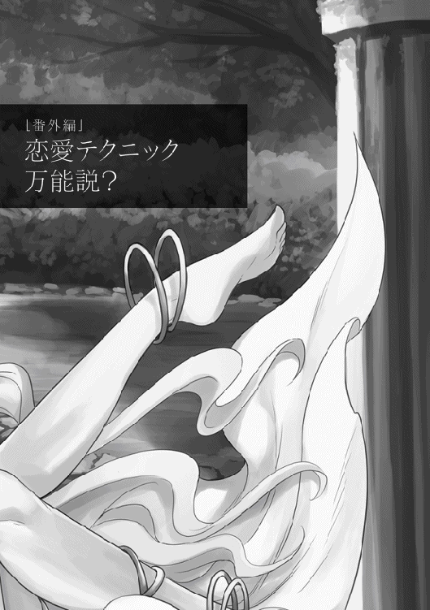

| 異世界は幸せ(テンプレ)に満ち溢れている４ | |
| 羽智遊紀 | |
| TOブックス (2018) | |
王立魔術学院の事件の収拾もつき一安心。と思いきや、貧民対策として街道整備をしたり、スイーツ研究所を発展させたりなど、相変わらずテンプレイベントをこなすのに大忙しの亮二。そんな彼に１つの転機が訪れる。今まで婚約したのはカレナリエンとメルタだけだったが、その均衡が崩れ、新たな勢力がなだれ込んできた！ エレナ姫・シーヴ・ソフィア・新キャラなど数多なる女性たちの中で、第３の婚約者の座を射止めるのは果たして誰か!?
イラスト●miyo.N
デザイン●木村デザイン・ラボ
「ほう。これが最終試験の報告書か？」
ハーロルトは目を細めつつ、恭しく差し出された封筒を執事長から受け取る。厳重に封がされている箱を開くと、花の香りが鼻腔をくすぐった。細やかな気遣いにハーロルトは小さく笑いながら、報告書を取り出して読み始めた。
リョージ・ウチノ伯爵に関する報告書
本名：リョージ・ウチノ
年齢：一一
身長：小柄
冒険者ランク：Ｂ
備考：可愛い。格好良い。強い。素敵。
経歴
王国歴五〇〇年三月二七日にドリュグルの街に忽然と現れる。それ以前の経歴は一切不明。本人情報では『ニホン国』子爵でアーティファクトの魔道具により、ユーハン＝ストークス辺境伯爵領の北にある、キノコの森に飛ばされたとの事。謎に包まれているなんて素敵。
門番のマルコ（ストークス辺境伯爵の実兄）に才能を見込まれ、冒険者ギルドに登録をする。その際に魔力量を測定する水晶球を破壊し、ギルド期待の星と言われた冒険者を鎧袖一触で倒す。その後、試練の洞窟で発生した二度のスタンビートを防いだ活躍により、伯爵であるユーハンにより騎士に任命された。その後の活躍により、ドリュグルで史上最短かつ最年少でＢランクへ昇格。牛人との戦いを見たかった。
また、王立魔術学院への入学前に盤面の森を攻略し、その際にドラゴンスレイヤーとなる。入学試験においてもトップの成績を叩き出し、学院史上初の黒の勲章を授与された。また、生徒としてだけでなく講師としても登壇し、属性魔法や詠唱短縮の可能性を広げる講義を行った。そして在学中に初級探索者ダンジョンを攻略し、再びドラゴンスレイヤーとなる。その功績を以て伯爵に任命された。本当に格好良い。
「......。なあ。ちょっと私情が入りすぎてやせんか？」
「私は事前チェックをしておりませんので。合否は公爵様が判断して頂ければ」
「そうじゃろうが......。最後まで読んでから判断するか」
思わず執事長を見上げたハーロルトだったが、続きを読むように促されると、小さくため息を吐きながら手紙に視線を戻す。
上記以外にも将来的には伝説となる高級ポーションや魔道具作成。さらに転移魔法陣開発にも着手して完成させる。その偉業にはため息しか出ない。それにより莫大な富を得るが、素敵なリョージ様は金銭に執着がなく、周囲を困惑させるような金銭感覚を発揮している。お金に執着しないリョージ様にうっとりする。
その代表例としてパーティー好きが知られており、冒険者ランクのアップ時や王都でも頻繁にパーティーを行っている。一度のパーティーに掛ける費用は貴族としても破格であり、実行責任者に金貨三〇枚を渡したとの逸話もある。次は私も参加したいな。
交友関係
ギルドの受付嬢のカレナリエンやメルタ。武器屋の娘であるシーヴ。三名をメイドとして採用し、その内のカレナリエンとメルタは婚約者となった。シーヴについては保留状態としてドリュグルと駐屯地のリョージ様の屋敷でメイド長として働いている。ずるい。私も婚約者に入れて欲しい。お側にいたい。
また、辺境伯ユーハンやその兄のマルコ、カルカーノ商会の会頭アウレリオ。王室関係者としてエレナ＝サンドストレム、侯爵ハーロルトに筆頭宮廷魔術師ヘルマン、ラルフ枢機卿、テオパルド王宮騎士団長。またマルセル王とも親交がある。その交友関係により、王家主体でサンドストレムすいーつ普及研究所が出来上がったとも言われている。私も研究員としてすいーつを食べたい。
学院内においても、王立魔術学院主任教授ライナルトや学院長シャルロッタの他に、教授や職員とも友好関係を築いており、また魔術論文の共著者としても多数の論文に名を連ねている。
備考
貧民対策として初級探索者ダンジョンで得た報酬以外にも私財をつぎ込んでいるとの情報もある。王家が報酬としてエレナ＝サンドストレムを嫁がせる準備に入っている。ずるい。
懸念として、他国から諜報部隊が集まりつつあり。激化する情報戦に対応するために増員が必要である。我が国としても得がたき最重要人物であるリョージ・ウチノ伯爵のさらなる調査及び、護衛が必要だと判断される。それも特に優秀と認められる者が。リョージ様に早く会いたいです。よろしくお願いします。
報告者 漆黒の闇夜で踊る者
「......。書かれている内容に問題はないが、任務に私情を挟まないよう、教育が必要じゃな。熱意は認められるから任せてみるかの？ どう思う？ シュバルツよ？」
ハーロルトは届けられた報告書を読みながら苦笑を浮かべつつ、執事長であるシュバルツに話し掛けるのだった。
公爵であるハーロルト＝コルトレツィスから夕食に呼ばれた亮二は、最後のデザートを楽しみに待っていた。料理長から自信作との伝言をもらったからである。
「えっ？ これってホットケーキ？」
「ほっとけーきですか？ 特に名前があるわけでなく、私が考えた料理でしたが、リョージ様の国にはこれがあったのですね。まだまだ修行が足りないようです」
「いやいや。似たような物があって、俺の国にしかないと思ってたら、それが出て来たからビックリしただけだよ」
二人のやり取りを聞きながら、一緒に呼ばれた王立魔術学院長であるシャルロッタは、興味深そうにフォークでホットケーキをつつきながら質問をする。
「リョージ君。食事の後にお菓子が出てくるなんて、貴族の食事はやっぱり別格なんですね」
「学院長。行儀が悪いですよ。それにしてもホットケーキと出会えるなんて。さすがは、公爵の料理人ですね」
シャルロッタと亮二が話していると、その様子を眺めていたハーロルトが楽しそうに話し始めた。
「作法などは気にしなくてもよい。ところで味はどうじゃ？ リョージよ？」
「ホットケーキだけでお店が開けるレベルですね。ちなみに、俺の国のホットケーキも作ってみましょうか？ 料理長さえよろしけ──」
「ぜひ！ リョージ様の国のほっとけーきを教えて下さい！ 王宮の料理長に負けたくないのです！」
「近い！ 顔が近い！」
軽い冗談のつもりで言った提案を受け、顔がぶつかる勢いでお願いされた亮二は、ハーロルトに許可をもらうと調理場に向かった。
「おぉ。さすがに公爵家の調理場！ これだけ器具や材料があれば色々と出来る。まずは、ふるいと泡立て器を貸してくれる？」
「ふるい？ あわだてき？」
「おお。こっちにはないのか。ふるいはダマが出来ないようにするため。ダマがあると食感が気になるからな。泡立て器は卵白を泡立てる。棒でかき混ぜるよりもキメが細やかになり、ホットケーキがふんわりした感じになる」
そう言うとストレージからミスリル鉱石を取り出して、亮二はスキルの抽出を使って糸状にすると、泡立て器をイメージしながら一分ほどで完成させた。
亮二から薦められたシャルロッタとハーロルトは一口食べて驚愕の表情になる。先ほどの料理長が作ったホットケーキと柔らかさが格段に違うからである。
しばらくはホットケーキを堪能していたハーロルト達だったが、見た事のない棒を後生大事に抱えている料理長に気付く。そして、なにかに気付いたように眉を寄せると、信じられない表情で亮二を見つめた。
「さすが公爵！ お目が高い！ この泡立て器はミスリルで作ったんですよ」
「ミスリルで調理道具を作るとは......」
亮二の満面の笑みにハーロルトは愕然としていた。
「なに？ この状態」
食堂に入ってきたオルランドの第一声だった。一緒に入ってきたエリーザベトも、なにが起こっているのか分からない様子で周囲を眺める。
「なにをしていますの？」
「お嬢様！ 丁度良かった！ オルランド様もご一緒にどうぞ！ 私とリョージ様で考えた、ほっとけーきです。お召し上がり下さい！」
エリーザベトの質問に、亮二が答えるより早く料理長が興奮した様子で話し掛けてきた。
「貴方が勧めるなら頂きますわ。いい匂いもしていますし。それで、料理長は私の質問に答えて下さる？ なにをしていますの？」
「よくここまでバランスよく積み上げられたものだね」
一〇数個の山として積まれたホットケーキを眺めながら、エリーザベトが確認する。その横で感心したようにオルランドが呟いていた。
料理長から説明を聞きながら、エリーザベトとオルランドはホットケーキをひとくち食べて、その美味しさに言葉を失った。最近の激務を癒す食べ物が与えられたとばかりに、二人は一心不乱にホットケーキを食べた。
「それで、ほっとけーきが美味しいのは認めますわ。ところで、なぜそうなったかの説明はしてくださりますわよね？」
エリーザベトの質問に、料理長ではなく亮二が嬉しそうに説明を始める。
「最初はホットケーキの作り方を料理長に説明してたけど、泡立て器の説明をしていたら改良を思い付いちゃってさ。それで、上手く改良出来たら使ってみたいじゃん？ 魔力を通したらうまい具合に回転したじゃん？ 泡立てが簡単になるじゃん？ それを使ってホットケーキを作ったら、物凄くふんわりと出来上がるじゃん？ そしたら、もっと作りたくなるじゃん？ 料理長も調子に乗ってたくさん作るじゃん？ 負けたくないから俺も作る......。痛い！」
「事情は分かりましたので、落ち着いて欲しいですわ。リョージさん」
「お、お、おお。い、痛い......。そのハリセン。滅茶苦茶痛いんだけど？」
「そうだと思いますわ。これはマルコさんのミスリルのハリセンを参考に作った銀製のハリセンです。残念ながらミスリルのハリセンに比べると、しなり具合が悪く、叩くと純粋に痛いのですわ」
「......。そんな試作品で頭を叩かないで」
亮二が頭をさすりながら文句を言うと、エリーザベトはハリセンを撫でながら経緯を説明する。
「マルコさんから『リョージが暴走していたらハリセンで止めてくれ。マルセル王からツッコミ担当と認められた俺が許可する』との事ですわ。なので、ミスリルのハリセンを参考に作りましたの」
「なにそれ！ マルコ酷い！」
「マルコさんからの伝言です。『お前のせいで王を含むサンドストレム王国全体のツッコミ担当という二つ名が付いたんだからな！ ハリセンで叩かれろ！ それと長えよ！ 二つ名が長えよ！』だそうです。マルコさんからの伝言を覚えるのは大変でしたのよ」
エリーザベトは苦笑を浮かべながら亮二に伝えた。
「ほっとけーきも食べ終わったし、僕と話をしてくれるかな？ リョージ君」
「もちろんでございます。教皇猊下が来られたのは、段取りが付いたとの事でよろしかったでございますよね？」
「......。無理やり敬語を使わない。いつも通りに頼むよ」
オルランドは苦笑しつつ貧民対策の説明を始める。街道整備をする事。そして街道の途中に休憩所を何カ所か作る事。整備する街道は王都から神都がある教皇領まで繋ぐ事。
亮二が労働者募集を行い、エリーザベトは公爵家として協賛する事。そしてオルランドは、教皇として街道整備許可を出すと伝えてきた。
「どういう事？」
「『信徒達よ！ 神都までの道を切り開くのだ！』と教皇が言えば重みが増すんだよ。リョージ君が思っている以上に教皇の力は凄いんだよ」
不思議そうに質問する亮二に、オルランドは苦笑しながら説明した。
王都で、とある新聞が配布された。号外の上に無料であり、好奇心旺盛な王都の人々は次々と受け取り読んでいく。
急募！ 神都への道を一緒に作りませんか？
王都と神都を結ぶ街道を整備します！ 老若男女関係ありません！ 様々な仕事を用意しています！ 三食付き！ 月払いですが日払いも可！ 小さなお子さんがいる方は託児所もあります！ ドリュグルの英雄であるリョージ・ウチノ伯爵とエリーザベト＝コルトレツィス嬢による共同政策。教皇猊下も感謝の言葉を発表！
庶民が多い区画で配布されており、新聞屋が代読を行う力の入れようであった。伯爵となった亮二と、エリーザベトが共同で行う事が書かれており、裏面には面接会場と日時が書かれていた。
「皆も知っているだろうが、ドリュグルの英雄であり、最近伯爵となったリョージ様が中心となっての事業だ！ それにコルトレツィス公爵家や王家も事業に参加されるそうだ。それに教皇様も喜んでらっしゃる！ 凄い話じゃないか！」
「俺達のように救済所で世話になってても大丈夫なんだろうな？」
「もちろんだ！ 面接に行くだけで食事と銅貨三枚がもらえる！ 行くだけでだぞ！」
代読者が興奮した様子で告げると、集まっていた群衆から大歓声が上がった。
「初めての試みでしたが、上手くいったみたいですわね」
「新聞を無料配布か。それに、全額資金援助をするのに記事内容には口を出さないなんてね」
エリーザベトとオルランドが新聞を眺めながら亮二に話し掛けてきた。
「俺達が口を出したら新聞屋の存在価値を否定するだろ。それにしても期待以上の効果だな」
「リョージ様の知識や技術を聞いていると、『実は神の使いなんだよ』と言われても信じそうです。申し訳ありません。教皇猊下の前での発言ではありませんね」
王家代表として参加しているエレナが謝罪をしてきたが、オルランドは笑いながら答える。
「構いませんよ。エレナ姫。イオルス神から『彼の力になりなさい』と、私は言われてますから。リョージ君は神に頼りにされている者ですからね」
「おい。勝手に二つ名を増やすな」
オルランドの言葉に亮二から軽い苦情が入る。
「リョージ様の二つ名は多彩ですよね。私が把握しているだけでも、ドリュグルの英雄を始めとして、牛人の天敵や学院の麒麟児。調理に目覚めし者や、きのこを極めし者。それと、これは王家だけですが、建国王アマデオ＝サンドストレムの好敵手、ぷりんとアイスの伝導者や、食後のでざーと探求者もあります」
「最後！ 思い出した！ 俺のギルド証明書にあった賞罰もエレナ姫の仕業でしょ！ 酷いですよ！ カレナリエンから聞いてますからね！」
エレナから巷に広がっている二つ名を読み上げられた亮二は、最初は気恥ずかしげに聞いていたが、最後でさすがにツッコミを入れる。
「まだありますよ？ ぷりん伯爵はいつになったら私の元へ訪ねて来るのでしょう？ とか、公爵邸で作られたほっとけーきを私も食べたいです！」
「それって単に伝言ですよね？ 近い内に行きますから、変な二つ名は増やさないで下さい！」
「まあ！ 嬉しいです！ まるで催促したみたいですね」
「エレナ姫。間違いなく催促です......」
「これより、街道整備の説明を始めます。司会進行はカレナリエンです。よろしくね！」
壇上で自己紹介しているカレナリエンにざわめきが起こる。
「精霊の愛娘カレナリエン？ なんでこんなところに？」
「知らないのか？ ドリュグルの英雄リョージの婚約者だぞ」
「だからか。この事業はリョージが金を全部出してるんだよな？」
「はい！ そこのお兄さん達！ 私語厳禁です！ 私の話を聞きましょうね」
カレナリエンの注意に周りから苦笑や失笑が生まれ、注意された男性達も顔を赤らめながら謝罪する。
「では説明を始めますね。この事業は王都から神都までの街道を整備するお仕事です。工事期間は一年。早く終われば特別報酬を渡しますから、皆で頑張りましょう」
その他にも肉を中心とした食事が毎回用意される事。頑張っていると認められた者には、リョージから住居と畑が渡される事。さらに優秀な者は家臣として雇う事。などが説明された。その内容が伝えられる度に群衆から歓声が上がり、最後の説明では大歓声となっていた。
「それと、この後の面接を受けた人は銅貨三枚と食事が出ます。面接を受けた人には青と赤の木札を二つ渡します。それぞれが報酬と食事の券になってるから気を付けてね。なにか質問がある人は？」
「はい！ 物凄く人がいるけど、食事は大丈夫ですか？」
「リョージ様が一〇〇〇人分用意してるから大丈夫よ。他にはない？ じゃあ、さっそく受付を始めます。職種ごとに受付を分けてるから気を付けてね」
カレナリエンの説明に一同は指示に従って移動を始めた。
「あの説明で大丈夫でしょうか？ もう少し詳しく説明しても──」
「あれくらいでいいですよ。面接も『今日から来れる？』ですからね。最終的には五〇〇人は欲しいですね。残念ながら今日は食事と銅貨三枚が欲しい人が多そうですが」
亮二はエレナと話しながら料理の準備を進めていた。大きな鍋に次々と投入される野菜に、どんな料理が出来るか分からないエレナは我慢出来ずに確認する。
「リョージ様。これはどのような料理なのですか？」
「俺の国で作られている芋煮ですね。大人数で食べるには一番ですよ」
「それにしても大きな鍋ですね。お皿も大量ですし、準備が大変だったのでは？」
エレナの質問に、ストレージから鉄のインゴットと土の塊を取り出して実演を始める亮二。次々と作られていく鍋や皿を感心して見つめていたエレナだったが、心配になって尋ねる。
「あの、リョージ様。ここまでされると鍛冶屋の仕事が無くなるのでは？ 大鍋だけでも五個ありますし、お皿も一〇〇〇個用意されているのですよね？」
「ええ。そのくらいは用意していますね。でも、ご安心下さい。皿は一回使い切りですし、鍋も使い終わったらインゴットに戻します。急でしたので慌てて作っただけです。鍛冶職人達の仕事は奪いません」
今後の街道整備で大量に使う食器類は発注済の事や、宿泊用の小屋は作成準備に入っている事などを聞いたエレナは、手際の良い亮二に感心しながら熱い視線を送っていた。
「おい！ 順番に並べよ！」
横から割り込んできた男五人に向かって注意をした少年が胸倉を掴まれる。
「うるせえ！ 邪魔すんじゃねえ！」
周りにいた者達は騒動に巻き込まれないように列を崩すと、少年と男五人を取り囲むように輪を作った。
「もう一度言うぞ！ 順番に並べ！」
「餓鬼は託児所にでも行ってろ！」
「向こうで牛乳でも飲んでろ！」
「俺達に文句を付けるとはいい度胸だな」
「周りで見てる奴も文句あるならかかってこい！」
最初に叫んだ男の取り巻き連中も追随するように威嚇しつつ少年を取り囲む。少年が青い顔をしながらも男達を睨み付けていると、横から軽い声がかかる。
「なにしてるの？」
声の主に視線を投げると、小綺麗な服を着た亮二が目をキラキラさせて近付いてきた。少年は世間知らずの貴族の子供が話に入ってきたと思って、慌てて注意する。
「向こうに行ってろ！ 貴族の坊ちゃんが来るような場所じゃない！」
「あっちの五人が無理やり割り込んだ上に、レベルの低い事を言ってるんだろ？」
「見てたのかよ！」
「テンプレだからね」
亮二の回答は理解出来なかった一同だが、からかわれているのは分かり、男の一人が亮二の胸倉を掴もうとするが、逆に腕を捩じられ悲鳴を上げる。
「痛え！ なにしやがる！」
「死なない程度に相手をしてやるから、安心して掛かってこい」
「なめんじゃねえ！」
亮二の台詞に青筋を立てて男が殴り掛かったが、軽く躱されると右頬を殴られて昏倒する。
「やっぱりテンプレはこうでなくちゃな。ところで何人なら相手出来る？」
「子供の手助けなんて必要ない！ いいから、お前は逃げろ！」
少年の言葉に亮二が苦笑していると、フルプレートを着込んだ騎士二人がやってきた。
「この騒ぎはなんだ！」
「こいつらが暴れていたので、注意をしただけです」
「嘘付け！ お前達が割り込みするからだろ！」
「喧嘩をするな！ 全員に食事と銅貨は渡されるから、揉めなくていいだろう」
無理やり、場を収めようとしてくる騎士に、少年が憤慨した表情で詰め寄る。
「それは違うよ！ ルールは守らないとダメなんだぞ！」
「喧嘩の首謀者は誰だ？ 伯爵が貧民対策をしてくださっているのに、揉め事を起こす者を連行しようじゃないか。君も同罪だ！」
「いやいや。なに言ってるの？」
軽い感じで近付いて来た亮二を見て、少年と喋っていた騎士が驚愕の表情を浮かべ、自らの失言に青い顔をする。
「こいつです！ 絡んできたのは！」
亮二に罪をなすりつけようとした男に騎士が叱責する。
「馬鹿者！ この方がドリュグルの英雄だと知らないのか！」
「ド、ドリュグルの英雄？ リョージ・ウチノ伯爵？」
周りの視線が亮二に集中する。
「ドリュグルの英雄なのか？」
「ああ、そうだよ。せっかく世を忍ぶ仮の姿をしたかったのに残念。なあ。俺は、この子を連れて行く。君はここの騒動を収めて、そいつらの受付を済ませたら俺の天幕に連れてきて」
「はっ！ 必ず連れてまいります」
騎士の言葉に鷹揚に頷くと、少年に向かって自分に付いて来るように伝えた。
「じゃあ、細かい話を聞こうか。そこの椅子に座ってくれていいからさ」
「は、はい。では失礼します」
緊張しながら椅子に座った少年は不思議そうに周りを眺める。天幕の中は不釣り合いな扉が設置されている以外は何も置かれていなかった。
「なにも置いてない天幕が気になるか？」
少年の視線に亮二が扉を開ける。
「どうされましたか？ お茶でしたら、もうすぐ用意が出来ますよ？」
扉の奥には部屋が広がっており、そこでお茶の準備をしていたメルタが不思議そうな顔で答える。
「こんな感じで扉の奥に部屋がある魔道具なんだよ。殺風景なのは気にしなくて良い。それで、今回の貧民対策で働こうと思った理由を聞いても？」
「俺の家族は五人いるんだ。......ですよ。だから、俺が家族を養わないとダメなんです」
「父親は？」
亮二の質問に今までの事を話し始める。父親は五年前に病気で死んだ事。母親と二人で家族を養っていたが、今年に入って母親が倒れた事。その治療費と、生活費を稼ぐために様々な仕事をしている事。兄妹の面倒を見ながらでは、仕事も多く出来ずに困っていた事。
「ここ最近は救済所で世話になってて、募集内容に託児所があると書かれていたから応募した──」
「リョージ様！ 先ほど、騒動を起こした者達を連れて来ました」
少年の話を聞いていると、天幕の外から大きな声が聞こえてくる。亮二が一同を天幕の中に入れると同時に五名が一斉に謝罪を始める。そんな様子を見ながら、全員に聞こえるように亮二が話し始める。
「俺への態度は気にしていない。だが規律を破った者には罰が必要だ。それは分かるよな？」
連れてこられた五名は、ドリュグルの英雄である亮二の言葉に青い顔で震えだした。
「俺から与える罰は、この少年の配下として動く事。彼の言葉は俺の言葉と思ってくれ」
「え？ それって、どう言う──」
「彼らの面倒を見るんだ」
少年が理解出来ない顔で確認しようとしたが、亮二から再度と説明を受けると、慌てたように断りを入れ始めた。
「いやいや！ 無理だよ！ 人なんて使った事ないから！ それに喧嘩してた人達だぞ！」
「そのためのサポートも付ける。そこの君。所属は？」
亮二の質問に、コルトレツィス公爵付きの騎士である事を告げる。
「この国に騎士道はあるの？」
「もちろんです！」
胸を張って答える騎士に、亮二は近付きながら語り掛ける。
「俺がいた国では、騎士道とは教会への忠誠、王国への愛国心。その他にも社会的弱者への敬意と慈愛、擁護を惜しみなく与える。さらには敵との不屈の戦い。そして真実と宣誓に忠実であり、悪の力に対抗し正義を守る。かなり省略したけど同じだよね？」
「もちろんです！ 我が王国でも騎士道はそうあるものです！」
「なら、さっきはなぜ守れなかった！ 貧民対策にやって来た者は守る価値がないと？」
「い、いえ。そのような事は......」
今回の対応を聞かれた騎士は最後には黙ってしまった。その様子を眺めながら亮二が確認する。
「名誉を挽回するつもりはあるか？」
「挽回ですか？」
「ああ。あの場を抑える為とはいえ対応が雑過ぎる。その罰として彼を育てろ。公爵には俺から言っておく」
「この少年を育てる事が、名誉挽回に繋がると？」
「ああ。この少年は将来性がある。筋を通すのは並大抵では出来ない。足りないのは知識と経験だ。それを教えて欲しい。その中で君には社会的弱者への敬意と慈愛と擁護を思い出して欲しい。俺に誓えるか？ その少年を導き、真実と宣誓に忠実であると」
「我が名誉に誓って彼を立派に鍛えましょう。君、さっきは済まなかった。名前を教えてもらっていいだろうか？」
「お、俺の名前はリカルドって言うんだ。よく分かってないけど、家族を養うためだったら頑張るよ！ リョージ様！ 頑張るからな！」
「よろしく、リカルド。私の名前はコルネール＝ツェルニクだ。お前達も隊長となるリカルド殿に挨拶を！」
コルネールはリカルドに謝罪し、そして五人も整列させてリカルドに挨拶をさせると、さっそく教育を始めた。
亮二が主催した貧民対策は多くの者から絶賛され、亮二が発行した新聞や噂が入り混じり、さらに噂が様々な場所で生まれていた。また、貧民対策に協賛しているハーロルト公爵や教皇派の貴族、サンドストレム王室にオルランド教皇を筆頭とした教会への評判も日々高くなっていた。
「くしょん！ 絶対に誰かが俺の事を噂にした！」
「最近は王都で流れる噂の七割はリョージ様の事ですからね。昨日は愛人が二〇名以上いると聞きましたよ？ 大丈夫ですよね？ 愛人なんていないですよね？」
「いないよ！ なんで日々愛人が増えているの？ 俺が愛してるのは、カレナリエンとメルタだけだからね。じゃあ前ふりは終わりとして、二ヶ月頑張っているリカルドから報告を聞こうか！」
「......。『友達みたいにしてくれ。堅苦しいのは嫌いだから』と言われたから普通に話すけどよ。目の前でイチャ付くなよ！ イラッとするわ！ ったく。じゃあ、報告するぞ。工事の進捗は三割ほど進んで特に問題無し。それとリョージ様に『伯爵に感謝の言葉を伝えて欲しい』『これで生きられる』『感謝しかない』との伝言を預かってる。ただ、数人から『仕事が出来ない奴と給料が変わらない』との愚痴が出始めてる。俺から見たら仕事量は同じだけどな。その辺りを説明しても理解してくれないんだよ」
「ふーん。じゃあ俺が訪問して説明でもしよう。作業員の人達にも伝えといてよ。ところで話は変わるけど、二ヶ月経ってどんな感じだ？」
「せっかくだから、聞けなかった事を聞いてもいいか？」
「もちろん」
「じゃあ、遠慮なく。俺の家族だけ良くしてもらってるのはなんでだ？ それと、俺をこの役職に付けた理由は？」
リカルドの真剣な表情に、亮二はカレナリエンが淹れたお茶を飲みながら、ゆっくりと話を始める。
「家族の事を良くするのは当たり前だろ？ 仕事で成果を出している家来に冷たくしてどうする？ 手厚い保障を与えて『もっと頑張ろう』と思ってもらわないと。俺の国では福利厚生と言うけど、それが充実している会社......。じゃなくて、領地は繁栄していた。それと最後の質問なんて理由は一つだろ。リカルドが総監督の仕事が出来るからだよ。俺の期待に応えて頑張ってるじゃん！ これで答えになったか？」
亮二の答えを聞きながら、リカルドは今まで働いた場所を思い出していた。日が昇る前から夜の帳が下りるまで働いて銅貨三枚の場所。ミスをすると木の棒で叩かれる事もあった。難癖を付けられて給金をもらえない日もあった。
だが亮二は自分の仕事を正当に評価し、総監督にまで任命してくれている。働いた事を認めてもらえる事に、リカルドは涙を袖口でぬぐうと元気よく返事をする。
「ありがとう！ すっきりしたよ。サンドストレム王国改革者と言われているリョージ様の名声に恥じないように頑張るよ！ そして母さんの病気を治してもらう！」
「おう！ じゃあ、俺から頑張ってるリカルドに褒美だ。ばばん！ 秘薬一個を大盤振る舞い！ さらにどどん！ 勲章！ そしてマント！ まだまだ！ 屋敷の鍵！ それに支度金の金貨一〇枚！」
「え？ えぇ！ な、な、な......。秘薬？ 勲章？ マント？ 屋敷の鍵？」
リカルドが机の上に並んでいる数々の品を見て、呆然として呟きながら亮二を見る。そんな様子を微笑ましそうに見つつ立ち上がると、亮二はリカルドに向かって厳かに告げた。
「リカルド。汝をリョージ・ウチノ伯爵の名において我が騎士に命ず。俸禄は月に金貨一枚と銀貨八枚。与える屋敷は王都の郊外だが、リカルドの家族が住める大きさにしてある。あと、その屋敷でメイドを一人雇う事。採用はリカルドに任せる。秘薬の事は知っているか？」
「え？ それって、リョージ様が持ってる最高の薬じゃ──」
「ああ。そうだ。これはアドバイスだ。メイドを雇う際には家事の経験がある人がいいぞ。リカルドの知り合いで経験豊富な未亡人がいたとして病気だったら、たまたま褒美で渡した秘薬を飲ませたらいい。そう言えば騎士になる返事をもらってないな？」
「......。この身が尽きようとも一族が絶えるまでお仕えさせて頂きます。ありがとう。本当にありがとう、リョージ様」
そこまで自分の事を考えてくれている亮二の優しさに、リカルドは鼻の奥からこみ上げてくる感覚と、涙が溢れ出るのを必死で堪えながら応えた。
リカルドを騎士として叙勲し、その後は貧民対策についての報告を受ける。貧民対策は順調に進んでおり、当面はリカルドに任せる事にして、亮二の訪問は一ヶ月後となった。
「あっ！ そうだ。これも渡しておくよ」
「これは？」
亮二から袋を手渡されたリカルドが中を覗くと真っ黒な口しか見えず、何が入っているか分からなかった。困惑した表情のリカルドに、亮二は嬉しそうに説明を始める。
「ああ。アイテムボックスの中に、作業者達の休憩中に配って欲しいお菓子の蜂蜜レモンサブレが入ってる。一〇〇〇枚ほど入ってるから、気にしないで食べてくれ」
亮二の説明を受けたリカルドが呆然とアイテムボックスを眺める。彼の知識ではアイテムボックスは冒険者が苦労して手に入れる物であり、お菓子を入れる袋ではなかった。非常識な使われ方に、なんとか頭を必死に動かしたリカルドが亮二に質問する。
「アイテムボックス？ アイテムボックス!? アイテムボックスですよ！ アイテムボックスにお菓子？」
「お、おう。アイテムボックスと連呼しすぎだろ。安心してくれ。これに入っているお菓子は時間が流れないから腐ったりしないぞ？」
「そんな事を聞きたいわけじゃなくて！ アイテムボックスの使い方が間違っている！ リョージ様は非常識過ぎる！」
「はっはっは。なにを言っているのかね？ リカルド君は」
リカルドの叫びに、亮二は爽やかに笑いながら答える。その横でカレナリエンは苦笑を浮かべていた。
リカルドに工事の総指揮を任せた亮二は学院改革に力を入れ始める。縁故やコネで採用された教授や職員が先日の騒動で大量退職しており、当初は人員不足であったが、亮二やライナルトが教壇に立ち、その他にも試練の洞窟調査チームの学者五名を学院に召集した。それ以外にも私塾を開いている者を生徒ごと学院に入学させる事で、人員不足の解消を行った。
私塾を開いている者の多くは、学院での授業を受け持つ事を夢見ている者が多かったため、今回の緊急処置に伴う採用を歓迎していた。
亮二とシャルロッタは教員が増え、人員不足が改善されたタイミングで、現在の特別クラスと普通クラスの二クラス制を細分化して三年制にし、現二年生については卒業するも進学するも自由に出来る選択制とした。
授業日数も現行の週六日から五日に変更し、休日を二日に増やして講師の疲労軽減及び、研究時間を持てるように改革する。また望む者には、年に一度の研究会での優先発表権を与えていた。
「このクラスでは授業をするのは初めてだから、よろしくな！ 俺の授業では詠唱短縮の練習として魔石に属性を付与する。魔石一〇個への属性付与は出来たか？ 全部出来てなくても大丈夫だぞ。まずは実力を知りたいだけだからね」
「五個は出来てます！」「俺は三個」「なんとか一個は出来た......」
亮二には一人だけ返事をしない生徒に見覚えがあり、そちらに視線を向けるとうつむかれてしまう。
「進み具合はどうだ？ ネイハム」
「兄貴......。いえ。リョージ先生。一個も出来ていません」
「リョージ先生！ ネイハム君は無能という意味の白の勲章をお持ちなんです。そんな奴に難しい事を言っても無理ですよ。そうだよな。ネイハム！」
亮二が声の方に視線を向けると、蔑むような視線と態度。それに完全に見下した口調でネイハムを攻撃している男がいた。そして呆れ顔になっている亮二の視線に気付かず、男は大仰に挨拶を始める。
「イェフと申します。リョージ先生の授業は素晴らしいと聞き、楽しみにしておりました。我が父も『サンドストレム王国の血統があれば完璧だ』と申しております。我が父をご存じありませんか？ 我が家はリョージ先生と同じ伯爵です。まあ、我が家は建国時から続く由緒正しき血筋ですが」
「ふーん。良かったね。血筋しか誇れない君の父上は立派だね。全く知らないけど」
男は話を軽く聞き流して授業を始めた亮二を憎々しげに睨んでいたが、全く意に介されていない事に気付くと、苛立たしげに着席した。
亮二は特別クラスでは感じなかった貴族の影を感じる。さきほどの生徒を中心とした貴族達と、それ以外に分かれているようであった。ただ、白の勲章ネイハムはどちらにも属しておらず、一人でいるようだったが。
「悔しくないのか？ お前の店で俺に見せた気概はどこにいった？ あんなバカに好き勝手言わすなよ！」
「兄貴はそう言うけど、アイツは貴族だしトップクラスの成績を収めているんだよ！ 魔法が使えない俺が同じクラスにいるだけでイライラする──」
「よし！ 今日から特訓だ！ 俺が魔法を教えてやる！」
授業後にネイハムを呼び出した亮二が問いただすと、唇を噛み締めて黙っていたが、徐々に辛さを吐き出し始めた。亮二はネイハムの目を見て、自分の無力さから諦めつつある様子を感じ取ると、力強く宣言した。
「え？ 兄貴は貧民対策や学院講師として忙しいはずじゃ？」
「気にしなくていい！ 貧民対策はリカルドに押し付けて──任せている！ 講師の仕事はライナルトになすり付け──。まあ。一週間で魔法を使えるようにしてやる！」
「い、一週間？ いやいや。兄貴でも無理だって。今まで授業も真剣に出てた。だけど、魔力は上がらなかったし属性も──」
「そんな事は関係ない！ 俺の屋敷で特訓だ。親父さんには『息子は預かった』と言っておく」
「兄貴！ その台詞は駄目だ！ 誘拐されたと勘違いする！」
「『お宅の息子は新しい世界に旅立ちました』は？」
「どこ！ 新しい世界ってどこ！」
「えー。じゃあ、『息子さんは実に勇敢でした』は？」
「お願いだから勝手に殺さないで！ 普通に『屋敷で魔術の勉強をしています』でいいじゃないか！」
「えぇ！ つまらないじゃん！」
「伝言に面白さを求めないで！」
ネイハムはメルタから屋敷の説明を受ける。寝泊まりする部屋やトイレ、風呂の説明を受けたが、自分が紹介した時に比べると、屋敷の内装が全て変わっている事に気付く。何気に置かれている美術品の素晴らしさに亮二が貴族だと感心していたネイハムだったが、実は亮二が暇つぶしに作った作品との説明を受けて驚愕の表情になっていた。
驚きの連続で疲れ切ったネイハムだったが、亮二に連れられて、離れの小屋にやってきた。
「さっそく特訓に入ろう！ 覚悟は出来てる？」
「はい！ 頑張ります」
「本当に？」
ネイハムは気合を入れて答えていたが、亮二と目が合った瞬間に硬直する。亮二の雰囲気がいつもの感じとは違い、ドリュグルの英雄と呼ばれる人物の威圧感だった。ネイハムはその恐ろしさに涙が溢れ出そうになる。
「ネイハム」
「は......はい！」
恐ろしさで声が中々出ないネイハムを、亮二は気にせず話し出す。
「俺の言葉には『はい』か『Ｙｅｓ』か『分かりました』で答えろ。そして言葉の最後には『サー』だ。分かったな？」
「は？ あ、兄貴なにを──」
「『分かりました』だ」
「いや、だから──」
「『分かりました』だ」
「あの──」
「『分かりました』だ」
「わ、分かりました！」
「それでいい。次は『サー』も忘れないようにしろ！ それから、俺の事は軍曹と呼べ！」
「え？ ぐんそう？ それって──」
「『分かりました』」
「わ、分かりました！ ぐんそうと呼ばせて頂きます！ サー！」
「よし！ では授業を始める。先ほど渡した魔石に魔力を注ぎ込め！」
「Ｙｅｓ！ サー！」
大声で答えたネイハムに、亮二は大きく頷きながら説明を始める。
「お前が手に取ったのはキノコのお化けの魔石である！ いいか！ お前はキノコのお化けよりも魔力がないと自覚しろ！ 自分の矮小さを自覚した上で、魔力を注ぎ込め！」
「分かりました！ サー！」
「ちっぽけな魔力が無くなれば、用意したマナポーションを飲め！ そして疲れたらポーションを飲め！ これは両方とも俺が作ったポーションだ！ 冒険者ギルドで取り合いになるほどの逸品だ。だが、遠慮はするな！ そんな暇があるなら一個でも多くの魔石に魔力を注げ！ 分かったな！ ひよっこ！」
「Ｙｅｓ！ サー！」
ネイハムは机に座ると大量の魔石を手に持って魔力を注ぎ始める。亮二はネイハムの魔力の流れを感じながらネイハムのステータスを確認し、魔力がなくなりそうになるとネイハムに注意を飛ばす。
「おい！ マナポーションを飲め！ 自分の魔力量くらいは把握しろ！」
「自分の魔力量なんて把握出来ないです！ サー！」
「反論するな！ 今回だけ許してやるが次はないぞ！ いいか！ 身体がふらつく事があれば、それが魔力枯渇状態だ。今の感覚を忘れるな！ マナポーションを飲み終わったらすぐに始めろ！ バカ貴族のバカ息子に追いつけないぞ！ 悔しさを忘れるな！」
「はい！ サー！」
ネイハムが魔力を注ぎ始めて三〇分が経っていた。周りには飲み干されたマナポーションが所狭しと転がっていたが、魔力が注ぎ込まれた魔石は三つだった。あまりの効率の悪さを見かねた亮二が、自分の魔力をネイハムの手を通して魔石に注ぎ始める。
「いいか。お前に分かるように魔力を注いでいる。この感覚を意識しろ。お前は魔力が少ないのではなく注ぎ方が雑すぎる！ 魔石を指先で持って、そこに魔力を集めるイメージをしろ！」
「あっ！ 魔力が指先に集まるのが分かる！」
亮二のアドバイスでコツを掴んだネイハムは、今までが嘘のように次々と成功させる。時間で課題としていた魔石への魔力付与である五〇個を終わらせていた。
「ぐんそう！ 完了しました！ サー！」
「よし！ 魔力の減り具合はどうだ？ 指先に集まる魔力を感じる感覚は掴めるようになったか？ 自分の限界は把握してるか？ 戦いにおいて自分の限界を知る事が生き残るためには必要だ！ それを忘れるんじゃないぞ！」
「Ｙｅｓ！ サー！」
「よし！ あと五〇個で終わりにしてやる！」
「え？ もう終わりでは？ あっ！」
「一〇〇個追加だ」
思わず呟いたネイハムに、亮二はニヤリと笑いながら追加作業を命じた。
「自分に魔力があると分かっただろう？ この世界に魔力がない人間はいない。後は使っていく内に魔力総量も上がるからな」
「ま、魔力総量が上がる？ あっ！ 失礼しました！ サー！」
朝食を食べながらの亮二の台詞にネイハムが驚く。水晶球で魔力量がないと判定されたのに、総量が上がると言われたのである。食べかけのパンを手に持ったまま固まっているネイハムに、亮二は笑いながら話しかける。
「今は普通にしていいぞ。ゆっくりと朝食を食べてくれ。ライナルトや、最近やって来た教授連中も普通にしてるだろ？ ネイハムの兄弟子だぞ？」
「ライナルト主任教授達も鍛えた？ 学院を正道に導く者の二つ名は伊達じゃないっすね！ さすがは兄貴です！」
感心したように頷きながら話しているネイハムに、新たな二つ名に気付いた亮二が目線で訴えかけると、横で給仕をしていたメルタが話しかけてきた。
「その二つ名は聞いた事があります。シャルロッタさんが学院長になってから出始めましたよね？ 他にも、神に祝福された者や、女性の天敵すいーつ侯爵、エレナ姫の懐すいーつも聞いた事があります」
「最後！ 最後の懐すいーつってなに!? 増えすぎ！ 二つ名！」
意味不明な二つ名が増えていく事に、思わず亮二がツッコんだ。
「おい！ 白ネイハム！ 今日も来たのか？ 学院の品格が疑われるから来るなよ」
「やめたまえ。貴族がそのような口を聞いてはいけないよ。なあ。魔力も属性もない君が学院にいる理由はある？ 我らと同じ教室にいる理由を教えてくれ。そう言えば、朝はリョージ先生と一緒だったね？ それにしても、貴族でない上に魔力も属性もない人間と親しくする意味はあるのか？ 全く。成り上がりの伯爵の気持ちは理解が出来ないよ」
自分への悪口は我慢していたネイハムだったが、矛先が亮二に向くと席から立ち上がり、昨日から絡んできているイェフを睨みつける。
「お前みたいな無能な庶民ごときが同じ教室にいるだけ苦痛なんだよ。さっさと辞めて父親の不動産業を手伝ったらどうだ？ 俺が伯爵になったら贔屓にしてもいいぞ。うちは由緒正しき伯爵家だから箔が付くだろ？」
睨んでいるネイハムの肩に手を置いて耳元で話し始めたイェフに叫び返す。
「ふざけるな！ お前みたいな奴に物件を紹介するか！」
そんなネイハムとイェフが一触即発になっている教室に女性の声が響く。
「失礼します。ネイハム様の教室はこちらで？」
「え？ メルタさん？」
メイド服で現れたメルタに教室中の視線が集まる。珍しい黒髪ストレートに、王都でも滅多に見かけない眼鏡を掛けた知的美人との表現がよく似合っている姿に、生徒達から感嘆の声が上がる。
「リョージ様が特別クラスでお待ちです。お取込みのところを申し訳ありませんが、来て頂けますでしょうか？」
「ちょっと待ってください。勲章の色が白である庶民を特別クラスに連れて行くのはおかしいのでは？ リョージ先生は伯爵だから無茶が出来ると？」
イェフがメルタに向かって話しかける。突然遮られた事に眉を寄せながら、イェフを眺めていたメルタが答える。
「ネイハム様は特別クラスに移られると聞かされておりますが？」
メルタの発言に最初はキョトンとしていたイェフだが、大爆笑を始める。
「はっはっは。おい！ 聞いたか？ 俺達の希望の星であるネイハム様が特別クラスに移動されるぞ！ 魔力も属性もない人間が特別クラス？ リョージ先生が伯爵特権を使って連れて行くなんて、おかしいと思わないか？」
「そうだ！」「学院を辞めろ！」「特別クラスに行くのはイェフ様が相応しい！」
イェフの声に取り巻きから声が上がる。イェフが両手を挙げて取り巻きを落ち着かせると、ネイハムに向かって挑戦的な声で語りかけた。
「ネイハム様！ 特別クラスに行かれるのなら、私に凄さを見せてくださいませ。出来ない事はないですよね？ それともリョージ先生の陰に隠れますか？ 早く答えろよ」
「ふざけるな！ 隠れるわけないだろ！ 特訓の成果を見せてやる！」
「さすがは特別クラスに行かれるお方だ。では、入学試験と同じ試験を受けてもらおうか。日時はそっちに決めさせてやる。逃げるなよ。おい行くぞ」
イェフは嫌みたらしく笑うと、取り巻きを連れて教室から出て行った。
「申し訳ありません。リョージ様。無用な騒動を引き起こしてしまいました」
「いや！ メルタさんは悪くない！ 俺がイェフなんて気にせず、受け流したら問題なかったんだ。兄貴ごめん！」
特別クラスで待っていた亮二に、メルタとネイハムから昼休みの騒動についての謝罪を受ける。詳細な内容を聞いた亮二は少し考え込むと、メルタと共にシャルロッタ学院長の元に向かった。
「失礼します。学院長。入ってもよろしいでしょうか？」
「どうぞ。急にどうかしました？」
来訪を告げるノックの音と亮二の声に、シャルロッタが扉を開けて中に招き入れる。二人が学院長室に入ると、念のために魔力感知を行い盗聴器が仕掛けられていない事を確認した上で、亮二が昼休みの騒動についての説明を始めた。
「ネイハムとイェフが喧嘩したそうです。それで、話の流れで二人が入学試験をもう一度する事になったので、立会人をお願いしていいですか？」
「学院長としては生徒同士の争いを止めて欲しいのですが......。それにしても、ネイハム君とイェフ君ですか。対照的な二人が喧嘩をしたのですね」
亮二とメルタの視線を感じたシャルロッタが説明を始める。ネイハムは成績こそ悪いが、真面目に授業に取り組んでいるのに対し、イェフは伯爵家の息子として前学院長からかなり優遇されているとの事だった。
特別クラスへの編入こそなかったが、伯爵家の権力を使ってダンジョンアタックする際には護衛が付き、アイテムも使い放題で得た素材も学院に納めずにいるとの事だった。
「そんな事を許してるのですか？」
「許した訳ではありません。私も学院長として伯爵家に申し入れを何度も送っています。ただ、『忠告には感謝。だが指示は無用である』と返って来るのよ！」
「なるほど。前学院長が甘やかし、そしてシャルロッタ学院長が貴族じゃないから、対応が雑になると。公爵にお願いしてみるか」
シャルロッタの困り果てた言葉に亮二は頷くと、ハーロルトに協力を求めるため、手紙をしたためた。
「イェフ＝レームか。貴族派の伯爵の一人息子だな。リョージ殿の部下はおもしろい奴と喧嘩をする。なるほど。なるほど。伯爵家の地位を乱用して学院で好き放題とはの。教授や講師に目を向けておったから見落としておったわ。ネイハムとやらに会ったら、褒めの言葉でも掛けてやるか」
「嬉しそうですね。ハーロルト様。レーム伯爵となにかありました？」
亮二から経緯を聞いたハーロルトは嬉しそうに頷く。そして、思案顔が続いたかと思うと、レーム伯爵を追い落とすための算段を手紙に書いて封蝋すると執事に渡した。
「レーム伯爵との事は置いといて。どうじゃ。最近の貧民対策の進み具合は？」
「リカルドが頑張ってますよ。騎士に任命してから心配するくらいに働いていますね。学院の改革に力を注ぎたいので助かっていますが、一区切り付いたら長期休暇を与えようと思っていますよ」
「長期休暇？ ふむ。それもニホン国では家臣に与えているのかの？」
亮二の言葉にハーロルトが反応する。亮二から二週間ほどの休暇を与え、慰労金も渡す予定であると聞いたハーロルトは感心したように頷き、自領でも取り入れる事を決めた。
「イェフとの決闘は一週間後と連絡したから気合を入れろ！」
「Ｙｅｓ！ サー！」
ハーロルトの屋敷から帰ってきた亮二は、学院でネイハムを拾うと屋敷に戻って、特訓のカリキュラムを進める。
「昨日は三〇分で五〇個だった。今日は一五分で五〇個だ。そして完了時間をどんどん短くしていくぞ！ 最終日は五分で出来る事を目指せ！」
「分かりました！ サー！」
「次は属性付与の授業に移る！」
「え？ は、はい！ サー！」
「いいか。まずは火属性から始める。ここにドラゴンの魔石がある。この魔石には火属性を付与している。まずは魔力を流してみろ！」
「ド、ドラゴンの魔石？ 分かりました！ 魔力を注ぎます！ サー」
ネイハムが魔力を注ぎこむと、魔石が反応して暖かさを感じ始める。ネイハムの魔力に反応して徐々に魔石の温度が上がる。そんなネイハムの身体に、今まで感じた事のない感覚が突然理解出来るようになって叫ぶ。
「ぐんそう！ 火属性の感覚が分かる気がします！ サー！」
「よし！ その感覚を忘れないようにしろ！ 魔力が尽きそうならマナポーションを飲め！ ここだけだぞ！ マナポーションが飲み放題なのは！ 学院で同じ特訓が出来ると思うな！」
「分かりました！ サー！」
ネイハムは火属性が身体の中から出てくる感覚に戸惑いながらも、歓喜に打ち震えるのだった。
「あの？ なぜ我々はリョージ様の屋敷に呼ばれたのでしょうか？」
「よく来てくれた。学院で頑張ってるお前達に感謝の気持ちを込めて、食事会を企画した。試練の洞窟での探索が終わってから会ってなかったにもかかわらず、快く学院に来てくれて本当に感謝している。食堂まで案内しよう」
屋敷に呼ばれたライナルトと、試練の洞窟探索メンバーの五人が突然呼ばれた理由を亮二に問い掛ける。亮二は嬉しそうに企画の趣旨を説明すると、ライナルト達を食堂に案内する。
「え？ 今の感覚は──」
「さすがはライナルト。久しぶりの感覚だろ？」
ライナルトが首を傾げていると、亮二が振り返りつつ話し掛けてきた。残りの五人も違和感で首を傾げながらも食堂に到着すると席に座る。亮二はライナルト達が席に座ったのを確認して、カレナリエンとメルタ、シーヴやメイド達に飲み物を持ってくるように伝える。
「紹介しよう。彼の名前はネイハム。白の勲章で明後日にバカ貴族のバカ息子と決闘をする」
「その件ならシャルロッタ学院長から聞いてますよ。ネイハム君。本来なら我々教授陣や講師が生徒を守らないといけないのに申し訳ない」
ライナルトから謝罪を受けたネイハムが恐縮した表情で問題ないと告げる。そんな様子を眺めていた亮二だったが、突然椅子から立ち上がると号令を掛けた。
「全員起立！ おい！ お前ら！ たるんでるぞ！ もう一度、その根性を叩き直してやる！ これから森に入って訓練だ！ 四〇秒で用意しろ！」
「「「「「「Ｙｅｓ！ サー！」」」」」」
「えぇ！ ちょっと待って！ 兄貴？ な、なにをいきなり？ 俺は『今日はライナルト主任教授や教授達を特別講師として呼んだから、しっかりと勉強して明後日の決闘に備えるんだぞ』と聞いたはず！」
「まだ、調きょ......。いや、洗脳......。じゃない。教育だ！ 俺の事は軍曹だと言っているだろが！」
「いやいや！ 明後日なのに森に入って訓練って！」
「おぉ！ あのぐんそうに意見をしてるぞ！ ネイハムは我らよりも一歩先に進んでいるな！」
反論の余地もなくライナルトや教授達と一緒に二日に渡る特訓をやりきったネイハムは、燃え尽きた顔をしながらも、イェフとの決闘は問題ないと感じていた。
「逃げなかった事は評価してやる。だが今回の勝負で負けたら学院から消えろ。お前みたいな力のない庶民がいるだけで大迷惑なんだよ。そして俺は誰にでも全力を尽くす。今回の為に金貨五枚もするワイバーンの魔石を使った銀の杖を用意した。他にもマナポーションを大量に用意している。買い占めているからマナポーションを買えなかったはずだ。獅子はウサギを狩る時も全力を尽くす事を教えてやる。それと今日の晴れ舞台を父が見に来ている。その事に注意して頑張ってくれ。見せ場は少しでも欲しいからな」
観客席には学生や講師の他に、多くの貴族が集まっていた。やって来たネイハムにイェフは威嚇交じりの言葉を交わすと、父親であるレーム伯爵に向けて笑顔で一礼する。
観客席からネイハムとイェフの様子を眺めていた亮二は、話の内容を聞き耳スキルで確認すると、貴族が集まっている場所に視線を向ける。
「あの貴族達はイェフが呼んだのか？」
「貴族はそうですが、それ以外にこれだけの人が集まったのは、ぐんそうがネイハムさんを鍛えたと噂が流れたのも大きいです。マルセル王のお気に入りであり、伯爵になったばかりのぐんそうです。それに特別クラスに所属し、初級探索者ダンジョンをクリアした上に莫大な報酬を手に入れた。また貧民対策では、その報酬を全額使ったので王国民からの絶大の支持があり、またエレナ姫とも懇意にしている。そんな人物がネイハム君を鍛えたのです。どう鍛えたのかと話題になっていますよ」
亮二の呟きに、ライナルトが苦笑しながら答えた。亮二が貴族の集まっている場所に再度視線を投げると、怨嗟や羨ましさのこもった視線が大量に突き刺さってくる。
「え？ 物凄い勢いで睨まれたけど？」
「じゃろうな。レーム伯爵に『貴殿のご子息が決闘をされるそうですな。伯爵家として代表されるとは大したものです。決闘相手は我が公爵家と縁のあるウチノ伯爵が鍛えし者で、我も彼を応援に行きます』と手紙を送ったからの」
亮二の呟きに、王家の権限を使って観戦に来ていたハーロルトが嬉しそうな声で説明を始める。レーム伯爵が息子の為に学院に圧力をかけたが、シャルロッタに突っぱねられた事。道具屋でポーションやマナポーションの買い占めをした事。それによって在庫不足からくる値段高騰で冒険者ギルドから伯爵家に苦情が出ている事。嬉しそうに説明するハーロルトに、亮二は人の悪い顔をしつつ話し始めた。
「なるほどね。そんな無駄な事をしてたのですね。じゃあ、俺は渡しに行きますね」
「なにをじゃ？」
「ドラゴンの魔石を使ったミスリルの杖。疲労回復効果のある魔道具に、ウチノ家特製のポーションにマナポーションが全て入っているアイテムボックスをネイハムに渡してきますね」
亮二がイェフに聞こえるようにアイテムを渡す。ネイハムに渡される道具を聞かされるたびに、イェフの顔色は青や赤に変わり最後はドス黒くなっていた。
「卑怯ではないか！ 伯爵！ そのような品を庶民が持つなど！」
「卑怯？ アイテムの買い占めや、学院長に圧力をかける人間がくだらないと言うな。まさか、名誉あるレーム伯爵なら、なにをしてもいいとでも？」
まさに、我が伯爵家がなにをしようと勝手だ！ と叫ぼうとしたイェフだったが、亮二に台詞を取られ、口をパクパクさせていると、ネイハムがイェフを睨みながら亮二に話す。
「兄貴！ 頑張るよ！ 兄貴にここまでしてもらって、負けたとは言えないから！」
「当たり前だ！ 俺の特訓を受けて負けの選択肢はない！ あるのは『勝つ』か『余裕で勝つ』か『完全に勝つ』か『完膚無きまでに叩き潰す！』だけだ！ 分かったな！」
「はい！」
亮二の言葉にネイハムは勢い良くと応えると、水晶球が置かれている場所に向かう。その後ろ姿を見送りながら、元の場所に戻るとハーロルトに確認する。
「ハーロルト様は、どこでレーム伯爵の悪事を？」
「優秀な影がおるからの。リョージにも紹介してやろう。あ奴は、お主のファンじゃからな」
「可愛いですか？」
「可愛いぞ。黒色の服装が好きじゃな」
「会う時に黒の装飾をプレゼントしますね」
「それは喜ぶじゃろうな。黒の短剣とかをやってくれ。ところで、今の話をカレナリエンやメルタ、それにエレナ姫にも伝えてもよいかの？」
「それは勘弁してください。邪な気持ちはないですよ？」
魔力測定勝負
「基本である魔力量を測定しようじゃないか。私は入学時に薄い赤色を記録したが、あの時よりも魔力量は上がっているぞ。特別クラスに行くお前は当然赤色だよな？」
イェフはネイハムに語りかけながら、魔力測定器に両手をかざして魔力を注ぎ始める。魔力測定器は徐々に色を変えながら最終的には赤色となった。
「前回より一段階上がってますよ」
今回の試験官はシャルロッタが務めており、水晶球が赤色だと告げると、取り巻きや貴族がいる観客席から歓声が上がった。
好成績を出したイェフはネイハムに見下した視線を投げかけると、魔力測定器の前から退いて話しかけた。
「どうぞ。特別クラスに行かれるネイハム殿」
「赤色程度でドヤ顔させるな！ 測定器を壊すつもりでやれ！」
「Ｙｅｓ！ サー！ ぐんそう！」
亮二の激励に応えたネイハムは目を瞑ると、魔力測定器に手をかざして全力で魔力を注ぎ込む。
「おぉ！」「嘘だろ！」「ネイハム凄え！」「不正を働いたに決まっている！」
周りの声に恐る恐る目を開けたが、魔力測定器は元の色に戻っていた。不安そうな顔をしているネイハムを見て、シャルロッタは嬉しそうな顔で伝える。
「赤色の上で薄い青色ですよ。頑張りましたね」
結果を見たイェフは信じられない表情で水晶球に近付くと、不正が行われていないか確認し、問題がないと分かると、ネイハムを睨みながら異議を唱える。
「あいつの記録は偽造だ！ おい！ もう一度やってみろ！」
「何回でも見せてやる」
イェフの言葉にネイハムは魔力測定器に手をかざして魔力を注ぐ。当然ながら魔力測定器は薄い青色を示した。
「イェフ君。納得出来たかしら？ 第一の勝負である魔力測定は、ネイハム君の勝ちとします！」
修練場にシャルロッタの声が響いた。
属性判定勝負
「た、多少は魔力が増えたようだな。だが、属性の数が学院における力だ！ 見ろ！ 俺は属性を二つ持っているぞ！」
イェフが水晶に魔力を流すと、火と水の属性が現れる。
「今度はお前の番だぞ！ 無属性の力を私達に見せつけてくれ！」
イェフの言葉に取り巻きの学生達から爆笑の渦が、レーム伯爵達がいる観客席からも笑い声が響く。緊張のあまり唇を噛みながら水晶に近付いたネイハムの手は震えていた。その状態で亮二から声が掛かる。
「ネイハム！ 特訓を思い出せ！ こんなレベルの低いヤジで緊張する鍛え方はしていないぞ！」
「分かりました！ サー！」
冷静さを取り戻したネイハムが魔力を注ぐと、赤色や青色、白色や金色になる。特訓を始めてから属性が次々と目覚めたネイハム以上に、シャルロッタが驚愕の表情で呟き始めた。
「よ、よ、よ、四属性？ な、なんで？ 私でも三属性なのに！ これもリョージ君が鍛えたから？ 知りたい！ リョージ君の特訓内容を是非とも知りたい！」
「嘘だ！ 四属性の持ち主なんているわけがない！ シャルロッタ学院長！ 絶対におかしいです！ こんな庶民が属性を四つも持つなんて！ 私でさえ！ クラストップの私でさえ！ 属性は二つなのですよ！ こいつは無属性だったのに、一週間で四属性になるなんて、おかしいじゃないですか！」
大騒ぎをしている二人とは対照的に、観客席は沈黙が支配していた。やっと我に返ったシャルロッタがネイハムの勝利宣言をするのだった。
「どうしますか？ 詠唱速度勝負でもネイハム君の勝利でした。次の連射能力判定勝負が最後になりますが、君が勝ってもネイハム君の勝ちです。イェフ君？」
シャルロッタの問い掛けにイェフは答えず、ネイハムを濁った視線で睨み付ける。
「お前のせいだ。お前が学院にいるから全てがおかしくなる！ お前さえいなければ全てが上手くいく！」
イェフの声は呟くように小さかったが、徐々に大きくなり絶叫となる。その姿はいつものような貴公子然ではなく、眼は血走り呼吸も荒く姿勢も前傾になっていた。
「イェフ君？ 落ち着いて──」
「うるさい！ お前も仲間だろうが！ 我が伯爵家に逆らったら、どうなるか教えてやる！」
シャルロッタがイェフの異常に気付き落ち着かせようとしたが、血走った眼をシャルロッタに向けると突き飛ばして詠唱を始める。
『我、ここに熱き流れを呼び出し、敵を撃たん！ ファイアアロー』
「ネイハム！」
「はい！ アイスアロー！」
シャルロッタに向けて魔法が撃たれると周囲から悲鳴が上がる。そんな中、亮二の言葉に反応したネイハムが詠唱短縮でファイアアローを相殺し、間合いを一瞬で詰めてイェフの行動力を奪って取り押さえた。
「イェフに何をする！ 庶民風情が我が息子に触るな！ イェフを救え！」
「「「おぉ！」」」
レーム伯爵の声に、控えていた騎士達が修練場に雪崩れ込む。しかし、そこには亮二がミスリルの剣を抜いた状態で立っており、ゆっくりとした口調で話し始めた。
「間合いに入った者はリョージ・ウチノが制圧する。俺と戦いたい奴はかかってこい。牛人三体とやりあった実力を見せてやる」
ミスリルの剣には雷属性魔法が三重で掛けられ、刀身は火花を散らしながら幻想的な姿になっており、光り輝く亮二の姿と苛烈な目線で威圧してくる英雄の姿に、その場にいた一同は目を奪われた。ただ一人を除いて。
「構わん！ 相手はたかが一人ではないか！ 一〇人以上で襲えば、ドリュグルの英雄だろうと対抗出来るものか！ 一斉に攻撃しろ！」
レーム伯爵の横にいた魔術師の男が騎士に号令をかける。ドリュグルの英雄とはいえ、未成年の少年に大多数で攻撃する事に躊躇している騎士達に構わず、魔術師の男が詠唱を始めた。
『我、ここに熱き流れを一つに纏め、目の前の敵を打ち払わん！ ファイアーボール』
魔術師から放たれたファイアーボールが亮二を中心に大爆発を起こす。周囲から悲鳴が上がる中、魔術師の男は満足気な顔をしていたが、亮二がむせてはいるが傷一つ負わずに大爆発から出てくるのを見て驚愕の声を上げる。
「ネイハムの真似は嫌だから、ウォーターボールにしたのが間違いだな。びしょ濡れだよ。素直にアイスボールで相殺すれば良かった」
「無傷だと！」
「無茶するね。あんな距離でファイアーボールを撃ったら、味方を巻き込むだろう？」
騎士達を囮に、魔法で攻撃した魔術師の男に亮二は声を掛けつつ、さらに気軽な感じで騎士達に話しかける。
「ねぇ。味方を巻き込む魔法を撃つ奴と一緒に戦うってどう？ もし、嫌々なら侯爵に取り成してもらうけど？」
「お気遣い感謝いたします。ですが、我らは伯爵家に使える身です。命令があれば従うのみ。ただ、ドリュグルの英雄であっても未成年に剣を抜く気はありません」
騎士団長らしい男性の返事に亮二はため息を吐くと、対面している騎士達に向かって叫ぶ。
「覚悟は受け取った。お前達の騎士道が伯爵だけに向いているのは残念だ。大人しく気絶してもらおうか！」
亮二はそう叫ぶと、魔術師の男を邪魔するためにウォーターボールを適当に撃ち放つと、騎士達との間合いを詰めつつ、目の前の騎士を殴りつける。
殴りつけられた騎士は受け身を取れずに意識を手放す。そして亮二は気を失った騎士には目をくれず、横にいた騎士団長と向き合うと、身長差を活かして懐に潜り込み、ミスリルの剣を持っていない手で鳩尾を殴りつけた。
「ぐぉ。さ、散開して取り囲──」
「黙って寝てろ」
そのままの体勢で雷属性魔法をショックガンの要領で使って騎士団長の意識を刈り取ると、八人に向かって威力を弱めたウォーターボールを撃って行動不能にした。
「なにをしている！ 相手はたった一人だぞ！ 俺が魔法を撃つ時間ぐらい稼がんか！」
観客席から怒声が響く。亮二が周囲に注意を払いながら視線を向けると、鼻血を流しつつ激昂している魔術師の男が目に入った。横にいたレーム伯爵は魔法攻撃に驚いて椅子から転げ落ちたのか、気絶しているようだった。
「なんなのだ貴様は！ なぜそこまで剣も魔法も使いこなせる！ ふざけるな！」
「鼻血を流しながら叫んでも、カッコ悪いぞ」
魔術師の男がまくし立てているのを亮二が煽ると、真っ赤な顔で詠唱を始める。
『我、ここに熱き流れを一つに纏め、目の前の敵を打ち払わん！ ファイアーボール』
「効かないね！」
魔術師の男が再びファイアーボールを亮二に向かって撃ち放ったが、氷属性魔法を掛けたミスリルの剣で一刀両断する。そして一気に魔術師風の男との間合いを詰めて、喉元に剣を突き付けて戦意を奪った。
「連行しろ！ 魔術師の男には猿ぐつわをしっかりと噛ませておけ！ レーム伯爵の扱いはどうします？ 公爵？」
「そうじゃのう。ご子息が錯乱されたのを止めようとして名誉の負傷をされたからの。ご傷心の事と推測する。我が公爵領に所持している保養所がある。傷が癒えるまで滞在して頂こう。丁重に手厚く。そうじゃの。伯爵の心の傷が癒えたと判断出来るまで滞在してもらうがよいの。そのまま伯爵をお連れしろ」
意識を失った騎士達は担架で運ばれ、戦意を喪失しているイェフや魔術師の男は縄で縛られ連行された。後にレーム伯爵は、冒険者ギルドからポーション等の買い占めによる価格吊り上げの主犯として告発される。また学院への脅迫行為や、偶然それまでの悪事が多数露見し、領地没収となり自主退学した息子のイェフと共に、ハーロルトが所有する湖畔の別荘で生涯を終えた。
「そう言えば、レーム伯爵夫人やイェフの兄妹はどうなったの？ それに領地は誰が治めるの？」
「レーム伯爵一家は評判が悪く黒い噂もありました。なので、情状酌量の余地は無く一緒に保養所に行かれます。領地はマルセル王から正式な通知が、明日にはリョージ様に届くかと思われます」
ハーロルトの屋敷に早朝から招待されている亮二は、執事から紅茶を受け取りながらレーム伯爵家について何気に質問する。そして執事からの回答を聞き、感心したような表情になった。
「執事さんは色々と詳しいね？ それと公爵の許可なく大事な情報を俺に喋ってるけどいいの？ そう言えば、名前も聞いてなかったね」
「これは失礼しました。公爵にお仕えするシュバルツと申します。情報をお渡しする件については、『お主が話したいと思ったら全て話して構わん』と許可をもらっております。私がリョージ様のファンなのを、ご存じですので」
亮二は修練場でハーロルトから聞いたファンの話を思い出して質問する。
「修練場でハーロルト様から聞いた『可愛いファン』はシュバルツさん？ 俺はてっきり女の子だと思い込んでたよ。どうしよう？ 黒を基調にした可愛らしいのを用意しちゃったよ」
「私がリョージ様のファンなのは間違いないですが、公爵が仰っていたのは私の娘でございます。出ておいでクロ」
カーテンの影から出て来た幼女が恥ずかしそうにシュバルツの背後に隠れると、頭だけを出してチョコンと首を下げて挨拶をする。
「こら。ちゃんとリョージ様に挨拶をしないか」
「いいよ別に。クロちゃんだっけ？ 初めまして。リョージ・ウチノだよ。俺のファンだと聞いたけど？」
「強くて格好良いから好き」
シュバルツの後ろに隠れながら、亮二の質問に答えるクロを見て微笑ましそうにしつつ、ストレージから黒色の鞘に収められた短剣とイヤリングを取り出して手渡す。
「年齢を聞いてから作った方が良かったね。次は別の物を持ってくるから、欲しいのがあれば言ってくれる？」
「ご安心ください。見た目は五才ですが、実際の年齢は一五歳ですから」
「え？ 一五歳？ どう見ても俺の身長の半分しかないぞ？」
「クロ。仕事の状態になりなさい」
シュバルツの言葉に、クロが何かを口ずさむと光が身体を包みこむ。シュバルツの背後にいた幼女が少女に変化すると、先ほどとはまるで性格が違うように亮二の前で恭しく膝をつくと挨拶を始めた。
「リョージ様にお会い出来て光栄です！ 短剣とイヤリング嬉しいです！ 一生付いて行きます！」
「ちょっと待って！ 付いてくるってなに？ どこに？ 一生？ いや、それよりも、なんで急に大きくなった？ え？ 大きくなったんだよね？ さっきの幼女が少女？ 説明ぷりーず！」
軽くパニックになった亮二にクロが嬉しそうに説明する。代々ハーロルトに仕えている諜報機関の家系である事。亮二の話を聞いて興味を持った事。王の前での戦いを見て虜になった事。初級探索者ダンジョンを攻略した時の新聞を、今も後生大事に持っている事。貧民対策をしている時の姿を遠くから眺めていた事。会える事をハーロルトから聞いて、天にも昇る心地になった事。
「リョージ様の話でしたら、五時間は余裕です！」
「重い！ 重い！ 気持ちが重い！ 最初と感じが違い過ぎない？」
「はい！ 仕事の時はこんな感じです。でも！ 裏稼業で相手と会う時は静かですよ？」
「そうだろうけど！ 今のテンションで裏稼業やってたら、相手も戸惑うよね！」
「ご迷惑でしたか？」
上目遣いで目を潤ませてうつむき気味に泣きそうな声で聞かれた亮二は、頭をガシガシと掻きながら答える。
「迷惑なわけないでしょ！ ちなみに、通常はどんな感じなの？」
「クロ。戻りなさい」
「恥ずかしいから見ないで」
「見た目と性格が変わり過ぎ！ シュバルツさん。ちょっと変わり過ぎじゃない？」
「暗殺しゃ......。諜報員としては便利です」
「おい。暗殺者と言おうとしただろ？」
「女の子を深く詮索しちゃ駄目」
「あぁ！ もう！ どっから突っ込んでいいか分からん！」
ハーロルトの屋敷を訪れた午後、サンドストレム王国すいーつ普及研究所へエレナから呼ばれていた亮二は、クロと一緒に訪れていた。シュバルツから娘の事を頼まれ、ハーロルトからも好きに扱って良いと言われ、クロも亮二の袖を離さない状態であり、無理に引き離す事が出来ずに連れて来ていた。
調理場で待っていたエレナが、亮二の姿を見て嬉しそうに駆け寄ってくる。だが、亮二の背後に隠れているクロを見かけると、戸惑ったような顔で説明を求めた。
「......。そんな訳で付いて来たんですよ。ハーロルト様に言っても『気に入らんなら追い返して構わん』と言われて。どうしたら良いでしょうかね？」
「それを私に言われても困りますわ」
「ですよね」
「それにしても、クロちゃんは本当に一五才なんですか？」
「ん。間違いない。リョージ様。このお菓子は美味しい。エレナも食べる」
エレナとクロはいつの間にか打ち解けており、亮二とエレナ、クロに王宮料理長の四人でスイーツの話をしていた。エレナが所長をしているサンドストレム王国すいーつ普及研究所では、貴族層を後回しにして、庶民向けスイーツを開発していた。
「蜂蜜レモンサブレの二〇〇〇枚は地方訪問で子供達に配ったら好評でした。追加で五〇〇〇枚ほど発注しましたが、大丈夫ですよね？」
亮二とエレナ達が話している間も、クロはスイーツ専用アイテムボックスを亮二から預かり次々と試食していた。
「リョージ様。これ美味しい。こっちは甘みが足りない。これはもっと水分を含んだ方がいい」
「クロの的確な感想は工房の支配人に伝えるよ。新作が出来上がったら、また試食してくれるかい？」
「甘いモノは別腹。いつでもいい。ところで、この固くて甘い物はなに？」
「ああ、それは金平糖だよ。白い砂糖が必要だから数が作れないんだよね。さすがに白い砂糖は高くてさ。あっ！ そうだ！ 俺が魔法で分離すればいいんだ！」
亮二が金平糖の材料を説明しようとしたタイミングで何かを思い出し、ストレージから黒砂糖を取り出すと抽出スキルで白砂糖に分離して無邪気に喜ぶ。
「リ、リョージ様？ 今なにを？ 黒砂糖が白砂糖に？ 料理長はなにか知っていますか？」
「まったく。見当すら付きませんよ」
混乱状態の二人に亮二が申し訳なさそうにする。
「すいません。金平糖を作るのに白砂糖がいるので作ってみたんですよ。それで、金平糖の作り方ですが、この粒を核として加熱している大きな回転釜に入れ、上から砂糖液を掛けて回し続けます。私の国では、職人が手作業で三週間かけて作ります」
「えぇ！ それほど手間暇がかかるお菓子なのですか？ それは貴族向けですね。一般向けでリョージ様の国のお菓子はありますか？」
「たまごボーロはどうでしょうか？ 小麦粉と砂糖と卵で作れますよ。本当なら片栗粉を使いたいのですが......」
亮二から金平糖の作り方を聞いたエレナ達は仰天しながら、手の平に置かれた金平糖を眺める。金平糖は高級品として売り出す事にして、庶民向けのお菓子としてたまごボーロの作り方を教わった。
「今日はバタバタすると聞いてましたが、こちらに来て大丈夫ですか？」
エレナと別れた亮二とクロは王立魔術学院を訪れた。学院長であるシャルロッタと学院経営について話し合う予定で、明日に会談すると伝えていた。
「『明日にします』と言っておきながら、急に来てすいません。ちなみに学院長はお腹空いてませんか？ 食事しながら打ち合わせをしませんか？ 毎回だと、休憩時間が無くなりますけどね」
「たまになら良いですね。料理の準備はお願いしても？」
「もちろんです」
亮二はストレージから簡単に食べられる食事やスープ、飲み物などを取り出しつつ、テーブルの上に並べ始める。
「それで、その......。そちらの女の子を紹介してもらっても？」
「ああ。そうでした。紹介がまだでしたね。彼女はクロと言って......」
食事の準備が整い、亮二の横に座って食事をしているクロを不思議そうな顔で見つめているシャルロッタが説明を求める。亮二から経緯を聞き、微笑ましそうにクロを見ながら感想を述べる。
「リョージ君の妹みたいですね」
「違う。私はエレナと同じ、リョージ様の嫁候補」
シャルロッタから妹のようだと言われたクロは心外そうに訂正する。それを聞いた亮二が仰天したようにクロを見る。
「えぇ！ いつの間に！ ちょっと待って！ そんな話は聞いてない！ シュバルツさんの『娘の事をお願いします』って、そう言う意味？ エレナ姫も嫁候補ってどうゆう事？」
「リョージ君はモテモテさんですね。私も立候補しようかしら」
「シャルロッタ学院長は、ライナルト主任教授を狙っているのは把握済み」
二人のやり取りを聞きながら話に参加してきたシャルロッタに、クロがとんでもない情報を暴露する。
「な、な、な。なにを言って──」
「ライナルト主任教授の講義は必ず見てる。食事も時間を合わせている。休日も一緒になるように調整しているのは確認済み。私に掛かればどんな情報も丸裸。まだ情報はいっぱいある。まだ話す？」
隠しているはずの情報を次々と暴露されたシャルロッタは、真っ赤な顔で話を変える。
「じ、じゃあ、話が進まないので打ち合わせを始めましょう。リョージ君が提案してくれている、三年制度に移行するタイミングについてですが──」
「逃げた。まあいい。リョージ様。暇だから散歩してくる」
クロの自由奔放ぶりに、亮二とシャルロッタは顔を見合わせ苦笑すると学院の話を続けた。
「それと肝心のリョージ君ですね。マルセル王より『特例で卒業させるように』と通達が来ております」
「え？ 卒業？ まだ一年もいませんよね？」
突然の卒業通達に亮二は驚いた顔をする。そんな顔を見たシャルロッタも驚いた顔をしながら説明を始める。
「あれ？ 通達が来てませんか？ 屋敷に戻ったら来ているかもですね。領地を没収されたレーム伯爵領にリョージ君を赴任させるとありましたよ。それに伴っての卒業と、同時に非常勤講師から特別講師として勤務してもらいます」
「おぉ。そうなんですね。屋敷に戻ったら確認します。ところで特別講師ってなに！ 領地経営しながら講師なんて無理でしょう！ レーム伯爵の領地も遠いし！」
「大丈夫ですよ。マルセル王から『リョージとライナルトが開発した転移魔法陣第一号を旧レーム伯爵領と王立魔術学院に設置する』との事です」
「さすがマルセル王！ 絶対に俺を過労死させるつもりだ！」
亮二の叫び声が周囲に響く中、シャルロッタのからかう声が届く。
「エレナ姫との結婚式には、私も呼んでもらえるのですか？」
「カレナリエンとメルタが婚約者だけで十分です！」
「えっ？ 王都では婚約者二名に婚約者候補が一〇人。それに愛人が二〇人と聞きました。さすがに学院内にはいませんよね？ 先生怒りますよ？」
「いない！ 婚約者候補と愛人は、学院内にも学院外にもいません！」
「えぇ！ 面白くない！」
「俺の人生を面白がらないでください！」
亮二の焦っている姿を見て、シャルロッタは楽しそうに笑っていた。
「「お帰りなさいませ。リョージ様！」」
「た、ただいま、かえりましたでござます。かれなりえんさん。めるたさん。今日はお日柄もよく素晴らしいですね」
「なんで『さん』付け？ それに中途半端に不自然な話し方ですね？ いつものような誤魔化した喋り方でもないようですし？」
「いや、その、えっとですね。実は......」
学院を出た亮二が自分の屋敷に戻って玄関の扉を開けると、カレナリエンとメルタが待っていた。亮二が恐る恐る玄関に入りながら、なんと説明しようかと考えていると、後ろに隠れていたクロが二人に挨拶をする。
「リョージ様。私が挨拶する。今日からお世話になる嫁候補のクロ。よろしく」
「「よろしくね」」
「いや！ その！ 違って......。えっ？」
慌てて説明をしようとする亮二を見ながら、カレナリエンとメルタがクロに笑顔で歓迎する。
「え？ なんで？ 二人とも物凄い笑顔で歓迎？ クロが子供だから？」
「違いますよ。執事長のシュバルツさんからの連絡で事情は把握しています。当面は私達と同じように婚約者として暮らす事になります」
メルタから説明を受けた亮二は、その場でしゃがみ込むと、額の汗を拭きながら二人に話しかけた。
「よかった。エレナ姫も婚約者になると聞いてたから、シーヴは本人から答えを聞いてないから置いとくとして、クロを入れたら四人になるからな。カレナリエンとメルタが理解してくれるんだったら、俺も安心して......。ん？ カレナリエン？ メルタ？ ど、どうかしたの？」
「エレナ姫がリョージ様とご結婚？」
「エレナの結婚話とは？ エレナが？ エレナと？ なんでエレナ？ え？ エレナが？ エレナが動き出した？」
「カレナリエン落ち着いて。『エレナ』と連呼し過ぎてるぞ。俺もクロから聞いただけで......。あれ？ クロは？」
「お風呂に入ると言って、奥に行きましたけど？」
「逃げたな」
「リョージ様に王家から書簡が来ておりますよ」
「ああ。シャルロッタ学院長から聞いたよ」
亮二はメルタから書簡を受け取ると、王家の封蝋がある事を確認して封を開ける。
「『親愛なるドリュグルの英雄 リョージへ』おぉ！ 普通の書き出しなのに感動するな。『学院の大掃除、そして貧民対策は、サンドストレム王国を治める者として心から礼を述べる。お主が風通しを良くしてくれた学院は更なる飛躍が見込まれると聞いており嬉しく思う。また、街道整備も順調に進んでいるとの報告もあり、王国民の安全が確保されるのは......』かなり褒めてもらえてるみたいだ。これって名誉な事だよね？ それで二枚目にはなにが書かれているんだ？ 報償についてかな？ は？」
「どうされました？」
一枚目を読み終え感想をメルタに伝えつつ、二枚目に目を通し始めると無言で固まる。そんな亮二の様子をメルタが首を傾げて尋ねると、二枚目を手渡される。
「え？ 読めばいいのですか？ 『一枚目が普通の文書だと思っただろ！ 甘い！ リョージが納めてくれたぷりんにあいすを乗せて、さらに蜂蜜を掛けたくらいに甘い！ あれは美味かった。次はぷりんあいすを希望する。おっと、話がズレてしまった。本題だが、今回の報償はレーム伯爵領及び所有物。それと、王家より準備金として金貨五〇〇枚に、特別報酬として金貨三〇〇〇枚を支給する。さらに特別監査官としてエレナ＝サンドストレムを赴任させる。もし手を出すなら、覚悟を決めてからにしろ。エレナは『リョージ様が部屋に来るのを待ってます』と言っている。パパ悲しくないんだからね！ ふざけるなよ！ 冗談じゃない！ なんでだよ！』と書かれていますね」
一気に読み上げたメルタがリョージに手紙を返しながら、なんとも言えない表情で話を続ける。
「最後の方は読みにくいですが、『エレナを不幸にしたら○○するからな』と書かれてますね。○○の部分は完全に滲んで読めませんが、この滲んでいる部分は間違いなく涙ですよね？」
「クロさんや。エレナ姫が嫁候補になる話はどこから仕入れたの？」
「ハーロルト様とマルセル王が私の前で話してた」
「ええ！ そんな重要な話をクロの前で話してた？」
「ハーロルト様は嬉しそうに、悪そうな笑顔をしていた。マルセル王は苦虫をかみつぶした表情になっていた。エレナは嬉しそうだった」
「その場にいたんだ......」
「リョージ・ウチノ伯爵前へ！」
名前を呼ばれた亮二がマルセル王の前で跪いて頭を垂れる。マルセル王が厳かに大きく頷くと、近くにいた文官が巻物を広げて内容を一気に読み上げた。
「リョージ・ウチノ伯爵においては初級探索者ダンジョンの攻略。貧民対策の実施。王立魔術学院の改革及び属性覚醒論文の発表を行った。特に貧民対策においては、オルランド教皇より感謝の手紙が届いている。サンドストレム王国としても多大なる功績に報いるために報酬を用意した。病気療養したレーム伯爵に代わり、伯爵領を治める事を命じる。また、準備金として金貨五〇〇枚。さらに功績に応じて金貨三〇〇〇枚を下賜する。金貨三〇〇〇枚はウチノ伯爵赴任後に特別監査官として常駐するエレナ＝サンドストレムが持参するので受け取るように。以上である！」
「ははっ！ 非力な身ではありますが、サンドストレム王国の発展のために務めさせて頂きます」
文官の読み上げに亮二が応えると、報酬の巨大さから、謁見の間に集まった貴族達から大きなどよめきが起こる。貴族派のグループは、派閥で大きな力を持っていたレーム伯爵が退場した事で苦り切った顔をしていた。謁見の間に広がるどよめきをマルセルは心地よさそうに受け止め、亮二に向かって厳かに話し始める。
「リョージよ。この度の働き、誠に見事である。サンドストレム王国を預かる者として心より感謝をしよう。特に属性覚醒論文は我が国の力を大きく動かす一歩になる。新たな伯爵領においても、さらなる発展を期待しておる。特別監査官として我が娘エレナを派遣するので、困った事があれば、なんでも相談するが良い」
「特別監査官のエレナ姫に頼る事なく、精一杯務めさせて頂きます」
亮二はマルセル王に向かって恭しく告げると、再度深く頭を下げた。
「それで、今回も呼び出しを受けるわけですね」
「今回はマルセル王がリョージに、どうしても伝えたい事があるそうじゃからな」
謁見終了後、残るように伝えられた亮二は達観した表情で訓練場で待っていると、ハーロルトに、なぜか完全武装のマルセル王、そして嬉しそうなエレナが現れた。
「リョージよ！ 我が娘エレナが欲しくば、儂を倒してからにしてもらおうか！」
「ええ！ ちょっと！ マルセル王！ 戦う気満開じゃないですか！ 王相手に戦えるわけないでしょ！ そして！ エレナ姫！ 『私のために争うのはやめて下さい』みたいな顔してないで、普通に止めてくださいよ！」
完全武装のマルセルを見ながら亮二は断りを入れつつ、エレナにツッコミを入れる。
「もうっ！ リョージ様！ 一生懸命考えた台詞『あぁ！ 私のために争うのはやめて下さい！』を取らないで下さいませ！ それとお父様！ その装備は建国王アマデオ様の装備ですよね！ そこまでしたら、冗談では済みませんよ！」
「いや。ミスリル装備のリョージと張り合おうとしたら建国王の装備しかないじゃん？ 久しぶりに装備したら、痛みや汚れがあって修理したから、金貨二枚も費用が掛かっちゃった。払っといて」
マルセルが嬉しそうにメンテナンス費用が掛かった事を告げると、側に控えていた文官にエレナが命じる。
「『払っといて』じゃありません！ 金貨二枚はお父様のお小遣いから引いて下さい！ リョージ様。特別監査官として赴任するエレナ＝サンドストレムです。末永くよろしくお願いします。いつでも、もちろん夜でも構いませんので、お部屋に来て下さいね」
「え？ ちょ！ 小遣いから？ だって王家の装備だよね？ そこは公費で支払いじゃね？」
「畏まりました。姫さま」
困惑顔のマルセルを横目に見ながら、文官は爽やかな表情でエレナの命令を受けた。そんな王家のコントを見ていた亮二が苦笑しながら質問する。
「エレナ姫にお伺いしたい事があります。エレナ姫が行われている王国民への慰問活動はどうされますか？ あと、カレナリエンが混乱してましたが、事前相談は？」
亮二の質問に、慰問活動は特別監査官をしながら続ける事を伝えつつ話し始める。
「カレナとメルタさんには後で話をします。カレナなら分かってくれます。それと形式上、順番を譲ってもらう相談もありますので」
「俺の意思は無視ですか？」
「リョージ様から『お前の事は嫌だ』と言われれば、枕を涙で濡らしながら身を引きますが？」
「嫌な訳がないでしょう。エレナ姫は意外と強引ですね」
「あら？ 強引ではない女性はおりませんわよ？」
亮二の諦め気味のため息にエレナが満面の笑みで答えていると、小遣いから修理代を徴収されると聞いてショックを受けていたマルセルが再起動する。
「ゆるさん！ リョージ！ エレナを娶ると言うなら儂と尋常に勝負だ！」
「分かりましたわ！ リョージ様を娶る為に尋常に勝負させて頂きます！ お父様！ 覚悟！」
「ちょ！ エレナ！ どこからその武器を？ それは建国王の妻であるエリナ＝サンドストレム様が使っていた疾風のレイピアではないか！ 国宝品を勝手に持ち出すとは何事じゃ！」
「お父様がそれを言いますか！ 建国王の妻であるエリナ様とは名前も似ているから問題ありません！」
「その武器には周囲一〇メートルを巻き込む竜巻が起こる効果がある！ リョージ助けよ！ 王の危機である！」
「好きにしてください......。そうだ、ハーロルト様。新しいお酒を造ったのですが」
「おお。それはいいの。さっそく飲もうではないか」
呆れた口調の亮二が、気を取り直してハーロルトに酒を手渡す。楽しそうに受け取ったハーロルトは、亮二を連れてマルセルの悲鳴とエレナの楽しそうな声を聞きながら訓練場から出て行った。
亮二が領地持ちになったという記事が載った新聞が歴代売り上げ記録を更新した。王都の住民は亮二の記念すべき偉業の詳細を知る為、共同購入ではなく自分用として新聞を購入した。
「色々と書かれてるね。『ドリュグルの英雄が遂に領地持ちの貴族となる！ 陞爵されてから、わずか三ヶ月で子爵から伯爵、そして領地持ちの伯爵へ！』おお。上手い見出しだな。『英雄が打ち立てた数々の功績に「むしろ遅い」との声も。王室関係者である公爵から詳細な極秘情報を入手！』おい！ 王室関係者である公爵って！ ハーロルト様しかいないじゃん！ なんで新聞屋に情報を流してるの！」
「ハーロルト様も嬉しいと思いますよ。教皇派の完全勝利ですからね。五分五分と言われていた勢力図が、教皇派六割、貴族派は一割にまで減ったそうですから」
亮二が新聞を読みながらツッコんでいると、メルタがお茶を差し出してきた。亮二は受け取りながら貴族事情に詳しいのを尋ねると、メルタが笑いながら答える。
「クロちゃん情報です。公爵経由なので、信憑性は高いです」
「ちなみに、合計しても七割にしかならないけど、残りの三割は？」
「中立派や国王派ですね。クロちゃん情報では両方共、教皇派に好意的だそうです」
「貴族派は壊滅状態か。やけになって変な動きをしなければいいけど」
「なぜこのような事態になっているのだ？ なぜ五〇〇年に渡って王国を導いてきた我等が肩身の狭い思いをせねばならん！」
「これも、新興貴族のユーハンが教皇派に媚びを売ったからだろう」
「いや、リョージなる下賤の者が伯爵になったからだ」
高級店ではないものの、王都では有名な料理店に集まっていた一〇人程度の貴族達は不満をぶつけながら酒を飲んでいた。貴族派と呼ばれる者達で、本来なら予約が必要な場所で豪勢な食事を堪能しながら高級ワインに舌鼓を打っているはずだった。
「今までなら多少の無理を言えばどのような店でも入れたものを！ なにが『ご予約のお客様を優先させて頂きます』だ！ 我等を侮辱するのも大概にしろ！」
現在の王都ではドリュグルの英雄が教皇派と呼ばれるグループに所属している事。教皇派と貴族派が勢力争いをしている事。そして貴族派に所属していた貴族が立て続けに不祥事を起こしている事も周知の事実になっていた。
また、エレナと亮二が婚約間近な事も知れ渡っており、それによってマルセルが教皇派を優遇する事も、王都に暮らす人々の話題になっていた。
教皇派の良い噂が新聞で流れ、貴族派の不祥事が報道されるたびに、今までは報復を恐れて従っていた者達も反抗するようになっていた。
「このような場所では、由緒正しき我等の血筋が汚れてしまう！ それになんだ！ この低俗な料理は！ もっと良い物はないのか！」
「申し訳ございません。このような場所ではこれが精一杯でして」
貴族の一人が料理を地面にぶちまけ、店主を呼んで怒鳴りつける。それにあわせるように周りの貴族も店主を糾弾し始めた。店主が平身低頭で頭を下げながら、新しい料理を用意するよう指示をしているのを見て、再び怒鳴り声を上げる。
「もうよい！ 二度と来るか！ まともな料理や酒を提供出来るようになってから店を開け！ 馬車を呼べ！」
「あ、あの。お帰りとの事でしたらお代金を......。ひぃぃ」
貴族達が帰ろうとするので店主が料金の請求をすると、一人の貴族が剣を抜いて店主の首筋に突きつけ、冷酷な声で話し始める。
「おい。我らに不味い酒や料理を出した上に金まで取る気か？ 我らがこの場所に来た事を名誉に思え。それとも、我が剣の錆になるか？ それも名誉な事だぞ？」
「い、いえ。お代は結構です。ご迷惑をお掛けしました」
「全く時間の無駄だったな」
店主が青い顔で謝罪すると、貴族は鼻を鳴らしながら剣を引いて、他の貴族達とともに店を出て行った。恐怖で青くなっていた店主の顔が徐々に怒りで赤くなる。そんなタイミングを見計らって、男性が近付いてきた。
「店主。大変でしたな。あの人達は、いつもあんな狼藉を？」
「いや。あいつらは急にやって来て、酒や料理を頼んだ挙句に『不味い酒や料理を出しおって！』と暴れた挙句に金も払わないで出て行きやがった！ なんだよ！ 貴族様かなんだか知らねえが、偉そうにしやがって！」
「初めて来た店であの狼藉か。俺の情報だと、あいつらは貴族派らしいぞ。最近、リョージ・ウチノ伯爵に絡んでは墓穴を掘って自滅してると有名だな。だからヤケ酒でも飲みに来たんじゃないのか？」
店主と話していた男性が懐から新聞を出して説明を始めると、店主や周りにいた客達が静かに聞き始める。そして亮二の活躍で締めくくった男性がエールを飲んで一息つくと、店主や客達から拍手喝采が起こった。
「俺が今日の支払いを持ってやる！ 実はこの記事を書いたのは俺なんだ！ リョージ様が王都に来てから、新聞が売れ過ぎて儲かってるから気にするな！ それと店主！ 今日の事も記事に書いていいか！」
「いや。それは......。あいつらが怒鳴りこんでくるかもしれないだろ？」
「心配するな！ 俺は公爵と知り合いだから安心しろ！ きっちり守ってもらうさ！ 貴族の名前だけで威張ってる奴らに天罰を下してやろうぜ！」
男性の言葉に周りの客が大いに盛り上がる。そして店主の目も闘志が燃え上がったかのように爛々として「その話乗った！」と大きな声で叫んだ。その後、記事を見た貴族達が店に報復しようとしたが、ハーロルトの策略によって大失敗し、貴族派の名声はさらに地に堕ちるのだった。
大講堂に集まった王立魔術学院の生徒及び講師に教授、来賓として呼ばれたハーロルトやエレナに、筆頭宮廷魔術師であるヘルマン、ラルフ枢機卿やユーハンとマルコ等が並ぶ中、大きな声で読み上げが始まる。
「これより、ドリュグルの英雄、牛人の天敵、学院の麒麟児、調理に目覚めし者、きのこを極めし者、試練の洞窟の解放者、初級探索者ダンジョンの攻略者、建国王アマデオ＝サンドストレムの好敵手、ぷりんとアイスの伝導者、食後のでざーとの探求者、学院を正道に導く者、神に祝福された者、断罪者、女性の天敵すいーつ侯爵、エレナ姫の懐すいーつの二つ名を持つリョージ・ウチノ伯爵の卒業式を行います」
「うぉい！ なんで最初に二つ名を入れた！ よく一気に言えたな！ 逆に感心するわ！」
二つ名の読み上げに亮二がツッコミを入れると、あちこちから笑いが起こる。壇上での締まらないやり取りの後にシャルロッタ学院長から卒業証書を渡され、盛大な拍手を受けた亮二は卒業証書を高く掲げて一同に向かって語りかけた。
「今日は俺のために卒業式をしてくれてありがとう！ さっき、学院長に確認したら特別クラスは俺とオルランドにエリーザベトさんが抜け、ネイハムが入って八人になる。一般クラスは色々あって一〇八人になったと聞いてる。学院の改革で二年制から三年制に変わり一年多く勉強する中、新たな属性や詠唱短縮を身に付けて欲しい！ そして『俺達の代から学院は生まれ変わった』とサンドストレム王国中に宣伝してくれ！ それと、気が向いたら俺が治める伯爵領に来てくれ！ 優秀な成績なら高給を払って雇うぞ！ もちろん、休暇中に来てくれても歓迎するからな！」
亮二の言葉に出席者一同から盛大な拍手と完成が起こる。
「首席で卒業して伯爵に雇ってもらうぞ！」「私も論文を発表してリョージさんと共同研究をするわ！」「俺は雷属性を覚醒させ、剣の腕を磨いて雇ってもらう！」「私は魔術師として雇ってもらうわ！」
亮二はやる気に満ちている生徒達と、現金な様子に苦笑を浮かべている講師や教授陣を見ながら話を続ける。
「それと卒業式のお礼に料理を用意した。修練場に料理や飲み物を用意しているから突撃しろ！ そして思う存分に飲み食いしてくれ！ 当然ながらスイーツも用意してるぞ！」
亮二の発言に大講堂が震えるほどの大歓声が上がる。来賓に視線を向けた亮二の目にエレナが控えめにガッツポーズをしているのが見えた。苦笑しながら修練場に移動を始めた亮二の元に、マルコとユーハンが近付いてくる。
「よくこれだけの料理を準備出来たな」
「まあね。俺の人脈があれば、これくらいは用意出来るんだよ。マルコ君。今日は酒も用意してるから思う存分に飲んでくれ！ ユーハン様も本日はありがとうございます。伯爵のお陰で領地持ちになる事が出来ました。これも騎士として取り立てて頂いたからだと思っております。駐屯地はお返ししますが、何かありましたら呼んで頂ければ馳せ参じますの......。痛ぃ！」
「なんで、駐屯地を返すつもりでいるんだよ！ お前が作った街だろうが！ アウレリオが『今まで押し付けられた業務を金額に換算してリョージさんに請求してもいいですか？』と、死にそうな目で言っていたぞ。ここで放置したら、地の果てまで追いかけてくるぞ」
「なんだよ！ まだボケてないだろ！ マルコのツッコミは天下無双のツッコミなんだから、簡単に伝家のハリセンを抜いたら......。痛ぃ！ 最後まで喋ってないだ......。痛ぃ！ ちょっと待っ......。痛ぃ！」
「うるせえ！ なにが天下無双のツッコミだ！ 伝家のハリセンだ！ マルセル王からツッコミ担当の勲章をもらったが、お前が諸悪の根源だからな！」
「酷い！ 王都で素敵なマルコの二つ名が出来たじゃないか！ 王を含むサンドストレム王国全体のツッコミ担当。素晴らしいだろ！ 俺が考えて流布させたんだぞ！ 今ここで明かされる衝撃の秘密！ どうだマルコ......。痛ぃ！ ちょ......。痛ぃ！ 待って。話を最後まで聞い......。痛ぃ！ 痛ぃ！ 痛いってば！」
「お前か！ あの二つ名を広めたのは！ ドリュグルで門番してると『王を含むサンドストレム王国全体のツッコミ担当のマルコさんですよね！ 俺！ 尊敬してます！』と冒険者から言われたんだぞ！ 初めて言われた時は、記憶が無くなるまでヤケ酒したわ！」
「おぉ。あれがツッコミ担当の実力。生で見れるとは......」
亮二とマルコの掛け合い漫才を生徒や講師、教授達は感動の面持ちで眺めていた。
「ふぅ。酷い目にあった。エレナ姫はどこに？」
「あちらで一部の女子生徒達と、すいーつに関して熱い討論をされてますよ」
「ブレないね。ちなみに、ずっとミスリルの服をベタベタと触っているラルフ枢機卿は離してもらっていいですかね？」
「まあまあ。もうすぐ王都からリョージ殿がいなくなるので、触り納めをしとかないと！」
「じゃあ、これは俺が暇つぶしに作ったミスリルのイオルス像です。これを差し上げますので、離して下さい」
「ほ、本当にいいのですか？ こんな物をもらったら私はどうすれば？ おぉ！ ミスリル装備も忠実に再現されている！ もう！ もう！ 私はリョージ殿に人生を捧げたら良いですか？」
「捧げないで下さい！ 要りませんから！ 枢機卿として信徒を導いて下さい！」
「私には何もないのですね......」
「ヘルマン様！ ヘルマン様には俺が作ったポーションとマナポーションを一〇個と秘薬を一個差し上げますから！ 地面に突っ伏すのはやめて下さい！」
「おぉ......。わ、私は生涯の忠誠を伯爵に捧げれば良いのですか？」
「良くないです！ 忠誠はマルセル王に捧げてください！ そこ！ ハーロルト公！ そんな目をしても拡張の部屋は上げませんからね！」
「ちっ。リョージ殿が儂にだけプレゼントを渡さなかったと、噂を流してやるかの」
「さらっと恐ろしい事を言わないで！ なにか送りますから！」
「催促したみたいで悪いの」
「安心して下さい。来賓の方達と学院長や教授や講師達にもプレゼントを用意しますから......」
周りに期待に満ちた表情で集まっているシャルロッタやライナルトなどを見て、亮二は疲れた表情でため息を吐いた。
「みんな準備はいい？」
亮二の言葉にカレナリエンやメルタやクロが大きく頷く。それを見た亮二は、見送りに来たシャルロッタや特別クラスの同級生達に向かって挨拶を始めた。
「見送りありがとう！ 卒業式の時にも言ったけど、俺の領地に来たら寄ってくれよ！ 歓待するから！ それと困った事があったら、屋敷の管理人に手紙を預けてくれ！ 必ず駆け付けるから！ よし！ 出発するぞ！」
亮二の掛け声に御者が馬に鞭を入れると、静かに馬車が動き始めた。亮二達を乗せた馬車が屋敷から中央通りに進んでいくと、沿道から声が掛かる。
「リョージ様！ 店を開いたら来てくれよ！」
「向こうに行っても、美味しいもんは王都に届けてくれよ！」
「行った先で愛人作って、修羅場になったとの記事が出るのを待ってるぞ！」
「誰だ！ 今、『愛人作って』と言った奴は！ 愛人なんて作るわけないだろ！」
沿道からの声に亮二が大きな声で叫ぶと、あちこちから笑い声が上がる。
「気を付けて！」
「向こうでの活躍が新聞に載るのを待ってますよー」
「任せろ！ 新聞を楽しみに待ってろよ！」
「だいぶ進んだよね？」
「そうですね。王都から三時間ほどでしょうか？」
「了解。後はよろしく。何かあればすぐに戻って来るから」
カレナリエンの言葉に亮二は頷くと、魔道具の拡張の部屋にある転移魔法陣に飛び乗った。
「お帰りなさいませ。リョージ様」
「ただいま」
先に屋敷に戻っていたメルタに笑いかけた後、客間への扉を開く。そこにはハーロルトが亮二の帰りを待っていた。
「お待たせしました」
「いや。こちらこそ呼び戻してすまんな。盛大に王都から出てもらうのも大事だったのでな」
転移魔法陣は七組が完成しており、重鎮であるマルセル王、ハーロルト、ラルフ枢機卿、筆頭宮廷魔術師ヘルマン、テオバルト王宮騎士団長の各屋敷と王立魔術学院に設置され、その全てが亮二の屋敷へと繋がっていた。
今回、秘密裏の依頼があると聞いた亮二が、ハーロルトから王家の封蝋をされた手紙を受け取り中身の確認をする。
「なになに。『レーム伯爵領では重税を課していた噂がある。リョージ・ウチノ伯爵においては公明正大な領地経営によって、王国民の生活水準を元に戻すように務めよ』ですか。『噂がある』と書いてあるのに、『務めよ』とは重税確定ですよね？」
「じゃが、儂の諜報機関でも情報は噂レベルでしか得られなかった。よほど上手くやっておったんじゃろう。王国民から搾取するなどありえん！」
ハーロルトが机を叩きながら憎々しげに吐き捨てるのを聞いて、亮二は慰めるように話しかける。
「安心して下さい。俺が行ったら不正なんて一気に消し去りますよ。ハーロルト様はお屋敷でお茶でも飲みながら待ってて下さい。俺は領都に向かう前に、周りの村や町を見てきます」
「きな臭い噂も聞いておるからな。十分に気を付けて行くんじゃぞ」
『このままでは村が全滅してしまう』
それが村人の総意であり限界だった。溜め池が目の前にあるのに利用出来ない。広大な畑に水を撒くには井戸では賄いきれない。このままでは村が全滅してしまうとの焦燥感に突き動かされた村長や村人数名は、溜め池の近くで管理者の役人に切々と訴えかけた。
「お願いします！ 溜め池を開放して下さい。このままでは育てた作物が全滅してしまう！」
「だったら、使用税をさっさと持って来い。税金を納めもせずに使おうとは言語道断だ！ 今まで優しかったレーム伯爵と違い、ドリュグルの英雄と呼ばれ、魔物討伐だけでなく数々の武名を上げられているリョージ・ウチノ伯爵に変わられた。税金を納めもしないお前らは厳罰に処される。いや。リョージ様に聞くまでもない。俺が断罪してやる！ 捕らえよ！ いや。俺がこの場で取り押さえてやる」
役人が配下の者に命令しつつ、ニヤけ顔で配下の男達と共に剣を抜いて村人達に近付き始める。恐怖に村長は青い顔をしつつも、役人を睨みつけると言い放った。
「なにを言う！ 今回の急な増税は、レーム伯爵が失脚してリョージ・ウチノ伯爵に変わったからだろう！ 私はこれからリョージ様に今回の件を直訴してきます」
「なに？ それは困るな。お前達。ここにいる者達は全員行方不明者だ。俺の所には来なかった。後は絞れるだけ絞って隣国に逃げれば完璧だ」
村人達から悲鳴が、配下の者達からは歓声が上がる。しかし突然、その場に相応しくない軽い声が両者の耳に届いた。
「ねえねえ。なにやってるの？ 喧嘩？」
余りにも軽い亮二の問い掛けに、呆気に取られた役人だったが、帯剣していて小綺麗な格好をしているとはいえ、相手が子供だと分かると恫喝してきた。
「何だ貴様は？ 私は村民達に天罰を与えねばならん！ ん？ よく見ると整った顔をしているな。おい。こいつは捕らえよ。奴隷として売り飛ばす。金持ちの変態商人あたりが大金を出してくれるだろうからな」
「なんてテンプレ展開！ 素晴らしい！ じゃあ俺は、問答無用でお前達を捕縛しよう！」
役人の返答に亮二は大喜びすると役人を殴りつけて昏倒させる。そしてコージモの剣を抜いて村人と役人の配下の間に入った。
「下がって」
「おいおい。お前みたいな子供が俺達を相手にしようってのか？ そこの馬鹿役人と違って俺達は油断しないぜ？」
「いいよ。村人に威嚇しか出来ないバカ相手に、俺も本気にはならないから」
軽くあしらわれた男達は、一瞬で顔を真っ赤にすると切りかかってきた。亮二は軽くサイドステップをして最初の攻撃を躱すと、火属性魔法を付与させた剣の腹で男を殴りつけて燃え上がらせる。
殴りつけられた男は剣を放り投げて転げまわりながら火を消していたが、一気に間合いを詰めた亮二に鳩尾を蹴られると動かなくなった。
「焼け死んじゃうからね。よし。これで大丈夫」
無詠唱でウォーターボールをぶつけて消火した亮二が、動揺している男達に向かって一気に間合いを詰め、リーダー格の男が持っていた剣を叩き落として喉元に剣を突き付けた後、冷たい声で告げた。
「投稿しろ。殺しはしない」
「馬鹿め！ こっちを見ろ！ 剣を捨てないと、こいつらを殺すぞ！」
村人に剣を突き付けて叫んできた男に、亮二はリーダー格の男に剣を突き付けたまま左手を男に向けると、ライトニングニードルを四連で撃ち放った。
「ぎゃぁあ！ 痛てぇ！ 痛てぇよ！ ぐぁ！」
男が痛みでのたうち回っていると、亮二からウォーターボールが飛んできて意識を刈り取られる。なにも出来ずに眺めるだけだったリーダー格の男は、格の違いを感じて戦意を喪失すると剣を手離した。
「そこの人はこっちに来て。ロープを渡すから一人残らず全員縛って！ ライトニングアロー三連。おい。どこに行こうとしてるんだよ？」
役人の配下達を武装解除して、両手両足を土属性魔法で固めてロープで縛り付けていると、意識を取り戻した役人が隙を見て逃げ出そうとした。ライトニングアローを撃ち放って役人の足を止めると、特大のファイアーボールを出現させながら役人に近付く。
「どこに行こうとしてるんだよ？ お前には聞きたい事が山盛りあるんだよ」
「貴様！ 俺にこんな事をして許されると思うなよ！ リョージ・ウチノ伯爵が来られたら、お前なんて極刑にしてやるからな！」
役人の強がりに亮二は苦笑しながら、貴族の証である短剣と勲章を取り出してみせる。
「君が言っているリョージ・ウチノ伯爵は俺の事ね」
「な、な、な！ お前が......。いや、貴方様がリョージ・ウチノ伯爵？ 違うんです！ 私は仕方なく重税を課していただけです！ そ、そう！ こいつらに脅されて仕方なく加担していたのです！」
「そんな言い訳する？ 俺は一部始終聞いてたぞ？ どう考えても情状酌量の余地はないだろう？ ......。それにしても随分と落ち着いているな。こいつに『お前達が犯人だ』と言われたのに」
自分は悪くないと叫んでいる役人とは対照的に、落ち着いた表情を浮かべているリーダー格の男に亮二が話し掛けた。
「俺達は雇われただけの冒険者だからな。こいつの悪行なら傍で見ていたから、いくらでも証言が出来るぞ」
「いや、そこは悪行を見ていたなら止めろよ」
亮二の問いに悪びれもせずに返事をするリーダー格の男に、呆れながらツッコむ。
「これも仕事だからな」
「嘘だ！ 俺は悪くない！ 悪いのはそいつだ！」
未だに叫んでいる役人を無視しながら、リーダー格の男に確認する。
「なあ。お前の知っている情報を全部話せ」
「ん？ 俺の知っている情報だったら全て話すぞ。金は出るのか？」
冗談交じりに話したリーダー格の男だったが、目の前の亮二から背筋が凍りつくような威圧を感じる。咽喉を引きつらせつつ笑おうとしたが、亮二は雷属性魔法を三重に掛けたミスリルの剣を喉元に剣を突き付けて、冷淡に話し始めた。
「そう言った冗談は嫌いでね。少なくとも自分の置かれている立場は理解した方がいい。お前はなにか勘違いしてないか？」
「......。す、すまなかった。正直に話す！」
亮二の態度に真っ青な顔でリーダー格の男は知っている情報を全て話した。
「今回の件は、レーム伯爵領南部の代官が怪しいと睨んでいます」
村での一連の出来事を聞いたハーロルトは、用意された紅茶を飲みながら苦々しい顔で話し始める。
「そこまで腐敗しているとはの。申し訳ないが掃除をしっかりと頼むぞ。儂も別の角度から色々と調べてみるのでな」
「分かりました。まずは周辺の村と街を調査しておきます。レーム伯爵領全体が寄生虫に蝕まれている可能性がありますからね」
「よろしく頼む」
亮二はハーロルトへの報告を完了すると、最初に立ち寄った村に設置した転移魔法陣で戻る。そして、溜め池で困り顔の村長を見付けると笑顔で話しかけた。
「どうかした？」
「おぉ！ これはリョージ様！ お陰さまで村の半分は救う事が出来そうです」
「半分？」
村長の言葉に亮二が首を傾げると、溜め池を指差しながら説明を受けた。今回の増税で村長の治める村は支払いが出来ずに水門が閉じられてしまった。だが、他の村は借金で税金を支払って水を供給してもらっていた。役人は税金を支払った村に通常よりも長時間放水を行ったようで、その影響で年間計画値の半分にまで水量が減っているとの事だった。
「え？ 半分も枯れちゃうの？ 村の人達は生活出来る？」
「餓死者は出ないと思いますが、可能でしたら今年の税は控えめにして頂ければ助かります。リョージ様に直訴している責任は、私の命を持って償わせて頂きます。どうか村人達だけはお救い下さい」
「うーん。これでいいかな？」
亮二は暫く考えると、溜め池の中央に向かってウォーターボールを放つ。溜め池の水量が元に戻った段階で魔法を撃つのを止め、水量に満足すると、呆然と唖然と愕然が入り交じった表情を浮かべている村長に満面の笑みを向けた。
「これでもう大丈夫だな！」
涙を流して感謝している村長に別れを告げ、ハーロルトにレーム伯爵領が、かなり深刻な状態である事を報告した亮二はマルコを呼びだした。緊急事態との連絡を受け、マルコが完全武装をして転移魔法陣に飛び乗って亮二の元にやって来た。
「一体何があったんだ！」
「マルコを待ってたんだよ！ こっちに来てくれ！ 見て！ 俺がウォーターボールで頑張って、水不足の溜め池を復活させたんだよ！」
マルコは嬉しそうにしている亮二を眺めると、天を見上げ嘆息しながら、全力でミスリルのハリセンを亮二の頭に叩き下ろした。
「痛ぃ！ なにすんだよ！ マルコ！」
「うるせえよ！ 俺は常識外れの自慢話を聞く専門の人じゃねえ！ ドリュグルの街を守る門番さんだよ！ 転移魔法陣があるからって、簡単に呼び出すんじゃねぇ！ それに水属性魔法で、溜め池に水を足す奴がいるか！」
「ここにいるじゃん！ 思ったよりも魔力を使うから俺以外は出来そうにない......。痛ぃ！ でも......。痛ぃ！ ちょっマルコ......。痛ぃ！ 痛ぃ！ 話を......。痛ぃ！ 痛いってば！」
「やかましい！ 俺はもう帰るぞ」
ハリセンで叩いて満足してマルコが帰ろうとするのを、必死の形相で止める。
「ごめん！ 聞いて！ 実は南部の代官が怪しいけど、どうすれば良いのか......」
亮二から状況を聞いたマルコは顎に手を当てて考えると、逆に亮二に質問する。
「なるほどな。それは確かに代官が怪しいな。それで、どうするんだよ？ いきなり乗り込んで魔法でもぶっ放すのか？」
「それが出来れば一番だけどな。なにか良い案ない？」
亮二からの軽い問い掛けにマルコが提案する。
「ハーロルト様なら、優秀な諜報機関を持ってるから、頼めば貸してくれるだろう。お前さんなら、『漆黒の闇夜で踊る者』を借りられるかもしれないぞ」
「『漆黒の闇夜で踊る者』？ 凄い二つ名だな。よし！ じゃあハーロルト様の所に行ってお願いしてみるか。マルコ。助かったよ。単に魔力自慢するために呼んだ......。痛ぃ！」
マルコはミスリルのハリセンで亮二の頭を全力で叩くと、転移魔法陣に乗ってドリュグルの街に戻っていった。
「諜報員を数名貸して頂けませんか？」
「なにを言っとる？ リョージには優秀な諜報員のクロを付けたではないか」
「え？ お菓子を食べてる五才児ですよ？ 確かに大人の時は凄そうですが」
亮二が視線を投げると、美味しそうにお菓子を食べているクロが手を止めてジト目で見てくる。
「リョージ様。それは心外。私は超有名な諜報員......」
「いや。諜報員が有名だったら駄目だろ」
思わず亮二が突っ込むと、ハーロルトが苦笑しながら補足を始めた。
「クロは『漆黒の闇夜で踊る者』の二つ名を持つ優秀な諜報員じゃぞ」
「えぇ！ クロが『漆黒の闇夜で踊る者』!?」
「リョージ様が驚くのも無理はない。私の本当の姿を見たものは二度とお日様を見れなくなる。だから名前だけが有名になる」
「え？ 俺はクロの本当の姿を見たけど？」
「私の本当の姿を見て生き残れたのは、未来の旦那様だけ」
亮二の言葉にクロは嬉しそうに微笑んだ。
「あの村周辺は意外と水不足が深刻だったんだな。なんでもっと溜め池を作らない？ 雨季はあるから、作っとけば収穫量も増えるじゃん」
「それは前領主のレーム伯爵が力を入れてないからでしょうね。ギリギリ暮らせる状態にしとけば、反逆もされないので一番と思われていたのでは？」
亮二の嘆息にライナルトが苦笑しながら答えた。旧レーム伯爵領は、亮二の感想では全体的に水不足だった。冬場は雨が少ないらしく、生活するので精一杯との事だった。村人達も代官に何度か陳情を行ったが、相手にすらしてもらえないとの事だった。
「よし！ これから街に向かって代官の話を聞こうか。その前に、クロにお願いがあるんだけど？」
「なに？ リョージ様のお願いなら服を脱いでもいい」
「いや。なに言ってるの？ 五才児の裸を見ても仕方ないでしょ？ お色気担当はやっぱりメルタじゃないと......。じゃなくて！ 代官がいる町の評判と、行きつけの場所も調べてくれると助かる」
「分かった。『漆黒の闇夜で踊る者』と呼ばれる力を見せてあげる。あと、メルタさんにもリョージ様が『メルタはお色気担当』と言っていたと報告しておく」
「ちょっ！ それはいいから！」
亮二の叫び声を聞いてクロはニヤリと笑うと、先行して街に向かった。一日遅れで街に到着した亮二達に門番が槍を突き出して馬車を止めると詰問してくる。
「止まれ！ この街に何の用だ！」
「私達は領都に向かう途中の旅の商人です。リョージ・ウチノ伯爵が新しい領主様として着任されると聞きました。ですので、私達の商品をお気に召して頂ければと思いまして」
ライナルトが腰を低くして答えると、門番は納得したように槍を構え直して荷物の確認を始める。
「商人ギルド証はあるのか？ それに商人と言う割には荷物が少ないが？」
「私達が魔石商人だからでしょう。魔石だとかさ張りませんので、旅の商人が扱うには都合が良いのですよ。こちらが商人ギルド認定証です」
「なになに。ビンボウハタモトサンナンボウ商店？ ライノスケ？ 店もお前も変わった名前だな」
「ははっ。その方が覚えて頂ける事が多いのですよ。もしよろしければ、魔石の一つでも買われませんか？ お近付きの印に安くしますよ」
「そっちの子供は？」
「ああ。この子はビンボウハタモトサンナンボウ商店の旦那様の息子でリョーエモンです。修行の旅も兼ねております」
「こんにちは！ 門番さん！ リョーエモンって言うんだ！ よろしくね！」
ライナルトの言葉に亮二がテンション高く挨拶すると、子供らしい反応に門番は苦笑しながら通行許可を出した。
「通っていいぞ。やすらぎ亭で門番の紹介といえば、少しは安くしてくれる」
「ありがとうございます。......。それで軍曹に質問です。ビンボウハタモトサンナンボウ商店とは？ ライノスケにリョーエモン？ 軍曹の国で有名な方ですか？」
無事に街に入る事が出来て、安堵のため息を吐きながらライナルトが亮二に小声で尋ねる。
「そんな感じだ。それにしてもライノスケは演技が上手いじゃないか」
「あれだけ特訓させられれば」
亮二の言葉にライナルトが苦笑して答える。今後の方針を話し合いながら馬車をやすらぎ亭の前に止めて、門番の紹介である事と三泊する事を伝える。そして鍵を受け取ると、安堵のため息を吐いて亮二が話しだす。
「これからライナルトはどうする？ 学院に戻るか？ ライナルトのお陰で街に怪しまれずに入れたから戻っても問題ないぞ。あっ！ そう言えば、以前に教えた魔道具の巨大な水筒の進み具合はどうだ？」
「軍曹に命じられて巨大な水筒を一〇個作りましたよ。魔石を入れるだけで水が出てくる画期的な魔道具ですが、もっと大量に必要ですか？ 需要は多そうですが」
「水不足が深刻な場所で使うつもりだったが、溜め池を増やす予定だ。でも生産は続けてくれ。旅商人や冒険者に売れるだろ？ それに、災害発生時には給水タンクとしても使えるからな」
「なるほど。それはいいですね。私としても魔法陣を描く勉強になりました。無詠唱の検証で魔法陣をたくさん描く必要があるので、よかったですよ。そう言えば、クロさんは遅いですね？」
「お菓子でも食べてるんじゃないか？」
亮二とライナルトが話していると短い風切音が鳴る。音の方に意識を向けると、窓のふちに風車が突き刺さっていた。
「な、何事です？ えっ？ 風車？」
ライナルトの驚きを気にする事なく亮二は風車を引き抜くと、風車に結ばれた手紙を読み始める。
「この深さで刺さろうとしたら、どこから投げればいい？ 刺さっている角度から計算すると......」
「ちなみに俺が作った通信魔道具で、ある程度の距離から投げると必ず突き刺さって風車が回るようになってる。さらに生き物には刺さらない仕様だぞ。人に刺さったら危ないからな」
「え？ 魔道具？ 羽の部分はミスリル？ それに風属性魔法が付与された魔石？」
「試作品で良かったらプレゼントするぞ？」
ライナルトは手渡された風車を受け取り、説明を受けるたびに目を輝かせながらメモを取る。
「はっ！ すっかり風車に夢中になってしまいました。クロさんからの手紙ですよね？」
「そうだ。すっかり忘れてた。......。代官の評判や、よく行く店、身長に体重や趣味、それに特技までが書かれているぞ。お見合いか！」
ライナルトが我に返ってクロの手紙について問いただすと、亮二は手紙の内容を読み上る。
「『代官の名前はブラート。三年前にレーム伯爵から任命されており、税収実績が前任者の二倍となる。その実績により税率も任されており、彼になってから二倍近くになった』......。はー。酷いもんだな。『住民からの評価は最悪で、税金を払えない農民はレーム伯爵領から逃げ出し始めている』そりゃそうだ」
クロからの手紙を読みながら、呆れた表情で亮二が頷いていた。
「よく行く店はフェアリーの囁き？ 店の名前だよな？ 身長は小柄。体重は若干重め。趣味は美術品収集で特技は......。どうでもいいわ！ それにしてもクロは短期間で情報を集めたな」
「それは私が『漆黒の闇夜で踊る者』だから。どう？ リョージ様。私の事を見直した？」
クロが突然扉を開けて入ってきた。ライナルトは驚いた顔で、亮二は満足気に頷くとクロの頭を撫でて褒める。
「まるで、仲の良い兄妹ですね」
ライナルトの呟きに不満気な顔でクロが反論する。
「ライナルトは不勉強。どう見ても仲睦まじい夫婦」
「まあ、クロの今の姿だと兄妹だよ」
頬を膨らませているクロに亮二は笑いかけた。
「いらっしゃいませ！ ご主人様！」
入り口で大きな声で挨拶を受けたブラートは、大仰に頷くといつもの席に座る。
「ん？ 新しい子か？ 名は？」
「はい！ 最近、入ったノワールと申します！ ブラート様にお会い出来て光栄です！」
元気良く返事をしてくるノワールと名乗る女性に、ブラートは鷹揚に頷くと近くに座るように命じる。
「それにしても元気な奴だな」
「申し訳ありません。ブラート様。入ったばかりの新人でして。ブラート様が店に来ると聞いて、どうしてもお相手をしたいと申しましたもので」
ブラートの言葉に、『フェアリーの囁き』の店長が平身低頭しながら謝罪をしてくる。店長の話では数日前に入った新人だが、ブラートが来店すると聞いた途端にテンションが高くなったとの事だった。
「おい。俺の隣に座れ、ノワール。酌をさせてやる」
「良いんですか！ 光栄です。ブラート様にお酒が注げるなんて！」
嬉しそうに酒を注いでいるノワールを改めて見る。整った顔であり、整った黒髪に透き通る白い肌、吸い込まれそうな瞳が潤んで自分を情熱的に見ていた。思わずブラートは唾を飲み込むと、軽く咳払いをして酒を飲み始めた。
「俺は、こんなところで終わる男じゃない！ レーム伯爵領から出て、隣国で貴族の仲間入りをするのだからな！」
「まぁ！ そうなのですか。それだと、店にはもう来て頂けないですね」
店に入っておよそ二時間。機嫌良く未来予想図を話しているブラートに、ノワールが拗ねて寂しそうな顔をし始める。その様子を満足気に眺めていたブラートは大笑いすると、ノワールの耳元で小さな声で話し始めた。
「ノワール。一週間後に俺はこの国を出て行く。お前も侍女として連れて行ってやろう」
「本当ですか？ 私だけ置いて行かないですよね？ 待ち合わせ場所と時間を書いてブラート様の署名付きで頂けませんか？ 配下の方に追い払われたら悲しいですから」
潤んだ目で見上げられた状態で頼まれたブラートは、だらしない顔をしながら頷くと、酔った勢いもあって、場所と時間を書くとノワールに手渡した。
「ブラート様。私も急いで準備をします！ 一週間しかありませんから！ 約束を忘れたら嫌ですよ！」
ノワールに閉店後の一夜を誘ったが、やんわりと断られたブラートは一週間後の楽しみとして割り切ると上機嫌で屋敷に戻った。翌日、気分よく目覚めたブラートの元に召使いから手紙を渡される。身に覚えのない封蝋に首を傾げながら書斎に入ると、封を開けて内容を確認し驚愕の表情を浮かべた。
『領都着任後の現状把握を行う為、我が領土にある全ての街を訪問する。各代官においては人口、税収、生産、防衛等の現状及び問題点を報告書として準備する事。訪問については南部から行う事として、訪問予定は二週間後とする リョージ・ウチノ』
亮二からの通達を読んでブラートは顔面蒼白になっていた。増税した分の三割は自らの物として隠していた。亮二の訪問で今回の件がバレると断罪されるのは間違いなく、焦ったブラートは訪問予定が二週間後である事を確認すると、その前に隣国へ脱出する命令書を、資産を隠している各所に送った。
「どうなってる！ なぜ荷物が届いていない！ そして、誰もいないのはなぜだ！」
ブラートの叫び声が辺り一面に響く。集合場所に到着したが誰もいない上に、隠していた財産もなかったからである。焦りと怒りが混じった表情で、護衛の者を怒鳴り散らしているブラートの手には、亮二の手紙が握りしめられていた。
『やっほー！ 到着予定が一〇日ほど早くなりそう。ごめんね。受け入れの準備よろしくねー』
ふざけた内容にブラートは怒りで手紙を握りつぶすと、慌てて変更命令を出して、自身も屋敷にあった美術品や貴重品が積み込まれた馬車に乗り込んで集合場所に来ていた。
「おい！ 隠し場所に行った奴らに、すぐに来るように伝えろ！ 明日にはリョージ・ウチノ伯爵が来る！ 早く逃げ出さないと破滅だぞ！」
命令された男が馬に乗って駆け出そうとする。だが、前方から五人の集団がやってくると、リーダー格の男から苦情が入った。
「おいおい。ブラートの旦那！ 命令を何度も変えられたら、たまんねえよ！ それに出発準備までさせておいて、女にすべて渡せとは、どういう事だよ？」
「何の話だ？ 荷物はどうした？ 女？ 誰だそれは？」
状況が理解出来ないブラートが説明を求めると、リーダー格の男が呆れたような顔になった。最初の命令で隠していた貴重品を集めていると、ブラートから日程を二日早める命令書が来た。なんとか準備を整えて出発しようとすると、女性が新たな命令書を持って来たのである。
リーダー格の男は女性からの命令書に不信を覚えたが、その女性から『フェアリーの囁き』で働いている女性であり、ブラートと懇意にしているとの説明を受けた上、命令書の中身を確認すると確かにブラートの署名が書かれてあった。
『荷物を置いて急いで集合場所に来る事。荷物は命令書を持って来た女性全てを預けるように』
リーダー格の男が命令書と女性を交互に見ながら、質問しようとすると革袋を手渡されたとの事だった。中身は金貨三〇枚と小さな宝石が三個入っており、リーダー格の男があまりの金額に仰天すると、女性は命令書と一緒に渡すように言われたとの事だった。
「どういう事だ？ そんな命令書を出した覚えはないぞ？」
「いや。見てくれ。旦那の署名だろ？」
リーダー格の男から命令書を受け取ったブラートが混乱したまま受け取って確認する。最後の命令書以外は間違いなく自分が出した物だったが、最後の命令は身に覚えがなかった。だが、そこには自分の署名が間違いなく書かれていた。
「一体、なにが起こっているのだ？」
あまりの事態にブラートと護衛の男達が混乱していると、周囲に明かりが灯る。昼間のような明かりに、一同が眩しさで目を細めていると一人の子供が近付いてきた。
「ねえ。どこに行こうとしているの？」
「何者だ！」
「『やっほー！ 到着予定が一〇日ほど早くなりそう。ごめんね。受け入れの準備よろしくねー』と手紙を渡しただろ？ 逃げる準備じゃなくて、受け入れの準備をしろよ。それと俺の事が分からない？ そう言えば顔は知らない──」
「お前の事なんか知るかよ！ 取り押さえろ！」
子供の姿を改めて見ると、着ている服装は軽装だが、抜いている剣に火花が散っており、その光景に思わず見とれてしまう。その中で、いち早く立ち直ったリーダー格の男が配下の男に命令した。
「おいおい。口上くらい言わせろよ」
取り押さえに来た男を、ミスリルの剣ではなく雷属性をまとわせた拳で殴りつけると、男は転倒したまま動かなくなった。
「よし！ じゃあ改めて。おい！ お前ら！ 俺の目が黒い内は悪事が出来ると思うな！ なんか違うな。お天道様が許しても......。これも違うか。ドリュグルの英雄であるリョージが天に代わって貴様らを斬る！ うーん。どうしよう？ よし！ これにしよう！ さあ、お前の罪を数えろ！」
亮二が一人でブツブツと口上を考えていると、ブラートや護衛の男達が固まる。
「ド、ドリュグルの英雄？」
「そう。俺がリョージ・ウチノ伯爵だよ。これもテンプレとして言いたかった。神妙に縛につけ！」
震えながら確認してくる男の声に、亮二が嬉しそうに答える。するとブラートが後ろから大声で叫んだ。
「こんな場所に、ドリュグルの英雄であるリョージ・ウチノ伯爵が来るはずがない！ 伯爵の名前を語る偽物だ！ 斬ってもかまわん！ 斬れ！」
「おぉ！ なんて素晴らしいテンプレな悪役の台詞、それに応じて全力で相手をしてやろう」
亮二はブラートの台詞に大喜びしながら、向かってくる男達に気合を入れ直して剣を構えた。
「うらぁ！」
男が振り下ろしてきた剣を亮二は軽く打ち払うと、バックステップしながら鼻歌を歌い始める。
「ふ〜んふんふん、ふふふ、ふふふ、ふ〜んふんふ〜ん。な感じの歌が合ってるよね？」
「ふざけるんじゃねえ！ やっちまえ！」
鼻歌を口ずさみ始めた亮二に、取り囲んでいた一人が斬りかかる。迫りくる剣を躱して懐に入り込んだ亮二は、膝蹴りを鳩尾に叩き込んで男を悶絶させた。そしてそのまま包囲網を飛び出すと、別の男の後頭部に一撃を入れて気絶させる。
「おい！ 相手はドリュグルの英雄を騙る偽物じゃねえか！ さっさと囲んでケリを付けるぞ！」
「そんな簡単に囲まれるわけないだろ！ 必殺！ いきなり魔法攻撃！」
様子を見ていたリーダー格の男が再び囲もうとするが、それを嘲笑うようにファイアアローを三連で撃ち出す。剣だけで対応出来ると踏んでいた男達は混乱状態に陥った。
「隙あり！」
亮二が撃った三連ファイアアローで統率が取れなくなった男達に、端にいた男の剣を刀身の半ばくらいで切断する。
折れた剣に一同の驚愕の視線が集中した瞬間、別の男に威力を落としたアースボールをぶつけて昏倒させる。そして刀身を折られた男は雷属性をまとわせた拳で殴りつけて気絶させた。縦横無尽に動き回る亮二に、ブラートが怒声を発する。
「ええい！ なにをしている！ お前達は武闘派で有名だろうが！ 高い金を払わせながら子供相手になにを手こずっておる！」
リーダー格の男は、離れた場所で叫んでいるブラートを睨みつけて舌打ちすると、部下に向かって指示を飛ばした。
「おい！ 二人でかかれ！ 魔法を撃つ暇を与えるな！ それと剣に属性付与をしているからまともに剣で受けるな！ ロッソのように剣を叩き折られるぞ！ 武闘派と言われた俺達の底力を見せてやれ」
「やるね。さすが武闘派。的確な指示だと思うよ。俺が相手じゃなかったらな！」
リーダー格の男に賛辞を送ると、亮二はウォーターボールを停止状態で五つ作り、背後に回ろうとしていた男達に向かって撃ち放つ。
「ぎゃあ！」「ぐっ！」「なっ！」
突然目の前にウォーターボールが現れ、自分達に向かって飛んできた。なんとか直撃は避けたが、完全に躱す事は出来ずに痛みで動きが取れなくなる。そんな背後を確認する事なく、亮二はライトニングニードルをぶつけて、リーダー格の男以外の行動力を奪った。
「お前だけになったぞ！ まだブラートに忠誠を尽くすか？」
「いや。ブラートなんてどうでもいい。最後に確認だが、本当にドリュグルの英雄であるリョージ・ウチノ伯爵だよな？」
「ああ。そうだ」
亮二の言葉にリーダー格の男は大笑いをすると、動けない部下に向かって話しかける。
「お前らは投降しろ。悪いのは全部俺だ。俺は最後の華を咲かせる。ドリュグルの英雄勝負だ！」
「その心意気やよし！ お前の名前は？」
「ビトール」
「来い！ ビトール！」
リーダー格の男が剣を構えて亮二に向き合い静かに答える。亮二は展開していた魔法を全てキャンセルして剣を正眼に構えると、ビトールは嬉しそうな笑みを浮かべて、上段から一気に振り下ろした。
「おぉ！ 鋭い一撃だな。武闘派に嘘はないな！」
亮二に笑顔で回避されたのを確認したビトールは反撃を恐れず間合いを詰め、横薙ぎの一撃を放つ。その一撃を亮二はミスリルの剣で受け止め、手首を使って剣を絡め取るようにすくい上げたが、いち早く気付いたビトールは剣を引いて体勢を整えた。
「それだけの強さがあるのに、勿体ない人生を送っているな！」
亮二が間合いを詰め、ビトールの剣を叩き折ろうとする。すると、ビトールは剣から手を放してそれを防ぐ。さすがに虚を突かれた亮二が体勢を崩すのを見て、強烈な蹴りを放ち大きく下がらせると剣を拾って斬りかかった。
一進一退の攻防を繰り広げながらも、ビトールは亮二に勝てない事を理解する。頂点を極めようと学んだ剣術も、冒険者となって培った経験も、パーティーが壊滅した後に裏稼業に手を染めて学んだ狡さも。目の前で剣を振るっているドリュグルの英雄には届かなかった。
「ちくしょう！ なぜ俺はお前みたいに英雄になれなかった！ なぜお前は全てを持ってる！ 俺だって！ 俺は！」
ビトールは叫びながら火属性を剣に付与すると、最後の勝負を決める為に、体を回転させながら下から掬い上げる一撃を放つ。ビトールの鋭い攻撃を、氷属性を付与したミスリルの剣で亮二は受け止めると、そのまま剣を弾き飛ばして喉元に剣先を突き付けた。
「はっ！ 冒険者時代最高の技でも、かすりもしないのかよ。さすがはドリュグルの英雄だな！」
「ビトールもよくやったぞ。俺が今まで戦った中で、ドラゴンを除いて一番苦戦したかもな」
亮二からドラゴンを除いて最高の相手だったと言われたビトールは、嬉しそうな顔をして覚悟を決めると、膝を突いて頭を垂れる。
「最高の言葉だな。止めを」
「ビトール。お前は俺に負けたな？」
「ああ。ドリュグルの英雄に『苦戦した』と言わせたのを土産に、あの世へ行くさ」
すっきりとした表情で答えたビトールが亮二を見て首を傾げる。ミスリルの剣はストレージに収納され、跪いているビトールと目線を合わせつつ考え込んでいるからである。ビトールが怪訝な表情で質問しようとするのを片手で制すると、ストレージから禍々しい色を放つ剣を取り出して爽やかな声でビトールに剣を振り下ろした。
「一回生まれ変わってこい」
ブラートは呆然としていた。裏世界で武闘派と呼ばれているビトール達を高額で雇い、万全の体勢を敷いていたのに、亮二に、壊滅状態にされてしまったのである。
それに、ドリュグルの英雄は人を殺さないと聞いていたが、亮二はビトールを躊躇なく斬り捨てた。そして何事もなかったかのように剣を収納すると、こちらに向かって話し始めたのである。
「どうする？ ここで悪行を全て告白したら、減刑してあげる」
「リョージ・ウチノ伯爵！ 私は先ほどの成敗されたビトールに脅されて悪事の片棒を担がされていたのです！ 悪いのは全てビトールです！ これからも伯爵に生涯の忠誠を捧げる所存です」
「......。いやいや。証拠もあるし、俺を斬れと叫んでたじゃん。そんなテンプレな回答は好きじゃないな」
「だったら！ 俺を見逃したら隠し財産の場所を教えてやる！ かなりの金額になるぞ！ それならどう......」
ブラートは隠し財産の場所を伝える事で交渉をしようとする。だが、笑みを浮かべているはずの亮二の目が笑っていない事に気付き、徐々に言葉が小さくなる。完全に沈黙するのを待って、亮二はゆっくりと語り始めた。
「レーム伯爵領南部を任された代官であるにもかかわらず、増税を重ね、民を苦しめるだけでなく、金銭を着服した事はすでに明白。その上、俺がリョージ・ウチノ伯爵である事に気付きながら、部下に襲わせた事は不届き千万である。代官ブラートにおいては、追って沙汰があるまで謹慎とする！ 引っ立てぃ！」
「ははっ！」
亮二の言葉でブラートの背後に突然二人の男が現れ、両脇を抱えると暴れるブラートを馬車に押し込め、どこかに連れ去って行った。
「おぉ......。本当に人が出てきたよ。冗談のつもりだったのに。あの人達はどこにいたんだ？」
「リョージ様！ 格好良いです！ 私の眼に狂いは無かった！」
亮二が呆然と呟いていると、背後から明るくテンションの高い声が辺りに響く。そんな声を聞いて背後に視線を投げると、キラキラした瞳でこちらを見つめるクロが、今にも飛びかからん勢いで近付いてきた。
「クロか。今はノワールだっけ？ 今回はお疲れ様。ブラートが溜め込んでいた隠し財産も押さえてくれた？」
「クロでもノワールでもどちらでも。集めた金銀財宝は馬車にまとめてブラートの屋敷に送り、それを仲間が警備してますので、安心して下さい！」
テンション高く答えるクロから続報を受ける。『フェアリーの囁き』は単にブラートが好きで通っているだけで無関係との事。隠し財産はかなりの金額であり、ブラートが代官として増税し、着服した金額は金貨で一〇〇〇枚を超え、それ以外にも美術品や貴金属なども所有していたとの事だった。
「代官は儲かるんだね」
「人口は多いので増税して三割も抜いたから、軽く金貨一〇〇〇枚は超えてますね！ それと先ほどの戦いは素敵でした！ その件でリョージ様に質問です！ ビトールと戦った後に、とどめを刺した剣はなんですか？ 普通の剣とは違う感じでしたが？」
「よく分かったね。あの剣は転送剣。斬られた人は俺が指定した牢獄に転送されるよ。便利だが、決められた場所を正確に斬らないと駄目だから、相手が無抵抗の場合しか使えないのが欠点だな。転送した後に麻痺状態になるから、二時間は目を覚まさない。その間に武装解除をしてもらっている」
「ビトールに転送剣を使われたのは、なぜですか？」
クロに転送剣を使った理由を尋ねられた亮二は笑顔で答えた。
「武闘派と呼ばれる力があるんだよ？ 人手不足のリョージ・ウチノ伯爵領には、巡回兵が大量に必要なんだよ。ビトールを説得して部下共々配下に出来たら楽になるからね」
「ビトールや部下達が、リョージ様の言う通りに雇われてくれますかね？」
「ビトールは大丈夫でしょ。部下達は分からないけど。面接して人物を見極められたら、即戦力の巡回兵が手に入るから頑張るぜ！」
ビトールが目を覚ますと鉄格子が目の前にあった。痺れた身体をなんとか起こして周りを見渡したが、自分以外には誰もおらず静寂に包まれていた。
「なにがどうなって俺はここにいる？ 武器も防具も取り上げられてるし、アイテムボックスも手元にない」
「後で返してやるから安心しろ」
ビトールは驚きのあまり声を出しそうになる。そして目を凝らして声の方に視線を向けると、ゆっくりと亮二が歩いてくるのが見えた。
「どうだ？ ゆっくりと休めたか？」
「あぁ。いい夢を見させてもらったよ。ドリュグルの英雄と一騎打ちをして苦戦させた素晴らしい夢だった。なぜ俺を殺さなかった？ ブラートの旦那の情報なんて持ってないから、拷問されても喋れるネタすらないぞ？ 公開処刑要員か？」
困惑しているビトールには目もくれず、亮二はストレージから報告書を取り出すと読み上げる。
「『ビトール＝ブレトン。三二才。レーム伯爵領生まれ。幼い頃から道場で剣術を習い、一八歳で免許皆伝を授けられる。そして冒険者として登録し、追撃の剣士の二つ名でパーティー名殲滅の鷹をリーダーとして率いて一〇年ほど活躍。四年前にレーム伯爵領にあるダンジョン攻略中にドラゴンと遭遇してパーティーが壊滅。それ以降はパーティーを組む事もダンジョン攻略する事もなく、護衛や傭兵として生計を立てる。最近はブラートの護衛として高額依頼を受けていた』この報告書の中で質問があるんだが？」
「俺の経歴をそこまでよく調べたな。あんたの質問なら全て答えるぞ。ブラート隠し財産の事か？」
「レーム伯爵領のダンジョンにドラゴンが出るの？」
「そっちかよ！ ブラートの隠し財産はいいのかよ！」
「隠し財産よりダンジョンしょ。それに隠し財産は全て回収済みだから」
「俺とブラートの公開処刑は？」
ビトールが笑いながら質問すると、亮二も負けないような笑顔で返事をする。
「公開処刑して、俺に何の得があるんだよ？ お前はともかく、ブラートは間違いなく命乞いするじゃん。面倒くさい。それにお前達は本当にブラートの護衛しかしてないじゃん。公開処刑されたいなんて、自分の命を軽く扱ってない？」
「俺は......。冒険者として失敗した。最後の最後で、剣士としてドリュグルの英雄と一騎打ちが出来て満足したから思い残す事はねえ。だが......。あいつらは、あいつらは堕ちる所まで堕ちて、俺に縋り付いてきた奴らなんだ。お願いだ。伯爵！ 俺はどうなってもいい！ あいつらだけは助けてくれ！」
ビトールの泣きそうな嘆願を亮二は眺め、軽く頷くと話し始める。
「じゃあ、取引だ。俺がお前達をまとめて買おう。その金額を返すまでは俺の奴隷だ。この南部では面が割れてるから、北部を守る巡回兵の隊長に就任してもらう。部下はそのまま使え。ただ、部下たちにも奴隷契約を結んでもらう」
「そんな事でいいのか？ 俺達がしてきた事は護衛だけとはいえ、悪事の片棒を担いでたんだぞ？」
「ビトールはどうしたいんだよ？ 俺の話に乗るのか乗らないのか？ 今の気持ちはどっち!?」
「本当にいいのか？」
「くどい」
「......。分かった。この身が朽ち果てようと、生涯の忠誠をリョージ様に」
亮二が迷惑そうな顔で言い切ると、ビトールは牢屋の中で片膝を付き亮二に忠誠を誓った。
レーム伯爵領南部の町や村に立て札が上がった。
『南部の代官を務めていたブラートにおいては、庶民の生活を苦しめていた罪により更迭した。二週間以内に代わりの代官を派遣する。また、過剰に徴収した税金は溜め池の築造や街道整備、食糧不足地域への配給等に充てる。また、増税されていた地域は三年間の免税処置とする。リョージ・ウチノ伯爵』
「おぉ！ もう高額の税を払う必要がないんだな！」
「俺はリョージ様に溜め池の相談をしてくる！」
「俺は街道の整備をお願いしてみるわ！」
人々が立て札を読みながら、明るくなる未来に笑顔と歓声を上げた。そんな中、領都は静かな興奮に包まれていた。王都を出発した新しい領主である、リョージ・ウチノ伯爵が近々着任するという立て札が上がっていたからである。
領民にとってレーム伯爵の失脚は素晴らしい出来事だった。この五年ほどで税金は数倍になっており、それに比例して物価も高くなっていた。その上、街道整備や不作の対策は取れておらず、他領に逃げ出す者が年々増え、税収不足を増税で賄っている状態だった。
その中でリョージ・ウチノ伯爵の赴任である。ドリュグルの英雄と呼ばれ、数々の功績を上げたマルセル王のお気に入り。教皇派の重鎮であるハーロルトやラルフ枢機卿、筆頭宮廷魔術師ヘルマンに王宮騎士団長テオバルトなどの重鎮とも交友があり、エレナ姫との婚約が噂されている。
また、王立魔術学院が所有している初級探索者ダンジョンの攻略者で、その時に得た報酬を使って王都から神都への街道を整備中でもある。物語から飛び出してきた主人公のような亮二なら、この状況をなんとかしてくれると期待に胸を膨らませていた。
「思った以上に元気がないね」
「そうだと思います。増税や不作で生活はかなり苦しいと聞いていますから」
亮二の声に、カレナリエンが悲しそうに返事をする。一行の馬車は領都にある宿屋の前で止まっており、メルタが宿屋の店主と宿泊交渉をしているところだった。
領都の屋敷に入るまで、正体を隠して領都の生活などを見たいという要望を亮二が出したからである。到着案内の立て札を上げ、その間に、領都を見回る算段になっていた。馬車も古びた物を用意し、亮二が作った豪華な馬車はストレージに収納されていた。
「リョーエモン様。宿屋の手配が取れました。二階の大部屋になるそうです。食事もお願いしましたが、本当によろしかったのですか？」
「手続きありがとう、メルさん。その方が色々と生活のレベルが分かるでしょ？ 後は実際に街に出て見たいな。荷物を置いたら、さっそく出かけよう！ メルさん。カレさん。クロはいつものように情報収集を頼む」
「むう。私もリョーエモン様と一緒に行きたい」
口をとがらせて抗議するクロに、亮二は苦笑しながら、クロしか出来ない仕事だと伝えて頭を撫でると、頬を膨らせつつも嬉しそうに街に繰り出していった。
「レーム伯爵領の特産品ってなんだろうね？」
亮二達は市場がある区画で食材や食料、お菓子などを買いながら歩いていた。閉じている店が多く、寂れた商店街になっていた。取り揃えられている品も、傷んでこそいないが質が悪く、また価格も高額になっていた。
「かなり高いよね？ 俺は王都からやってきたけど、野菜はこんなに高いの？」
「当たり前だよ！ 領都とは言っても、払う税金は一緒なんだよ！ この値段で売らないと、私が首をくくる事になるんだ。他の店に行っても同じ値段だよ」
亮二の問い掛けに怒りながら返事をしてきた女性は、亮二が子供である事に気付くと、若干話し口調を弱めて語り出した。
「最近は税金が払えなくなった者は、口減らしを兼ねて子供を売り払ったり、夜逃げ同然で姿を消す奴も多いよ。それに他領から仕入れると税金を高額で取られるし、街道も荒れている上に野盗も多い。護衛を雇う必要があるから、結局は高く付くんだよ」
女性は渋い顔をしながらレーム伯爵領の現状を話してくれた。
「思った以上に深刻だね」
「そうですね。冒険者ギルドにも確認しましたが、ダンジョンがある北部はまだ余裕があるみたいです。ただ、領都を含めた南部地域はダメみたいですね」
メルタの報告を宿屋の食堂で聞いていた亮二は考えていた。レーム伯爵領は冬に向かっており、当面は餓死者が出ないだろうが、なにか手を打つ必要があった。
「公共事業で街道整備をしながら、給金を払って経済の活性化かな？」
「そうですね。ですが食料不足はどうされますか？ お金があっても購入する物が無ければ──」
亮二とメルタが会話している様子を聞いていた、商人らしき男性が話し掛けてきた。
「景気がいいのか悪いのか微妙な話をしてるな？ 金はあるが買う物がない？ 俺で良ければ取引するぞ？ 金の支払い具合によるけどな」
「こっちも同じだ。金に見合った食料を用意出来るのか？」
突然話し掛けてきた商人に、亮二が胡散臭げに返事をする。すると商人らしき男性は笑いながら自己紹介を始めた。
「確かに胡散臭いな。俺の名前はセシリオってんだ。元々はストークマン伯爵領で商売をしてたが、カルカーノ商会に商圏を奪われちまってな。新天地を求めてレーム伯爵領にやって来たんだよ」
「私達はビンボウハタモトサンナンボウ商会の者です。セシリオさんはアウレリオに負けて、こっちに来たって事ですか？」
「えぇ！ ひょっとして貴方は！」
カレナリエンの言葉にセシリオが苦笑しながら返事をしようとして、亮二を見て固まる。セシリオが叫んだ瞬間、亮二は素早く間合いを詰めて口を塞ぐと、自分の席に無理やり座らせせた。
「おい。なにを叫ぼうとした？」
「お、お前......。貴方はひょっとしてリョージ・ウチノ伯爵じゃ？」
周りの視線を浴びながら小声で問いかけた亮二に、さらに小声でセシリオが質問する。
「レーム伯爵領の現状を知るために、商人を偽ってるんだよ。すぐにバレるとは思わなかったけどな」
「俺みたいにドリュグルで伯爵を見た人間なら、すぐに気付きますよ。変装した方が良いですよ」
「変装？ なるほどね。取り引きの話をしたいから朝食の時間に来い」
セシリオの指摘を聞いた亮二は頷きながら告げた。
翌朝。セシリオは指定された時間の少し前にやって来た。それまでに朝食を終わらせようと、薄味で量も少ないスープに硬いパンや干し肉をゲンナリとした表情で、ため息を吐きながら食べ始めた。
「ご一緒してもよろしいでしょうか？」
セシリオが硬いパンをスープに浸して無理やり食べていると、美しい女性が向かい側に相席を求めてきた。銀髪ストレートの長髪でサファイアブルーの瞳に白い肌。思わず女性に見とれながらも、我に返ったセシリオは笑みを浮かべて了承した。
しばらくセシリオの様子を眺めていた女性は、おもむろにアイテムボックスから朝食を取り出してテーブルの上に並べると、優雅な動作で食べ始める。
「えっ？ 食堂で持ち込みの料理を出して食べます？」
「ご一緒します？」
目の前に並べられた料理を眺めながら軽く突っ込んだセシリオに、女性は無邪気な笑顔を浮かべて料理を勧めてきた。
「......。それにしても美味しいですね。この料理は。そのアイテムボックスは時間を止める効果もあるのですか？ 出された料理に湯気が出るなんて」
「容量は少ないですが、食べ物を運ぶ時には便利ですよ」
アイテムボックスから出された料理を一緒に食べながら、軽くアイテムボックスについて質問すると、女性は無邪気に説明をする。
嬉しそうに説明している様子を見ながら、セシリオは心の中で苦笑を浮かべていた。普通のアイテムボックスでさえ見る事は少ないのに、この女性は価値を理解していないのか、時間が止まるアイテムボックスを無邪気に見せているのである。間違いなく亮二の関係者であると感じたセシリオは、周りを見て呆れたようにため息を吐いて確認する。
「伯爵と会う予定ですが、関係者の方ですよね？」
「お会いしましたけど、覚えてませんか？」
含み笑いをしながら首を傾げつつ答える女性に、セシリオは周りを見渡しながら叫んだ。
「おい！ 変装しろと言ったが、仮装しろとは言ってないぞ！」
セシリオの大声に、隣のテーブルに座っていた亮二が立ち上がると話しかけた。
「やっぱりバレる？」
「分かるわ！ それに食堂を借り切っただろう！ まずはお前！」
セシリオは亮二ではなく、隣の席に座っている男性に指を突き付ける。
「なぜ変な格好をしている？」
知っている者なら江戸時代の侍と答えた姿だった。精悍な顔つきで体格も良いビトールは羽織袴を見事に着こなし、ちょん髷姿になっていた。ビトールは悟りきった目でセシリオを見つめると答える。
「主君の命ですので」
「お、おう。そ、そうか。仕える相手は選んだ方がいいと思うぞ。次！ そこのお前！」
「私の変装を見破るとは、お主只者ではないな？」
「只者だよ！ それのどこが変装だよ！ 変な衣装だろ！」
クロの返事に冷静なツッコミを入れるセシリオ。どう見ても着ぐるみであった。五才くらいの幼児が黒猫の格好で直立不動で立っているのである。誰がどう見ても不自然さしかなかった。
「その格好で良く喋れるな？」
「リョージ様。これの欠点は暑いことだ。改良を求める」
間違いなく欠点はそこじゃないと思いながら、近くの変装している一同に、一気にツッコみを入れ始めた。
「おい！ そこのお前！ なぜちょび髭に禿げヅラなんだよ？ え？ お前も主君の命令？ そ、それは悪かった。お前は顔が隠れるほどの籠をかぶってるな？ 伯爵の故郷にいる僧侶の格好？ そっちはなぜ巨大な巻貝を持ってる？ 吹くと大きな音が鳴る？ 重量装備で髪がぼさぼさの奴はなんだ？ え？ 伯爵の国で戦争に負けた兵士の格好？ 汗だくだけど大丈夫か？ 贖罪だから気にしないで下さい？」
セシリオは変装の中で確実にイロモノ扱いの対応を終える。そして比較的普通の格好である者達に近付くとツッコみ始めた。
「あっちはイロモノ対応なんだよな？ お前達は？ なんで片側だけのメガネを付けてる？ それも伯爵の故郷では流行ってる？ じゃあ付け髭も流行っているのか？ 女の子が付けるには無理がないか？ 自分にしか外す事が出来ない逸品です？ お、おぉ。そうか。よかったな。そっちの眼鏡が真っ黒で、口元を布で覆って帽子をかぶった上にロングコートを室内で着ている奴は？ 辛いです？ そ、そうだよね。おじさんも同意するよ。脱いでも良いんじゃないか？」
セシリオは律儀に全ての者にツッコむと、最後に残っている亮二の場所までやってきて、盛大なため息を吐いた。
「おい。伯爵様。なにを考えて、その格好だ？」
「可愛いだろ？」
銀髪ロングのかつらに碧眼。ゆったりとしたドレス姿の美少女になっている亮二が、やけっぱちな笑顔でセシリオに話し掛けた。
「なんで女装なんだよ？」
「色々と試したが、カレナリエンとメルタの意見が一致してな。そうですよねよ。カレ姉様とメル姉様？」
亮二が諦めたような口調で二人を呼び寄せると、セシリオと最初に話した女性と付け髭の女性が嬉しそうに近付いてきた。
「そうなんですよ。セシリオさん。どうですか？ リョージ様の変装は？」
「素晴らしいですよ。それと皆さんも素晴らしいですね。髭まで付ける方がいるとは思いませんでしたが」
カレナリエンの質問にセシリオが苦笑しながら答えてると、つけ髭のメルタが話しかけてきた。
「つけ髭の良さに気付かれたのですね！」
「いや。気付いていませんよ？ メルタさんでしたっけ？ 貴方につけ髭は無理があるので、止めた方が......。い、いえ。よく似合います。つけ髭を満喫して下さい」
無理があるというセシリオの言葉に、メルタが凍てつく眼で射すくめる。慌ててフォローをしているセシリオに美少女になった亮二から声が掛けた。
「セシリオには食料の買い付けと、レーム伯爵領で特産となる産業を見付けて欲しい。資金は、俺の持ち出しで対応するから安心してくれ。あと、荷物を運ぶ際にアイテムボックスを渡しておくよ」
「おぉ。それは任せとけ。まずは食糧の買い付けだな。宿屋で提供される朝食で、その国の水準が分かる。これでは駄目だ。早急に改善する必要がある。それと関所を自由に通れる手形が欲しい。特産はサービスで色々と調べてやる」
亮二とセシリオはレーム伯爵領の打ち合わせをする。領都を含む南部地域と、ダンジョンがある北部地域では貧富の差が開きつつあった。南部地域は農業を中心とした経済基盤で天候の影響を受けやすく、増税で離村する領民が増え生産量も下がり、食糧自給率は下降の一途をたどっていた。
「まずは領都から手を打とう。そう言えば、この土地の評判をなにか知ってるか？」
「ああ。『潰れかけ貴族領』『破滅へのカウントダウン』って感じか？ 領民の評価は最低で、他領からの評判も悪い」
「マルセル王からもらった準備金が多いのは、それが理由だろうな」
「おい。そろそろツッコませてもらっていいか？」
セシリオの言葉に亮二が首を傾げて続きを促すと、机を力強く叩いて立ち上がり大声で叫ぶ。
「簡単にアイテムボックスなんて渡すなよ！ これの価値を分かってるのか？」
「使い勝手がいいぞ？」
「そうだろうよ！ これの使い勝手が悪いなんて言う奴を見てみたいわ！」
「まあまあ。落ち着けよ。ウチノ家秘宝のアイテムボックスなら、大きさに関係なく収納出来るぞ？ 俺達が乗ってきた馬車も収納してる。これに比べたらセシリオに渡したアイテムボックスなんて大した事ないんだよ。俺が作った奴だからな」
「え？ ちょっと待て。伯爵のアイテムボックスは大きさに関係なく収納出来る？ 神具じゃないのか？ それにアイテムボックスは伯爵が作った？ 作っただと！ は？ 大した事ない？ 大量に作れば大もうけ出来るじゃないか！ えっ？ それには興味ない？」
混乱しているセシリオを眺めつつコーヒーを飲んでいる亮二を、カレナリエンとメルタが楽しそうに髪を整えていた。
「伯爵様よ。その美少女の格好は俺がツッコみ続けないと駄目か？ 三人が絡んでいるのは眼福だが、俺じゃツッコミしきれないぞ？」
「寂しい事を言うなよ。マルコだったら速攻ツッコんでるぞ？ セシリオも早くマルコに追いついてくれ」
亮二は笑いながら、カレナリエンとメルタからの過剰なスキンシップを受け入れていた。カレナリエンは嬉しそうに亮二の銀髪を色々な髪型に編みこんだり解いたりしており、メルタは亮二の爪を整えた後は装飾品を色々と試していた。
「リョージ様。私はいつまでこの格好をすれば？」
「ビトールの格好はそのままだ。巡回兵の装備だと思ってくれ。ちなみにビトールだけじゃなく、部下もその格好だからな。部隊の名称はマチカタドウシンだ。北部で上手く稼働すれば、南部にも別のマチカタドウシンを設置する」
今の格好が正式な装備であるとの説明にビトールは仰天したが、主君の命である事を思い出すと大仰に頷いた。慌てたのはビトール以外の者であった。特に重装備で髪がぼさぼさの格好をしている者や、顔が隠れるほどの籠をかぶってる者は、別の格好にして欲しいと必死に訴えかけた。
レーム伯爵領の領都の食料品市場に物凄く目立つ三人組が歩いていた。金と翠が混じったストレートの長い髪に、スレンダーな身体。コバルトブルーの瞳で可憐な正統派美少女。もう一人は黒髪のストレートで白い肌に豊満な身体。見る者を惹き付けるメガネを掛けた知的美人。そんな二人に戸惑った表情の、銀髪碧眼にフリルのワンピースを見事に着こなしている可憐な美少女。
変装を止めたカレナリエンとメルタに、なぜか変装継続中の亮二だった。三人の美貌と、妹を引っ張り回して楽しそうにしている姉二人の様子に、すれ違う人々は微笑ましそうに見る者と見惚れる者に別れていた。
周りからの注目され具合が尋常じゃない事に気付いていない三人の内、二名は無邪気に一名は達観した表情で市場を楽しんでいた。
「次は服を買いに行きましょうね」
「その後は装飾品も買いましょうね」
「えっ？ これ以上の服や装飾品は要らない......。いえ。なんでもありません。カレ姉様。メル姉様」
カレナリエンとメルタの言葉に反論しようとした亮二だが、二人からの鋭い視線に軽くため息を吐くと、全てを任せて二人に付いて行った。
「なあ、そこの可愛い三人組。俺達と遊ばない？」「おい、儂の店で働かないか？ 三人一緒に働いたら、一人当たり金貨五枚は出すぞ？」「お姉ちゃん達、綺麗だねぇ。おじさんはオマケしちゃうよ！」「そこの可憐な美しい花達。私が領都を案内してあげよう」
市場通りを半分も歩かない内に、あちこちから声が掛かる。カレナリエンとメルタが適当に追い払っていたが、しつこく付きまとう者は、突然音も無く現れる黒い集団が周囲に気付かれないように連れ去っていた。
「ちょっと、疲れたから休憩しないか？ 慣れない靴で足が痛くなってきたぞ」
「駄目ですよ！ その喋り方では！ 女の子の言葉を使わないと」
亮二の言葉使いに注意しながら、カレナリエンは近くにある喫茶店に空き状況を確認して入った。
「だぁ！ 疲れた！ 俺には、この靴は......」
「「言葉使い！」」
「わ、私には合わない靴だったようですわ」
椅子に座って疲れた気持ちを言葉にしようとした亮二だったが、カレナリエンとメルタからの叱責と共に、大股を開いた状態を修正された。そんな様子を眺めていた店主の女性が笑いながら注文を取りに来る。
「ははっ。仲が良いね。レーム伯爵領に来たのは初めてかい？ なんでこんな寂れた所に来たんだい？」
「王都から来たのです。レーム伯爵の代わりにリョージ・ウチノ伯爵が治めると聞いてやって来ました。パレードか着任祝賀会をするから、それを楽しんでからドリュグルに行って雑貨屋さんでも始めようかなって。今の領都はどんな感じですか？」
メルタが当たり障りない返事をしながら質問する。店主の女性は景気が良くない事。税金が高くて苦労している事。食材の調達に四苦八苦している事などを話してくれた。
「リョージ・ウチノ伯爵はドリュグルの英雄と呼ばれてるけど、まだ一一才との話じゃないか。そこのお嬢ちゃんと同い年くらいだろ？ 戦いは凄いかもしれないけど、政治なんて無理だろうさ。結局は前の伯爵様みたいに王都に行ったきりで帰ってこないよ。その生活を支えるために私達が高い税金を払うんだろね。皆は期待しているみたいだけど、私は心配だね。今度の伯爵様には税金を少なめにして欲しいねぇ」
店主の女性はため息を吐きながら注文された料理と飲み物を作るために厨房に入っていった。
「俺への期待が微妙じゃね？」
「仕方ないですよ。まだ誰もリョージ様の凄さを知りませんから」
亮二のがっかりとした言葉に、メルタが慰めるように返事をする。カレナリエンも亮二の頭を撫でながら慰めてきた。
「本当に仲がいいね。注文のコーヒーと紅茶だよ。コーヒーはお嬢ちゃんが飲むのかい？ 牛乳をたっぷり入れるかい？ 銅貨一枚は必要だけど？」
「ありがとうございます！ リョージ様が来て、税金が安くなったら牛乳も無料になりますよね？」
「ははっ。そうなると私も嬉しいね」
カレナリエンの言葉に、店主の女性は笑いながら牛乳を手渡して、銅貨一枚を受け取った。
「領都の状態と南北の格差が分かった。そろそろ俺の屋敷に向かおうか」
「リョージ様のお屋敷は、あのお城ですよね？ レーム伯爵は屋敷じゃなくてお城に住んでたんですね。王都で屋敷に住むより、ここのお城の方が見た目も良いと思うんですが、なぜ王都に住んでたのでしょう？」
「維持費で、どれだけするんだ？」
亮二達の目に領都の中央に建てられた城が映っていた。見た目は立派な城を眺めながらカレナリエンが呟いていると、亮二もゲンナリした顔で呟きながら門番に話しかける。
「こんにちは」
「何用だ？ 関係ない者を通す訳にはいかない！ 要件を述べよ！」
厳しい態度で望まれた亮二はその仕事ぶりに安心しながら、ストレージから書状を取り出して門番に見せる。
「ご苦労。上の人を呼んできてよ」
門番は亮二から受け取った書状を胡散臭げに見ると、書かれている内容に仰天した表情になりながら直立不動の体勢をとる。
「失礼致しました！ リョージ・ウチノ伯爵のご到着を上の者に伝えて参ります。おい！ 城代のニコラス様に伯爵が到着されたと連絡を！」
「はっ！」
もう一人の門番が返事をすると、全力疾走で城内に入っていく。亮二も門番の後に続こうとしたが、最初に対応した門番がさり気なく道を塞ぐと、亮二に質問を始めた。
「どうですか？ 王都からレーム伯爵領に来られた感想は？」
「そうだな。ユーハン様の伯爵領とハーロルト様の公爵領。それと王都を見たけど、レーム伯爵領は特に南部に元気がないな。北部はまだ見てないから分からないけど。南部は天候不順と増税で離村している領民も多いから、色々と手を入れないと駄目だな。それで、俺の進路を塞いでいる理由は本物かどうか分からないからか？」
「申し訳ありません。リョージ様が本物か、書状を見ても私では判断出来ません。確認が取れれば案内させて頂きますので、ご協力お願いいたします」
苦笑をしている亮二に門番は頭を下げながら伝え、そのまま道を塞ぎ続けた。亮二達が暫く待っていると、一〇名ほどの集団が城門にやって来た。その中で亮二の姿を確認した年配の男性が跪くと深く頭を下げた。
「リョージ様。失礼しました。私が城代のニコラス＝シュトルムです。王都からお疲れのところを引き止めてしまい、申し訳ありません」
「構わない。門番が役目を果たしてくれている事に安堵したよ。南部地方での代官の悪行を見て来たばかりだからな。それと城代の役目ご苦労。これからも俺を支えてくれ」
「ありがたい言葉ですが、私は苦しんでいる領民に背を向けてレーム伯爵に金銭を送ってきました。そんな私が城代の役目を続けるのは領民が納得しないでしょう。ですので、私を断罪して空気を払拭して頂ければと思います」
「なにを言ってる？ 増税した分を南部の代官みたいに着服したのか？ ニコラスはレーム伯爵の命を受けてやってたんだろ？ 実は増税して領民が苦しんでるの楽しんで見ていたのか？」
亮二からの辛辣な言葉に激昂したニコラスが勢い良く立ち上がると叫んだ。
「誰が領民の生活が苦しくなる事を好んでするものか！ 領地に残っている我らの給金を切り詰めてまで王都に送っていたのですぞ！ そんな私達の気持ちが貴方に分かるのか！ 領民を苦しめた私が断罪されなければ、罪が償え──」
「その考えが間違っている。俺がやって来た事で状況が変わる事を期待している領民も多い。俺も色々と考えているが、広大な領土の対策が一人で出来るわけがない。領民の生活を以前のように。いや。それ以上にするためにお前の力が必要だ。断罪される事で罪が償われる？ だったら死ぬ気で俺に協力しろ！」
「......。分かりました。全力で伯爵と領民の為に働かせて頂きます」
亮二の一喝にニコラスは頭を垂れ、暫く沈黙を保っていたが、意を決したように頭を上げると決意を秘めた目で答えた。
「ニコラスは文官の長に任命する。さっそくだが文官と武官のリストを作ってくれ。後日に面接して配置を考える。それと他の者と協力して伯爵領全体の状況を調べてくれ。どの地域に食料援助をしたら良いか？ 困窮具合も漏れなく調べてくれ。それと街道整備だ。傷んでいる街道や重要性を考えて優先順位を決めてくれ。その他に問題や隣接領と揉めていれば隠さず報告。ダンジョン情報も教えてくれ。俺が攻略するかを考えたい」
「はっ！ 直ちに。一ヶ月以内に報告書をまとめて提出します。それとレーム伯爵が王都に行ってから、兵士達の規律が崩壊しております。領内の見回りは維持出来ている状態ですが、士気が著しく低くて困っております」
「へぇ。兵士達のやる気がないねえ。それはそれは。しっかりと教育しないとね」
ニコラスの報告に嬉しそうに満面の笑みを浮かべている亮二を見て、後ろで話しを聞いていたカレナリエンとメルタは、兵士達の未来に苦笑するのだった。
レーム城の北に位置する場所に鍛錬場が設置されている。ニコラスに案内された亮二が鍛錬場に向かって歩いていると、本来なら聞こえてくる剣戟や掛け声はなく、酔っぱらいの笑い声や下品な話題が耳に届いた。
「俺が思った以上だな。ここまで酷いとは。本腰入れて鍛え直す必要があるな」
「私では言う事を聞かない者が多く、リョージ様にお願いする事になってしまいました。申し訳ありません。ところで兵士を鍛えるとの事ですが、どのように？」
ニコラスの言葉に、亮二は曖昧な返事で笑みを浮かべつつ鍛錬場に入る。
「俺に任せといて。悪いようにはしないから」
「ああ？ 誰だ？ ここは子供や城代様のような貧弱な奴が来る場所じゃありませんよ？ 迷子なら回れ右して帰りな！ 俺達は忙しいんだよ。今日も酒を飲むのがな！ ぎゃはははは！」
「なぜ勤務中に酒なぞ飲んでおる！ リョージ・ウチノ伯爵が鍛錬場に視察に来られている！ 姿勢を正さんか！」
ガラの悪い兵士達の態度と酒臭さに顔をしかめると、ニコラスが兵士達を一喝する。その様子をニヤニヤしながら眺めていた兵士達は、ニコラスの真似をしながら下品に大声で笑い始めた。
「『姿勢を正さんか！』だとさ！ 酔っ払いになにを求めてるんだよ！」
「おい。マシな兵士もいるじゃないか。反論出来るなんてな。レベルの低い役立たずのクズしかいないと思ってたよ」
「新しく来た伯爵か知らねえが、お前みたいな貴族のお坊ちゃんと違って、こっちは北部のダンジョンを命懸けで挑戦してた百戦錬磨の冒険者が集まっている部隊なんだよ！ チャンバラごっこがしたいなら、鍛錬場じゃなくて自分の部屋でやりな！」
一人の男が威嚇するように話し掛けてくる。亮二への暴言に真っ赤な顔になったニコラスが、その男に向かって怒鳴りつけた。
「お前達！ 伯爵への暴言！ 失礼にもほどがあるぞ！ リョージ様はドリュグルの英雄という二つ名を持たれている英雄であるぞ！ お前達が相手になるわけないだろう」
ニコラスの言葉に兵士達は一瞬静まり返ったが、徐々に笑い声を上げながら最後には大爆笑する。ニコラスは自分の言葉で兵士達が爆笑している事になにか言おうとしたが、亮二に手で止められた。
「いまの爆笑はニコラスが嘘を吐いたと思ったからだよな？ 俺がお前達に格の違いを見せてやるよ。命懸けでダンジョンに挑戦していた冒険者だっけ？ 領主が不在なのをいい事に酒を飲んでるだけの穀潰しが冒険者を名乗るなよ」
「英雄と言われて調子に乗ってんじゃねえぞ！ 俺達はＣランク冒険者で活動していた！ 領主様に世間の厳しさを教えてやるよ」
亮二の挑発に、兵士達が気色ばんで剣を抜かんばりの勢いで怒気を発してるのを見て煽り始める。
「酔っぱらいはちょろいな。酒を飲んだ状態で剣を振るえるか？ 明日でも構わないぞ？ 負けた時の言い訳が必要だろ？」
「絶対に泣かす！ 酒飲んだくらいで腕が鈍るかよ！ 伯爵こそ後悔するなよ！」
「御託はいい。順番にかかってこい」
兵士達が鍛錬場から木刀を持ってくると、荒々しく投げ付けてくる。危うげ無く木刀を受けとった亮二は、啖呵を切りながら木刀を正眼に構えた。
「おいおい。Ｃランク冒険者はその程度かよ。俺の事を泣かすんじゃなかったのか？ 酒なんて飲んでるから腕が鈍るんだよ。お前達の中で一番強い奴は誰だよ？ そいつの相手してやるから出てこいよ。それとも全員で掛かって来るか？」
「ふざけやがって！ ちょっとばかし強いからって調子に乗りやがって！ おい！ 一斉にかかるぞ！」
最初に絡んできた兵士が一刀で気絶させられる。一瞬静まり返った中で、亮二が挑発すると頭に血が上っている全員が叫びながら襲いかかってきた。
亮二は罠に掛かった獲物に笑顔で剣を握り締め、目の前の兵士の木刀を全力で切り払って根本から切り落とす。そして返す刀で隣の兵士の右腕を強打して戦闘力を奪った。
右腕が本来とは違う方向に曲がり、のたうち回っている兵士を見た一同が硬直するのを見逃す亮二ではなく、間合いを詰めると呆然としている兵士達の肩や太もも等に木刀を叩き込んで、骨折させながら全員を叩き伏せた。
「その程度で命を懸けてダンジョンに挑戦してたのか？ よく無事だったな？ 俺が倒したキノコのお化けより弱いぞ？」
亮二からキノコのお化けより弱いと言われた一同は歯を軋ませていた。キノコのお化けより弱いとの言葉は、冒険者失格と同義語だからである。亮二から格の違いを見せ付けられた上に、腕や肩の骨を折られている状態では、歯を食いしばりながら亮二を睨むしかなかった。
「酒さえ残ってなければ！ こんな無様な姿なんか晒さなかった！」
「おぉ。素晴らしいテンプレな負け惜しみだな。褒美をやろうか？」
「ふざけるな！」
純粋な感想に苛立ちを募らせながら叫んだ兵士に何か言おうとした瞬間、修練場に謝罪と驚きの声が響いた。
「すいません！ 酒屋が閉まってて遅くなりました！ な、なにがあったんですか？ なんで先輩達が全員やられてるの？ ニコラスおじさん......。じゃなかった。ニコラス様が、なぜこの場所に？」
「ん？ エルナン坊や？ お前こそ、なにをしている？ 所属は違う部隊だろ？」
「先輩達に『酒を買ってこい』と命令されましたので──」
「頼まれたからと言って、なんでも聞くんじゃない！ じゃから、お前はいつまでも下っ端なんじゃ！」
両腕に酒瓶を抱えたエルナンが若干青い顔をしながら、酒を購入するまでの経緯を話し始める。エルナンの話を最後まで聞いたニコラスが額に手を当てると、盛大なため息を吐きながら怒声を発した。
「えっ？ この方がリョージ・ウチノ伯爵？ 僕の聞いた話では、身長は天を見上げるほど高く、全身ミスリルの鎧を常時装備していて絶対に脱がない。その素顔を見た者は、先が見えない巨大なミスリルの大剣で真っ二つにされた後に、獄炎魔法で塵一つ残さず焼却され、魂の救済も受けられないと聞きまし──」
「誰だよ！ そんな奴がいたら世界は滅ぶわ！ それに獄炎魔法ってなんだよ！ それと巨大な大剣を普段はどうやって運ぶんだよ！」
「イオルス神から与えられたアイテムボックスに普段は収納しているとか」
「中途半端に詳しいな」
エルナンの亮二像にツッコミを入れながら、げんなりした表情で答えると、嬉しそうな声で続きをエルナンが話し始める。
「はい！ あこがれの英雄がリョージ・ウチノ伯爵なんです！ 建国王アマデオ＝サンドストレムにも負けない剣技に魔法力。牛人を三体同時に討伐した英雄。全身をミスリルで固め、イオルス神に愛された英雄。婚約者が四人と、愛人が町や村に一人ずつ。そして女の子達が幸せになる包容力と経済力を持ち合わせた英雄。まさに真の英雄です！ ちょっとだけ容姿を間違えましたが、リョージ様を尊敬しています！ 握手してもらっていいですか？」
怒涛の如く話し始めたエルナンに圧倒され、握手の時点で意識が戻った亮二は、叫びながら訂正を始める。
「だぁ！ 違う！」
「えっ？ ミスリル装備は全身ですし、婚約者もいられるのですよね？ 牛人を三体同時に討伐されたのも嘘じゃないですよね！」
「そうだけど！ そうなんだけど！ 微妙に違う！ ニコラス！ この子、なに!?」
「昔から暴走気味のところがあるので許してやってください」
目をキラキラさせ、尊敬の眼差しで見てくるエルナンに亮二は謝罪されてしまう。そんな中、苦しげな声が聞こえてきた。
「おい！ エルナン！ 軍医を呼んで来い！ ぐずぐずするな！」
亮二に叩き伏せられた兵士が、エルナンに罵声を浴びせながら軍医を呼ぶよう叫ぶ。慌てて軍医を呼びに行こうとしたエルナンを片手を上げて止めると、亮二は回復魔法で少しだけ回復させ、うずくまっている兵士に話し始めた。
「エルナンに雑用を押し付けるなよ。軍医ぐらい自分たちの足で向かえ。お前達よりエルナンの方が役に立ちそうだな」
「なんだと！ 俺達よりエルナンの方が役に立つだと!?」
「エルナンの他に、先輩から雑用を押し付けられてるやつはいるか？」
「はい！ 先輩から雑用を言いつけられるのは僕以外に五人です。それがなにか？」
「じゃあ、エルナン達がどれだけ役立つか教えてやる。個人戦でも団体戦でも好きな方を選べ。いいかエルナン。お前達の相手は地面を舐めてる先輩達だ。俺がお前を一か月間、徹底的に鍛えてやる」
満面の笑みを浮かべた亮二の台詞に、エルナンが呆然としたまま先輩兵士と亮二を交互に見ていたが、内容を理解すると歓喜のあまり大音量で叫んだ。
「先輩として受けるか？ 辞めて田舎に帰るか？」
「分かった。どうしても俺達がエルナンより劣っていると言いたんだな！ いいだろう。一ヶ月後に試合でもなんでもやってやる！」
「よろしいのですか？ 伯爵に剣を向けた罪で極刑にした方が」
ニコラスの言葉に、誰に向かって暴言を吐いて闘いを挑んだのかを思い出して、小さく震えだした兵士達を眺めながら亮二は苦笑すると、今後を話し始める。
「お前達は伯爵である俺に剣を向けたと思っているが歓迎会レベルだぞ。罰則を与える訳ないだろ？ お前ら程度の腕でＢランク冒険者に勝てると思うなよ」
「Ｂランク冒険者だと？」
「知らなかったのか？ 冒険者ギルドからはＡランク冒険者への昇格打診が来てるぞ？ そんな人間相手にＣランクごときが調子に乗って来たから当然の結果だろ？ それは置いといて、一か月後にエルナン達と試合を行う事。それまでは兵士の仕事はなしだ。全力で戦えるように鍛えておけ。酒は試合が終わるまで飲むな。勤務中に酒を飲んだ罰則は午前中の掃除だ。毎日欠かさずやれ！」
「わ、分かったよ。いや。分かりました。おい！ お前ら！ 一か月後の試合に向けてダンジョンで勘を取り戻すぞ！」
亮二の言葉に、兵士達は一か月後の試合と朝の掃除について了解すると、怪我を治すために軍医の元に向かった。
「よろしかったのですか？ あの者達を自由にさせて？ 逃げ出すかもしれませんが？」
「その辺は大丈夫。見張りを付けるから。いる？」
「はっ！ ここに」
ニコラスの問いかけに、亮二が誰もいない場所に声を掛けると、黒装束を着た者が跪いていた。
「兵士達の監視を頼む。おかしな動きがあれば連絡。そう言えば君達って何人いるの？」
「我らはクロ様を筆頭に一〇名のチームで動いております。リョージ様の護衛をしている者は二名です。ご命令確かに」
亮二からの問い掛けに答えた黒装束の者は、頭を下げると消え去った。一連の流れにニコラスとエルナンが呆然としていると、亮二は気にしないように伝え、今後について話し出した。
「やってられるかよ。俺が掃除？ このまま前半組に混じってダンジョンに行けばいいじゃないか。誰も見てないからな」
亮二に完膚無きまでにやられた兵士の一人が、早朝から完全装備で出発しようとしていた。今回の騒動で、罰則として掃除を命じられた全員が一斉にダンジョンに向かうのではなく、二班に別れてアタックする事になっていた。
領都から旅立とうとしている兵士は後半組だったが、前半組に紛れ込めば掃除をしなくても良いとの発想で集合場所に向かい出した。
「ねえ。どこに行くの？」
「ん？ これからダンジョンに向かうから邪魔するんじゃねえ」
馬を預けている場所に向かっていると、フードをかぶっている子供に話しかけられる。早朝なのに子供がいる事を不思議に思いながら、煩わしそうにしつつ面倒くさそうに答える。
「えっ？ 掃除は？」
「あんっ？ 何言ってんだ？ なぜそれを知って......。リ、リョージ様？ なぜこんな場所に？ あ、ああ！ そうだ！ 私は前半組ですので、これからダンジョンに向かおうと」
フードを取りながら質問した子供が亮二だと気付いた兵士が、青い顔で少しずつ後ずさりながら言い訳を始める。そんな様子を楽しそうに眺めつつ、最後まで言い訳を聞いた亮二が嬉しそうに話し始めた。
「自分でも苦しい言い訳だと思わないか？ 俺がこの場所にいる時点で諦めろよ」
諦めろとの台詞に、全力で逃げたした兵士に亮二は感心したように呟く。
「へえ、状況判断は出来るんだ」
亮二は無詠唱でウォーターボールを撃ち放つ。吸い込まれるように兵士の後頭部に入り、もんどりうって転倒して痛みにのたうち回っている兵士をロープで捕縛すると、軽い回復魔法をかけて引きずっていった。
「何しにきたんです？ 逃げないか確認しに来たなら見当違いですよ。俺達はダンジョンで勘を取り戻して、エルナンを徹底的に叩きのめ......」
集合場所に集まっていた前半組の兵士達は亮二の姿を見ると、不貞腐れた顔で憎まれ口を叩こうとしたが、連行されている五人を見て固まる。そんな兵士達を眺めながら亮二がロープを引っ張ると、呻き声を上げつつ縛られている兵士達は一列に整列した。
「あぁ。こいつらが完全装備で前半組のお前達を見送りたいと言ってな。『俺達が前半組と一緒に付いて行かないように縛って下さい』と言うから、仕方なしにロープで縛ってるんだよ。なあ。お前らそうだよな？」
爽やかな笑顔で説明を始めた亮二に、前半組の兵士達は引き攣った顔で後半組の兵士達を眺めていた。
「前半組はしっかりと腕を磨いてくれ。後半組との交代までに必ず帰って来いよ。お前達の事は常に見てるからな。大事な事だからもう一回言うが、この後半組の兵士達のようになりたくなければ期日までに帰ってこいよ」
亮二の言葉に前半組の兵士達はコクコクと頷くと、逃げ去るように領都から旅立った。手を振りながら見送った亮二は、兵士達に渡す予定だったポーションが入ったアイテムボックスの存在を思い出していた。
前半組の馬が見えなくなった時点で、亮二は後半組の兵士達に満面の笑みを浮かべながら話し始める。
「よし。これから掃除を始める。準備をしてもらおうか？」
「準備？ 普段着に着替えて掃除するくらいでしょうが？」
兵士の返答に、ストレージから掃除衣装を取り出すと、全員に着用を命じた。
「よく似合うじゃないか」
「これを着て掃除をする？ なんで？ ちょっと説明してもらっていいか？」
衣装を来た全員が微妙な顔で亮二に説明を求める。亮二が用意した衣装は頭がないアライグマの着ぐるみだった。手の部分は爪まで忠実に再現しつつも、素手を出す事が出来る仕様になっており、掃除の際に無駄が生じないようになっていた。また、足は防水設計で頑丈に作られていた。
「ぷぷっ。よく似合っているぞ。お前達に渡した着ぐる......。衣装は、掃除をする為に適している。決して見世物にするために用意したわけじゃないぞ」
「絶対に思ってないだろ！ なぜこの格好をさせた！ 普通の格好でもいいだろ！」
「普通の格好だったら罰にならないだろ？ 罰だから、その格好で掃除をしろよ。それと喧嘩はするなよ。喧嘩したら女装で掃除させるからな」
兵士達にアライグマの格好をさせて腹を抱えて笑っている亮二に、着ぐるみの姿で怒りの声を上げた兵士達だが、全く相手にされないのだった。
掃除初日
「今日はここからだ！」
「トイレじゃないか！ こんなところから掃除をするのか？」
「ああ。トイレの汚物と一緒に心も掃除をしようか」
心底イヤそうな顔をしている兵士達をよそに、亮二が道具を取り出して掃除を始める。伯爵が自ら掃除を始めた事を唖然と眺めていたが、その内の一人が恐る恐る始めると、残りの兵士達も掃除を始めた。
「よし！ 今日はここまで！ 明日は台所の掃除だ！ 同じ時間に集合するように！ 遅れるなよ！」
亮二の元気のいい声に、慣れない掃除で体力と気力を削り取られた兵士達からは呻き声しか返ってこなかった。
掃除二日目
「ん？ あいつは休みなのか？ それとも逃げたとか？」
集合時間に一人来ていない事に気付いた兵士の呟きに、亮二は満面の笑顔で理由を伝える。
「あぁ。あいつは昨日の掃除で体調を崩したから、別の場所で掃除をしてる。俺はそっちの掃除を手伝うが、みんなも付いて来るか？」
「あいつだけ別の場所で掃除？ きっと簡単な場所を担当してるんだろ？ 俺は行くぞ」
別の場所だと聞いた一同は気分を変えるため付いて行く事を告げる。気楽な感じで到着した一同が見た仲間の姿を見て唖然とした表情になった。
「伯爵？ これは一体？」
「ん？ 別の場所で掃除をしてもらうと言ったろ？ なにか問題があるか？」
一同の目には子供達にのしかかられて呻いている仲間がいた。押しつぶされた状態の兵士は天からの助けとばかりに、子供達を押しのけると亮二に縋りついてきた。
「伯爵！ 喧嘩は絶対にしませんから許して！」
「なにを言ってる？ 女装で掃除か、孤児院の慰問をしつつの掃除かを選ばせたら『孤児院でお願いします』と言ったのお前じゃん。最後まで頑張れよ。女装で掃除をさせるぞ？ 安心しろ！ お前の事を心配した仲間が一緒に働いてくれるぞ！」
孤児院で子供達に揉みくちゃにされながら掃除を終わらせた一同は、亮二から昨日喧嘩をした罰として、孤児院での慰問を選んだ事を聞かされた。
「えっ？ 体調を崩したんじゃ？」
「ああ。酒場でやけ酒飲んで喧嘩をした挙句、店の備品を壊したと連絡があった。俺が出向いて完膚無きまで叩きのめして二時間説教したら、ショックで体調を崩して女装か孤児院かを選ばせたから、今日は皆と一緒に掃除に来ないのを簡単に『体調を崩した』と言っただけじゃん」
「略しすぎだろうが。そんな話を聞いていたら絶対に行かなかったぞ......」
亮二の説明に疲れ切った表情で答えた兵士は、恨めしそうに当事者の兵士を睨みつけた。
掃除一四日目
「リョージ様！ 二週間ありがとうございました！ 掃除の楽しさに目覚めましたし、人々から感謝される大切さに気付きました。本当に感謝しております。ですがエルナンとの試合には手を抜きませんよ！ しっかりと相手をさせて頂きます」
初日の対応を見ていた者がいたら、あまりの変わりように驚く兵士達の姿だった。最後の掃除が終わった兵士達は横一列に整列すると、代表の一人が亮二に感謝の言葉を述べた。
「お疲れ様。お前達のお陰で綺麗になったよ。お前達の顔を見ていると、罰として掃除をさせたのは間違っていなかったと思う。人々からの感謝の気持ちを忘れずに頑張ってくれ。孤児院からも感謝の言葉が届いている。これから後半組と交代するが、しっかりとダンジョンで腕を磨いておけよ！」
二週間に渡る兵士達が掃除している様子を亮二は思い出していた。三日ほどは反抗も激しかったが、五日目くらいから従順に掃除を始め、孤児院の慰問も積極的に行っていた。
孤児院の院長からも感謝された事を受け、領地経営の施策として孤児院慰問を取り入れる事を決めた。それに兵士達の充実した表情を見て、掃除は役に立つと考え、カリキュラム化して兵士教育として利用すると決めた。
「エルナン達を鍛えてやろうかね」
初日の対応が終わった亮二は、エルナンに昼過ぎに全員を鍛錬場に集めるように伝えており、どんな人物が集まるのかを楽しみにしていた。そして集まった五人を見て俄然やる気が沸き起こり、弾む足を意識して抑えながら五人に向かって歩き出した。
「これはテンプレな逸材が集まったのでは？」
鍛錬場に集まった五人は、おどおどしているか、ソワソワしているか、ビクビクしているか、ふてぶてしくしているか、やる気に満ちているのはエルナンだけだった。そんな五人に近付いて声をかけようとした亮二に、ふてぶてしくしていた兵士が遮るように前に立ちはだかると睨みつけてきた。
「おい！ ここは鍛錬場なんだよ！ 俺達はドリュグルの英雄であるリョージ様に声を掛けられたエリート兵士なんだよ！ これから俺達のために伯爵が特訓をして下さるのだから邪魔するんじゃない！」
「ちょ、ちょっと！ デューイ！ このお方は──」
「黙ってろ！ エルナン！ 最初に伯爵に声を掛けられたからって先輩面するな！」
エルナンの指摘を途中で遮ると、デューイは亮二の肩に手を置いて入り口の方に身体を向けると押し始める。だが全く動かない事に不思議に思った瞬間に視界が回転し、気が付くと天井を見ていた。
「全く。俺を知らないとはな。エルナン。全員に俺の事を説明したのか？」
「はい！ 間違いなく『リョージ様が僕達のために特訓をして下さるから鍛錬場に集合です！』と説明しました！」
天井を呆然と眺めていたデューイは、自分が鍛錬場から追い出そうとしたのが亮二だと気付くと、真っ青な顔をして土下座をしながら地面に頭を擦り付けて謝罪を始めた。
「真に申し訳ありませんでした！ 伯爵を追い出そうとするなんて」
「謝罪は要らない。気にしていないから謝るな」
放置していたら一日中でも謝りそうなデューイに、げんなりした顔をしながら亮二は謝罪を遮ると全員を整列させて話し始める。
「いいか！ これから、一ヶ月でお前達を一人前に鍛える！ 俺の事は軍曹と呼べ！ それと言葉の最後には必ず『サー』を付けろ！ 返事は『はい』か『Ｙｅｓ』か『分かりました』か『了解です』だ！ それ以外は認めん！」
「Ｙｅｓ！ サー！」
エルナンだけが元気よく返事をしたが、残りの四人は戸惑った顔で亮二を眺めていた。どうしたらいいのか分かっていない四人に、亮二は無詠唱でライトニングアローと四本呼び出すと、警告なしで足元に撃ち放つ。突然の攻撃に四人は飛び上がった状態から、その場で腰を抜かしたかのように座り込んだ。
「おい。俺が確認したら返事しろ！ 分かったな！」
「そうだぞ！ ドリュグルの英雄のリョージ・ウチノ伯爵が僕達なんかを鍛えて下さるんだぞ！ 皆もリョージ様の声を神の声と同じだと思わないと！ 神の導きに従えば僕達は必ず強くなるんだから！」
「褒め殺しか！」
思わず亮二はツッコんだ。
「よし！ これから特訓を始める。初日だから簡単な事からやるぞ。この近くに魔物が出る場所はあるか？」
「はい！ 領都の東側に森に狼系の魔物が出ます！ 場所は馬で一時間です！ サー！」
元気よく答えたエルナンに亮二は頷くと、嫌な予感がしている四人に向かって満面の笑みを浮かべる。
「行くぞ！」
「Ｙｅｓ！ サー！」
四名から勢いのある返事が来た。
「へぇ。ここが魔物が出る森なんだ。意外と整備されているな」
「はい！ 森の中の道は魔物除けが設置されているので、魔物と出会う事は滅多にありません。ですが、道から外れて森に入ると狼系の魔物が襲って来ますので、ご注意ください！ サー！」
デューイが直立不動で答えたのを聞いた亮二は、気にせずに森に足を踏み入れる。索敵モードで敵を確認し、魔物がいる方向に歩み始める。あまりにも無防備に歩いている亮二を見て、敵はいないと思い込んだ五人は気楽な感じで付いて行く。
「おい。三〇秒後に魔物が来るぞ。油断してないで抜剣しろ！」
「えっ？ 魔物？」
「Ｙｅｓ！ サー！」
亮二の掛け声に、デューイはキョトンとしつつ、エルナンは元気に返事をしながら二人は剣を抜き、残りの三人は素早く反応が出来ずに周りを見渡していた。三人の不安な様子を眺めながらサポートするため、ストレージからミスリルの剣を取り出すと気楽な様子で構えた。
「リョージ様！ どうすればいいのか指示をお願いします！」
「ん？ じゃあ二組に分かれて各個撃破で。まずはお前達の実力を見せてもらう」
エルナンの悲鳴に亮二は軽く答えて言い放つ。エルナンとデューイ以外の三人は慌てて剣を抜いて構えると、パニックになりつつ二組に分かれて狼型の魔物の襲撃に備えた。
「な、なんでいきなり魔物と戦わないとダメなんだよ！」
「俺なんて魔物と戦った事すらないぞ！ 実戦なら杖を持って来れば良かった！ 親から『兵士になりなさい』なんて言われなければ、研究者として一生を過ごしていたのに！」
おどおどしていた兵士と、ビクビクしていた兵士が組を作って叫んでいた。叫びながらも二人は無茶苦茶に剣を振り回して狼型の魔物が近付かないようにしていたが、巧みに距離を取った狼型の魔物は二人が疲れるのを待って襲い掛かってくる。
「く、来るな！」
二人の剣が大振りになった隙間を縫って、狼型の魔物は間合いを詰めると足元に噛み付いて引きずり倒す。そして喉元に牙を突き立てようとした。なにが起こったか分からないまま引きずり倒された兵士は、思わず目を閉じて死を覚悟する。
「おい！ いつまで倒れたままでいる！ 早く魔物を除けて起き上がれ。先に進むぞ！」
厳しい亮二の声におどおどしていた兵士は慌てて立ち上がる。今まで自分の命を刈り取ろうとしていた狼型の魔物を眺めると、すでに絶命していた。
「えっ？ 死んでいる？ どこにも傷がないぞ？」
「ん？ 魔物は俺がライトニングニードルで倒した。それよりも！ なぜ目を閉じた！ それでも兵士か！ 兵士なら死ぬ直前まで相手に傷を付ける事を考えないか！ お前の名は！」
「申し訳ありません！ ウラディスです！ サー！」
「ウラディス！ お前の諦めで仲間が窮地に陥るところだった！ 目を閉じるな！ お前が少しでも魔物に傷を付ければ他の者が倒す事が出来たかもしれん！ 必ず魔物に剣を向けて倒れろ！ 分かったな！ それと横にいたお前！ 名前！」
「はっ！ リバスと言います！ サー！」
「お前はなにをしていた！ ウラディスと一緒に剣を振っただけか！ ウラディスが倒されたのなら、その隙に攻撃をしろ！ 『杖を持ってきたらよかった』と言ったな？ だったらなぜ最初に言わない！ お前の身勝手な行動でウラディスを殺すところだった！ 杖なら攻撃が出来るのか？ 答えろ！」
「杖があれば魔法を撃つ事が出来ます！ 属性は火と水であります！ サー！」
亮二はリバスから剣を取り上げ、ストレージから暇つぶしで作ったミスリルの杖を取り出して手渡す。亮二から杖を受け取ったリバスは素材がミスリルである事に気付くと、震える手で眺めながら亮二に問い掛ける。
「よ、よろしいのですか？ 素材はミスリルでは？ 先端に付いている魔石はドラゴンの魔石ですよね？ 王家でもこれほどの杖を所持してないのでは？」
「気にするな！ 王家は持ってなくても俺は持ってる！ どう使おうが勝手だ！ そこまで気にするなら使いこなせ！ 返事は！」
「Ｙｅｓ！ サー！ しばらくお借りします！ サー！」
国宝級の杖を渡されたリバスが震える手でミスリルの杖を握り締めると、絞りだすように大声で返事をした。
リバスとウラディスの戦いをフォローしながらエルナン達の戦いを見ていたが、意外とエルナンは剣を使えており、的確に魔物にダメージを与えていた。デューイもエルナンのフォローをしつつ確実にとどめを刺していた。
亮二は二人には実技を中心に教える事を決めて、全体に向けて話し始める。
「よし！ この先に魔物が集まっている場所がある！ これから、その場所に向かって魔物の群れを殲滅する！ そこのお前！ 名前を聞いていなかったな？」
「はい！ ホセと言います！ サー！」
鍛錬場でソワソワとしていた兵士に声をかけると元気な声が返ってきた。兵士達の中で一番大柄な男であり、エルナンの話では大柄の割に小心者で、先輩だけでなく同期からも雑用を押し付けられているとの事だった。
「ホセ！ お前は今の戦いでなにをしていた？ 正直に答えろ！」
「襲ってきた魔物が怖くて。エルナン君とデューイ君に任せればと思って......」
亮二からの問い掛けに答え始めたホセだが、周囲の目に気付くと徐々に小さな声になり、最後は聞こえなくなった。
「隠すな！ お前は魔物を恐れたのではなく、エルナンとデューイの邪魔をするのを恐れたのだろう！ お前みたいに大柄な男は、邪魔など気にする事なく盾となって仲間を守れ！ お前には俺が作った魔力付与されたラージシールドを渡す！ 魔物が襲ってきたら最初にお前が盾となり攻撃を受けろ！ 分かったな！」
「えっ？ こんな立派な盾を俺に？ 分かりました！ 次の攻撃は必ず俺が受け止めます！ サー！」
ホセの感激混じりの返事に亮二は頷くと、魔物が集団でいる場所に向かって行軍を始めた。
「よし！ 休憩に入る！ ウラディス！ デューイ！ エルナン！ お前らはキャンプの準備！ ホセとリバス、貴様らは戦闘の反省会だ！ こっちに来い！」
「「「「「Ｙｅｓ！ サー！」」」」」
五人は返事と同時に二組に分かれて動き始める。最初は初日での殲滅を考えていたが、時間を掛けて五人を成長させるため、群れが集まっている場所に行く事に変更し、七日目で群れがいる場所の近くまで来ていた。戦闘回数も七日で五〇回を超えており、それぞれの特性を活かした戦闘指導や基礎力向上特訓をしていた。
「この森に狼型の魔物以外の動物や魔物がいるとは思わなかったな」
「そうそう。最初の頃と違って戦闘にも慣れてきたよな。早く魔物の群れまで行って殲滅したいよな！」
「よく言うよ。ウラディスなんて初日は狼型の魔物に殺されそうになってたじゃないか」
「なっ！ それは言うなって！」
キャンプの準備をしながら三人は今までの事を話していた。特にウラディスは感動と興奮の面持ちで亮二に従って正解だと熱く語っていた。そんな様子を眺めながら亮二は二人に話し掛ける。
「あいつらは楽しそうに作業をしているな？ お前達はあの輪に入りたいとは思わないのか！」
「「入りたいです！ サー！」」
「だったら！ さっきの戦闘はなんだ！ ホセ！ お前に渡したラージシールドは魔力付与されていると言ったろ！ 身体だけで受け止めるな！ お前は図体がでかいだけの大木だ！ だが！ 魔力を通したラージシールドを構えれば鉄壁の勇者になれる！ 死ぬ気で覚えろ！ 覚えられなければ死ぬと思え！」
「死ぬ気で覚えます！ サー！」
亮二からの叱責に直立不動で返事をしたホセに頷くと、今度は威力とスピードを弱めたファイアアローをリバスに向かって撃ち放つ。
『我は撃つ！ ウォーターアロー！』
「よし！ 相殺出来たな。リバス！ さっきの戦闘で詠唱短縮をしなかったのはなぜだ？ 自信がなかったからか？ ふざけるな！ お前に自信があるかどうかなど関係ない！ 仲間を殺すつもりか！ 俺が作ったミスリルの杖は役立たずの武器か？ 違うだろ！ 俺が鍛えているんだ！ お前なら出来るんだよ！ お前もホセのように死ぬ気で魔法を撃て！ 魔力の枯渇なんて気にするな！ 俺が渡したマナポーションをがぶ飲みしろ！」
「次から詠唱短縮のみで魔法を撃ちます！ 出し惜しみなどしません！ サー！」
二人に練習内容を伝えてキャンプの準備をしている三人に向かって叫ぶ。
「いつまで遊んでいる！ 俺が飯を作れないだろ！」
「準備は出来ております！ 美味い飯をお願いします！ サー！」
準備をしていたエルナンから待ち遠しい声が返ってきた。
「美味い！ なんでぐんそうが作った飯はこんなに美味いんだ？ それに行軍中に湯気が出ている飯が食えるなんて！ 俺は一生リョージ様に付いて行きます！ サー」
「こら！ ホセ！ 俺達の分も考えて食えよ！ リョージ様！ 俺にもお代わりを！ サー！」
亮二が作った豚汁を飲み干したホセが五杯目のお代わりを要求してきた。デューイもホセに負けじと叫びながら三杯目を頼むと、残りの者達もお代わりを要求してきた。
「初日に比べたら遠慮が無くなってきたな」
「当たり前であります！ ぐんそうが作られた食事は神が与えた食事と同じです！ 少しでも多く食べて強くなりたいのであります！ サー！」
亮二の呟きにエルナンが答えながら空のお椀を差し出してきた。苦笑しながら豚汁をお椀に満たして渡すと、猛烈な勢いで食べ始める。
「食べながらでいいから聞け！ 最終行程として魔物の群れに挑む！ エルナン、デューイ、ウラディスは、リバスのファイアーボール二連の後に突撃！ ホセについては今回はリバスの護衛だ。群れがいる場所は広場になっている。どこから敵が襲ってくるのか分からないから気をつけろ！ 質問は？」
「リョージ様は、どうされるのですか！ サー！」
「俺は遊撃兵として見ている。七日間の特訓の成果を俺に見せてもらおう！ 食事が終われば行くぞ！ やれるな？ お前ら！」
「Ｙｅｓ！ サー！」「もちろんであります！ サー！」「やるぞ！ 行くぞ！ 倒すぞ！ 魔物を殲滅だ！」「おぉ！」
亮二の作戦に五名から森に響き渡る声が返ってきた。
五人の大声に前方から獣の叫び声が聞こえてくる。亮二は索敵モードで魔物が一〇匹ほどこちらに向かって来るのを確認すると、五人の不用心さにため息を吐きながら前方から敵が来る事を伝えた。
「馬鹿野郎共！ 戦闘区域で叫び声を上げる奴があるか！ 前方から一〇匹の魔物がこっちに向かって来てるぞ！」
亮二の怒声に一瞬首をすくめた五人だが、デューイが前に出ると、亮二に敬礼しながら決意を込めた眼で話しかけてきた。
「一〇匹の魔物と戦った事はありませんが、俺達だけで戦わせて下さい！」
「自信があるんだな？ いいだろう！ お前達に汚名返上の機会を与えてやる！」
亮二の言葉で五人が戦闘態勢に入ったと同時に、狼型の魔物が九体と熊型の魔物一体が現れた。狼型の魔物だけでなく熊型の魔物にも驚いていたが、リバスが詠唱短縮しながらファイアーボールを撃ち放つ。デューイ、エルナン、ウラディスの三人がファイアボールの爆発するタイミングで飛び出そうとしたが、爆発するはずのファイアボールが突然消滅し、戸惑ったデューイがリバスに向かって叫ぶ。
「おい！ なにやってんだよ！ ちゃんと撃てよ！」
「えっ？ なんで？ そんなはずは!? もう一度行くよ！ 『我は撃つファイアーボール！』」
再び詠唱短縮でファイアーボールを放ったリバスだが、同じように消滅するのを確認すると愕然とした表情になる。魔法による援護がないまま、デューイとエルナンは連携しながら熊型の魔物と戦っており、ウラディスは狼型の魔物二体を相手に守勢に立っていた。ホセがなにかを言いたげな顔をしたが、襲いかかってきた狼型の魔物三体相手に盾を使ってリバスを守っていた。
「伯爵！ ど、どうすれば？」
「えっ？ 自分達でなんとかするんだろ？ 不測の事態で混乱する程度の実力なら魔物に殲滅されて死ぬぞ？」
なにが起こっているのか理解出来ないといった表情のリバスの悲鳴混じりの言葉に、亮二はそっけなく返事をする。全体の戦況確認を行う。デューイとエルナンは時間は掛かるが、熊型の魔物を倒すだろう。ウラディスは苦戦しているが、戦線を膠着状態に出来ている。リバスは魔法を打ち消されてパニックだが、ホセが上手くフォローをしている。しばらくは五人で対応が出来ると判断した亮二は、五人に叱咤激励をする。
「お前達の実力はそんなものか？ さっきは『魔物を殲滅します』と大口を叩いたのは嘘か？ デューイ！ 指揮が無理ならホセに変われ！ ホセ！ さっきなにか言おうとして止めたな？ 仲間を気遣ったつもりで見殺しにするつもりか？」
「なっ！ そんな事ありません！ 俺は、ちょっと気にな──」
「なら！ それを仲間に言わんか！ お前が指揮を執れ！」
亮二の叱咤にホセは小さく悲鳴を上げつつ、周りを見て指示を始める。
「伯爵は奥で動いていない白い狼型の魔物をお願いします！ リバスは伯爵が魔物の対応を始めたらファイアーボールを撃って！」
「ホセ！ いい度胸だ！ 俺を露払いに使うとはな！ 奥の白い狼型の魔物がファイアーボールを相殺しているのに気付いたな？ その判断はいいぞ！ 俺がそっちの対応をしてやる。お前達は目の前の敵に集中しろ！」
亮二はストレージからミスリルの剣を取り出すと、白い狼型の魔物に向かって走り出した。自分に向かってくる亮二に気付いた白い狼型の魔物は、前を守るように立っていた魔物にひと吠えする。
「間違いなく白い狼型の魔物がリーダーだな」
低い姿勢で襲い掛かってくる狼型の魔物に亮二が鋭い突きを放つ。それを狼型の魔物は紙一重で躱すと、無防備になった亮二の喉元に牙を突き立てようとした。
「甘いな！」
亮二が肘を曲げて、喉元に喰いつこうとした狼型の魔物のこめかみに全力で肘を叩きつけ間合いを取ると、白い狼型の魔物に無詠唱でファイアーボールを放つ。
「ぎゃう！」
無詠唱で魔法が飛んできた事に驚きながら、白い狼型の魔物は慌てて避けると、亮二に向かってアイスボールを連続で撃ち放ってきた。
「おぉ！ 連続で魔法が撃てるなんて。やるじゃないか！」
ミスリルの剣に火属性魔法を付与して飛んできたアイスボールを叩き斬ると、お返しとばかりに無詠唱でファイアーボールを三連で撃ち放つ。今までの敵とは違う亮二の動きに、白い狼型の魔物は焦りを覚えていた。
「ぎゃうぅぅ！」
形勢不利だと判断した白い狼型の魔物は、大きく吠えるとアイスボールを戦闘の中央部に撃ち放つ。そして踵を返して逃げ去った。
「おぉ。状況判断も的確だな。部下に欲しいくらいだ。それにしても、あいつらはどうしてくれようか？」
追撃を仕掛けようとしたが、後ろから聞こえてきた悲鳴にため息を吐きながら断念する。亮二は索敵モードで敵が去って行くのを確認すると、パニックになっている五人の元に向かった。
「伯爵！ ホセが！ ホセが俺達を庇ってアイスボールを一人で受け止めたんです！」
エルナンが泣きながら状況の説明を始める。魔物が波を引くように撤退していくのを安堵の表情で見ていた二人は、白い狼型の魔物が放ったアイスボールが自分達がいる場所に着弾しようとしている事に気付いていなかった。
そこにホセが盾を構え、エルナンとデューイを突き飛ばすとアイスボールに突っ込んだとの事だった。全身が凍り付いているホセに近付くと、弱々しい声が耳に届く。
「ぐ、軍曹。申し訳ありません。盾で防ぐ時に魔力を通せませんでした......」
「よし！ その気持ちを忘れるな！ 次は必ず魔力を通せ！ 魔力を通した盾なら、アイスボールは防げていたぞ！」
ホセの謝罪に対し亮二は笑いながら頷くと、ストレージからポーションを取り出して飲ませつつ、状態を確認する。アイスボールの直撃を受けてはいるが、盾で防いだので致命傷にはなっていなかった。
ただ、身体中が裂傷を負っており、ポーションを飲む事で傷は治ったが、ショック状態から回復は出来ていなかった。この状態での行軍は不可能だと判断すると、亮二は全員に話し始めた。
「お前達はホセを担いで領都まで戻れ！」
「Ｙｅｓ！ サー！ ぐんそうはどうされるのですか？」
「もちろん奥に行くに決まってるだろ」
エルナンの問い掛けに亮二はニヤリと笑って告げた。
担架を作りホセを乗せた一同は、何度も振り返りながら領都に向かって出発した。亮二は索敵モードでエルナン達の進行方向に敵がいないのを確認すると、魔物が集まっている場所に進む。
「おぉ！ 最大限に歓迎してくれそうだな」
亮二の呟きに魔物達が一斉に威嚇の声を上げる。森の大きな広場には狼型や熊型の魔物が二〇匹ほど集まっており、唸り声を上げなら徐々に亮二との間合いを詰めようとしていた。
「引け」
広場全体に響き渡る声が聞こえてくる。徐々に間合いを詰めていた魔物が左右に分かれて道を作る中、大きな狼型の魔物がゆっくりと亮二の前にやってきた。
「ふむ。確かに強大な魔力を持っておるな。偵察隊が手も足も出なかったのも理解出来る。手に持っているのはミスリルの剣か？ 服装もミスリルな上に、左手には不可視の盾形ガントレットを身に付けておるとは。お主、何者だ？」
「へぇ。物知りだな。俺の名前はリョージ・ウチノ伯爵だ。レーム伯爵に変わって、この地域を治めるためにやって来た。喋れる魔物なんて初めてだが、お前こそ一体何者だ？」
大きな狼型の魔物が話しかけてきた事に内心は驚きながらも、表面上は冷静に対応した亮二に、感心したように目を細めると値踏みするように眺め始めた。
「我と対峙しても怯みもせんとはな。アマデオ＝サンドストレム以来かの。六〇〇年も生きていると面白い事に遭遇するもんじゃ。我の名はフェリル。大きな顎を持つ者。アマデオ＝サンドストレムと激戦を繰り広げた者でもある」
「建国王と？ それにしてもアマデオさんは俺の行く先々で出てくるな」
「アマデオとの盟約でよそ者が森に入った場合は容赦しないと決めて以来、ここまで来たのはお主が初めてじゃ。何用でここまで来たのじゃ？」
「いや。部下を鍛えようと入っただけだ。魔物が集まっている場所を目指していたら着いただけ。特に意味はないよ」
亮二が肩をすくめて答えると、フェリルは沈黙の後に大声で笑い始めた。
「はっはっは。面白い奴だな。魔狼が住む森の最深部まで来る力があり、我と対峙しても物怖じせぬ態度。その身体から溢れ出る魔力。イオルス神の神具を身にまとうか。神に愛されておるようだな」
フェリルは興味深そうに亮二を見ていたが、小さく笑うと話し始めた。
「リョージよ。我はお主とも盟約を結ぼう。なにか希望するものはあるか？ 我らは、アマデオと同じで構わぬ」
「じゃあフェリルの部下を何匹か貸してくれない？ 部隊を率いていた感じの優秀な部下が欲しい。狼型の魔物を貸してくれないかな？ 部下と一緒に俺の領地を守って欲しい。給料は出すし、森に必要な物があれば融通するから考えてくれないかな？」
「それでよいのか？ 分かった。誰を送るのか決めるので一ヶ月ほど時間をくれ」
亮二の提案にフェリルは大笑いすると了承した。
亮二はサンドストレム王国すいーつ普及研究所を訪れていた。エレナが特別査察官となっため、二代目所長に就任したのは水飴を亮二に売ったソフィアだった。お茶と新作のスイーツを出しながら、後ろに控えている秘書から資料を受け取ると、ソフィアは近況報告を始める。
「リョージ様から提供頂いた、すぽんじけえきを、庶民向けとして直営喫茶店で提供を始めております。少し値段が高いので注文は少ないですが、珍しい物好きな富裕層から個別に注文が入ってます。それ以外のお菓子も順調です」
「順調そうで良かったよ。そう言えば、水飴の売れ行きはどう？」
亮二の問い掛けにソフィアが嬉しそうに微笑む。水飴の売れ行きは亮二が宣伝した事もあって爆発的に広がっており、生産が追いつかない状態だった。
「リョージ様は我ら一族の救世主です。おじいちゃんも『ここまで忙しいと引退も出来ないじゃないか！』と、ぶつぶつ言いながらも嬉しそうに後継者を鍛えていますよ」
「ソフィアが頑張ったからだよ。あの時にソフィアが話し掛けてくれたから、二人は出会ったんだよ。『旦那さま。買って下さいませんか？』あの台詞は生涯忘れないだろうね」
「はわわ」
亮二の微笑みにソフィアは真っ赤な顔になる。恥ずかしさを誤魔化すように自分のカップにお茶を注ごうとして盛大にひっくり返す。そして慌てて台拭きを取ろうとして、思い切りひっくり返った。
「ふぇぇ。熱い......」
「見事なお約束コンボだな」
「きょ、今日は報告だけを聞きに来られたのですか？」
亮二の呟きに全身真っ赤になりながら、何事もなかったかのように威厳を持って亮二に確認しようとする。本人は大人な対応だと思っているが、秘書の目には可愛らしい女の子が、片思いの男の子を前にしてワタワタしているようにしか見えなかった。
「そうだ。今日はソフィアにお願いがあって来たんだ。年末にスポンジケーキを食べるイベントを流行らそうと思ってね」
「イベントを流行らせる？」
首を傾げているソフィアに、亮二がクリスマスにケーキを販売する話を始める。セーフィリアの世界ではクリスマスが無く、ピンとこないソフィアに亮二は説明をする。ソフィアと一緒に話を聞いていた秘書は、羨ましそうな顔をしていた。
「いいですね。木に色々飾るのは楽しそうです。それに美味しい物を食べて、プレゼントがもらえる日ですか。子供も大人も関係なくですか？」
「おっ？ 大人の秘書さんも興味沸いた？ クリスマスに子供は親からプレゼントをもらう。それと友達同士でプレゼントを渡し合うな。俺の知り合いは片思いしている子にプレゼントを渡して告白した奴もいたな。俺も準備をしないと」
亮二の話しを聞いたソフィアと秘書は、婚約者のカレナリエンとメルタや、最近噂になっているエレナが、どのような物をもらうのかを想像して羨ましく思っていると、小さな箱を手渡された。
「はい。ソフィアと秘書さんの分」
「えっ？」
「リョージ様、これは？」
ソフィアと秘書が首を傾けながら質問すると、亮二は満面の笑みで答える。
「いつも頑張ってくれている二人にクリスマスプレゼントだよ」
ソフィアが恐る恐る箱を開けると、そこには研究所で開発したスイーツをイメージしたネックレスが出てきた。
「片思いの子にプレゼントだって言ってた......」
ソフィアの呟きを聞きながら、これはそういった意味ではなく日頃の感謝だろうと思いつつ、夢見る少女の顔になっているソフィアを秘書は眺めていた。
ダンジョンに行っていた後半組が領都に帰ってきた。出発する直前の酒やけした顔とは違い、精悍な顔つきで身体も仕上がっていた。亮二に帰還の報告をする態度も自信に満ち溢れ、だらけた生活は改善されているようだった。
「ダンジョンより帰還した。この後の指示をどうぞ。罰の掃除か？ それとも二週間待たずにエルナン達と模擬戦でもするか？ 今やっても二週間後にやっても結果は一緒だと思うが？」
「ご苦労さん。少しは揉まれたみたいだな。二週間後の模擬戦を楽しみにしてるぞ。掃除は間違いなくやってもらう。お前達は領都のメイン通りから掃除を始めて、終了後は孤児院の手伝い。それが終わったら各自自由だ。次の日の掃除に備えて好きにするがいい。集合は朝の五時。遅れるなよ」
思ったよりも簡単な内容に拍子抜けした一同は、亮二に一礼すると宿舎に戻った。
「伯爵。この服装はなんだ？ 罰だから着たが......」
翌日、衣装を来た全員が微妙な顔で亮二に質問をしてくる。前半組が着ていたアライグマの着ぐるみで、亮二が改良を重ねて新たに作成した逸品であった。
「感謝しろよ！ 前半組の改善要望を元に改良したアライグマくんＶｅｒⅡだ！」
「いや。そんなドヤ顔で言われても......」
そんな一同をよそに亮二が着ぐるみの素晴らしさを語り始める。前回よりも撥水性と防水性に優れ、通気性は格段に改善された。また、爪は最大三〇センチメートルまで伸ばす事が出来、隙間の掃除も楽々になった。汗をかいても脱ぎやすく伸縮自在である事を熱意を持って説明してきた。
「まだあるぞ！ 他にも──」
「分かった！ 分かったから！ これの凄さは十分に伝わった！ それで俺達が掃除をする場所を教えてくれ！」
いつまで経っても着ぐるみの説明を続ける亮二を止める。物足りない顔をしていた亮二だったが、一同を大通りまで連れて行った。
「おはよう」
「伯爵！ 毎日ありがとうございます！ 伯爵が来られてから二週間で大通りが見違えるように綺麗になりました」
大通りに到着した兵士一同は人の多さに驚いていた。ざっと見た感じ五〇人ほどが掃除をしており、年齢層も子供から老人まで幅広く、皆が和気あいあいと談笑しながら掃除をしていた。
「おい。なんでこんなに人がいるんだよ？ 俺達は要らないんじゃ？」
「前半組と掃除をしてたら『伯爵様に掃除をさせるなんて！』と、商店街の人達がやって来たんだよ。いくら罰だと言っても信じてくれなくて、一緒に掃除を始めて、いつの間にかこの人数になったんだよ」
亮二と兵士達が話していると、五人の子供が歓声を上げながら近付いてきた。その中でリーダーらしき子供が亮二に話しかけてきた。
「おはよう！ リョーエモン！ あれ？ 前のおじちゃん達は？」
「おはよう。昨日までいたおじちゃん達は別のお仕事で違う場所に行ったんだよ。今日から、このおじちゃんがお前達の部下だから鍛えてやってくれ。報酬は終わった後で取りに来いよ」
「おい。リョーエモンってなんだよ？ こいつらはなんだ？ 俺達が子供の部下になるのか？ それと俺は二三才だぞ？」
「「「ええ！」」
「なんで、お前らが驚いてるんだよ！」
亮二と子供のやり取りに、後半組のリーダー格の兵士が質問してくる。最後に聞いた年齢については、亮二を含む子供や兵士達も驚いた声を出していた。
「紹介するぞ。お前達は子供達と二人一組になって掃除をする。子供達の命令は絶対だ。破った奴は俺が直接制裁するからな」
「おぉ！ リョーエモンなんか格好良い！」「まるで貴族様みたいだ！」「あのおじちゃん怖い」「リョーエモン報酬忘れるなよ！」「よろしくお願いします」
「いいか？ 俺の事はリョーエモンと呼べ。子供達には伯爵と明言していない。分かったな？」
亮二はストレージから飴玉を取り出すと子供達に手渡す。そして大喜びしている子供達に気付かれないように、自分が伯爵であるのを隠していると兵士達に念を押した。
目を輝かせて飴玉を受け取った後、亮二から報酬と昼ごはんの内容を聞いた子供達は、大歓声を上げながら兵士達の手を引っ張り掃除場所に向かう。亮二は広場で豚汁を作りながら、兵士達が帰ってくるのを待っていた。
「掃除を舐めてた......」
帰って来た兵士の一人が、げっそりした顔で亮二に向かって話しかけると、続々と帰ってきた兵士達も同じように頷いていた。また、二三才と名乗ったリーダー格の兵士は目を真っ赤に腫らしており、周りからの問い掛けに何も答えず豚汁を勢いよく食べると宿舎に帰っていった。
「なにがあったんだ？」
「掃除の時に話をしてたら泣いちゃっただけだよ？」
リーダー格の兵士担当だった子供に確認すると、きょとんとした顔で伝えてきた。興味を持った一同が子供に話の内容を聞く。魔物に襲われそうだった自分を守って死んだ父の事。自分を養う為に一日中働き詰めで身体を壊して寝たきりの母がいる事。兄弟は別の場所で働いており、二年近く会っていない事を子供が淡々と説明した。
「でもね！ 今はお仕事を頑張ったら、ご飯もお金ももらえるんだよ！ それに、リョーエモンが飴玉をくれるから頑張れるんだ！ もっとお仕事を頑張って稼いで、お母さんに美味しい物を食べさせて、元気になってもらうんだ！」
「あ。これ系の話しは駄目だ。泣きそう。俺は帰るから後は頼んだ」
無邪気に笑顔で頑張ると宣言する子供に、亮二は天を見上げて鼻をすすると、小さく呟いてそそくさと帰ろうとする。
「おい！ お前だけ逃げるなよ！ この空気をなんとかしろよ」
慌てて止める兵士達を振りきって、亮二は屋敷に帰った。
後半組が掃除を開始してから一週間が過ぎていた。初日に子供から重い話を聞かされたリーダー格の兵士と一同は、心を入れ替えたかのように掃除に取り込んでいた。特にリーダー格の兵士は周りの者が驚くほど精力的だった。
「今日の昼食は、おでんだぞ！」
「伯爵の国で有名な料理なのか？ 美味いけど腹が減るのが早そうだな。おい。ジェイミー！ 腹いっぱい食えよ！ お袋さんの分はもらったか？ リョーエモン！ こいつが持って帰れるような容器はないのかよ？」
鍋の蓋をお玉でカンカンと叩きながら昼食だと告げる亮二に、おでんをお椀いっぱいに入れたリーダー格の兵士が話し掛けてくる。その横には、初日から組んでいる男の子が美味しそうにおでんを食べていた。周りからも気にかけられている子供の名はジェイミーと呼ばれており、掃除時間の癒やしキャラになっていた。
「なあ。容器を用意してやってくれよ。リーダーはジェイミーのお袋さん。レナーテさんに惚れてるからな。甲斐甲斐しく世話を焼いているんだよ」
「なっ！ 余計な事を言ってんじゃねえ！ そんなつもりでレナーテの世話をしている訳じゃねえよ！ ジェイミーの笑顔を守りたいだけじゃねえか！ お前達だってそうだろ？」
「頑張れよ！ リーダー！ 容器は作ってやったから安心しろ」
リーダー格の兵士の言葉に亮二はニヤニヤしながら、おでんが入った容器を手渡す。それを奪い取るようにすると、ジェイミーの手を引いて帰っていった。
「なんで今日は違う奴が泣いてるんだよ？」
「だってよ！ 聞いてくれよ！ 伯爵！ 俺が手伝いで行った先の婆さんがさ！ 昔話をすんだよ！ 爺さんと二人で苦労したけど楽しかった冒険者時代の話や、王都に住む娘さんとの確執があって領都に住む事になった話とか、マイアが訪ねてきて......。あっ。マイアは婆さんの孫娘なんだけどよ。一緒に住んで楽しい毎日とか、王都で家族一緒に住もうとマイアに言われたけど素直になれないとか。『老い先短い婆さんが行っても邪魔になるだけじゃから』とか、寂しそうに笑うんだぞ！」
掃除を始めて一〇日目に、目を真っ赤に腫らした兵士ヨーズアが料理を取りに来た。亮二が質問すると、怒涛の答えが返ってくる。
「おいおい。どれだけテンプレな話題が溢れてるんだよ！」
苦笑しながらクロを呼び寄せると調査依頼をした。
「どうしたんだよ？ 不満があるなら言ってくれないと分からないよ。無茶振りが多いのは自覚しているから」
依頼していた調査報告を受けている亮二が、不満そうな顔をしているクロに気付く。心当たりは、それほどない亮二が問い質すと、呆れた顔でクロから返事がきた。
「リョージ様は鈍感。私達にも気を使って欲しい。皆、とても頑張ってる」
「そうだったな。影で色々と働いてくれてありがとう。配下の皆にも後でなにかを送るよ。主人として失格だな」
亮二は反省しながらクロの頭を撫でる。優しい声で感謝の言葉を伝えてくる亮二に嬉しそうにするクロだった。
掃除の最終日に前半組の兵士達もダンジョンから戻ってきた。以前のように絡んでくる事もなく友好的な態度だった。誰が見ても亮二の教育が上手くいったと証明しており、亮二は兵士達を眺めて満足気に頷くとゆっくりと話し始める。
「諸君！ 掃除及びダンジョンアタックご苦労。気持ちを切り替える上でも役に立ったと思っている。十分に休養して、明日のエルナン達との模擬戦に備えてくれ！」
「伯爵の厚意により、軽い罰で済ませてくれた事に感謝している。俺達は掃除を通して精神的に成長出来た。模擬戦も今となっては、伯爵が奴らをどう鍛えたかに興味がある。だから模擬戦は全力でさせてもらおう。遠慮も容赦もしないぞ」
リーダー格の兵士の言葉に亮二は嬉しそうに頷くと、ニヤリと笑って近付きながら肩を叩いた。
「頑張れよ。お父さん」
「なっ！ なにを言ってる！ 誰がジェイミーの父親になるって言ったよ！」
「ん？ ジェイミーの父親なんて一言も言ってないぞ？ なあ。俺はそんな事を言ってないよな？」
集まっている兵士達を見渡しながらニヤニヤしている亮二に、兵士達も同じように笑いながら次々と激励をリーダー格の兵士に送る。
「伯爵は一言もジェイミーなんて言ってないぞ！ 頑張れよ！」
「なにを勘違いしたんだよ！ ジェイミーは良い子だぞ」
「隠してるつもりだったのか？ バレバレだぞ」
「俺達がダンジョンから帰ってきたら、リーダーの話題で持ちきりだったぞ！」
「もげろ！」
好意的な笑いかけに、リーダー格の兵士が真っ赤な顔になりながら叫ぶ。
「レナーテは寝たきりなんだぞ！ 心を入れ替えた俺が頑張って稼いでアイツを治してやるんだ！ それからだよ！ ジェイミーの父親になる話は──。えっ？ な、なんで？ なんでここにいる？ 朝まで寝たきりだったじゃないか？」
リーダー格の兵士が驚きの表情で自分の元へ歩いてくるレナーテとジェイミーを見る。レナーテの腕にはジェイミーが抱かれており、リーダー格の兵士に気付くと満面の笑みを浮かべながら手を降ってきた。
「ふっふっふ。俺を誰だと思ってる？ 俺が持っている秘薬を使えば、ジェイミーの母親レナーテさんを回復させるなんて簡単なんだよ」
「お、おい！ そんな貴重な秘薬を使うなよ。伯爵はなにをしたのか分かっ──」
「おい。それでどうなんだよ？ レナーテさんは元気になったぞ？」
レナーテが微笑みながら自分を見ている事に気づき、リーダー格の兵士は真っ赤な顔で近付くと片膝をついて話し始めた。
「俺は、お前達を幸せに出来るだろうか？ 精一杯頑張る。こんな俺で良かったら結婚してくれないか？」
「はい。貴方は寝たきりの私を見捨てずに面倒を見てくれました。これからも私達の面倒を見てくれますか？」
「あ、ああ。ああ！ 任せてくれ！ 苦労はさせない！」
不思議そうな顔をしているジェイミーにレナーテが教える。
「アラちゃんがお父さんになってくれるって」
「本当？ 僕のお父さんになってくれるの？」
ジェイミーの輝く笑顔に、アラちゃんと呼ばれたリーダー格の兵士は涙を流しながら二人を抱きしめる。
「おい。感動的なところをすまないが、アラちゃんって誰だよ？」
「うぇ？ い、いや。その、えっとだな──」
「アラちゃんはね！ アライグマのキグルミを着たおじちゃんだからアラちゃんなんだよ！」
亮二の素朴な疑問にしどろもどろになっているリーダー格の兵士に変わって、レナーテに抱かれているジェイミーが嬉しそうに説明をする。
「アラちゃんねえ。よし！ お前は今日からアライグマ騎士団の団長アラちゃんだ！ いいな！ お前達は部下だぞ。団長に敬礼！」
「よろしくな！ アラちゃん団長！」
亮二の言葉に兵士一同は大爆笑しながら敬礼をするのだった。
アラちゃん家族を囲んだ祝福ムードの中、亮二が兵士ヨーズアに話しかける。
「次はお前だよ」
「えっ？ 俺ですか？」
「そうだよ！ お前の担当したお婆ちゃんも問題があっただろ！ わざわざ王都まで調査をしたんだぞ！」
馬車で待っていた中年の夫婦らしき男女をクロ配下の男性が連れてきた。また、同じタイミングで老婆と孫娘のマイアも広場にやってきた。マイアはヨーズアの姿を見ると満面の笑みを浮かべたが、近くにいた人物を見てギョッとした顔で叫んだ。
「えっ！ 母上、どうしてここに？」
「『えっ？』じゃないでしょ！ 家出したと思ったら、こんな所にいて！ 婚約者の元に戻りますよ！」
「絶対に嫌です！ なぜ私が父上より年上の男性と結婚しないとダメなんですか！ 父上も賛成なの？」
父上と呼ばれたアルトゥルは悲しそうな顔をしながら、マイアを説得するために話し始める。
「マイア。しかたないんだ。我が男爵家は経済的に困窮している。領地がない法衣貴族の我らに、彼だけが援助の申し込みをしてくれたんだ」
「その代償として、私と貴族の証である短剣を要求してきたじゃない！」
突然始まった口論をヨーズアは呆然と眺めていた。自分の聞いていた話と違う事に、慕っていた老婆に目線で問い掛ける。すると老婆は首を竦めながらヨーズアに答えた。
「嘘は言ってないよ。爺さんとドラゴンバスターとして名を馳せ、名誉男爵として叙勲された楽しい思い出。娘が戦いも出来ないお人好しの婿を連れて来たから、喧嘩してレーム伯爵の領都に引っ越した話。マイアに『ここで暮らせばいい』と伝えた話だろ。ほら！ なにも間違っちゃいない！」
「えっ？ いや？ そうなのか？ マイアが『お婆ちゃん。一緒に王都に行こうよ』と言ってた時は、寂しそうに『老い先短い婆さんが行っても、邪魔になるだけじゃから』とか言ってたよな？」
「借金の担保でマイアを嫁に出そうとしたくらいじゃからな。儂が王都に行ったら全力で邪魔になるじゃろ！」
楽しそうに笑ってる老婆に、亮二は苦笑しながら話をまとめようとする。
「じゃあ、後は好きにさせてもらうよ」
「誰ですか！ 男爵家の話に入って来ないで！ この娘は商人と結婚させるのです。その方がこの子の幸せですから！」
「お、おい。この方は──」
「税務官なのに連帯保証人として借金を増やした貴方は黙りなさい！ お人好し過ぎるから、お母様に認めてもらえなかったのよ！」
亮二が話し出そうとすると、マイアの母親のペートラが食って掛かってきた。アルトゥルが亮二に気付いて慌てて止めようとするが、頭に血が上っているペートラは気付かず、マイアと口論を続けようとした。
「聞けよ。いい感じの空気をぶち壊しやがって！ 連れてきたのは間違いだったか？」
亮二が無詠唱でアースボールをペートラの足元に撃ち放つ。悲鳴を上げたペートラと周りの者も仰天して飛び上がると広場に静寂が広がった。亮二は自分の周りにライトニングアローを二〇本ほど固定して呼び出すと、ゆっくりとした口調で話し始める。
「口喧嘩をしても意味がないだろ？ ここは冷静に話をしようじゃないか？」
「い、いや。伯爵こそ冷静に──」
「あ？ 俺は冷静だぞ？ 聞く耳を持たない奴がいるから、少しだけイラッとしてライトニングアローを呼び出しただけだ。話の続きをしてもいいか？」
周りの沈黙を肯定と受け取り、亮二は今後について話し始める。ヨーズアとマイアの仲を認める事。男爵家の借金は亮二が全額立て替える事。アルトゥルは領都に移り住み、財務官として勤務する事。給金は借金返済に当てるが、衣食住は亮二が保障する事などを取り決めた。
「ですが......。借金も莫大ですし、王都での勤務を疎かには出来ません」
「莫大って金貨五〇〇枚だろ？ 男爵として年間金貨一〇枚が支給され、財務官の給料もあるだろ？ だったら男爵として支給される金貨を全て返済に当てろよ。それに財務官の給金も年間金貨一五枚なんだろ？ 両方会わせたら二〇年で完済じゃん。王都への連絡は俺がしておく。マルセル王に直接伝えといてやる」
ライトニングアローを引っ込めた亮二から王に直接伝えると言われたアルトゥルとペートラには選択の余地はなく、跪いて了承するしかなかった。そんな様子を嬉しそうに眺めながら老婆が話し出す。
「さすがはドリュグルの英雄リョージ様ですな。これで私も安心して男爵位をアルトゥルに譲れそうですじゃ」
「えっ？ お婆さんが男爵なの？」
「もちろん。こやつは頼りになりませんからの。ですがリョージ・ウチノ伯爵の後ろ盾が出来たのなら安心して渡せます。それにアルトゥルが爵位持ちなら、マイアの婿ヨーズアも将来的には爵位持ちになれますからの」
嬉しそうにしている老婆の様子を見ながら、亮二は全て持っていかれた気分になりつつ、老婆の強かさに苦笑を浮かべていた。
「えっ？ 伯爵？ マイアへのプロポーズは？」
「いらん！ お前にプロポーズをしてもらう事も考えていたが、話の流れからして無理だ！ プロポーズなら後で二人きりの時にしてくれ」
「私は後でいいですよ」
「彼女がそう言ってくれるなら助かる。そういう事で明日に教会で式を挙げてこい！」
「そんな無茶な！」
「なにが無茶なんだよ！」
亮二とヨーズアが言い合っていると、大勢の人数が土下座をしているのが目に入った。クロ率いる諜報部隊や、アラちゃん一家にマイア一族が整然と並んで土下座している。
「はっ？ なんで土下座してる？」
亮二の問い掛けに三組が譲り合うようにしていたが、クロ達から謝罪するのが決まったようで、残り二組は土下座姿勢のまま後ろに下がる。
「リョージ様。私達の調査不足で迷惑を掛けた。本当にごめんなさい」
「えっ？ それ？ いいよ。俺も王都への道のりを考えず、二週間で二件の調査をお願いしたからね。なんとかなったから気にしなくていいよ。むしろ、俺が無茶な調査依頼をした事を謝らないと。ごめんね」
「ごめんなさい」
クロが涙を流している事に亮二が申し訳なさそうにしていると、クロの配下が手紙を渡してくる。
「えっ？ このタイミングで手紙？ 『お嬢に気付かれないように読んで下さい？』じゃあ、後から渡してくれても......。えっ？ 『号泣しているからお嬢の監視が無くて渡せる？』そんなもんか？ それで今見ろと？」
亮二が手紙の裏面を見るとシュバルツの署名が書かれていた。封を開けて中を確認すると、最初に謝罪の言葉が書かれていた。そして今回の調査はクロが単独で行っており、自分はなにも連絡を受けていない事。申し訳ないが今後の為に、あえて調査不足を把握していながらも手助けをしなかった事。お詫びとして男爵家に資金援助を宣言していた商人の調査報告書を同封している事などが書かれていた。
「まあ。シュバルツさんがフォローしてくれてるなら、今回の件については問題なしでいいよ。そもそもクロを責める気なんてなかったからね。シュバルツさんに調べてくれて助かったと伝えてくれ」
「はっ！ リョージ様のご配慮に感謝いたします。後はお嬢が泣き止むまでお願いします。一同解散！」
配下の者は亮二に感謝を述べ、短く解散を告げる。すると、その場にいた配下一同は消えるように去っていった。
「それで、次は誰？」
「私達はどのような謝罪をすれば？」
マイア一族とヨーズアが土下座をしながら亮二に質問してくる。ペートラは亮二に暴言を吐いており、顔面蒼白で震えている状態だった。その様子を見て、アルトゥルが亮二に必死の形相で減刑を求める。
「伯爵！ 家内への罪を少しでも減らして頂けませんでしょうか？ 代わりに私が罪を背負いますので！」
「あ、貴方......」
アルトゥルの嘆願に亮二はため息を吐きつつ、抱き合っている二人に話し始めた。
「あのな。もうお前達に罰は与えただろ？ アルトゥルが税務官として俺の下で誠心誠意働く。二〇年はただ働きと一緒だぞ？ それが罰だ。それでいいんだよ。ところで明日の午前中に結婚式を上げる用意は出来るか？」
「えっ？ 用意といっても宿舎で寝泊まりしてただけなので。武器や鎧を新調したので金は持ってませんよ？」
突然話し掛けられたヨーズアが戸惑いながら答えていると、老婆が横から話し掛けてきた。
「孫娘の晴れ舞台に婿殿が貧相では男爵家の品が問われますな。ここは儂がヨーズア殿に金銭を──」
「いや。ここは俺が自分の部下に祝儀を出すから安心してくれ」
老婆の話を途中で亮二が遮ると、結婚式費用を全額出すと言い出した。老婆やマイア、ヨーズアも含めて断ろうとしたが、ストレージから金貨五枚を取り出して無理やり渡すと、亮二は話を早々に終わらせた。
「やれやれ。最後は素晴らしい話だったよな？」
マイアや老婆達を翌日の結婚式の準備のために解散させた亮二は、最後まで土下座をしているアラちゃんやレナーテ、アラちゃんの背中に乗っているジェイミーに視線を移す。
「伯爵様。この感謝をどう伝えれば良いのか分からないのです。ジェイミーへの仕事の斡旋だけでなく、こんな素敵な方まで紹介してもらえました。それに私の身体を治すために貴重な薬を使って頂いた御恩にどう報いればいいのか......」
頭を上げずに涙混じりのまま感謝の言葉を続けるレナーテに、亮二は照れくさそうにしながら話し始める。
「ほらほら！ 顔を上げて！ ジェイミーが不思議そうな顔をしてるよ。秘薬を渡したのは明るいジェイミーを育ててくれたお礼だ。アラちゃんを見てみろよ。最初なんて酒飲んで俺に叩きのめされ、不貞腐れながらダンジョンで身体を鍛えてきても反抗的な目をしてたんだぞ？ それがジェイミーと一緒に掃除をしてから心を入れ替え始めたんだ。レナーテさんはもっと自信を持っていいんだよ」
そっぽを向きながら怒涛の如く話している亮二の姿をレナーテは眺めていたが、徐々に亮二の顔が真っ赤になっていった事に気付くと、泣き顔から少し微笑んだ顔で感謝の言葉を再度述べた。
「明けましておめでとう！」
亮二の挨拶に、年明けの挨拶の習慣がない一同は戸惑いながらも返事をする。カレナリエンやメルタやクロの他に、食堂には城代から文官の長になったニコラスや、マチカタドウシンのリーダーとして北部を中心に警備をしているビトール。それに領都や南部を見回っているアライグマ騎士団の団長アラちゃんなどの家臣団が呼ばれていた。
初めて会った者も多いが、亮二に色々と振り回されている者同士としての仲間意識は高かった。
「諸君！ 日頃の働きに感謝の意を示し、俺の故郷で年明けに振る舞う料理を用意した。おせちと雑煮だ。それと必要最低限の人数を残した上で、順番に休暇を与える。まずは領都に家族がいる者から五日間の休みを取るように。リストは作成済みだ。変更したい者は後で俺の所に言いに来い」
休暇を与えると聞かされた家臣団から歓声が上がる。さらに亮二からお年玉が手渡され、銀貨五枚が入っているのを確認すると大歓声を上げていた。
「俺の国では年始に一年の抱負を述べて気合を入れる儀式があるけど？」
「そうなんですか？ リョージ様の抱負はなんですか？」
お年玉を渡し終わり、休暇を与えられた事で満面の笑みを浮かべながら料理を食べていると、誰とはなく亮二が話しかけてきた。カレナリエンが亮二の抱負を軽い感じで聞くと、嬉しそうに述べ始める。
「俺の抱負？ 聞いちゃう？ それ聞いちゃう？ 教えちゃうね！ 今年の目標は伯爵領の経営健全化に生産力向上。そして領民生活水準を高める。それと、北部ダンジョンにアタック。他には調味料の開発もしたいし、領内で目玉となる特産品も見つけたいね。まだまだあるぞ！ 他領や他国にも行きたいな。それに──」
「リョージ様！ 多すぎます！ 多すぎて覚えきれません！」
怒涛のごとく言い始めた亮二の抱負を、最初は頼もしそうに聞いていた一同だったが、だんだんと白熱していく亮二を慌てて止めた。そして途中で止められた亮二は頬を膨らませて文句を言い始める。
「なんで止めるんだよ！ あと三〇個は言いたかったのに！」
「分かりました。記録に取ります！ ニコラス様。記録係を任命して下さい」
「畏まりました。カレナリエン様。では私が記録係としてリョージ様の抱負を全て記載させて頂きます」
ニコラスは自ら紙と筆記用具を持ちだして亮二の抱負を書き始めた。
「よし！ 今年の抱負も述べたから頑張らないとな。じゃあニコラス。後はここにいる全員の抱負も書いてくれ。年末に抱負の進捗具合や達成度を確認して、それに応じて特別報酬を用意するぞ！」
その他にも、難しい内容を達成すれば特別報酬が増えるとも聞いた一同は、少しでも報酬がもらえるような内容を考え始めた。
「ただいま。王都の感じはどう？」
「おかえりなさいませ。リョージ様。王都は変わりつつありますよ。王都から神都への街道整備は順調に進んでおり、それに携わっている者達の羽振りが良くなり、贅沢品のすいーつが売れております」
転移魔法陣で王都の屋敷に戻って、最近の王都情勢の確認に関して執事長から報告があった。その他にも貴族派と呼ばれていた一派が完全消滅と言えるほど縮小しているという報告もあった。原因はハーロルトとマルセル王との蜜月関係、亮二と教皇オルランドとの親密さ、貴族派の不祥事が頻発したのが大きいとの事だった。その他の噂として、エレナ姫と亮二との婚約間近という話も祭り騒ぎになるレベルで流れているとの事だった。
「まあ。選民思想の塊だった貴族派が大人しくなるのは楽でいいよ。それにしても、エレナ姫と婚約間近ってなに？ 一般庶民の人達は知らない話だよね？」
「それは仕方ないですよ。一緒にサンドストレム王国すいーつ普及研究所を立ち上げ！ 王家からぷりん名誉料理長とか、あいす名誉料理長などの称号を与えられ！ レーム伯爵領にエレナが特別監査官として赴任する！ いいですか？ 今まで国内で慰問しかしていないエレナがですよ！ リョージ様の元に派遣される！ これだけ仲が良いのを見せ付けたら！ 誰でも！ そう！ 誰でも分かりますよね！」
「ちょ、ちょっと？ カレナリエン？ 語尾が力強すぎるけど怒ってる？ それと、メルタとクロの目線も怖いけど？」
亮二がエレナとの婚約話になると、最初は優しい口調だったカレナリエンが徐々に満面の笑みを顔に貼り付けながら、目は笑っていない状態で徐々に亮二に近付く。それに連動するようにメルタとクロも近付いて来ており、徐々に部屋の隅に追い詰められた亮二が助けを求めて執事長に視線を送ると、理解した様子で恭しく頭を下げた。
「お待ちください。リョージ様の奥様候補といえば、サンドストレム王国すいーつ普及研究所二代目所長のソフィア様や、ドリュグルと駐屯地でリョージ様の屋敷を切り盛りしているシーヴ様も噂になっておりますね」
「執事長？」
「早目に対応されたほうがよろしいかと」
新たな燃料投下に亮二が目を剥いて執事長をみる。だが涼しい顔で頭を下げられてしまい、さらに目の据わった一同に包囲網を狭められた。
「はっはっは。それは災難だったな。リョージよ」
「『災難だったな』じゃないですよ。エレナ姫はマルセル王にも責任がありますからね」
「なんじゃと！ 儂のエレナが気に入らんと言うのか！」
亮二の話を愉快そうに聞いていたマルセルだったが、それに責任があると言われると血相を変えて亮二に食って掛かろうとする。
「王がエレナ姫との決闘で負けるからですぞ」
ハーロルトに笑いながら指摘されると、悔しそうに目線を逸らしつつ用意された料理を食べに行った。その隣ではヘルマンが涙を流して箱を握りしめていた。
「このような物をもらった私は伯爵に生涯の忠誠を捧げます。私には忠誠以外に捧げるものが──」
「いや！ ヘルマン様！ 『初心者でも出来るポーション作成キット』を渡しただけですから！ 俺になにも捧げないで」
「イオルス神の像をもらって人生をリョージ殿に捧げました。レプリカとは言え実物サイズの神具一式をもらった私は、信徒達の人生も捧げばいいでしょうか？」
「ラルフ枢機卿！ イオルス神に人生を捧げて！ それと信徒を巻き込むのは止めてあげて！」
「おい！ リョージ！ 俺と戦おうぜ！ このコージモの剣でよ！」
「王国騎士団長と戦いません！ その剣で満足して！」
「リョージよ。儂には？」
「ハーロルト様には果実酒を複数用意しました。珍しい果物を使ってますよ。楽しんでください」
「あれ？ リョージ？ 国王の儂には？」
亮二の屋敷に集まったマルセル以外の重鎮達に年始のプレゼントを渡す。それぞれの反応にツッコみながら接待を続けた。サンドストレム王国になかった年始の行事はマルセルが特に気になったようで、年明け三日は祝日と定め、王家から酒や食料が王国民に振舞われるようになった。
「なるほど。世話になった年上に渡すプレゼントを『お年賀』と言うのか？ それを渡すのがリョージの国では一般的なんだな？」
「そうなんだよ！ だからマルコにも持ってきた！」
屋敷で酒を飲んでいたマルコの元に亮二がやって来た。そして年賀を受け取ったマルコは嬉しそうにする。
「開けてもいいか？」
「もちろん！ 喜んでくれると思うぞ。子供のための服と知育玩具だろ。それにナターシャさん用の栄養剤だろ！ 後は冬対策でホットカーペットも作ったぞ！」
「お、おう。ありがとうな。リョージがそこまで気を使ってくれると気恥ずかしいな」
「あら。私の分もあるの？ 本当にありがとう。リョージ君」
アイテムボックスで受け取ったマルコは気恥ずかしそうに、ナターシャは嬉しそうに、亮二にお礼を言いながら確認する。
「このホットカーペットの使い方が分からないが？」
「火属性の魔石を燃料として、埋め込んでいる魔法陣に熱を持たせる仕組みになってる。小さな子供が暖炉の近くにいるのは危ないだろ？ だから作ってみたんだよ」
「そこまで考えてくれて──。おい。これはなんだ？」
マルコは感動した面持ちでホットカーペットを眺めていたが、アイテムボックスから取り出した知育玩具をみて固まる。その様子に満面の笑みを浮かべた亮二が説明を始めた。
「ふっふっふ。これはマルコの子供に英才教育を施すための道具！ ツッコミマシーン養成ギブス！ この魔道具は手首のスナップを鍛える道具で、レベルに合わせて負荷を掛けてくれる。手首の保護もしてくれるから......。痛ぃ！ なにすんだよ！ 俺がせっかく金貨五〇枚も注ぎ込んで開発......。痛ぃ！ さすがマルコ！ 手首の返しが天下一品だ......。痛ぃ！」
「感動した俺の気持ちを返せ！ 俺は子供にまでリョージのツッコミを担当させる気は......。いやいや！ 俺もツッコミ担当じゃねえ！」
ミスリルのハリセンを流れるような動きで取りだし、亮二にツッコミを入れたマルコ。「喜ぶと思ったのに！」と言いながら逃げ回る亮二。ナターシャは一緒に入っていたスイーツを食べながら、二人を笑顔で眺めていた。
「本当に仲が良いわね」
「お客様ですが、如何なされますか？」
「あれ？ 来客の予定は無かったはずだけど？」
執務室で珍しく政務をしていた亮二にメルタが来客を告げる。アポイント無しの来客は取り次ぎがないように伝えていたが、わざわざ確認に来たメルタに不思議そうな顔をすると、新たな情報が追加された。
「『フェリルが来たと伝えよ』の一点張りで、リョージ様の判断を仰ごうかと」
「おぉ！ フェリルが来てくれたんだ！ 大騒動になっていないから人型で来てくれたのか。さすがだな！ キッチリとテンプレを押さえている！ これは最大限のおもてなしをしないと！ 丁重に扱い、うちで出せる最高級のお茶とお菓子でもてなして！」
亮二の嬉しそうな顔ともてなしの指示に、来賓であると分かったメルタは慌てて周囲に指示を出した。
「どうじゃ！ まさか人型で来るとは思わなんだろ！ それにしても我を待たすとは一〇〇年早いわ！」
「ごめんごめん。仕事が立て込んでてさ。でも用意したお茶とお菓子は美味かっただろ？ 自信作なんだ......。な......んだ......と」
食堂に入ると二人の女性と一〇匹の狼が待っていた。亮二に話しかけてきたのは王族特有の威厳がある美女で、長身の銀色長髪ストレートに銀色に輝く瞳には、誰もが惹きつけられる強い意志が宿っていた。
話の途中で思わず絶句するほど亮二の目線を釘付けにしたのは、銀髪の上に乗っている狼の耳と銀色の尻尾だった。
「ありがとうございます！ 大事な事なので二回言います！ ありがとうございます！ ケモミミとシッポです。本当にありがとうございます！ 三回目も言っちゃうよ！」
「お、おぉ。リョージよ。どうしたのじゃ？ おい。リョージが錯乱したぞ！ なんとかせんか！」
フェリルの耳と尻尾を見た瞬間に感涙しながら亮二が拝み始め、そのままシッポに触る勢いで近付いてきた。最初は人型で来た事を自慢気にしていたフェリルだったが、亮二の勢いに若干引き気味になり、近付いた亮二の両肩を押さえながら周りに叫ぶ。
「ちょっとだけ！ ちょっとだけでいいから！ 尻尾と耳をモフらせてくれ！ お礼にどんなお願いでも......。痛い！ 痛い！ おおお......。本気で痛い！ 誰だよ！ 俺の頭を叩い──」
「落ち着きましょう。リョージ様は伯爵ですよ。落ち着きが大事です」
「エルフである私の時もそうでしたが、興奮しすぎです。獣人も見た事がありませんか？ エルフよりも多いはずですが？」
「リョージ様。浮気は駄目。銀製のハリセンを量産してもらって正解だった」
亮二が興奮状態でフェリルの制止を振り切って尻尾に近付こうとすると、激しい衝撃が立て続けに襲ってくる。思わず頭を押さえて抗議しようとしたが、そこにはカレナリエン、メルタ、クロが右手に銀色に輝くハリセンを持っており、三人には表情が無く口元には笑顔が貼り付いていた。その様子に気付いた亮二はフェリルから少しずつ離れると三人にゆっくりと話し始める。
「ま、まずは落ち着こう？ い、いや俺が落ち着くな。ちょっとだけ話を聞いて？ 俺の国では獣人がいなくてさ。それで、ちょっとだけ興奮したんだよ。あっ！ そうだ。紹介がまだだったね。彼女の名前はフェリルで──」
「新たな奥さん候補？」
「違うからな！」
クロの問い掛けに、亮二は思わずツッコんだ。
「改めて自己紹介をさせてもらおうかの。我が名はフェリル。魔狼が住む森の管理人であり、一族の長である。リョージと結んだ新たな盟約を果たすためにやって来た」
「今日の執務はフェリルとの話し合いに変更だ。フェリルと別室に移って詳細を詰めようか？ あれ？ そっちの子は誰？ 気付かなかったよ。ん！ おお！ ケモ耳！ そこのお嬢さん。ちょっとケモ耳をモフらせて......。ワ、ワタシオチツイテル。ダイジョブ。モンダイナイ」
フェリルの隣に座っている女の子に気付いた亮二が目を輝かせる。透き通る白髪に、白い服を着ている。瞳の色は銀色であり、街で見かければ誰もが振り返る美少女だった。
フェリルと同じように頭の上に耳が付いているのを見てテンション高く叫んだ瞬間、亮二の耳にハリセンの音で三重奏が奏でられる。
「リョージ様？」
「はい！ え、えっと。落ちついている俺は的確な指示を出すよ。彼女の対応はメルタに任せてもいい？」
「かしこまりました」
カレナリエンの呟きに直立不動で亮二が指示を出す。メルタも頷きながら引き続き少女の接客をする事を了承した。
応接室に案内されたフェリルが紅茶を手に取って、その香りと味に満足気な顔をする。そして一緒に用意されたお菓子の美味しさに口元を綻ばせながら話し始めた。
「散々と待たされたが紅茶と菓子に免じて許してやろう。ところで、この金色に似た色の菓子はなんじゃ？ ふわふわとしておって甘さも控えめ。今まで食べた菓子とは全く違うんじゃが？」
「ああ。気に入ってくれたみたいだね。俺の故郷でカステラと呼ばれているお菓子だよ。気に入ったのなら定期的に届けようか？ 魔狼が住む森に転移魔法陣を設置させてくれたら簡単に持っていけるぞ？ それに他にも開発しているお菓子もあるから色々と楽しめるだろ？」
「まあ、仕方あるまい」
カステラに興味を示しているフェリルに、定期的にスイーツを届ける条件として転移魔法陣の設置を提案する。フェリルは暫く考え込むと難しい顔をしていたが、尻尾は本能に従って嬉しそうに左右に大きく揺れており、大喜びしている事を亮二に伝えていた。
「おお。尻尾がブンブン。本当にご褒美です！ テンプレです！ 帰りに転移魔法陣の台座が入ったアイテムボックスを渡すよ。その中にカステラとお茶も入れておく。今月はカステラとフルーツを練り込んだスコーンにしよう。設置出来たら連絡してくれ」
亮二は転移魔法陣の台座を入れたアイテムボックスに、茶葉や銀製のティーポット、アフタヌーンティースタンドやティーカップの他に、カステラやスコーンのお菓子を入れてフェリルに手渡した。
「では本題に入ろう。盟約はフェリル側の魔狼が住む森の過剰な伐採禁止だけでいいのか？」
「構わぬ。今回の盟約は、我がリョージを気に入ったから結ぶのだ。我ら一族は森の最深部で取れる食料があれば特に困らぬしな。そして我らが提供する一族の者は全部で一一頭。人型になれるのは娘のライラだけとなる。先ほど一緒にいたのがライラだ」
亮二の再確認にフェリルは鷹揚に頷きながら答え、先ほどの少女が娘のライラと伝えた。
亮二がフェリルと食堂に戻ると、カレナリエンとメルタがライラの尻尾と髪の毛に櫛を入れていた。気持ち良さそうにクロとお菓子を食べていたライラだったが、亮二が現れると慌ててメルタの背後に隠れた。
「駄目ですよ。リョージ様。突然現れてはライラが驚くじゃないですか」
「それはゴメン。じゃなくて！ ちょっと！ ズルい！ ライラの尻尾をモフモフしている！ 俺もモフりたい！ モフらせて！ ぷりーず！」
亮二が土下座せんばかりの勢いでお願いを始める。ライラがメルタの背後から少しだけ顔を出した。
「ちょっとだけ触る？」
「えっ！ いいの！ 本当に！ ちょっとだけ！ ちょっとだけしか触らないから！ 今すぐにミスリルの櫛を作る！ 水属性魔法と火属性魔法を組み合わせて湯気が出るようにしよう。まてよ？ そうだ！ トリートメントも開発したらライラの髪に艶が出るじゃん！ 俺って天才！ それにしても尻尾はどこまで櫛を入れても大丈夫なんだろうか？ これ論文として発表するためにも検証する必要があるな。そうだ！ モフろう！ じゃあちょっとだけ......。痛い！」
亮二がライラを眺めながらブツブツと呟き、ミスリルインゴットを取り出して作業を始める。最初は不思議そうにしていた一同だったが、亮二の呼吸が荒くなっていくのを確認すると、カレナリエンが銀のハリセンを全力で打ち下ろした。
亮二が旧レーム伯爵領であるウチノ領に来てから数ヶ月が経とうとしていた。本格的な冬を迎える南部への食料支援に、伯爵領全体の税制見直しや各町村への訪問。街道整備や溜め池を作るなどの公共事業を積極的に行い、雇用促進も行っていた。
その他にも、宿場町のテコ入れや関税を低く設定するなど、商人が集まりやすい対策を打った。大々的な宣伝をするために領都で出会った商人セシリオを最大限に活用して、町や村、他領でも酒場を使って大々的に宣伝させていた。
またセシリオの紹介で商人がやってくると、彼にはインセンティブで銀貨五枚を渡し、商人は五回まで関税を無料にしていた。その効果は抜群であり、またセシリオが商品は伯爵が責任をもって全て買い取ると宣伝している事もあって、多くの商人達が長蛇の列を作っていた。
亮二の改革は人事面でも行われており、クロ率いる諜報部隊が収集した情報を元に過剰徴収などで私腹を肥やした者を罷免する。代わりとして、身分に関係なく能力を元に採用するなどして人材を一新させる。また、新設されたマチカタドウシンやアライグマ騎士団も、最初こそは奇抜な衣装で戸惑っていた住民達だったが、彼らの実力と公明さを知り、徐々に受け入れられた。
そして副産物が生まれる。マチカタドウシンやアライグマ騎士団と一緒に行動しているフェリルが派遣した狼達が子供を中心に人気を誇っており、領都の道具屋で売っているマチカタドウシンやアライグマ騎士団のグッズでも、狼関係のものがトップとなった。
「狼グッズの売り上げが凄いね」
「そうですね。悪人以外には威嚇をしない人懐っこい狼さん達ですからね。子供達に大人気です。リョージ様が考案されたヌイグルミが可愛いのも、売上に貢献しています」
執務室でグッズ売上一覧を眺めながら亮二がカレナリエンに話しかける。ドリュグルにあるカルカーノ商会初の他領でオープンした道具屋は大人気となっていた。
オープンの時には、駐屯地で亮二の代わりに領主代行をしている会長のアウレリオも駆けつけており、その力の入れ具合が伝わっていた。
「半年ぶりだよな？ あれ？ ちょっと痩せた？ アウレリオは会長なんだからゆっくりしたらいいのに」
「は？ 誰のお陰で痩せたと？ リョージ様ですよ！ どれだけ激務だと思っているのですか！ まあ、カルカーノ商会の売り上げは鰻上りですよ。感謝しております。それに駐屯地の人口もドリュグルを抜くと思います」
「お、おう。それはごめん。後で秘薬を送るから」
目の下に隈が出来ている状態で話しているアウレリオに亮二が申し訳なさそうにする。最初は激務の愚痴が多かったアウレリオだが、亮二が開発した商品を見て目を光らせる。
「企画されたヌイグルミは素晴らしいですね。特に一一匹それぞれが特徴を持っているのは斬新です。お孫さん連れのご老人が嬉しそうに来店していますよ」
「だろ？ 購買力があるのはお年寄りが多いんだよ。普段は蓄財に励んでいても、孫の為なら財布の紐も緩くなるからな」
どう見ても買ってもらう側である亮二の説明を、アウレリオは苦笑しながら聞いていた。オープン当初から売上は良く、今後の店舗展開の打ち合わせも機嫌良く進んでいた。
「そう言えば、盟約を結ばれた魔狼が住む森のフェリル様との交友関係はどのような感じで？」
「ああ。フェリルには毎月、菓子とお茶を届けてるぞ。前に届けた饅頭と緑茶は大喜びしてたな。ケモ耳がぴくぴく動いて尻尾がぐいんぐいんと回っててさ。見ているこっちも楽しかったぞ」
アウレリオの質問に亮二が気分良くケモミミと尻尾の素晴らしさを力説していると、なにかを思い出した亮二がストレージから瓶と櫛を取り出す。
「これは？」
「ケモ耳と尻尾をさらにモフモフにする為に開発した。櫛とトリートメントだ！ 大量生産して王都で販売予定だけど、アウレリオも扱う？」
瓶の口を開いて匂いを嗅ぐアウレリオの鼻腔に、爽やかな石鹸の匂いが広がる。亮二の話によると、傷んだ髪を修復出来るとの事で女性向きの商品だった。櫛は水属性魔法と火属性魔法を組み合わせて湯気が出るようにしてあり、櫛を使って髪を梳くと艶が出る上に、動力もキノコのお化けの魔石で長時間使えるとの話だった。
アウレリオは見た瞬間に大ヒットする事を確信した。その場で販売契約を結んで、櫛三〇本にトリートメント三〇〇個をアイテムボックスに入れると、喜び勇んで駐屯地に帰った。
「俺達、変わったよな？」
「なにを今更」
アライグマ騎士団の一人が呟くと、同僚達から呆れた答えが返ってくる。一同が寛いでいるのは南部にある町の一つであり、亮二が最初に訪れた町だった。
定期巡回の業務で訪れた騎士三名と狼一頭は、町に着くなり住民からの大歓迎と子供達らの質問責めを受け、なんとか駐屯所にたどり着いていた。出されたお茶を飲んで一息を吐いた騎士は、改めて自分の装備を見て笑いながら仲間に話しかける。
「冷静に自分の装備を見ろよ。最初は『なんだよ？ この格好は？』と言っただろ」
「まあな。この格好で伯爵領全体を巡回と聞いた時は騎士の仕事を辞めようかと考えたからな」
今までの常識では考えられない格好だった。鎧や手足の部分はフワフワな毛並みで覆われて、兜は見た事もない動物をかたどっていた。主君である亮二からアライグマの説明を受けており、愛嬌のある兜は子供達に大人気であった。
「エルナン達は伯爵の城を守る上級騎士に任命されたな。短期間であれだけの戦闘能力を身に付けたあいつ等なら納得だけどな」
二か月ほど前に戦ったのを、懐かしそうな顔をしながら思い出していた。
「これより模擬戦を開始する！ 掃除組は一〇名いるので、厳選して五名を出すように！ 武器はこちらで用意した鉄剣を使用する事。それ以外の防具や盾は通常装備で構わん。それと魔法は禁止しないが広範囲魔法は使わないように！」
ニコラスの掛け声に従って両陣営から五名が説明場所にやってきた。緊張気味のエルナン達に、アラちゃんが口元をニヤリとさせると威圧を交えて話しかける。
「一ヵ月でよくここまで鍛え上げたな。飲んだくれの時なら一瞬で沈められたかもな。だが悪いな。今日の模擬戦は完勝させてもらう」
「ぼ、僕達も負けるつもりはありません！ 伯爵に鍛えて頂いた実力で貴方達を粉砕するつもりです！」
アラちゃんの威圧にエルナン達が心を奮い立たせていると、恐ろしい威圧が襲ってきた。アラちゃん達も剣を構えるほどの威圧を放った亮二が満面の笑みを浮かべていた。
「おい！ お前ら！ 俺の訓練を受けて、アラちゃんごときの威圧に怯んでるじゃね！ 負けたらキツい特訓をさせるからな！ 返事は！」
「Ｙｅｓ！ サー！ あの特訓でも夜中にうなされますのに、さらにキツい訓練だと死ぬと思います！ サー！」
「だったら、さっさと勝ってこい！」
「必ず勝ってきます！ サー！」
亮二の圧力を全面に受けた上に、模擬戦に負けば再特訓と言われたエルナン達は、真っ青な顔で答えた。
「『アラちゃんごとき』はないでしょう。貴方の直属騎士団長ですよ？」
「いいんだよ。俺からしたらエルナンもアラちゃんも一緒だよ。一五対一で戦ってみるか？」
苦笑混じりのアラちゃんの言葉に、亮二は笑いながら軽口で答える。そしてストレージから大きな水晶球を取り出して四隅に設置すると説明を始める。
「これは俺が作った魔道具だ。四隅に設置する事により、この中でなら致命傷と判断された時点で外に転移させられるから安心して戦ってくれ。制限時間は一〇分。ちなみに水晶球一個の値段は金貨五〇〇枚するからな。壊したら弁償だぞ」
「はっはっは。騎士団の名前に恥じないように負けられませんね。団長」
亮二の話を聞いて、手加減は必要ないと再認識するアラちゃんは獰猛な笑顔で頷く。そして模擬戦用の鉄剣で重心を確認しながら気合を入れ始めた。リーダーのホセはアラちゃん以外は油断していると判断して、四人の仲間に作戦の説明を始めた。
「準備は良いか？ では、始め！」
「アイスアロー五連！」
見届け人の城代ニコラスが開始の合図をする。それと同時にリバスがアイスアローを五人全員に撃ち放った。詠唱短縮でアイスアローが全員に来るとは思っていなかったアラちゃん達は軽く動揺し、隊列を崩しつつ大きく回避する。
「やるじゃないか！ だが......。がぁ！」
隊列を崩して一人だけ離れた場所に移動した兵士にウラディス、デューイ、エルナンが同時に襲いかかる。三方の攻撃でエルナンの攻撃はなんとか受け止めたが、ウラディス、デューイの剣は捌ききれずにまともに喰らってしまった。
「一人に三人で攻撃するのは悪手だろ？」
昏倒して動かなくなった兵士の姿が消えるのを横目に、体勢を立て直したアラちゃんがリバスに向かって間合いを詰め、横薙ぎの一撃を入れようとする。しかし横からホセの攻撃が目に入り、若干体勢を崩しつつも、その攻撃を受けてリバスへと押し出した。
「「うわぁ！」」
リバスがホセを抱き合うように転倒するのを確認し、驚きのあまり動揺しているウラディスを一刀のもとに斬り捨てた。
「ウラディス！ おのれ！ ウラディスの敵！」
激高したデューイがアラちゃんに対し怒りに任せて剣戟を振るう。デューイと剣を交えつつ、冷静に状況判断したアラちゃんは、持っていた剣をホセに向かって投げつけた。
「え？」
突然、飛んできた剣に反応する事が出来ずに直撃を受けたホセが気絶して転移する。そしてアラちゃんの行動で動きの止まったデューイを、風属性魔法を付与した拳で殴りつけた。
そしてデューイが使っていた鉄剣を取り上げてエルナンを死角から攻撃しようとするが、気付いたエルナンに間合いを取られてしまう。
『我、かの敵を撃つ！ アースボール！』
「おぉ。やるな。エルナン」
思わず亮二が感嘆の声を上げるほど、エルナンの活躍は目立っていた。アラちゃんとの間合いを取りながらアースボールを撃ち放ち、アラちゃんに向かって剣を構えて防御体勢をとる。
「これで一対一で戦えるってか？」
アラちゃんの軽口にエルナンは真剣な顔で答える。
「アラちゃんさんには感謝しています。お陰で憧れの伯爵から直接指導を受けられました。それに戦いの結果次第ですが、親衛隊への任命も考えて下さるそうです。ですので僕達が勝たせてもらいます！」
「『感謝しています』ね。嫌味にしか聞こえないな。だったら負けてくれ！ 俺も家庭を持ったばかりだからな！」
真剣な表情で剣を握りしめたエルナンに、苦笑を浮かべながらアラちゃんは風属性を付与するとエルナンに斬り掛かった。
アラちゃんとエルナンの一騎打ちは三〇合辺りから戦闘経験の差が出始める。四〇合を超え地力の差が出始めた。お互いに息が荒いが、アラちゃんにはまだ余裕があり、エルナンは息も絶え絶えの状態だった。周りの者も、二人の一騎打ちに釘付けになっており、この勝負で勝利が決まると感じていた。
「つ、次が最後の一太刀です。ぜ、全力でいかせて頂きます！」
「いいだろう。受けて立とう」
大きく息を吸ったエルナンが、渾身の力を込めて上段から大振りの一撃を放つ。まともに受け止めれば剣ごと断ち切られる勢いだったが、アラちゃんはあえて受ける。剣が切断され勝利を確信したエルナンだったが、気が緩んだタイミングで足払いを受けてしまう。慌てて立ち上がろうとしたところを、アラちゃんが喉元に折れた剣を突き付ける。
「俺の勝ちだな」
「そこまで！ アラちゃん騎士団の勝利とする！」
アラちゃん騎士団の勝利宣言が告げられる。自分達の勝利を確認し、アラちゃんは荒い呼吸で地面に座り込むと勝利を喜んだ。
「アラちゃん騎士団の勝利だが、アラちゃんとエルナン以外は特訓だからな」
「見学していた俺達はどうなるんで？」
「ついでだから、お前達も一緒に頑張れ！ ああ。そうだ。情けない声を出してたリバスは、他の奴とは違って特別コースだからな！」
「軍曹！ リバスが目を回して気絶してます！ サー！」
「やっと時間が取れる！ ダンジョンアタックが出来る！ 出発は一週間後だからね。準備はメルタにお願いしておいていい？」
「畏まりました。必要な物は私の判断で大丈夫ですか？」
執務室で仕事が片付いた亮二が机に突っ伏しつつ歓喜の声を上げる。メイド長として確固たる地位を築いているメルタは配下のメイド達を呼び出すと指示を出した。
「俺が案内しますよ？ 伯爵は北部にある深き迷宮に潜られた事ないでしょ？ いくらＢランク冒険者として登録されていても案内無しは厳しいのでは？」
「大丈夫！ 自分で調べるのも醍醐味だろ？ でも事前情報は大事だから助かる」
「本来なら情報も金をとるんですけどね」
アラちゃんは苦笑しながらも、深き迷宮と呼ばれているダンジョンの危険な場所や魔物、設置されている罠の種類などを説明した。
「リョージ様！ 準備万端です！ 早く行きましょう！」
「お菓子の準備は万端。王都の新作も手に入れた。リョージ様の分もある」
「初めてのダンジョンが楽しみ。リョージの実力は知らないけど大丈夫？ 母は『我に勝てるとすればリョージくらいじゃな』とは聞いたけど」
「俺の準備もバッチリだから出発しよう。ああ。ライラは俺の強さをダンジョンで目の当たりにすればいいさ。メルタは留守番よろしく！」
御者が鞭を入れて馬車を進ませる。大通りに差し掛かった時に沿道から大歓声が起こった。亮二が慌てて窓から顔を出すと様々な声が掛かる。
「いってらっしゃいませ！ リョージ様！」
「リョーエモン！ お土産待ってるよ！」
「お掃除大好き騎士団が街を守ります！」
「おぉ。誰か俺がダンジョンに行くと説明したのか？ それとお掃除大好き騎士団ってなに？」
亮二が戸惑いながら手を振って、領民に応えつつ周りに質問をする。元気にカレナリエンが挙手しながら話し始めた。アライグマ騎士団に対抗して出来た商店街有志の騎士団との事。当然ながら戦闘力はないが、掃除なら誰にも負けないと自負してる事。亮二やアライグマ騎士団が掃除に時間が取れなくなってから、主体となって自警団としても活動しているとの事だった。
「お掃除大好き騎士団の名誉団長は私です！ 団長は商店街の会長さんですね」
「影から助けてくれてるんだな。ありがとう。カレナリエン。後で、騎士団の衣装と紋章を作って全員に送るよ」
亮二の言葉にカレナリエンは嬉しそうな顔をした。
「馬車の進み具合がゆっくりじゃない？」
「そんな事はありません。それに普段忙しくされているのですから、たまにはゆっくりとしても良いのでは？ お茶でも淹れますから待ってて下さいね。クロは王都で仕入れた新作すいーつを用意してくれますか？」
亮二の言葉にメルタが優しく微笑みながら提案する。異世界に来てから一年ほど経つが、激動の日々だったのを思い出しつつも、テキパキと動いているメルタを眺めながら違和感を持った。
「ああ。そうだね。最近は忙しくしてたからな。たまにはゆっくりするのもいいか。カレナリエンも座ったらどう？ クロが王都で買ってくれた新作を一緒に食べようよ。メルタもお茶を淹れたら......。ん？ たまには一緒にメルタも......。一緒？ あれ？ メルタ？ 留守番じゃないの？ どこにいたの？」
「拡張の部屋に隠れてました」
留守番のはずのメルタがいる事に亮二が質問すると、小さく舌を出しながらメルタから返事があった。
「城の業務は？ メルタが城にいるから安心してダンジョンに向かってたのに」
「私が一緒だと駄目ですか？ 城の業務はメイド長補佐に全て任せてきました。彼女もメイド長としての勉強を始めないと」
メルタの上目遣いの潤んだ目で見つめられ、何も言えなくなった亮二だが、気になっている事を確認する。
「メイド長を交代するの？」
「ええ。リョージ様と結婚すればメイド長は出来ませんので」
「お、おう。そうだな。それは彼女に頑張ってもらわないと」
メルタが顔を赤らめながら話すと、亮二も照れたように笑った。
「やっぱりリョージの実力が知りたいな。本当に強いの？」
「おう！ もちろん俺は強いぞ！」
馬車の旅が暇なのかライラが亮二に絡んできた。少し暇を持て余していた亮二は馬車を街道脇に止めさせて、周りに人や魔物がいないのを確認して休憩を告げる。そして土属性魔法でテーブルや椅子を出すと、ストレージから飲み物や食べ物を用意した。
カレナリエン、メルタ、クロ以外にも付いて来ている家臣達に休憩するよう伝え、ライラと二人で少し離れた場所にやってきた。
「リョージの強さを教えてくれるの？」
「ああ。例えば、これなんてどう？ 小さなファイアーボールを作れるよ」
「それくらいの事だったら私も出来るよ。魔狼が住む森の深部で、偵察隊の子も『リョージは強いよ』と言っていたから期待したんだけど──」
「ふっふっふ。じゃあ、これならどうだ？」
がっかりしているライラを途中で遮ると、亮二は人差し指にライトニングボールを作る。それ以外の指先にもアイスボールやアースボール。それにウォーターボールにファイアーボールを出すと、ライラに見せつけるように上空に向けて一斉に撃ち放った。
「な、何事ですか！」
五つの属性魔法が空中で衝突すると轟音が周囲に鳴り響く。突然の爆発音に、食事を満喫した護衛二名が慌てて亮二の元にやってきた。
「ごめん！ 俺が魔法をライラに見せていただけだから。食事に戻っていい」
「そうはいきません！ 我らは伯爵の護衛です。先ほどは持ち場を離れてしまい申し訳ありませんでした！」
謝罪して、その場で直立不動になった護衛二人の生真面目さに苦笑を浮かべた亮二は、テーブルと椅子を土属性魔法で創りだして座るように命じた。
「魔法が使える事は分かったけど、魔術師として遠距離攻撃をするの？ だったら前衛は私だけだよね？ カレナリエンは魔法でメルタさんは弓だし」
「ん？ 俺のメイン武器はミスリルの剣だぞ？」
「えっ？ さっきの魔法はなんのために見せてくれたの？」
ライラの言葉に亮二は笑いながらストレージからミスリルの剣を取り出す。そしてここからが本番だとばかりに火属性魔法を付与し、一振りごとに属性を変えながら剣舞を始めた。
「綺麗」
ライラが思わず呟くほど亮二の剣舞は見る者を惹きつけており、休憩を命じられている護衛達も感嘆の声を上げる。一連の流れで雷属性魔法を三重掛けした後にミスリルの剣を天に突き上げ、雷を天に返すポーズをして締めくくる。満足気なため息を吐くと周囲から盛大な拍手が起こった。
「おぉ。いつの間に」
「流石ですね。とても綺麗でした。ライラはリョージ様の強さは分かりましたか？」
「ま、まだまだだね。剣舞と実戦は違うんだから！」
カレナリエンの言葉に亮二がライラを見ると、我に返ったような表情で少し頬を染めながらソッポを向いて返事をする。そんなライラに亮二は模擬戦を提案した。
「でも......。怪我したらダンジョンどころじゃなくなるよ？」
「そんな貴方に朗報です！ 俺が作った武器を装備すれば、相手が怪我をする事は絶対にありません！ 普段なら絶対なんて言葉は絶対に使わないのですが！ でも！ この装備なら絶対と言い切れるのです！」
「じゃあ、それをつけて戦うよ。実際に戦ってリョージの力を知りたいからね。手加減してあげるから、安心していいよ」
怪我の心配をされた亮二は苦笑しながら、懐からペンダントを取り出すとライラに手渡した。受け取ったペンダントに首を傾げながら凝視すると、装飾品として一級品である事が分かる。意匠を凝らした周辺部に、中央には大きな魔石が付けられていた。
「首からぶら下げて『マジカル装着変身！』と言ってみてよ」
「えっ？ まじかるそうちゃくへんしん？」
キーワードを唱えると、ライラの身体が光り輝き手足に武器が装着された。亮二はその姿に感動した面持ちで眺め、戸惑いながらも質問してくるライラに答える。
「なに？ この装備？」
「どう？ 違和感はないはずだけど？ 猫パンチも出したい放題だよ！」
「確かに違和感はないけど......」
亮二の言葉に自分の手足を眺める。手は小さな獣の手になっており、元々の尻尾にケモ耳も合わせてイメージ通りの獣人が出来上がっていた。亮二は鼻を押さえつつ天を見上げると、満足そうにしながら気合を入れる。
「完璧だ。さあ。戦おうか」
「えっ？ これで戦うの？ 本気で？」
「負けた時の言い訳に使ってくれてもいいぞ」
「なっ！ 私が負けるわけないだろ！ もし負けたらリョージに尻尾を触らせてあげるよ！ つがいになってもいいよ！」
亮二の挑発にライラは激高しながら自信満々に言い放った。その言葉に周囲がざわつく。
「駄目よ。今なら間に合うわ。取り消して！」
「嫁候補がこれ以上増えるのは困る」
「『やっぱりやめます』と言えば、なしに出来ますよ？」
カレナリエンにクロ、メルタから制止されたライラは、自分が負ける事は確実と言わんばかりの態度に顔を真っ赤にする。
「勝つんだから、邪魔をしないで！ 始めるよ！ リョージ！」
ライラを見ている亮二を睨みながら、カレナリエンに始めるように合図を送った。
「本当に良いんですか？......。分かりました。では、始め！」
「えっ？」
諦め顔のカレナリエンから戦闘開始の合図を聞いたライラは、喉元に突き付けられたミスリルの剣を見て身動きが出来なくなる。なにが起こったのか分からないまま、混乱した頭でミスリルの剣を眺めつつ独り言のように呟いた。
「は？ えっ？ ちょっと？ なんで？ いつの間に？」
「ふっふっふ。これで俺の勝ちだよね？ モフりたい放題！ ひゃっほー」
「ちょっと待った！ 今のはなし！ 絶対にズルでしょ！ 見た瞬間に剣が喉元に突き付けられるのは変だ！」
「えぇ！ 俺の勝ちじゃん！」
真っ赤な顔で負けを否定してきたライラに、亮二が不満そうな顔をする。誰が見ても亮二の圧勝であり、不服を申し立てるのはお門違いだったが、ライラは必死な顔で亮二に向かって人差し指を立てて提案をする。
「じゃ、じゃあ！ もう一回！ 私が勝ったらさっきの話はなし！ でも次もリョージが勝ったら、み、耳も触らせてあげる！」
「はい。それでいきましょう。私にとって神の如き提案をありがとうございます。全身全霊をかけてお相手を務めさせて頂きます」
ライラの提案で悟りを開いた顔になった亮二が両手を合わせて拝むようにする。そしてミスリルの剣を構え直すと全身に闘気をまとわせた。
「うぅ.........。こんにゃはじゅじゃぁぁ」
肘と肉球を地面に付けて頭を下げた状態のライラが絶望して呟いていた。亮二からコテンパンにされており、周りが止めたにもかかわらず、次こそは勝つと亮二に再戦を申し込み続け、一〇連敗して心が折れたようだった。
「あ、あの。リョージ様。さすがにライラが可哀想だと思います」
「彼女から再戦のお願いをされた訳ですし、私としましては勝負の世界で手加減をするなどあり得ません。決して全力でモフりたいからではないのです」
ライラの落ち込みようにメルタが恐る恐る亮二に話しかける。だが、いつもと違う丁寧な口調で答えていた亮二だったが、全員から非難めいた視線が集中すると居心地が悪くなったのか、軽く咳払いをして完全に落ち込んでいるライラに近付いた。
「ごめん。やり過ぎた感は少しだけあるんだよ。俺の強さは分かってくれた？」
「う、うぅ......。リョージの強さはよく分かった。疑ってごめんなさい」
亮二の言葉にライラは涙を拭いながら嗚咽混じりで謝罪すると、トボトボと馬車の中に戻った。
「そんな顔をしなくても大丈夫。さっきの賭けはなしでいいから」
「てっきり以前のように『ひゃはぁ！ モフモフだぁ！』とおっしゃるかと。私としては良かったです。ライラがあまりにも可哀想だったので」
一同から言われる前に亮二が勝負は無効と告げると、メルタから遠慮がちに安堵の声が返ってきた。ライラの落ち込みっぷりは、さすがの亮二をも冷静にする効果があったようで、バツが悪い顔でカレナリエンとメルタにクロを連れて馬車に入った。
「なに？ 尻尾触りに来たの？」
「リョージ様の強さが分かった？ ライラはリョージ様の言う事を聞けばいい」
「クロ。それくらいで。尻尾の件はいいよ。俺も大人気なかったからな。今回の件は気にしなくていい」
馬車の中に入ってきた亮二達の気配を感じたライラは、慌てて涙を拭き取り無理に笑顔を浮かべながら話し掛けてきた。クロのフォローになっていない言葉を聞きつつ、亮二は苦笑しながら勝負の無効を告げる。
その言葉にライラは一瞬ホッとした顔をしたが、自分から言い出した約束だと思い出して、亮二に話し掛けた。
「それは駄目だよ。私からの約束なんだから。このままだと少し恥ずかしいから、その......。あの。えっと。元の姿に戻るね」
おずおずとした口調でライラは亮二に話すと小さく詠唱を始めた。詠唱が終わる頃にはライラの身体が縮んでいき最後は狼の姿になる。その様子をジッと眺めていた亮二は感動しながら呟く。
「おぉ、目の前で変身してくれるなんて」
「リョージだけだからね。変身する姿を見せるなんて。メルタさんやカレナリエンとかクロちゃんは女の子だから良いけど。毛繕いをお願いしても良いかな？」
狼の姿で横になったライラに亮二はストレージからブラッシング道具であるピンブラシ、獣毛ブラシ、ラバーグローブ、コーム、スクラッチャーを取り出すと、順番に使用していく。
「ふにゅうぅ。なにこれ？ 駄目。気持ち良すぎる......。ここまで毛繕いを極めているリョージは何者？」
「ふっふっふ。俺の手にかかれば誰でも骨抜きさ！」
ブラシを片手に亮二はドヤ顔で言い放った。
亮二達が深き迷宮がある街に到着したのは、ライラとの模擬戦の三日後だった。あの後からライラの態度は豹変し、事あるごとにまとわり付いた上に、頻繁にブラッシングを亮二に要求していた。懐かれた亮二も気楽に引き受けており、カレナリエンが宿の手配が終わり馬車に入ると、亮二がライラの尻尾に櫛を通していた。
「リョージ様にだいぶ懐きましたね。それにしても毎日のブラッシングは飽きないんですか？ リョージ様」
「ブラッシングをすればするほど毛並みに艶が出てくるんだよ。人型に戻っても髪の毛が艶々だよ！ それに見てよ。このライラの幸せそうな顔！ こんな顔をされたら毎日朝昼晩とブラッシングをしたくなるよね」
蕩けきった顔でブラッシングを受けているライラを見ながら、カレナリエンは苦笑を浮かべた。
「あの日以降、ライラはリョージ様の前では狼型が多いですね。食事の時くらいじゃないですか？ 人型なのは」
「だって！ リョージのテクニックは凄いんだよ！ これは僕じゃなくて、誰でも虜になると思う。魔狼が住む森でブラッシング店を経営したら行列が出来るよ！」
カレナリエンの言葉にライラは寝そべった状態で顔だけを上げて答える。二人のやりとりを眺めながらブラッシングを続けている亮二が、ライラへ囁くようにお願いをしてみる。
「人型の時でも、ブラッシングをそろそろさせて頂けませんでしょうか？」
「まだ恥ずかしいから駄目」
間髪入れずに回答するライラにガッカリしながらも手を止めない亮二を、カレナリエンはしばらく見ていた。
「なにか用事があって馬車に戻ってきたんじゃないの？」
「そうです！ 宿は取れました。それと、深き迷宮で見た事のない魔物が出没したそうです。被害者も出始めているので、ギルドが討伐した者に報奨金を出すそうですよ」
「へぇ。見た事もない魔物ね。カレナリエンに始めてあった時に聞いた王族種とか？」
「王族種？ 母様みたいな？」
亮二とカレナリエンの会話を聞いていたライラが会話に参加してきた。
「えっ？ フェリルって王族種なの？」
「そうだよ。王狼だよ。知らなかったの？ 母様は魔狼の女王だもの」
「それならライラも王族種の一員になるのでは？」
カレナリエンの質問に、ライラは首を振って否定してきた。
「王族種と呼ばれるのは頂点に立った者のみだよ。私が女王になったら王族種と呼んでね。リョージは次期王族種にブラッシングをしているから名誉だよ！」
自信満々な態度で、次の王族種は自分であると言い放ちながらブラッシングを受けているライラを、亮二は微笑ましそうに見ながら最後の仕上げをするのだった。
「宿屋に移動しようか」
亮二がブラッシング道具をストレージに収納する様子を残念そうに眺めていたライラは、詠唱を唱えつつ大きめのタオルで体をくるむ。人型に戻ったライラは近くに置いていた服を手に取ると、タオルの中で着替え始める。しばらく美少女のタオル越しの生着替えを眺めていた亮二だったが、ふと思いついた顔になると、ライラに渡した変身ペンダントの改良を始めた。
「なにをしたの？」
「ああ。ペンダントに機能を追加したんだ。『マジカルスペシャル変身！』と言ってみて」
ペンダントに魔力を注いだ亮二が満足気な顔でペンダントを手渡す。ライラがキーワードを唱えると、純白ドレスの姿に変身した。
「よし！ 成功！」
「うわぁ！ な、なに？ なんでドレス姿？ 今着た服は？」
「似合っているよ」
ドレス姿に突然変身したライラに声を掛けつつ亮二は説明を始める。時空魔法を使ってペンダントにドレスを収納した事。来ていた服はドレスと交換でペンダントに収納される事。ペンダントには合計で三種類の服が収納出来る事。ドレスだけでなく、普段着や装備なども収納出来る事を説明した。
「すごい技術ですね。リョージ様」
「え？ やっぱり？ カレナリエンも思っちゃう？ 思い付いた時は自分でも凄いと思ったよ！」
「どんな装備も登録出来るのですか？ 切り替えたいときはどうすれば？」
「ペンダントを握りしめながらキーワードを唱えると変身出来るよ！ 後は、自動清浄と登録が自分で出来れば完璧かな？」
「ライラの装備は用意されたのですか？」
「装備は用意してないよ。ドレスだけ！ ライラに似合う生地を見つけたから、領都の洋服店と共同開発したんだよ！」
慣れないドレス姿にワタワタとしているライラを眺めながら、カレナリエンは微笑ましそうに話す。
「ライラによく似合ってますよ。高かったのでは？」
「いや。生地を含めて金貨一枚も掛かってないぞ！」
「リョージ様は金銭感覚を早く身に付けて下さいね......」
宿屋に着いた一同に亮二が指示を出す。護衛の騎士達は深き迷宮に潜っている間はマチカタドウシンに合流して町村の視察をする事。御者の男性は実家の村に帰るとの事で、亮二から販売予定のベビーカステラと小遣いを手渡された。
「村の人達に配ってベビーカステラの感想を集めといて。このお金は調査の依頼料だよ」
「こんな大金を......。村の暮らしが楽になります！ べびーかすてらの調査もお任せ下さい！」
亮二の心遣いに感動している御者の男性を見ながら、羨ましそうにしている騎士達にも小遣いを渡す。
「お前達は飲み代だろ？ マチカタドウシンと合流してから使えよ。一週間は飲める分を渡したが、任務はしっかりしろよ」
亮二に釘を刺された護衛の騎士は、苦笑しつつ敬礼して受け取った。
「それで、深き迷宮に現れた魔物の特徴は？ 王族種の可能性もあるけど、全くの不明なんだよな？ 出てくる階層とかは分かってるの？」
「はい。出てくる階層は分かっています。冒険者ギルドで情報収集をしましたが、八層以下での目撃があったそうです。ただ、八層まで潜れる冒険者が今回の魔物に襲われて怪我をしたので、確認のしようがないとの事でした」
「助かるよ。でも、テンプレイベントを消化したいから俺もギルドに行くね」
カレナリエンの報告に、冒険者ギルドで自らも情報を集めると宣言した亮二が、メルタとクロとライラを連れて冒険者ギルドに向かった。
亮二達が冒険者ギルドに到着したのは昼過ぎだった。本来ならば多くの冒険者が深き迷宮に潜っている時間帯だが、八層以下に現れる魔物の影響で、調査隊を編成するまでダンジョンへのアタックは禁止となっており、酒を飲みに来ている者で溢れかえっていた。
「おぉ。凄い人混みだな。受付はどこだ？ 一番奥に行けば──」
「おい！ ここは冒険者ギルドだぞ！ お前みたいな子供が来るところじゃねえ！ どこの貴族の坊っちゃんか知らねえが、自分の遊び場に帰りな！」
亮二の前に赤ら顔の巨漢の男が立ちふさがる。硬直して立ち止まっているように見える亮二を見下すように嘲笑すると、畳み掛けるように、恫喝混じりに話し始める。
「おいおい！ 俺の巨大さにビビって声も出ないのかよ！ だから貴族の坊ちゃんは駄目なんだよ！ 美人の姉ちゃんや妹連れで冒険者か？ 舐めてんのか！ おい！ なんとか言えよ！」
「あぁ......。本当にありがとう」
反論せずに見上げているだけの亮二に、調子に乗ってきた巨漢の男がドスの利いた声を出す。その言葉に亮二が感動した表情で感謝を述べだした。意味が分からず困惑している巨漢の男が目で問い掛けると、満面の笑みを浮かべたまま亮二が説明を始める。
「やっと！ こっちに来て一年経って、ここまでテンプレな絡まれ方をされるとは！ あまり捻りのない台詞が減点だけど、それを含めてのテンプレだからなー」
「は？ 意味は分からんが、お前が俺の事を馬鹿にしたのは分かった！ いい度胸だ！ 暴れ猛牛の二つ名を持つ俺をこけにした落とし前は付けてやる！」
激高した巨漢の男が喋り終わると同時に殴り掛かってきた。周りからは囃し立てる声や、ギルド職員の静止の声が交じる中、誰もが殴られて吹っ飛ぶ亮二をイメージしていた。
「おい。ふざけるなよ」
驚愕の顔に彩られた巨漢の男の耳に低い声が届く。手加減をして殴ったが、手で受け止められるとは思いもしなかった。しかも握りしめられている右手は動かそうにもビクともしないのである。
「い、痛ぇ！ は、離しやがれ！」
「ふざけるなよ！ なにいきなり殴りかかってきてるんだよ！」
あまりの剣幕に叫んでいた巨漢の男と周囲の冒険者が静まり返る中、亮二の声が冒険者ギルド中に響き渡る。
「殴りかかる前に『表に出ろ！』の台詞だろうが！ 空気読めよ！ デカイだけで頭の中は空っぽかよ！ テンプレな流れなら冒険者ギルドの外に連れ出してからボコろうとするだろうが！ さっきのところからやり直し！」
巨漢の男が悲鳴を上げるほど右拳を握り締めて言い放ち、そしてやり直しを命じる亮二。意味が分からず混乱している巨漢の男が、後ずさりながら指示通りにやけっぱちな声で叫ぶ。
「ふ、ふざけるなよ。お、表に出ろ！」
「やれば出来るじゃないか。そこまで言われたら表に出るしかないな」
「「「お前が言えっつたんだろ！」」」
周りから小さなツッコミが入ったが、気分よくしている亮二の耳には届かず、巨漢の男と一緒にギルドの外に出て行った。そしてギルドの中にいた者も釣られたように一緒に外に出ると、二人のやり取りを見物するための輪が出来上がった。
「今度は手加減しねえからな！」
「そうそう。その台詞は合格だ。暴れてるだけの牛だっけ？ 二つ名の力を俺に見せてくれ」
「暴れ猛牛だよ！ 全力で行くぞ！」
身体を低くしてショルダータックルの要領で突撃してきた巨漢の男を受け止め、少し間合いを取り、鳩尾に一撃を入れて巨漢の男を悶絶させる。
「なにをされているのですか？ リョージ様？」
悶絶している巨漢の男を見ながらカレナリエンが顔を出す。Ｂランク冒険者として名高いカレナリエンの登場に周りがどよめいたが、亮二の名前を理解した一同はさらに興奮したように隣同士で話し始めた。
「おい。あそこにいるのは精霊の愛娘のカレナリエンだよな？」
「カレナリエンが『リョージ様』と話しかけてたぞ？ ひょっとしてドリュグルの英雄のリョージか？」
「マルセル王のお気に入りのリョージ・ウチノ伯爵？ 確か冒険者ランクもＢだったよな？」
周りのざわめきに、呻いていた巨漢の男も絡んだ相手が誰かと気付くと、鳩尾の痛みよりも恐ろしい感覚に全身から脂汗が噴き出してきた。
「本当にすいませんでした。もう二度と逆らいません。許してください。お願いします。クロの姉御もライラ姉さんにも、カレナリエンさんやメルタ様にも絶対に逆らいません！ 本当に許して下さい」
亮二を含め、後に合流したメルタ達から説教をされた巨漢の男が頭を擦り付け、身体を震わせながら頭を下げていた。謝罪を当然だと頷いている職員や、綺麗どころを揃えている亮二にも問題があると同情する者も少なからずいた。
「あの......。私だけ『様』付なのはなぜでしょうか？」
メルタの問い掛けに一同は顔を背けながら即答を避ける。顔を背けられたメルタは助けを求めるようにカレナリエンを見たが、同じように顔を背けられた。ライラも巨漢の男と同じように身体を震わせ、クロは亮二の背中に隠れてしまった。
「リョージ様？」
「うん。分かってる。大丈夫だよ。メルタに逆らわないように調きょ......教育するから」
メルタから訝しげな表情で再度問われた亮二は、巨漢の男を教育すると真剣な顔で答えながら、美人が真顔で間違っている点を一つ一つ指摘しながら説教するのは怖いものがあると感じていた。
「他に情報は仕入れられた？」
「はい。療養している冒険者達の場所を確認しております。今から向かわれますか？」
カレナリエンの言葉に頷いて席を立った亮二に巨漢の男が恐る恐る問い掛ける。
「あの。俺はどうすればいいんで？」
「そう言えば名前を聞いてなかったな。暴れてるだけの牛なんて二つ名じゃなくて本名を教えてくれよ」
「あの。暴れてるだけの牛じゃなくて、暴れ猛牛でし......。いえ。なんでもないです。俺の名前はベッティです」
間違った二つ名を訂正しようとしたベッティだが、亮二の目が分かって言ってると物語っており、諦めた表情で名乗った。
「ベッティは深き迷宮の道案内を頼むわ。パーティーメンバーがいるなら連れて来てもいいぞ」
「えっ？ 俺達も一緒に行っても良いんですか？」
「ああ。準備があるなら支度金もやるぞ」
亮二から翌日の道案内を頼まれたベッティが嬉しそうな顔で答える。そして銀貨五枚を手渡されると仲間がいる場所に走っていった。
「じゃあ俺達は怪我をした冒険者から話を聞こうか」
「あの。ベッティさんを連れて深き迷宮に潜るのですか？」
メルタの質問に亮二は嬉しそうに頷く。そしてベッティ達のパーティーを鍛えて深き迷宮の管理人に育てる事。魔物の素材が豊富に取れるなら商品開発を目的とした研究所を作る事などを話した。
「ベッティがどこまで潜ったのか知らないけど、二つ名を持っているなら大丈夫でしょ。もし、危険な状況になったら俺が対応すればいいからね」
ギルドから一〇分ほど離れた場所にある療養所に到着した一同は、院長から冒険者の症状を聞く。裂傷ではなく、骨折や打撲が多い事から、鈍器のようなもので殴られた可能性が高いと伝えられた。
実際に八階で魔物に遭遇した冒険者達に話を聞いても、突然襲いかかられたので、反撃する事も相手を確認する事も出来ず、混乱状態で逃げ出した情報しか得られなかった。
「鈍器を使う魔物？ カレナリエン。心当たりはある？」
「そんな魔物は心当たりが多過ぎてなんとも......。直接調べるしかないですね」
亮二の問い掛けにカレナリエンが答えていると、怪我をしている冒険者が思い出したかのように話し始めた。
「俺が逃げる時にランタンを投げつけたら一瞬怯んだな。こんな情報がなんの役に立つかは分からねえが」
「いや。少しでも情報があれば助かる。火属性魔法を使える武器を用意しておこう。助かったよ。治療費は情報提供料として俺が出しておこう」
亮二は治療費として院長に金貨三枚を渡すと宿屋に戻った。
「念の為に火属性武器を作っておこう」
「どんな武器を？」
「魔石に火属性魔法を付与して剣に埋め込み、柄頭を押すと刀身に炎が纏う感じ！ それと投げたら爆発する魔石も捨てがたいね！」
「確かに火を恐れる魔物のようですから効果的だと思います。ですが作る時間がないですよね？」
「大丈夫！ 明日までなら五本は作れるよ。爆発する魔石も一〇個はいけるな！」
「......。そうですよね。『リョージ様だから』で流してしまう自分が怖いです......」
元気よく告げる亮二に、カレナリエンは悟りきった表情でため息を吐いた。
「おはようございます！ 伯爵！ 今日はよろしくお願いします！ ほら！ 間違いないだろ！ ドリュグルの英雄と知り合いなんだよ！」
冒険者ギルドの前でベッティと仲間四人が完全装備で立っていた。そして亮二達を見付けて大声で挨拶をしつつ、自慢気にアピールしているベッディに少しだけ視線を向けると、そのまま素通りする。
「伯爵！ 無視しないで！」
「えっ？ どなたですか？」
必死に縋り付いてきているベッディを初めて見る表情の亮二を見て、四人が呆れた顔で一斉にベッティを小突き始めた。
「やっぱりな！ 怪しいと思ったんだよ！ お前がドルュグルの英雄と知り合いなんて！」
「村を出るときも『俺は頂点に立つ！』とデカい事を言ってたけど、叶わないからと嘘を吐くなよ！」
「ギルドで騒動を起こしたと職員さんに聞いたぞ！ 怪我の治療に専念しろと言ったろ！ なに飲んでんだよ！ 酒癖が悪いから飲むなと言ったろ！」
「止めて！ 本当だって！ 伯爵！ 助けて下さいよ！」
ベッティに文句を言っていた仲間達はリョージの顔を見て、からかっているだけだと理解したが、すぐに調子に乗るベッティにお灸を据えるために小突き続けた。
「悪いな。ベッティ。軽い冗談のつもりだったんだけどな。ん？ あれ？ 俺が悪いのか？ 普段の行いが悪いベッティが駄目なんだよ」
「そうです。ベッティが悪いです。こいつから聞いた話だと、『ドルュグルの英雄に直々に頼られた！』ですよ！ 酒飲んで暴れたのを懲らしめられただけだろ！」
ベッディの仲間の男性に話を聞くと、五人はレーム伯爵領時代に南部の村に住んでいた農民で、生活が苦しくなり一旗揚げる為に冒険者になったとの事だった。五人の仲は良く、冒険者としても力を付けているが、ベッティの酒癖の悪さには辟易しており、今回の騒動も仲間達にとって頭痛の種との事だった。
「なるほどな。ベッティは酒癖が悪いのか」
「飲まない時は良い奴なんですけどね」
男性がため息を吐いたのを聞いた亮二が、ベッティに視線を向けると、反省の色もなく笑いながら頭を掻いていた。全く懲りていない表情のベッティに、満面の笑みを浮かべて断酒させる事を決めるのだった。
「どうかした？ カレナリエン？」
「そろそろ作られた武器を教えて頂きたいです」
「そう。私も興味ある。リョージ様が作った武器。お菓子と同じくらい興味ある」
亮二の問い掛けに、カレナリエンとクロがワクワクした感じで質問してきた。亮二はベッティ達に深き迷宮へ案内させながら、ストレージから武器達を取り出すと説明を始める。
「まずは火炎の剣。普段は普通の剣だけど柄頭を叩くと！ どう？ 凄い？」
亮二が柄頭を叩くと刀身を炎が包み込んだ。その状態で亮二は軽く素振りをして再度柄頭を叩いて、炎を消した状態でクロに手渡す。クロも同じようにしながら亮二に質問をする。
「これの短剣バージョンは？ それと炎はどれくらい持つ？ 何回使える？ 金額は？ 修理の時間は？」
「お、おぉ。怒涛の質問だな。炎は一回の起動で一〇分。回数は五〇回まで。使えなくなったら火属性魔法で充電が必要。金額は未定だ。深き迷宮へのアタックが終わったら、ライナルトに依頼だな。上手くいけば王立魔術学院研究所で増産出来る」
いつもよりも饒舌なクロに驚きながら亮二が答える。
「次はこれ！ 火炎玉！ ここに紐が付いてるだろ？ これを引っ張って投げると、ファイアーボールと同じ炎が巻き起こる。消火するからカレナリエン投げてみて」
「えっ？ 私ですか？ 分かりました。あちらの岩に投げますね」
一同は深き迷宮がある小高い丘まで来ていた。火炎玉の使い方の説明を受けたカレナリエンが、気楽な感じで岩に向かって投げつけた。
「えぇ！」「うぉ！」「何事だ！」「消火！ 誰か早く消火しろ！」「敵襲か！」
カレナリエンの投げつけた火炎玉が岩に当たった瞬間、爆発音が周囲に響き渡り、突然の音に驚いた冒険者達が剣を抜いた戦闘態勢で駆けつけてきた。その様子を見た亮二は、集まった冒険者達に謝罪をしながら、正体不明の魔物を討伐する為の切り札であると説明した。
「「ごめんなさい」」
「二人とも反省してくださいね。ダンジョンの周辺で大きな音を立てるのは、魔物がダンジョンから出てくる可能性があるため禁止されています。リョージ様が貴族であり、領主でＢランク冒険者でなかったら、間違いなく捕縛されてますよ。確認せずに投げたカレナリエンも同罪です」
正座をしている亮二とカレナリエンにメルタが説教をしていた。火炎玉がぶつかった岩は溶解しており、その破壊力を思う存分見せつけていた。
「知らなかったんだよ。ダンジョンの周辺で大きな音を立てるのが禁止だなんて。カレナリエンも教えてくれたら良いのに！」
「私も知らなかったのよ。リョージ様が作った火炎玉があんなに凄いなんて。リョージ様も教えて下さいよ！ 岩をも溶かす破壊力だって！」
責任のなすりつけ合いを始めた亮二とカレナリエンはヒートアップしつつ、最後はつかみ合いになった。
「なんだよ！ ちょっと可愛いくて！ 髪と瞳が綺麗で！ 性格が良くて！ 面倒見も良くて！ 一緒だと幸せな気持ちになる！ でも、なにを言ってもいいわけじゃないからな！」
「なんですか！ かっこ良くて！ 頼もしくて！ 剣の扱いが上手くて！ 魔法も使えて！ 魔道具や、すいーつの開発も出来て！ 一緒にいると頼もしい！ そして安心出来る！ 私を婚約者にしてくれたからといって、なにを言ってもいいわけじゃないんですよ！」
「なんだこれ？」
最初は亮二とカレナリエンの言い合いを楽しそうに眺めていた冒険者達だったが、最後の方は惚気話になり、呆れて白けたような空気が漂い始めた。引き攣った笑顔になっているメルタに冒険者達の視線が集まる。
「イチャつくのは後にしてくれますか？ 羨まし......。じゃなかった。リョージ様に質問ですが、火炎玉の威力が凄すぎてダンジョンの中では使えませんよね？ 崩壊して生き埋めになる可能性がありませんか？」
メルタの言葉に暫く考えていた亮二が何かに気付いたようで、周りを見渡した後にポンと手を打つと叫んだ。
「ほんとだ！」
「「「「今頃、気付いたのかよ！」」」」
亮二とメルタのやり取りを聞いていた冒険者達が一斉にツッコミを入れた。
亮二とカレナリエンの正座は三〇分ほどで終了し、集まった冒険者達に謝罪をして一連の騒動は終了した。深き迷宮の入り口にある建物は、道具屋や鍛冶屋の他に救護室、そして冒険者ギルドの出張所も兼ねており、クエストを貼り出す掲示板があるが、そこには『現在、ダンジョンへのアタック制限中！』との張り紙があるのみだった。
「ここの責任者は？」
「今日の責任者は私です。リョージ・ウチノ伯爵様ですよね？ 冒険者ギルド副ギルド長のオーベと申します。先ほどは素晴らしい正座を見せて頂きました。今日はどのようなご予定で？ 正体不明の魔物の討伐でしょうか？」
亮二が問い掛けた男性が責任者だった。亮二は火炎玉使用の謝罪と、視察と攻略を兼ねてダンジョンに来た事。噂になっている正体不明の魔物の調査をする事を伝えた。
「調査をドルュグルの英雄にして頂けると助かります。正体不明の魔物に有力なパーティーがやられてますので、困っていたのですよ」
「ああ。彼らなら療養所で話を聞いたよ。怪我が治ったら、ここの管理を依頼したいと思ってるのだが大丈夫かな？」
「彼らはこの街を拠点に活動しているパーティーなので、喜ぶと思いますよ」
亮二の言葉にオーベは嬉しそうに頷いた。
「早速潜ろうと思うんだけど、パーティー編成を──。ん？ どうかした？ カレナリエン。なにか意見でも？」
「リョージ様。今回は人数が多いですし二手に分かれませんか？ リョージ様はベッティさんのパーティーに入ってもらって」
パーティー編成の話でカレナリエンから提案があった。一〇名いるので全員で行動するよりも分かれた方が効率も良いとの事だった。
「えっ？ それだと俺がむさ苦しい五人の面倒を見るの？」
「彼らは物理攻撃のみのパーティーですし、リョージ様がいれば彼らは安全ですよね？ それとも魔法を使えるのは私しかいませんが、か弱い女性を男性五人の中に放り込むのですか？」
「カレナリエンに手を出したら相手を消し炭にするけどね」
亮二は苦笑しながら提案を受け、二手に分かれる事にした。
「よし！ さっそくダンジョンに入ろう。普段はどうやって戦ってるんだ？」
「後衛の二人が弓で攻撃して、弱らせてから前衛の三人で攻撃する感じです。矢の数を気にしながら戦っているので、稼げる魔物を見付けるまでは逃げ回ってます」
「なるほどな。それじゃあこれを使ってみろ」
亮二に普段の戦い方を伝えたベッティ達は、手渡された武器を見て戸惑う。ベッティの手には先ほど亮二が説明していた火炎の剣があった。他の前衛二人にも似たような武器が握られており、後衛の二人には五〇本ほどの矢が入った矢筒が手渡されていた。
「あ、あの。リョージ様。これは一体？」
「今の剣だと、下層になると対応出来ないだろ？ 貸してやるから今のうちに慣れといてくれ。ベッティには火炎の剣を、そっちの二人には氷炎の剣と雷炎の剣だ。ちなみに氷炎、雷炎と名前が付いてるが炎は出ないからな」
今まで見た事もない高価な武器を手渡された一同が硬直していると、さらに革袋を手渡される。
「ポーションとマナポーションが一〇本入っている。魔物の戦いで怪我をした時は遠慮せずに飲め。袋に手を突っ込んでポーションをイメージすれば出せる。この探索が終わったら袋はやるから好きに使え」
「ひょ、ひょっとしてアイテムボックス？ しかも人数分？ 俺達にアイテムボックスなんて高価な物を......。リョージ様！ 俺は一生付いていきます！」
「剣は返せよ。別の使い道を考えているからな」
釘を刺す亮二だが、ベッティ達からすればアイテムボックスがもらえるだけで、報酬としては破格な事に気付いていなかった。
「ドンドンと進みましょう！」
「「「おぉ！」」」
カレナリエンの掛け声にメルタ、クロ、ライラから返事があった。前衛はライラが務め、後衛をカレナリエンが、遊撃手としてクロ。そして四人の中で実戦経験が少ないメルタは真ん中に配置された。
「前から敵が五体」
「戦闘態勢！ メルタは敵が見えたら遠距離攻撃」
クロの声にカレナリエンが指示を出す。それと同時に前方から犬人が五体現れた。犬人達は目前のライラ達を見ると、うなり声を上げて襲いかかってくる。
「メルタ！ 撃って！」
カレナリエンの作戦は、オーソドックスにメルタの弓攻撃と自らの風属性魔法で先制し、ライラとクロによる近距離攻撃というものだった。
『我、彼の敵を焼き払わんと欲する！ ファイアアロー』
「えっ？」
カレナリエンの声に反応して、メルタが詠唱と同時に弓を撃ち放つ。燃え上がった矢が先頭を走っていた一体に当たると炎が広がり五体を包み込む。犬人達は断末魔を上げながら転がり回り、しばらくすると動かなくなった。
「よしっ！」
ガッツポーズと共に小さくジャンプしているメルタを、呆然とした表情で見ていたカレナリエンが、我に返ると驚いた表情で質問する。
「ちょ、ちょっとメルタ？」
「え？ 今の攻撃、まずかった？」
「そうじゃなくて！ 今の攻撃はなに？」
カレナリエンの叫びに近い問い掛けにメルタが答える。亮二とランク上げをしていた時に教えてもらった攻撃方法である事。超最新鋭攻撃方法であると聞かされた事。威力調整は練習中である事。使える属性は火雷水である事などといった説明があった。
「え？ 三属性持ち？ しかも雷属性？」
「私もビックリしたわ。雷属性なんて少ないと思っていたから。リョージ様との討伐依頼中に教えてもらったの」
教えてもらって簡単に雷属性が身に付くとは思わず、自分も教えてもらおうと心に決めるカレナリエンだった。
「俺達の戦い振りを見てください！」
「三体の魔物が向かって来てるから丁度いいな」
ベッティの言葉に、索敵モードで前方からこちらに向かってくる魔物を把握している亮二は、軽い感じで答える。
「おい！ 伯爵に良いところを見せるぞ！ 敵が見えたら二人は弓で攻撃。怯んだ隙を逃さずに俺達で攻撃だ！ いつも通りに頑張ろうぜ！」
前方から近付いて来た緑狼三体に後衛の二人が弓を撃ち始める。緑狼は気配を消していたはずの自分達が先制された事に苛立つと、スピードを上げて襲いかかってきた。後衛の二人は緑狼のスピードに対応出来ず、距離を取るため、後ろに下がる。後衛が下がるのを確認したベッティ達は、亮二から借りた剣の柄頭を叩いて属性を発動させると緑狼に斬りかかった。
「「なんじゃこりゃー」」」
前衛三人から戸惑いに近い叫び声が周りに響いた。いつもと同じように斬りかかったのだが、手応えのなさに戸惑っていると、緑狼を炎柱や水柱に雷の柱が立ち上がって包み込み、しばらくすると柱が消える。
戦闘中に呆気に取られる致命的なミスを後悔しながら周囲を見渡したベッティだが、亮二以外の全員が同じ表情だった。ベッティが斬り倒した緑狼は消し炭になっており、残りの二頭も傷口が凍り付いて毛が全て逆立って絶命していた。
「やるじゃん。次は後衛の弓攻撃で属性付与した矢を使ってくれ。ダンジョンで利用した際の影響を知りたい」
「......。伯爵が作った剣は凄いっすね」
あまりの威力に呆然と感想を呟いた後衛の様子に、亮二は嬉しそうにしていた。
亮二とベッティ達の探索は順調に進み四層まで到着していた。亮二は一旦休憩を入れる事を告げ、土属性魔法で椅子とテーブルを作り出してスープの入った鍋を中央に置くと、碗に注いでベッティ達に手渡し始めた。
「おい。どうした？ 食べないのか？ パンが欲しいなら出すぞ？ 肉も必要か？ ああ。そういう事か。すまん！ 飲み物がないな」
碗を受け取ったまま硬直しているベッティ達に、不思議そうな顔をしていた亮二が大きく頷くと、ストレージから白パンと串焼きの肉や果実水を取り出してテーブルに置き始める。
「いやいやいや！ なんでダンジョンの中で優雅なランチをしてるんですか！ 魔物に襲われたらどうするんですか！」
「ん？ 周りに魔物はいないぞ。俺が索敵してる間に早く食べろ。冷えたら不味くなるじゃんかよ。スープは熱い方が美味いんだぞ！ おかわりも自由だからな」
亮二の声にベッティ達は慌てたように椅子に座りスープやパン、肉を食べ始める。そしてスープの温かさや肉の旨さに感動した表情を浮かべ、奪い合うように食べ始めた。
「なあ。伯爵の食への執念は恐ろしいな。ダンジョンで美味い飯が食べられるとは思わなかったよ」
「ああ。まさか食事の邪魔をされたからと、襲ってきた魔物を一瞬で倒すとは思わなかったよな」
ベッティ達は食事のコーヒーを飲みながら、先ほどの亮二を思い出していた。突然椅子から立ち上がったか思うと苛立った表情でライトニングニードルを乱射して殲滅したのである。
「伯爵？ またですか？」
「ああ。食後のコーヒーを邪魔しやがって。回収は頼むわ」
ベッディの確認に亮二が頷くと通路の奥から巨人が現れる。天井ギリギリの三メートルほどの高さがある巨人で、その身体は蔓や枝のようなもので構成されていた。
「なんだこいつは！ 木の巨人？」
「ウッドゴーレムかは後で調べる。俺の食事を邪魔するな！」
ベッティ達が四層でウッドゴーレムが出てきた事に驚愕している中、亮二はミスリルの杖を取り出して構えると軽く前方に向けて振った。
「「「「「えぇ！」」」」」
ベッティ達の声がダンジョンに響き渡る。亮二が軽く杖を振ると、ウッドゴーレムの頭上に、雨のように光が降り注いだ。一〇秒ほどで光の雨が止み、その後には元ウッドゴーレムであろう木材が散らばっていた。倒したウッドゴーレムに見向きもせず、索敵モードで周りに敵がいない事を確認して席に戻ると、食事を再開しつつ料理の感想を述べ始めた。
「やっぱりスープは熱々の方がいいな。閃いた！ 鍋の底に火属性を付与した魔石を入れて温める鍋はどうだ？ それなら小さな魔石でも対応出来る。いいじゃん！ これはライナルトに押し付け......。調査してもらおう！」
「伯爵。見た事ない魔物が四層に現れるなんて異常事態ですよ。そろそろ帰りませんか？」
料理を満喫しながら新しい魔道具を考えている亮二に、ベッディが怖じ気づいて提案する。
「お前達には五層までの管理を任せる予定なんだよ。次の階層までは把握してくれないと困るから頑張ってくれ。それにしても俺達より先に進んでいるカレナリエン達は大丈夫か？」
「えっ？ そこまで俺達の事を買ってくれているのですか？」
これからは管理人として雇う事を伝えてベッディ達にやる気を出させ、下の階層に進むために食事を終わらせた。
「よし！ 順調だね。リョージ様にもらったアイテムボックスは本当に凄いわ」
「確かに。ダンジョンで倒した魔物が全て入ってるのよ」
戦闘が終わり周辺を警戒しつつ呟いているカレナリエンに、メルタが同意しながら頷いていた。
「このまま正体不明の魔物に遭遇するまで進む？」
「当然！ 私達の成長をリョージ様に見てもらいましょうよ！」
カレナリエン達がいるのは第七層であり、二人がこれからを検討していると、ライラとクロが苦情を入れてきた。
「メルタ強すぎ。私達が活躍する場面がない」
「メルタさん。やり過ぎだと思う。私達も戦いたいよ」
これまでの戦闘はメルタの弓攻撃でほぼ終了しており、生き残りが出てもカレナリエンが魔法で倒していた。戦うチャンスが来ないライラとクロの欲求不満が、ここに来て爆発したようであった。
「ごめんなさい。メルタの攻撃に頼り過ぎよね。普通は属性付与してると魔力がなくなれば打ち止めだけど、マナポーションを大量に持ってるから魔力切れも起こらなかったのよ」
「でも、そろそろマナポーションが無くなりそう。だから抑え気味に行くわ。次からはよろしくね」
メルタとカレナリエンの言葉にライラとクロは機嫌を直して頷く。簡易の休憩を終わらせて一同が先に進もうとすると、前方から敵が来る気配を感じる。
「じゃあ。ライラとクロは攻撃をお願い。メルタは様子を見ながら通常の弓攻撃！ 私も魔力を温存するから弓攻撃に切り替えるわ」
「「「了解！」」」
「どう？ 魔物の勢いは衰えそう？」
「厳しいかも。メルタ！ 右側の魔物にファイアアローを連続で撃って！ 後退する為の時間を稼ぎたいわ」
メルタの問い掛けにカレナリエンは撤退の判断を決める。戦闘が発生しているのは深き迷宮一〇層にある大部屋であり、入院中の冒険者パーティーが正体不明の魔物に襲われた場所の近くであった。
「了解！ 『我、かの敵を打ち倒さん！ ファイアアロー』カレナリエン！ そろそろ魔力が切れるわ！ マナポーションも最後の一個になったわ！」
時間稼ぎとして魔物が集まっている場所へ攻撃を集中させる。メルタのファイアアローは、大部屋で溢れ返っている魔物の一体に着弾すると、炎の海が出来上がり混乱しだした。
ライラとクロも魔物達の混乱に乗じてスピードと手数の多さで翻弄しつつ、カレナリエンからの指示を待つ。
「クロ！ ライラ！ メルタの弓攻撃で魔物後方を混乱させる！ 魔物の動きを見ながら大部屋から撤退！」
「「了解！」」
メルタの魔力残量を確認し早急な行動が必要だと判断したカレナリエンは、大部屋から撤退するため魔法攻撃を自らも行う。
「それにしても、あの魔物の数はなに！ 倒しても倒しても出てくるじゃない。私の収集した情報にはそんな話は無かったのに！」
「どうする？ リョージ様が来るのをここで待つ？ それとも撤退して早急に合流する？」
カレナリエンの苛立ち混じりの言葉に、メルタが最後のマナポーションを飲みながら話し掛けてきた。
「あの先に正体不明の魔物がいるはずなのに」
「リョージに報告して一緒に行こうよ。ここまで来たんだから褒めてくれるよ。なぜか部屋から魔物達は出てこないみたいだし」
「私も思った。なぜか部屋から外に出ない。撤退なら今がチャンス。私も疲れた」
ライラとクロの言葉に、正体不明の魔物の情報を少しでも仕入れたかったカレナリエンは残念そうな顔をしつつ索敵を行う。確かに大部屋の敵はこちらを警戒しているが、出てくる気配はなかった。
「よし！ リョージ様と合流しましょう。その前に各自、武器と怪我の状態を確認。それと食べるポーションで空腹を満たしておいて。リョージ様と合流するまで休憩は無しよ！ 水分の補給も忘れない──」
「カレナリエン！ メルタ！ クロ！ ライラ！ 無事か！」
一同が小休憩しながら食べるポーションを取り出そうとしていると、背後から大声で安否確認をしてくる亮二の声が聞こえてきた。
「きゃ！ リ、リョージ様。ちょ、ちょっと......」
「良かった！ 本当に無事だ！ 大群に囲まれてるのを確認したから急いで来たんだよ！」
勢い良く抱き付きながら安堵の表情を浮かべている亮二に、恥ずかしさで真っ赤な顔になりながらもカレナリエンが抱き返す。亮二の体温に一気に緊張の糸が切れるのを自覚していると、周りからの強烈な視線が亮二とカレナリエンを突き刺した。
「カレナリエン？ いつまでリョージ様に抱きついてるの。 次は私でしょ？ リョージ様。私も頑張りましたよ。大変でした。怖かったです......」
「メルタも無事で良かった！ 本当に怪我してない？ ポーションとマナポーションは残ってる？ このアイテムボックスに一〇〇個入ってるから渡しておくよ」
カレナリエンと抱き合っている亮二の後ろからメルタが全力で抱きつく。美少女と美女のサンドイッチ状態にされた亮二は、カレナリエンとメルタの防具越しの柔らかさを感じながら、改めて無事を確認して安堵のため息を吐く。
「リョージ様。私も頑張った。褒めて」
「私も頑張ったのよ。クロを褒めるなら私も一緒に褒めてよ」
カレナリエンとメルタに挟まれたままの亮二に、クロが頑張ったアピールを始めた。亮二は笑って頷きながらクロの頭を撫でていると、ライラも褒めるように言ってきた。
「人型の時に髪を触られるのは嫌だったよ？」
思わずライラの頭を撫でた亮二が慌てた様子で手を離す。それを名残惜しそうにしながら少し頬を染めつつ横を向いて答えた。
「今はいい。リョージが嫌じゃないなら触ってもいいよ」
「嫌なわけないだろ。遠慮なく触るし撫でるよ。ちなみに尻尾は駄目？」
「それは恥ずかしい」
再び頭を撫でられたライラは盛大に尻尾を振りながら答えていると、金属鎧の騒々しい音が響き渡った。
「やっと追いついた！ 伯爵！ 置いて行くなんて酷いじゃないですか！ 俺達は四層までしか行った事ないって......。なんだこれ？」
必死で亮二を追いかけてきたベッティ達の視線に入ったのは、カレナリエンとメルタに挟まれながらクロとライラの頭を撫でている亮二の姿だった。あり得ない場所でのいちゃつき振りに、ベッティ達は崩れ落ちるようにその場にへたり込み、青筋を立て亮二に抗議をする。
「いきなり『彼女達が危ない』と叫んだら走りだすし。死に物狂いで追いついたと思ったら美女に囲まれてるし！ 俺達死ぬかと思ったんですよ！ 酷いじゃないですか！」
「はっはっは。すまん。すまん。カレナリエン達が魔物の大群に囲まれてるのが見えたから、我を忘れて走りだしたんだよ。それとこれは俺の命令じゃないぞ。彼女達から抱きついてきたんだからな」
「そっちの方がさらに腹が立ちます」
亮二の言葉にゲンナリした表情で答えたベッティに、残りの四人も同じ表情で頷いた。
カレナリエン達が収集した情報を元に、亮二達は大部屋への突入を検討していた。亮二が索敵モードで確認すると、大部屋の中央と反対側の通路に魔物は集中しており、二〇〇匹近くが集まっているようだった。
「カレナリエン達が倒した魔物はどうしたの？」
「倒した魔物？ 最初は邪魔になるから動かしていましたが、大量発生してからは放置していました。それがどうかしたのですか？」
唐突な質問にカレナリエンが首を傾げながら返事をする。考え込み始め、なにかに気付いたように顔を上げた亮二は、全員の視線が自分に集中している事に気付いた。
「あぁ。魔物を大量に倒したと聞いたけどさ、あの大部屋には魔物の死体がないと思ってね。どこに行ったんだろ？」
亮二の言葉に一同の視線が大部屋に向く。確かにメルタの魔法で焦げ付いた地面は見えるが、魔物の死体は一体もなかった。
「それと俺の索敵だと、大量の魔物は固まってるけど、それとは別に魔物がゆっくりとしたペースで一一層に向かっている。正体不明の魔物の元に行こうと思ってるのかな？」
「死霊使いじゃないですよね？」
亮二の言葉にベッティが呟いた。死霊使いとの単語に、何人かはベッティを非難する視線で睨みつけた。
死霊使いは死んだ者を操る大昔の魔物であり、子供の頃に『悪い事をすると死霊使いに連れて行かれるよ！』と聞かされていたからだ。
「おい！ ベッティ！ なにを言うんだよ！ 死霊使いが深き迷宮にいるわけないだろ！」
「そ、そうだよな。すまん。絶対にいるわけないよな。俺とした事が昔にいた魔物の話をするなんて。この話は止めておこう」
「そ、そうだぞ！ そんな話をするなら俺は帰るぞ！」
ベッティの言葉に不自然なほど大きな声で非難が上がると、ベッティも震えた声で話を打ち切った。唯一、死霊使いについての知識が全くない亮二は特に怖がる事なく、むしろワクワクしながら会話を聞いていた。
「テンプレじゃなくて見事なフラグな会話だな」
亮二の呟きは誰にも聞かれなかったようで、一同は周りを警戒しつつ方針を話し合う。
「取りあえず、俺が大部屋に突入して広範囲魔法で殲滅する感じで！」
「却下です」
「え？」
テンション高い亮二の提案にメルタが迅速に却下する。あまりにも素早い回答に呆気に取られている亮二の顔を珍しそうに眺めていたカレナリエンが、メルタに理由を尋ねる。
「メルタ。却下はいいけど理由を聞いても？」
「ええ。リョージ様なら一瞬で殲滅出来るのは分かってるわ。でも同じ事が起こった時に備えて、必要戦力の把握はしたいでしょ？ それに管理を任せる予定のベッティさん達の戦力もギルド員として確認しておきたいの。あとはリョージ様が一瞬で殲滅すると冒険者の自信を木っ端微塵にするので止めて欲しいです。分かりましたか？ リョージ様」
カレナリエンに亮二による無双を否定した理由を説明しながら、最後は悪戯っぽい笑顔を浮かべて亮二に視線を向けた。メルタのおどけた最後の内容に苦笑を浮かべた亮二は、肩をすくめながら改善案を出す。
「じゃあ、大部屋に突入したら俺が右翼を受け持つから、正面をベッティ達が対応してくれ。左翼はカレナリエン達に任せる。いいか。これでお前達の就職先が決まると思って戦えよ。生き残るのも評価になるからな。絶対に無理はするなよ！」
「リョージ様が一人で右翼を受け持つのも若干違う気がしますが......。ベッティさん達は正面担当ですからお願いしますね。右翼と左翼から敵は来ません。ですから持てる力を全て使い果たしてくださいね！」
「は、はい！ 俺達の力を見せ付けてやりますよ！」
亮二の提案にカレナリエンが頷きながらベッティ達に満面の笑顔を向ける。美少女から笑顔を向けられたベッティ達は、自分達が一〇層にいる事も忘れて気合を入れ直した。
「突入！」
亮二の声にカレナリエンとベッティが反応し、残りのメンバーも大部屋に突入する。それを確認した魔物達は一斉に迎撃体勢に入った。半包囲を築こうとした魔物達だったが、右翼への攻撃にそれどころでは無くなっていた。
「おらぁ！」
亮二のミスリルの剣に雷属性魔法を付与させて気合の入った一撃は、正面にいた魔物を一刀両断した。そして魔物の注意が自分に向いた瞬間、正面と左翼の後方にファイアーボールを二発ずつ撃ち込む。
「リョージ様！ 作戦無視をしないでください！」
「ごめん！ 手が滑った」
カレナリエンの言葉に亮二は謝るとミスリルの剣を縦横無尽に振るい、次々と敵を斬り伏せる。剣が届かない敵にはライトニングボールやウォーターボールを撃ちまくり魔物の数を確実に減らしていった。
「俺達も伯爵に負けられないぞ！ 魔物を抑えるから弓攻撃で一気に決めてくれ！」
「「了解！」」
ベッティの指示に前衛二人は目の前の魔物に斬り掛かり、戦線が後退しないように防御中心の戦い方を始める。前衛が魔物を抑えている間、後衛の二人は亮二から渡された属性付与の矢を魔物の中央部に連続で撃ち込み始めた。
「よし！ いいぞ！ ここから一気に押し込む！」
中央部で炸裂した雷水属性の矢は広範囲にダメージを与えたようで、魔物の動きに統制が失われ軽い混乱状態になっていた。その隙を見逃さずにベッティは火炎の剣の柄頭を押し込んで火属性を起動させると、目の前で切り結んでいた魔物を兜割りで両断した。
「ベッティに続くぞ！」
「任せとけ！」
ベッティの動きに触発された前衛の一人が、氷炎の剣の柄頭を押さえて氷属性を起動させ、目の前の敵を氷柱に仕立て上げる。雷炎の剣を持っている前衛は、相手の上段からの一撃を回避しながら柄頭を叩いて雷属性を起動させると、すれ違いざまに斬り捨て、後ろにいた魔物も手首を返し袈裟斬りにした。
「ベッティさん達のパーティーは連携が上手いわ。私達も負けられないわよ！ メルタはライトニングアローで前線に出ようとしている魔物を攻撃。その後に私が追撃して魔物を混乱状態にする。ライラとクロは少しでも目の前の敵を減らして！」
カレナリエンの指示にメルタは弓を構えながら魔力付与をしつつ、前線に出ようとした魔物の眉間を撃ち抜く。
「完璧よ！ メルタ！ 『風の精霊よ！ 突風となって駆け抜けて！ ウインドカッター！』」
カレナリエンの放った精霊魔法はその隣にいた魔物の左足を切断した。魔物は抵抗出来ずに足を刈り取られ、そしてバランスを崩しながら横向きに倒れこむ。その先にはライラとクロに飛びかかろうとしていた緑狼がおり、倒れた魔物に巻き込まれて身動き出来なくなった。
「よし！ 正面の敵だけに集中するよ。一気に敵の数を減らすよ！ クロ！」
「分かってる。それに倒した敵は私の方が多い。ライラはやれば出来る子。頑張れ」
目の前の魔物だけに集中していればいいと分かったクロとライラは、フットワークを駆使して相手を翻弄しつつ、魔物の数を減らす事に専念した。
「ちょっと気になる事がある」
「どうされたのですか？ 戦闘中ですよ？ リョージ様」
亮二が壊滅させた右翼を全てストレージに収納して、様子を見ながら左翼担当のカレナリエンの元にやって来た。いつもなら正面担当のベッティ達の獲物を応援と見せかけて横取りをすると思っていたカレナリエンは、自分の元にやって来た亮二を不思議そうに見ながら、首を傾げつつ質問する。
「いやさ。右翼を壊滅させたからベッティ達の獲物を横取り......。じゃなかった応援をしようとしたけど気になる事が出てさ」
「やっぱり横取りする気でしたね。それで気になる事とは？」
「あの奥の扉にいる魔物を見てくれない？」
亮二の言葉に苦笑しながらも指を差された方に視線を向ける。カレナリエンの目には逃げだそうとしているウッドゴーレムが見えた。戦意喪失で逃げる魔物もいるが、単純な命令しか受ける事が出来ないウッドゴーレムが戦況を見て離脱するとは考えられなかった。
「あのウッドゴーレムは桶を持ってますね。入っているのは水ですか？」
「俺たちが撃ったウォーターアローやウォーターボールの水を、桶に入れて持って行こうとしているみたいなんだ。あのウッドゴーレムにマーカーを付けて追跡出来るようにしといた。後は残っている魔物を殲滅させて様子を見ないか？ さくっと倒して少し休憩しようよ」
亮二の提案にカレナリエンは悩んでいると、そんな二人の様子を見ていたメルタが会話に参加してきた。
「リョージ様に一気に殲滅してもらって休憩しましょう」
「ベッティさん達の実力確認や冒険者としても矜持は？」
「ベッティさん達の実力は分かったわ。彼らはここが一〇層だということを忘れて戦ってるわよ。彼らは今まで四層の冒険者だったのよ。それが一〇層でこれだけ戦えたら大丈夫よ。それに冒険者の矜持も、これだけ戦えれば保てたと思うわ。なのでリョージ様は好きに殲滅してください。倒した魔物の収納もお願いしてもいいですか？」
メルタから思う存分暴れてもいいと言われた亮二が、嬉しそうにミスリルの剣を構え直すと同時に、ベッティ達から悲鳴のような応援要請がやって来た。
「伯爵！ そろそろ限界です！ 応援を！」
「大丈夫！ やれば出来る子だろ！ おれは先に左翼を片付けるから」
亮二はベッティの応援要請を軽く流し、クロとライラの横に立って目の前の敵を斬り倒しつつストレージに収納する。そして三分と掛からずに敵を殲滅していくのだった。
亮二の行動にベッディ達は呆然と、カレナリエン達は達観した表情を浮かべていた。大部屋で最後の魔物が討伐されたと同時に部屋の扉が閉まる。亮二以外の一同が焦っている中、亮二は倒した魔物をストレージに収納しながら血で汚れた地面を水属性魔法で洗い流して綺麗にし始めた。
「よしっ！ これで綺麗になった。休憩しようぜ」
「リョージ様？ さすがに魔物を一瞬で殲滅した事も、部屋の血を水属性魔法で洗い流した事も、血の匂いが充満していたのが綺麗サッパリ消え去った事も気にしません。良いんです！ リョージ様だから！ でもさすがに休憩するからと大きな机を作り、料理を並べるのはどうかと思います！」
カレナリエンは部屋中央に土属性魔法で机と人数分の椅子、そして軽食やスイーツを並べ始めた亮二に思わずツッコミを入れた。
「えっ？ だって休憩するって......」
「そうですよ！ そうですけどね！ 冒険者とリョージ様が思っている休憩には埋められない溝があるようです！ そして設置しようとしている魔道具のどこでもシャワーは片付けて下さい！ そんなのを使ったら次からシャワー無しでは潜れなくなります！」
どこでもシャワーを手に持ったままキョトンとした亮二に、カレナリエンが脱力しながらお願いする。その様子を眺めていたメルタやベッティ達も大きく頷いていた。
「リョージ様、これ美味しい。もっと出して」
「リョージのお菓子は本当に美味しいよね。母様が月に一度はお菓子をもらう約束をした理由が分かる。私も月に一度は食べたいな」
クロとライラは亮二が用意したスイーツを美味しそうに食べていた。二人の感想に亮二は嬉しそうな顔をすると、ストレージからホットケーキや、みたらし団子にアイスクリーム、ポテトチップもテーブルに並べ始めた。
「......。休憩時間が出来たのですから食事とすいーつを楽しみましょう」
ほのぼのとしたクロとライラの様子を見て疲れた表情で呟いているメルタに、一同は苦笑ながら頷くと食べ始める。ベッティ達は先ほどとは違った軽食やスイーツの美味しさに、ダンジョンにいる事も忘れて夢中になっていた。
「ん？ ウッドゴーレムが動きを止めそうだな」
「先ほど、マーキングされた？」
「あぁ。動きが止まったようだ」
亮二の言葉に一同は緊張した様子を見せたが、亮二からしばらくは休憩を続けると告げられると、安心して食事を再開する。
「俺達は楽でいいですが、伯爵一人に負担が集中しませんか？」
食事も終わり、今後について亮二から説明が始まる。戦闘は亮二が殲滅しながら、ウッドゴーレムまで一気に走破する事。亮二以外は周りを警戒しつつ、気付いた事があれば報告するようにとの事だった。
「問題ないね！ むしろ美味しいところを全部持っていくぞ！」
ベッティの問い掛けに亮二は問題ないと答えると、ストレージからポーションやマナポーションが入ったアイテムボックスを渡して、遠慮せず使うように伝えた。
「よし！ 麗しのウッドゴーレム君に会いに行こうか！」
ミスリルの剣を抜いて軽い口調で告げながら亮二は進み始めた。
「意外と簡単に着いたな」
一〇層から一気にウッドゴーレムがいる一二層にやって来た一同だったが、敵の少なさに亮二が拍子抜けした表情になっていた。
「先ほどの部屋で討伐した魔物達の中に一一層、一二層の魔物がいたのでは？ ベッティさん達は自信を持っていいと思います。今まで五層までの活動でしたよね？ 今の実力なら、リョージ様と同じＢランク冒険者として登録出来ると思います」
メルタの言葉に、ベッティ達が嬉しそうに歓声を上げる。そして亮二にＢランクへの推薦をお願いしだした。
「伯爵！ 俺達の事を推薦してくださいよ！」
「なあ。メルタ。俺のランクはＢだけど、ベッティ達を推薦出来るのか？ それよりも俺と同じか？ こいつらが？」
「リョージ様は申請してないだけのＢランク冒険者ですよ。ギルドに連絡したらＳランクになるのでは？ なのでランクを上げてから推薦をしてください。ちなみに討伐ポイントはどのくらいですか？」
メルタからＳランクだと言われて気分良くした亮二は、久しぶりにギルド証明書の確認をする。
証明書
名前：リョージ・ウチノ
職業：戦士
ランク：Ｂ
討伐：一、三一三、〇五一ポイント
「討伐ポイントは結構増えてて一三一万ポイントだな。は？ 賞罰にすいーつ公爵とかエレナ姫は隠れ婚約者とか増えてるけど！ この二つはなに!?」
証明書を確認した亮二が一人で騒いでいる中、ベッティ達は唖然とした表情で話し合っていた。
「なあ。伯爵の討伐ポイントだけどよ。聞いた事もない数値を読み上げなかったか？」
「ああ。俺達の個人討伐ポイントは四、五万だよな。パーティー合計でも二〇万程度だぞ？」
「それを言うな。虚しくなる」
亮二が気を取り直して扉を開けようとしたが、円陣になっている一同を見て不思議そうな顔になる。近付いて聞き耳を立てると、討伐ポイントの話が続いているようで、カレナリエンがベッティ達に説明をしていた。
「リョージ様の討伐ポイントの多さについては討伐数だけでなく、二つ首ドラゴンや牛人に、暴れる巨大な角牛などの魔物を倒されている加算分ですね。ポイント数はギルドに報告しておきます。でもリョージ様のランクはＳでいいのかな？」
「雲の上の話過ぎて付いていけないです」
「なんの話？」
亮二がカレナリエンに説明を求めると、カレナリエンが説明を始めた。
「Ｃランクから討伐ポイントでランクが決まります。サンドストレム王国の歴代最高ポイントはＳランク冒険者の五〇万ポイントです。ドリュグルのギルドマスター飛竜を砕く者Ａランクのクセニアで三〇万ですよ」
「じゃあリョージは？」
「最低Ｓランクでしょうね。まあリョージ様がＢランクなのがおかしな話なのですから」
ライラの疑問にメルタが頷きながら答えた。話を聞いていた亮二が、焦った表情で確認をしてくる。
「ＢランクからＳランクになるの？ Ａランクはどうなるの？」
「飛び級ですね。Ａランクは飛ばされるのは間違いないですよ。それがどうかされたのですか？」
メルタの返事に亮二はがっかりとした表情で肩を落として落ち込んだ。心配したカレナリエンと勢い良く顔を上げた亮二の視線がぶつかる。
「Ａランクを飛ばされたら、ランクアップ祭りが一回減るじゃん！」
「そっち！ それを気にして落ち込まれたのですか!?」
亮二のがっかり理由にカレナリエンツッコミを入れると、真面目な顔で反論してきた。
「当然じゃん！ ランクには執着はないけど祭りは楽しいじゃん！ 領地持ちになったから祝い事をすれば領民全員でワイワイ出来るだろ？ それに楽しければ笑顔も増える。活気も出る。レーム伯爵が領民から笑顔を搾り取ったなら、俺がその分を皆に返してやる！ あれ？ なんで沈黙？」
まくし立てるように説明した亮二を一同は眺めていた。無言で視線を浴びている亮二が首を傾げながら質問すると、カレナリエンが代表で答える。
「リョージ様の発言に感動したのと、その後に私達が引っくり返るような発言をされるかなと思って待ってました」
「なんでだよ！ 稀に物凄くいい事も言うよ！ マルコもいないじゃん！」
憤慨している亮二に苦笑しながらカレナリエンが確認する。
「マルコがいたらなんと仰るのですか？」
「ん？ マルコなら『珍しくまともな事を言ってるな』と言ってくるだろ？ そこで『マルコがいない時なら、俺は真面目なんだよ！』って感じかな？」
「その直後にマルコからミスリルのハリセンで叩かれるのですね」
「はっはっは。そんな感じかな？ じゃあ話を戻してウッドゴーレム君に会いに行こうか」
カレナリエンとのやり取りを楽しそうにしていた亮二だったが話を終わらせると、ウッドゴーレムがいる部屋の扉に手を掛けた。
「遅いねん！ 自分らどれだけ部屋の前で漫才してるねん！ ちょっと本気で勘弁して欲しいわ！」
扉を開けて中に入ると同時に怒り気味の声が一同に届く。警戒しながら部屋の中央にいたウッドゴーレムに鋭い視線を投げると、別の場所から声が掛かった。
「ちゃう！ こっちや！ そんなウドの大木はほっといて、うちの事を見てや！」
声の方に視線を向けると、三〇センチメートルの小さなウッドゴーレムが鎮座していた。
「えっ？ 取りあえず燃やす？ 最近寒いからなー」
「そうそう。勢いよく燃えるやろなぁ。今は枯れ木な状態やからな。寒い時は焚き火が一番やで。なんでやねん！ 燃やす前に聞く事あるやろ！ ってか燃やすなや！」
「おぉ......。ノリツッコミ。やるじゃん」
「なんでやねん！ なにがノリツッコミやねん！」
亮二の言葉に暴れている小さなウッドゴーレムに、亮二以外は呆然としていた。
「なんでやねん！ どう考えてもおかしいやろ！ なんで自分ら、ラスボスの部屋の前で漫才してるねん！ せっかくウドの大木を部屋の中央に置いて、『ふははははぁ！ それは偽物だ！ どこを見ている！』と言うはずやった、うちの作戦はどうしてくれるん！」
小さなウッドゴーレムが地団駄を踏みながら亮二達に抗議をしてくる。亮二以外はあまりの出来事に硬直していたが、小さなウッドゴーレムからの抗議で我に返ると、武器を構えて攻撃出来る態勢をとる。
「やめとけ。これを攻撃しても意味ないぞ。魔力も少ししか感じないからな。単なるスピーカーだろう」
「ほぅ。そこのあんちゃんは気付いたみたいやな。どこから気付いてたん？」
攻撃態勢に入ろうとした一同に片手を上げると、小さなウッドゴーレムは遠隔で操作されている事を伝える。それを聞いたカレナリエンは不思議そうな顔で小さなウッドゴーレムを突きながら質問する。
「でもリョージ様。物凄く精密に動いていますよ？」
「そうでもないぞ。見た目の動きに騙されてるが、思ったより動いてないぞ。口が達者なのは本体が喋ってるだけだ」
亮二も小さなウッドゴーレムを小突きながら自分の推測を披露した。二人から小突かれていた小さなウッドゴーレムは大人しくされるがままだったが、だんだんと力が強くなってくると腕を振り回して止める。
「やめんか！ 酔うわ！ それで質問にはいつ答えてくれるん？」
「ああ。部屋に入った時にウドの大木と言っていたウッドゴーレムが桶を持ってなかったから違和感があったんだよ」
亮二が軽く笑って答えると、ため息を吐きながら小さなウッドゴーレムは両手を上げたジェスチャーで降参と伝えてきた。
「兄ちゃんが誰か知らんけど、そないな洞察力を見せられたらどうしようもないわ。この身体は別の場所から操ってるし、小さいから少ない魔力で細かな動きが出来るねん。それでどうする？ 下に降りてきて、うちを討伐するん？」
「お前ってダンジョンマスターだよな？ 討伐したらどうなる？」
小さなウッドゴーレムの言葉に亮二が質問すると、深き迷宮のダンジョンマスターであるとの答えが返ってきた。目の前の小さなウッドゴーレムの正体に驚愕しながら、メルタはダンジョンマスターの説明を始めた。
「私が知っている範囲の情報ですが、迷宮最深部に核となる魔石が嵌め込まれており、それを守るのがダンジョンマスターです。それを倒して魔石を取り出すと、ダンジョンの機能は停止して最終的には廃墟となり崩れ去ります」
「おぉ。そこの特定箇所が巨大な姉ちゃんは分かってるな！ そう。この下が深き迷宮の最深部。うちはその部屋で魔石を守ってるんや」
メルタの情報に小さなウッドゴーレムは腕を組んで頷きながら肯定すると、本体は最深部の部屋にいる事を認めた。
「なんでここにうちがいるか気になるやろ？ それは、うちが──」
「まさか『うちがウッドゴーレムやからやで！ 木になるって言うやろ！』とか言わないよな？ 散々おもしろい事をしてくれたからな」
台詞を奪って話した亮二に、口をパクパクさせていた小さなウッドゴーレムが徐々に怒りだした。
「なあ！ 自分は絶対にやったらアカン事をしたんやで！ 人がボケようとするのを途中で取るなんて芸人としてやったらアカンやろ！」
「なんでやねん！ これくらいのボケ封じで困るなや！ そんなんで世界を取れる芸人になれへんで！」
小さなウッドゴーレムの抗議に亮二が全力で関西弁で反論する。すると衝撃が走ったように後ずさりながら、最終的には膝と手を付くとうなだれた。
「......。そうやな。今のはうちが悪かったわ。素人にボケ封じされて動揺するなんてな。一番アカンやん」
「その意気だよ！ 俺も金銭的な援助も含めて応援するから、芸人として世界を獲ろうぜ！」
「ほんまか！ これからは兄ちゃんの事を旦那はんと呼ばせて......。痛い。な、なんや？」
「痛い！ え？ 俺も？」
亮二と小さなウッドゴーレムが手を取り合って盛り上がっていると、二人にカレナリエンとメルタから軽いツッコみが入った。亮二には銀のハリセンが、小さなウッドゴーレムにはショートソードが一〇センチメートルほど食い込んでいた。
「おぉ......。ちょ！ 自分これはアカンで！ うちじゃなかったら死んでるで？」
「銀のハリセンは本気で痛いから、全力は止めようね」
「「だったら、話を進めて下さい」」
亮二と小さなウッドゴーレムの弱々しい抗議は一刀両断にされた。
「桶は最深部の部屋に？」
「そやで。久しぶりに目覚めたら枯れかけててな。水を汲みにウドの大木を行かせたら、なにを間違えたのか魔物の血を持って帰ってくるから難儀してたんや。こっちも衰弱しているから明確な命令も出せへんし。さっきやで。ここまで意識をハッキリさせて喋れるようになったんは」
深層部にある部屋に案内しながら亮二の質問に小さなウッドゴーレムは半分に斬られた頭を擦りながら答えていると、突然地響きが発生する。
「へっ？ なんでお前がここにおるんや！」
急に立ち止った小さなウッドゴーレムが、なにもない個所を指差して叫んでいた。その様子を眺めていると、あれほど元気に動いていた小さなウッドゴーレムが力尽きたかのように崩れ落ちた。
「おい。どうした？ 駄目だ。魔力の供給が途絶えている。このウッドゴーレムを操作する余裕がなくなったんだろうね」
「どうされますか？ 今まで余裕の状態だったのが、こんな風になるなんて。よっぽどの相手だと思います。体制を整えてから──。そのご様子だと全力で最深部の部屋に行かれますね」
小さなウッドゴーレムをストレージに収納し、ミスリルの剣や不可視の盾形ガントレット、ミスリルの腕輪までを装備したのを見て、カレナリエンは軽くため息を吐くと、一同に号令を掛ける。
「今から深き迷宮の最深部がある部屋まで強行します。ライラとクロは最後尾の警戒を！ ベッティさん達は私とメルタを守ってください。正面はリョージ様にお任せします。ですが私達を置いて行かないで下さいね」
「当たり前だろ！ 可愛い婚約者達を見捨てる選択肢はないよ。ベッティ達は別にいいけど」
「勘弁してください！ 絶対にカレナリエンさんとメルタさんは守りますから！」
先陣で進めと言われた亮二は嬉しそうに頷き、ベッティ達は未知なる強敵に青い顔をしながらカレナリエン達を守る事を伝えた。
「これから最深部まで強行突破する！ 全力で行くけど安心して付いて来い！」
自分の掛け声に一同から返事が来たのを確認し、索敵モードを起動させながら最短ルートで脇目も振らずに進み始めた。
「リョージ様！ 前方に敵が一〇体！ 気を付けて──」
一〇メートルほど先を走っている亮二に、索敵をしているカレナリエンが敵がいる事を伝えようとした。だが、目の前を走っている亮二は無詠唱でライトニングニードル二〇本を撃ち出して殲滅していた。
カレナリエンの索敵は精霊の力を借りており、魔物の名前が分かるほど高性能であった。先ほどの戦闘と呼んでいいか分からない戦いで倒した魔物は、本来なら瞬殺されるレベルではなく、カレナリエンは先頭を走る亮二を眺めながら呟く。
「本当に規格外ですね。私の婚約者は」
戦闘が行われた場所を通り過ぎても魔物の姿は見えなかった。亮二が走りながらストレージに収納しているからであり、綺麗になっている通路を見て呆れたようにため息を吐きながら、カレナリエンは亮二の背中を眺めていた。
「よし！ 着いた！ 突入するから気合を入れて防御するように！」
「防御だけ？ 防御だけで構いませんか？」
「問題ない！ 撤退出来る準備をして突入！ よう！ さっきぶり。元気か？ それと、その姿が本体か？」
亮二が部屋に突入して戦っている少女が先ほどの小さなウッドゴーレムだと確信すると、軽く笑いながらダンジョンコアの前で防戦一方の少女に問い掛ける。
「大丈夫な訳ないやん！ こっちは病み上がりやで！ 自分ら早く来てくれんと！ それになに呑気にうちの姿を聞いてるねん！ それよりも美少女大ピンチの図やろ！」
「はっはっは。気にするな。ピンチなのは分かったから助太刀致す！ あれ？」
少女の必死の返答に、まだ余裕があると感じた亮二が軽い感じで答えながら雷属性を付与する。だが、いつものように属性が付与されず戸惑いを見せる。そして再び属性付与を行おうとしたが、反応がなかった。
周りを見ると、ベッティ達も属性剣が使えないようで何度も柄頭を叩いており、カレナリエンやメルタも魔法が使えずに戸惑った顔をしていた。
「あかん！ 今はうちの魔道具で魔法を使う事を禁止にしてるねん！ 助けてくれるんやったら剣で頼むわ！」
「なんでそんな事をしたんだよ？ 魔法なら一発だぞ？」
「しゃあないやん！ アイツの魔法が腐食と睡眠の息なんや。睡眠はともかく、腐食の息なんて受けたら、弱っているうちなんてひとたまりもないわ」
亮二の問い掛けに少女が答える。納得した亮二はミスリルの剣を構えると、ゆっくりとした足取りで魔物に近付くと上段から全力で振り下ろした。
「花の魔物？」
「そうやで。でも綺麗な花やと思ったら痛い目をみるで。臭くて有名な花やからな！ 五〇〇年前に倒したはずやのに復活してるんやもん。堪忍して欲しいわ！ アイツは元気やのに、うちは衰弱してるし！ 水不足は深刻やで！」
少女の言葉に、亮二は首を傾げながら少女に問い掛ける。
「水があったら衰弱は治るのか？」
「治るよ。うちが何で水を集めていたと思ってるん？ 衰弱してなかったらアイツなんか一瞬でポイやで！」
「了解。戦闘が終わったら嫌になるくらいに出してやるからな！」
今は魔法が使えない亮二は、戦闘終了を楽しみに待つように伝えた。
「久し振りだな。剣だけで戦うのは」
亮二はミスリルの剣を軽く握りながら嬉しそうな顔で、右後ろから襲ってきた蔓を切り落とした。完全に死角となっている場所からの攻撃が切り落とされた花の魔物は、亮二を最大の脅威と判断し、少女への攻撃を止めると警戒しながら亮二に話しかけてきた。
「なぜ？ 邪魔する。お前関係ない。五〇〇年待った。やっとドリュアと一つになれる」
「ドリュアと一つになれる？」
花の魔物がたどたどしく話す内容に、亮二が首を傾げながら少女を見ると、嫌そうな顔で盛大に首を振って拒絶してきた。
「ほんま堪忍して！ それに五〇〇年前に振ったやろ！ 『お前みたいなのと一つなんてありえへん！』と言った台詞を覚えてへんの？」
「えっ？ ひょっとして痴話喧嘩？ それとドリュアってなに？」
「誰が痴話喧嘩やねん！ ドリュアはうちの名前！」
いったん間合いを取って振り返って確認すると、ドリュアと呼ばれた少女が亮二の頭を叩く。仲睦まじい様子に見えたのか、花の魔物は怒りで身体を震わせて全身から蔓を出して殺意を亮二に向けてきた。
「お前邪魔。お前倒せば一つになれる」
「そうやで！ うちの恋人を倒したら考えてやってもええよ」
ドリュアの言葉に花の魔物は全力で攻撃を仕掛けてきた。上下左右から襲ってくる蔓の攻撃をバックステップでかわしながら叫びつつ、亮二はミスリルの剣で片っ端から切り落としていく。
「誰が恋人だよ！ ウッドゴーレムを恋人にする趣味はねぇ！」
「むっ。お前強い。俺も本気出す」
「おぅ！ ちょっとは本気で掛かって来い！ 瞬殺するぞ！」
「リョージ！ うちの事をそこまで......。本当に想ってくれてるのね！」
「うるさい！ 黙って見てろ！」
悲劇のヒロインを気取りハンカチを噛み締めつつ臭い演技をしているドリュアに、うんざりしつつ蔓の攻撃を切り落としていた亮二だったが、花の魔物の攻撃が衰えない事にゲンナリして叫んだ。
「だぁ！ 際限がない！ こうなったら必殺の二刀流！」
ストレージからコージモの剣を取り出すと、二つの剣を鞭のように使って攻撃を始めた。
「おぉ。なんや。ほんまにリョージは強いんやな」
「もちろんです。リョージ様の強さが分かっていたから『うちの恋人を倒したら』と発言されたのでは？ ドリュアさんでよかったですよね？」
花の魔物と互角以上の戦いを繰り広げている亮二に、唖然とした表情でドリュアが呟くと、それを聞いたメルタが話し掛けてきた。
「あんな言い方したらリョージを倒そうと必死になるやろ？ その間に水をもらって回復させて、アイツを一気に倒したろうと思ってたんや」
「それなら大丈夫ですよ。リョージ様に任せておけば。今回は魔法が使えないので時間が掛かっていますが」
メルタの言葉に亮二が花の魔物を倒すのを微塵も疑っていないと感じ、ドリュアは不思議そうな顔をしながら質問をする。
「えらい信用してるんやな？ ちっこいガキンチョやんか？」
「ドリュアさんにはそう見えるかもしれません。ですが一緒にいる私達にはリョージ様の実力を知っています。リョージ様が全力で戦われるのを見るのは初めてですけどね」
メルタとの会話では伝えなかったが、なぜかダンジョンマスターの契約が弱まっており、亮二が戦っている最中に逃げ出すつもりだった。だが桁外れの亮二の強さに思わず興味が出てしまい、戦いを見続けていた。
「あっ！ あかん！ そろそろ魔道具の効果時間が消えるで！」
「それなら魔法が使えるのでリョージ様に有利になりますね」
ドリュアの焦った声にカレナリエンが明るい顔で応える。
「リョージ様！ 魔道具の効果が切れるとドリュアさんが仰ってますよ」
その声に戦いを有利に運んでいた亮二は、花の魔物を蹴り飛ばして間合いを強引に取ると、カレナリエンに問い掛けた。
「ドリュアって誰だっけ？」
「おい！ うちの事やろ！ ここでボケんでもいいねん！」
「木の魔物で『きのこ』じゃないの？」
「誰がきのこやねん！ その辺の菌糸類と一緒にせんといて！ これでも由緒正しき木の魔物の王族種やで！」
亮二のとぼけた発言に思わず全力で突っ込んだドリュア。その様子に、亮二が親指を立てて褒め称える。
「やれば出来るじゃん！ ツッコミ四天王に任命だ！」
「誰がやねん！ うちはボケ担当やからな！」
地団駄を踏んで叫んでいるドリュアを見ながら、真面目な顔になると魔道具の効果時間が切れるタイミングを確認した。
「了解。魔道具の効果が切れた瞬間にとどめを刺そう」
「ちょっ！ 人の話は最後まで聞きや！ 魔道具の効果が切れたら間違いなくアイツから腐食の息がくるんやで！ 人間のリョージなんてひとたまりもないで！」
簡単に言ってのけた亮二に、ドリュアが焦った表情で訴えかける。
「まあ見てろよ。カウントダウンよろしく！」
必死になって腐敗の息の恐ろしさを力説するドリュアに、亮二は軽く笑いながら片目を瞑ると花の魔物に突撃した。
「ほんまに知らんからな！」
叫びながらカウントダウンをしているドリュアの声を聞きながら、亮二は魔力の流れを確認していた。
「効力が切れたで！ 早くとどめを刺しや！」
ミスリルの剣に雷属性が二重で付与出来たのを感心して眺めている亮二に、焦った表情でドリュアが叫ぶ。その叫ぶタイミングに合わせたかのように、花の魔物から腐食の息が吐き出された。
紫色の雲に見える息が亮二を包み込む。花の魔物からは宿敵と認めた亮二を倒した歓喜の雄叫びが、ドリュアからは悲鳴が上がった。カレナリエン達も流石に青ざめた顔で武器を構えて救出に向かおうとする。
「残像だ！」
亮二の声が天井付近から聞こえてきた。一同が見上げると、そこには上下逆で天井に立っている亮二がいた。軽く天井を蹴って一気に花の魔物との間合いを詰めてミスリルの剣を振り下ろして両断し、返す刀で横に切断してとどめを刺した。
戦闘が終了した後も紫色の雲のような腐食の息は残っており、そして雲の中に亮二がうっすらと見えていた。しばらくすると雲が消え、それと同じく亮二の姿も消え去る。
「思ったよりも上手くいったな」
「今のって一体なんなん？」
花の魔物をストレージに収納した亮二が、紫色の雲を見ながら呟いたのを聞いたドリュアが疑問をぶつける。亮二は嬉しそうな顔で残像の説明を始めた。
「俺が住んでいた国で見た事があるから、やってみようと思ったんだよ。残像は時空魔法を使って映像を残した感じだな。それと天井に張り付いたのは風魔法を応用して足の裏に魔力を纏わせて接着するイメージだな。いやぁ。ぶっつけ本番にしては上手くいったよ。もう少し改善の余地があるけどね。まあ結果良ければ全てよし！」
「ひょっとして、思い付きで試されたのですか？」
半分腰が抜けた状態で確認をしてきたカレナリエンに亮二が嬉しそうに頷く。それを聞いて完全に腰が抜けた状態になったカレナリエンと、一緒に話を聞いた一同は唖然や呆然を通り越した表情で亮二を眺めた。
「え？ ちょっ！ カレナリエン？ ひょっとして呆れてる？ えぇ！ メルタもクロもライラも泣きそうな顔になってるよ？ いつもみたいに怒らないの？ せ、正座とかする？」
亮二の目に、溢れんばかりの涙を浮かべているカレナリエン達の姿があった。
「腐敗の息に飲み込まれたリョージ様を見て意識が真っ白になって、無事な姿に安堵の涙が......」
オロオロしながら顔をのぞき込んできた亮二に、カレナリエンは抱きつきながら泣き始めた。
「本当に心配したんですからね！」
「ごめん！ これからは気を付けるように頑張る事を検討する方向で真面目に考えたいと思ってるよ」
「どう考えても反省してへんやん！ あかんよ！ カレナリエンらを悲しませたら！」
「なんでバラすんだよ！ ひょっとしたら誤魔化せたかもしれないだろ」
「あれで誤魔化せてると思ったリョージにビックリやわ！」
カレナリエンに抱き締められながら謝っている亮二に、ドリュアからツッコミが入る。亮二とドリュアの突然始まった掛け合い漫才に、呆れた表情をしたカレナリエンだったが、少し笑ったのをみて亮二は安堵のため息を吐いた。
「オチが付いたところで、リョージがやったのをみせて......」
ドリュアが残像を催促しようとすると、突然ファンファーレが鳴り響く。その後に無機質な女性の声が聞こえてきた。
『深き迷宮の攻略おめでとうございます。攻略時間は一八時間二一分となり最短記録となります。記録を更新されたプレイヤーに、特別報酬として深き迷宮の下位管理者権限がプレゼントされました。名前の登録を行いますか？ 行われない場合はそのままスキップして下さい。登録作業終了後に報酬の説明に入ります』
「おぉ。このフレーズは懐かしいな。登録プレイヤー名はリョージ・ウチノで。ちなみに質問してもいい？」
『ヘルプ機能発動しました。ご質問をどうぞ』
亮二が天井を向いて質問すると無機質な返事があった。
「盤面の森や初級探索者ダンジョンと同じ人？」
『同じではありません。深き迷宮は他の迷宮と同じ作製者ですので、姉妹だと思って下さい』
「最短攻略者を教えて？」
『プレイヤー名アマデオ＝サンドストレム様です。攻略時間三〇時間一三分。最終ログイン時間は一八八三六八時間前です』
ここでもサンドストレム王国の建国王であるアマデオの名前が出てきた事に、亮二は運命を感じると嘆息しながら語りかける。
「安定の建国王だな。王宮に設置されている石版の名前も俺になったと連絡があるんだろうな。ちなみに今回の報酬は？」
『クリア報酬の説明を始めます。魔道具は五点。それとミスリル鉱石一〇〇キログラムに魔石の財貨箱となります』
「あれ？ 少ない？」
聞こえてきた声のクリア報酬に、亮二が残念そうに呟いていると、ベッティ達から驚きの声が上がる。
「少ないとかないですよ！ 伯爵の金銭感覚は変ですからね！ ミスリル鉱石を捨て値で売りさばいても、俺達四人が死ぬまで豪遊しても余りまくる金額ですよ！」
「えっ？ そうなの？」
ベッティが叫びながら亮二の金銭感覚を指摘すると、心底驚いたかのような顔になって、メルタやカレナリエンを眺める。
「知らなかったのですか？ リョージ様？」
「ミスリルが貴重なのは知ってるけどさ。買った事ないから金額知らないよ？ 結構な人にプレゼントしたけど問題ないよね？」
呆れた口調で答えたメルタに、亮二が心配して確認していると、無機質な声が問い掛けてきた。
『質問は終了でしょうか？』
「あと一つ！ ダンジョンマスターの変更は可能？」
『現時点では可能です』
亮二の質問に無機質な声で回答がくる。ドリュアが驚いた顔で亮二を見ている間に、ダンジョンマスターの変更手続きを完了させてしまった。
「よし！ 次のダンジョンマスターは彼にお願いする事になったから」
亮二が手の平を広げると、ゴルフボール大の種が乗せられていた。一同が覗き込みながら首を傾げている中、亮二が嬉しそうに説明を始める。
「この種は花の魔物の種子なんだよ。でも性格は消えてて、赤子と同じ状態だと思ってくれていい。ダンジョンマスターになるには数年は掛かると思う。その間は俺が下位管理者権限でサポートするよ」
「えっ？ えっ？ うちがダンジョンマスターせんでええの？」
「おう！ これからは自由にしていいぞ。取り敢えず外に出ようぜ！ 俺が水をたっぷりとプレゼントしてやるからな！」
深き迷宮から出た一行は外の空気を久しぶりに感じていた。
「ん！ 超気持ちいい！」
外に出たドリュアが出口付近で両腕を上げながら深呼吸をする。そして満面の笑みを浮かべながら地面の土や木を触っていた。しばらく外の環境を満喫したドリュアは、鼻歌を気分良く歌いつつ武器や防具、道具の手入れをしている亮二に近付く。
「やっぱ自然の空気は新鮮で気持ちええなぁ。思わず自然と戯れたわ。リョージは例の約束を忘れてへんよね？ 水をたっぷりくれる約束やで！」
「ああ。安心しろ。ドリュアが『根腐れするので無理！』と言うまで、全力で水を提供してやろう！」
亮二は土属性魔法で二五メートルプールほどの大きさの容器を作り、そこに水属性魔法で満杯になるまで水を注ぎこむ。亮二の作業を唖然とした表情で眺めているベッティ達や、悟りきった顔のカレナリエン達に、何事かと集まってきた冒険者達の視線が亮二に集中した。
そんな視線の集中砲火に気付かず、ドリュアに向かって満面の笑みを浮かべた亮二は声を掛けた。
「さあ、お風呂にどうぞ！」
「あほかぁぁ！ なんや！ この大きさは！ それにこない人が多い所で水浴びなんか出来る訳ないやろ！ リョージは乙女心が分かってへん！ そやのに天然のタラシやから、嫁はんが増えてカレナリエン達が苦労するんやで！」
「ちょ、ちょっと！ ドリュアちゃん！ その話は内緒だって」
深き迷宮からの帰りでドリュアとカレナリエン達は仲良くなっており、亮二の行動に振り回されているなどの愚痴を聞かされていた。ドリュアは亮二に反省を促すため、人が集まっているのを利用して大声で叫んだ。
焦ったのはカレナリエン達である。仲良くなるための女子トークとして話していた事を大勢の前で暴露されたからである。慌ててドリュアを止めようとしたが、間に合わずに次の爆弾も投下されてしまう。
「なんでや？ エレナ姫っちゅう女の子も婚約者で、他にも婚約者になりそうなんやろ？ このままやったらリョージの奥さんは一〇人を越えるんとちゃうか？」
ドリュアの台詞に周りにいた冒険者達が衝撃を受け、どよめきと共にそれぞれが叫び始める。
「エレナ姫？ あの微笑みの聖女と呼ばれているエレナ姫がリョージの婚約者？」
「そう言えばリョージの婚約者は五人いて愛人は一〇人。そして愛人待ちが五〇人はいると聞いたぞ！」
「許すまじ！ リョージが深き迷宮で迷子になって泣きじゃくる呪いをかけてやる！」
冒険者達から憶測や推測、恨み声がダンジョン出入り口に響き渡る。
「おぉ。リョージはえらい人気もんやな」
「この様子を『人気者』と言い切るドリュアを尊敬するよ」
ドリュアの軽い呟きに亮二がゲンナリしながら答える。笑いながら冒険者を見ているドリュアに、亮二はストレージからライナルトが開発した魔道具の巨大な水筒を取り出すと、ワイバーンの魔石を詰め込んで渡した。
「なんやこれ？ ちゃっちい水筒やけど、これでうちとの約束を果たすつもりか？ 本気で怒るで」
「まあまあ。飲んでみろよ。凄さが分かるから」
怒り顔のドリュアに亮二が飲む事を勧める。不機嫌そうな顔で巨大な水筒に口を付けたドリュア。最初は少しずつ飲んでいたが、あまりの美味しさに止まらなくなり、ひたすら飲み続けた。
「なあ。いつまで飲んでるんだよ？ 宿屋に戻りたいんだけど？」
「うぇ？ ちょ、ちょっと待ちいや！ なんなん！ この水の美味しさ！ 春の雪解け水を彷彿させるような柔らかさ！ 喉を通る澄み渡る透明さ！ 体の隅々に染み込む芳醇さ！ こんな水を飲んだら他の水なんて飲めへんやん！ なんちゅう水を勧めてくれたんや！ うちはリョージに一生付いて行くで！」
「どこの評論家だよ！」
呆れ顔の亮二にドリュアは水筒から口を外すと、怒涛の勢いで感想と、とんでもない宣言をする。
「おい！ またリョージに惚れ込んだ女の子が出てきたぞ！」
「エレナ姫の情報を叫んでた子か！」
「あの子も可愛らしい顔をしているな！」
「やっぱり男は権力とカネがないと駄目なんだよ！」
「なんでリョージばっかりモテるんだよ！」
「俺は怒りを深き迷宮で魔物相手にぶつけてくる！」
「よし！ 俺も行くぞ！ 五層までの魔物は殲滅だ！」
ドリュアの告白に冒険者達のテンションが跳ね上がり、気勢を上げて深き迷宮に潜って行った。
「......。じゃあ俺達は解散で。明日の朝に報告に行くからな。ベッティ達はこの後どうするんだ？」
「俺達は倒した魔物をギルドで買い取りしてもらいます。その金で新しい武器や防具を買い直す予定です。本音を言えば伯爵にお借りした武器が欲しいですね。後は無事に戻れたので宴会もしたいで──」
「宴会？ 深き迷宮を攻略したからか？ 酒は飲まないよな？」
「えっ？ そうです。あっ！ 大丈夫ですよ！ 皆は酒を飲みますが、俺は飲みませんから！ これからは心を入れ替えるので安心して──」
酒癖の悪い自分の事を気遣ったと思い込んだベッティが感動しながら答えようとすると、亮二が軽く遮る。
「その話はどっちでもいい！ 宴会するなら俺も呼べよ！」
「なんや。宴会好きかいな？」
「当然！ 全力で楽しむイベントは俺のためにあるんだよ！ この宴会も俺が豪勢にしてやる！」
亮二が拳を握って突き上げると、カレナリエンやメルタが軽くため息を吐きながら近付いてきた。
「リョージ様。準備は私達がしますね」
「そう？ 予算は金貨二〇枚くらいで足りるかな？」
相変わらず金銭感覚がおかしい亮二に苦笑しつつ金貨袋を受け取ると、カレナリエンとメルタは場所の確保や食料調達に向かう。二人が準備に向かったので亮二はする事が無くなり、クロやライラ、ドリュアを連れて一旦宿に戻った。
「リョージ。宴会にお菓子は必要じゃない？ 転移魔法陣ですいーつの買い出しに行こうよ」
「偉い。ライラ。リョージ様。私もすいーつ食べたい」
ライラが顔を輝かせながら亮二におねだりする。クロからも催促された亮二は頷くと、ストレージから転移魔法陣を取り出し、王都の屋敷に移転した。
「なあ。リョージ。さっきのは転移魔法陣やんな？ なんでリョージは時空属性があんのに転移魔法を使わへんの？」
亮二と一緒に王都に来たドリュアが、首を傾げながら問い掛けた。
「え？ なにが？」
「ほんまに知らんのかいな」
ドリュアが驚きながら転移魔法についての解説を始める。転移魔法陣は転移魔法が使えない人の為に開発された魔道具である事。五〇〇年前は転移魔法が使える人間は自力で転移していた事。亮二の魔力量なら複数名は一緒に転移可能である事を伝えてきた。
「わざわざ転移魔法陣を持ち運ばなくてもいいって事？ ドリュアは魔法に詳しいな。木の子なのに」
「なにが『木の子なのに』やねん！ 木の魔物の王族種やって言ってるやろ！ うちが本気出したらリョージなんて一瞬でポイや！......。あかん。ついリョージのボケにはツッコんでまう。ちなみにうちが魔法に詳しいのは戦う為に色々と勉強してたからやで。ちょっと見せたろか？」
ドリュアは懐かしそうな顔をしながら掌を上に向けた。
「アースボール？」
「そや！ どうや！ 詠唱破棄で魔法を固定させられるんやで！ うちの凄さに声も出えへんやろ！」
詠唱破棄で固定しているアースボールを凝視している一同に、ドリュアは嬉しそうに胸を張りつつドヤ顔をする。亮二は人の悪い笑みを浮かべると、全ての属性でボールを作り出して固定した。
「は？ えっ？ なんなん？ その数？ 全属性？ 詠唱は？」
「こんな事も出来るぞ？」
混乱してアースボールが消え去った事にも気付かず唖然としているドリュアに、さらに意地悪な笑顔で各属性のボールを速度を変えながら動かし、そして合体させるなどして見せつけた。
「なんなん！ ほんまなんなん！ 自慢？ 自慢やろ！ 凄いですねぇ！」
「怒る事ないじゃん。ドリュアが物凄いドヤ顔するから、ちょっとだけビックリさせてやろうと思っただけじゃん。ごめんってば！」
思った以上に怒っているドリュアの剣幕に、やり過ぎたと感じたようで、亮二が両手を合わせて謝る。そっぽを向いて亮二の顔を見ようともしないドリュアに亮二は謝り始めた。
「お詫びの印に、この超美味しい巨大な水筒をプレゼントするよ。ドラゴンの魔石も二つ付けるからさ！ さっき渡した巨大な水筒よりも美味しい水が飲めるんだよ！ 迷われている貴方に朗報です！ 受け取ってくれたら、さらにドラゴンの魔石をもう一個プレゼント！」
「しらん！ リョージはもっと反省したらええねん！ 謝罪の印として超美味しい巨大な水筒はもらっとく！ ドラゴンの魔石をここに入れたらいいんやろ？ でもこんなんで、うちの機嫌が直るって思ったら──。え？ なにこれ？ さっきが魔道具が作り出せる最高の水やとしたら、これは神が作りし水やん！」
さっきまで怒っていた事を忘れたドリュアは、超美味しい巨大な水筒の作り方や魔石について色々と質問しだした。
「なるほど。この魔法陣で美味しさを引き出してるんやね。これを設計したのは誰なん？ リョージが考えたんか？」
「いや。基本設計は俺の可愛い下ぼ......。 友達のライナルトが設計したんだよ」
「下僕と言おうとしたやろ？」
ドリュアは苦笑しながら水筒に書かれている魔法陣を見て感心していた。
「なあ。これを作ったライナルトに会われへん？」
「今からでも会えるぞ。転移魔法陣で学院に行くか。クロ、ライラ。ドリュアと一緒にライナルトに会ってくるから、研究所か喫茶店で適当にスイーツを買ってきてよ。お金は渡しておくから」
「分かった。頑張って買ってくる」
クロが握り拳を作り決意表明すると、ライラも同じく両手で拳を作って真剣な顔になった。二人に金貨が入った袋を手渡して頼むと、ドリュアを連れて転移魔法陣で学院へと向かった。
「よう！ ライナルト久しぶり！ 元気にしてた？ ちょっと知り合いを紹介したくて連れて来た......。と、取り込み中だった？」
「「ええ。少しだけ。リョージ君は少し座って待っててもらえます？」」
亮二がライナルトの主任教授室に入ると修羅場だった。青い顔をしているライナルトを挟んでシャルロッタとロサが睨み合っていた。亮二の登場で救いの神を見付けたライナルトだったが、二人からのひと睨みで慌てて視線をそらした。
「えっ？ なんなん？ この状態？ 喧嘩中？」
「初めまして。私達は仲良しですよ。今はちょっとだけ意見が合わなくて話し合いの最中ですが！」
「ええ。仲良しさんです。とりあえずリョージ君と一緒に座っていて下さい」
ドリュアの呟きにシャルロッタとロサが再び答える。間髪入れずの返答にドリュアはコクコクと頷くと、椅子に座って小さな声で亮二に話し掛けてきた。
「なんなん？ あの二人？ あっちで青い顔してる兄ちゃんの恋人なん？」
「シャルロッタ学院長はそうだけど、ロサもそうだったんだ」
亮二がストレージから飲み物とお菓子を取り出してくつろぎ始めると、ドリュアも超美味しい巨大な水筒を取り出して飲み始める。二人は目の前で行われている修羅場を興味深そうに眺めていたが、ドリュアが水筒に直接口をつけて飲んでいるのを見て何かを思い付くと、土属性魔法でコップを作って表面に魔法陣を書き込み始めた。
「なにしてるん？ その魔法陣は見た事ないやつやな」
「ああ。暇だったからドリュアのコップを作ろうと思ってね。この魔法陣は氷属性魔法を組み込んであって冷たい水になる感じだよ。それとコップに空気層を作る事で保冷効果も抜群だ。もちろん内側にも魔法陣を書く事で──」
「軍曹。内側にも魔法陣を書いてしまうと魔石の消費量が増えるのでは？」
亮二が魔法陣の説明をしていると背後から声が掛かる。二人が揃って顔を向けると、メモを片手に目をキラキラとさせたライナルトの姿があった。
「むしろ逆だな。両方から氷属性魔法が発動されるわけだから冷えるのも早くなる。それに空気があるから冷気が逃げずに魔力の消費も押さえられる。もちろん冷えすぎないように抑制する魔法陣も必要だがな」
「なるほど。興味深いですね。では逆に火属性魔法も組み込めば温かいコップを作る事も可能ですよね。そして切り替えが出来るようになれば画期的じゃないですか？ どう思われます軍曹？ 他にもコップだけではなくて大きな容器にすれば──」
「私達を無視してリョージ君と魔道具開発議論？ そうなんですね。貴方の過労を心配して私達は言い争いをしているのに？」
「リョージ君はなにをしに、ここに来たの？ 主任の仕事を増やすためだったら容赦しないわよ？」
ライナルトと亮二が楽しそうに議論していると、怒りのオーラを纏わせたシャルロッタとロサが背後に立って威圧を掛けてきた。二人の形相にライナルトは顔面蒼白になり、亮二も小さく震える。
「いや！ 違うんだよ！ 俺はドリュアが魔法陣に興味があると言ったから、ライナルトを紹介しようと来ただけだ。え？ ライナルト過労なの？ 働き過ぎは身体に良くないぞ。そうだ！ 俺が作った秘薬に近いポーションがあるが、飲まないか？」
「試練の洞窟での攻防戦で皆さんに配った伝説の薬ですよね？ 確か『秘伝だから俺も作り方を知らない』と軍曹から聞いた気が？」
「いいから飲んで見ろよ。疲れが取れるから」
亮二の台詞にライナルトが疑う事なく一気に飲み干した。飲みきった格好で固まっていたライナルトが静かに容器を置くと、力強く拳を握りしめて叫んだ。
「おぉ！ 体の底から力が湧いてくる！ 溜まっていた疲労感が嘘みたいだ！ ありがとうございます！ 軍曹！」
「おう。俺も効果があると分かったから販売出来るわ」
ハイテンションで飛び回っているライナルトと、人体実験が出来て喜んでいる亮二に、シャルロッタとロサが近付く。
「じゃあ二時間は正座出来ますね。ライナルトは少し反省しなさい。それとリョージ君。秘薬を主任教授に使ってくれてありがとう」
「でもね。人体実験は駄目よ。一緒に正座しようね」
冷ややかな表情でライナルトに正座を命じるシャルロッタ。そして逃げ出さないように亮二の肩を押さえた笑顔のロサ。ライナルトは絶望したような顔で、亮二は逃げ損ねた事を悔やみながら床に正座をした。
「まさかカレナリエンやメルタ以外に正座をさせられるとは」
「私達もドリュグルの英雄であるリョージ・ウチノ伯爵に正座を命令すると思ってなかったわよ」
苦笑しながらロサが紅茶が入ったカップを手渡してきた。亮二は机の上に土産で持ってきたスイーツを並べて、シャルロッタやロサ、それにドリュアに勧めると自らも食べ始める。
「五〇〇年前の木の魔物で王族種のドリュアさんですか。王族種に会うのも初めてですが、五〇〇年前の魔物ですか......」
「そうやで！ うちは今をときめく王族種のドリュアちゃんやで！ リョージの奥さんちゃうから間違わんといてや！ そこで正座しているライナルトはんが書いた魔法陣の面白さに興味を持って、紹介してもらおうと思って来ただけや」
自己紹介を始めたドリュアの経歴にシャルロッタとロサが驚く。途中でライナルトに会いに来たと聞いた時はシャルロッタとロサから黒い波動が出たが、ドリュアから自らは魔物である事、人間の好悪には興味がない事を伝えると、ホッとした表情になった。
「ドリュアちゃんは魔法陣に詳しいのですか？」
「もちろんやで！ 詳しいなんてもんやないで！ そこの兄ちゃんが天才か麒麟児か知らんけど、ポッと出の人間に王族種が負ける訳ないやん！」
ロサの質問にドリュアはライナルトを見て鼻で笑うと、何もない場所に魔法陣を展開し始める。文献に載っていない魔法陣の使い方にライナルトは完全に固まった。シャルロッタやロサも驚愕の表情で魔法陣を眺め続ける。
亮二を驚かすつもりで奥の手として隠していたドリュアは完全なドヤ顔で全員を眺め、亮二の表情がいつもと変わらない事を訝しげに思いながら勢い良く話し掛ける。
「どや！ さすがのリョージもこれは出来ひんやろ！ 言葉が出えへん感じか？ ちょっと無詠唱が出来て全属性が使えて魔力が無尽蔵やからって調子に......。あかん。なんか虚しくなってきたわ。ホンマに自分。無茶苦茶な身体してるで」
亮二のスペックの高さにドリュアが一人で落ち込んでいると、魔法陣を凝視していた亮二が質問をしてきた。
「なあ。今、出してるのは巨大な水筒の魔法陣だよな？ 魔石を持った手で魔法陣に触ったら水は出るのか？」
「試してみるか？」
亮二の質問にドリュアが軽く答える。すると嬉しそうに亮二も同じ魔法陣を展開した。自分の魔法陣を触ると思っていたドリュアが呆気に取られた顔になる。そんな表情に気付かず、亮二は魔法陣を複数展開すると独り言を呟き始めた。
「なるほどね。見える様に魔法陣を展開させるのがポイントだな。ひょっとして転移魔法でも同じ感じで展開出来るのか？」
「ちょ！ ちょっと待てぇぇ！ なんなん！ 自分、ホンマなんなん!? うちの奥の手やで！ 簡単に真似出来ひんと思たから見せたんやで！ それをなに一目見て再現した上に、なに発展させてるねん！」
簡単に魔法陣を複数展開させた亮二にドリュアが地団駄を踏みながら、やり場のない怒りをぶつけた。
「ところでライナルトを挟んでの喧嘩の原因はなんだったんだ？」
「『今すぐに開発を止めさせて入院させる』か『一段落ついてから入院させるか』で揉めてました。リョージくんのお陰で『リョージくんの話を聞かせる前に入院させる！』で一致しました。本当にありがとうございます」
「酷い！」
なにげに質問した亮二に、見た事のない満面の笑みを浮かべてシャルロッタが回答する。亮二がわざとらしく落ち込んだフリをしているのを眺めていたドリュアだったが、なにかを決心した表情になった。
「よしっ！ もう決めたで！ うちはライナルトはんと一緒に魔法陣と魔道具の開発をするわ！ 絶対にリョージなんかに負けへん物を作るからな！ もう、リョージなんかポイッや」
「学院長としても、個人としてもありがたい話ですが、リョージ君は問題ないのですか？ 伯爵として貴重な人物？ 王族種ですよね？」
興奮しながら叫んでいるドリュアを見ながらシャルロッタが確認してくる。亮二としては魔法陣の使い手として手元に置いておきたい気持ちもあるが、セーフィリア全体で考えると学院で辣腕を振るった方がいいと判断して許可を出した。
「別にいいですよ。負けないで下さいね。シャルロッタ学院長。それとロサもだぞ。うかうかしていると取られますよ」
首を傾げているシャルロッタに、亮二はライナルトとドリュアがいる場所を指差す。
「「なっ！」」
シャルロッタとロサが愕然とした表情でハモりながら見た先では、ライナルトとドリュアが魔法陣の前で頬がくっつきそうな近距離で議論を交わしていた。
「この場所が魔力の流れを阻害してるんとちゃう？ こんな感じでどうやろ？」
「なるほど！ それで想定していた出力が出なかったのか。さすがです！ 師匠！」
目をきらきらさせながらドリュアを見ているライナルトに、色々な意味で危機感を覚えたシャルロッタとロサは、亮二への挨拶もそこそこに二人の下に走っていった。
ドリュアは臨時顧問として学院に採用される事になり、住居はシャルロッタと同室となる事が教授会で可決される。当初は学院内の研究室を改装して住んでもらう案も出たが、特定の人物、早い話がライナルトが入り浸る未来しかイメージ出来ずに学院長権限で否決された。
ちなみにドリュアの住居を決める話をしている時は、ライナルトは研究に没頭しており参加していなかった。会議後に話を聞いて残念そうな顔を浮かべたが、シャルロッタとロサにひと睨みされると大人しく決定を受け入れた。
「ドリュアは学院に残るんだよね？ 宴会にも来ない？」
「うちは水でしか美味しさを感じひんから宴会に行ってもしゃあないからなー。それに、リョージの領地で暮らすより、学院で開発してる方が楽しそうやしな。ここで療養中のライナルトはんが戻ってくるまで魔法陣の改良でもしとくわ」
ドリュアが散らばっている魔法陣の羊皮紙を集めながら答えた。ライナルトは亮二の秘薬もどきポーションで体力や疲労は回復したが、シャルロッタとロサの強い意向で、一ヶ月は入院兼休暇兼結婚式の準備をする事が決められていた。
「ライナルトが結婚するとはな。学院長も結婚式の時は休みを取るんだよな？」
「もちろんです。シャルロッタとロサと一ヶ月はゆっくり休憩しますよ。元々は結婚休暇の為に頑張ってたのですから」
主任教授室で亮二から祝福されたライナルトは嬉しそうに答えたが、亮二が難しい顔をしているのに気付くと首を傾げた。
「どうかされましたか？ 軍曹」
「ロサの名前も出なかったか？」
「ええ。ロサとも結婚しますので。それがどうかしました......。痛い！ 軍曹！ 痛いです！」
「リア充爆ぜろ！ 俺もまだ結婚してないのに、なんでお前ごときが先に結婚するんだよ！ しかも二人？ 羨ましすぎるだろ！」
ライナルトの頭を握り潰そうとしながら亮二が叫ぶ。
「痛い！ 痛いです！ 軍曹は私よりも凄いじゃないですか。カレナリエンさんにメルタさんの他にもいますよね？ ソフィアさんやエレナ姫とも結婚するとの噂が流れてますよ。それに愛人と愛人候補で街が作れると最近の新聞に載ってました！ 痛たたた！」
「どこの新聞社だよ！ 殴り込みに行ってやる！」
ライナルトが暴れ回っているのを気にもせず、握り続けている状況で女性陣からツッコミを受ける。
「あかんでリョージ。手を出したんやったら、最後まで責任とらんと」
「そうですよ。リョージ君。伯爵なのですから、その辺は気を付けないと」
「学院にいた時も熱い視線があったでしょ？ え？ 気付いてなかったの？」
女性陣から思いもよらない攻撃に、亮二が言葉に詰まりながらも必死で弁明する。
「いやいや！ 俺が知らない情報だよね！」
「じゃあ、ソフィアさんと結婚する噂は？」
「デマだよ！」
シャルロッタの質問に亮二が一刀両断で否定をしていると、横で話を聞いていたロサが盛大にため息を吐いて亮二に確認をする。
「ねえ。リョージ君。デマって言うけど、ソフィアに贈り物をしたでしょ？ 私は最近、ソフィアと仲が良いから話を聞いたよ。すいーつをデザインしたネックレスを送ったでしょ？ ソフィアが嬉しそうにしながらネックレスを見てはニヤニヤしたり、ため息を吐いたりしてるわよ。秘書さんの話ではソファーの上で転げまわってるのを見たそうよ」
「贈り物はしたけどさ。ロサやシャルロッタ学院長にもあげたじゃん」
「私達の時は学院で全員がいる時に渡したでしょ？ ソフィアの時は？」
戸惑い気味の亮二に、ロサがシチュエーションが違う事を丁寧に説明する。やっと亮二も違いに気付いたようで困った顔になっていた。
「どうされました？」
宴会の準備をしていたカレナリエン達の下に、亮二が難しそうな顔をして帰ってきた。
「なんでもないよ」
「ちょっと！ クロ。ライラ。リョージ様になにがあったの？ あんなに喋らないリョージ様は始めてだけど？」
「私達も分からない。すいーつを買って帰ったら、ああだった」
「そうなの。待ち合わせ場所に戻ったら、リョージはあんな感じで、どうしたのかと聞いても『なんでもないよ』としか答えないの」
いつもと様子の違う亮二に不安を感じたカレナリエンは、メルタに準備を任せると扉をノックして呼びかける。
「リョージ様？ どうかされましたか？ 入りますよ」
恐る恐る扉を開けて部屋に入ると、机に突っ伏した亮二がいた。その状態で顔だけカレナリエンに向けると、呟くように確認してくる。
「ねぇ。カレナリエンはライナルトが結婚する話を知ってた？」
「もちろんです。シャルロッタ学院長からと、ライナルトからも連絡が来てましたよ」
カレナリエンが当然とばかりに答えると、勢い良く顔を上げた亮二が驚きの声を上げる。
「そうなの!? 俺は聞いてないけど!?」
「報告しましたよ？ 王都へは、結婚の祝福を伝えに行ったのだと思ってました」
驚いている亮二にカレナリエンが戸惑いつつ返事をすると、亮二は椅子に座って思い出していた。領都に着任して二週間ほど経った頃にライナルトから結婚報告の手紙があり、亮二に報告した事。そして『よし！ 面白い事を考えた！』と言っていた事。実際に工房で何かを作っていたとの事だった。
「え？ 俺が？ 俺が工房で何かを作って──。 ああ！ 思い出した！ そうだよ！ 確かにライナルトの為に作ってた！ 忙しくて忘れていたよ」
「ライナルトの為に何を作ったのですか？」
恥ずかしそうに頭を掻き、ストレージから転移魔法陣を取り出した亮二に驚きながらカレナリエンは問い掛ける。
「急にどうされたのですか？ 転移魔法陣でどこへ？」
「途中まで作ってたのを完成させないと。ライナルト達の新居を」
「は？ ちょっ！ リョージ様！」
亮二はそう告げると転移魔法陣に飛び乗り、カレナリエンが止めるのも聞かずに建築途中の屋敷に向かった。
「どうだった？ あれ？ リョージ様は？ カレナ？」
「え？ あぁ！ そうなのよ！ リョージ様が変なのよ！」
「リョージ様が変なのは今に始まった事じゃないでしょ？ なにを言ってるのよ？」
「そうじゃなくって！」
唖然と呆然を足して二倍にした顔でカレナリエンが宴会会場に戻ってきた。不思議そうな顔でメルタが声を掛けると、我に返り怒涛の勢いで話し始める。
「亮二様がライナルトの屋敷を建築中なのよ。しかも魔法で作ってるのよ？ それで屋敷がいくらかとリョージ様に聞いたら、『俺が作ってるからタダだよ』だって！ じゃないでしょ！ リョージ様が作ってるから値段が付けられないという意味でタダなら分かるわよ！」
「落ち着いてカレナリエン」
「プレゼントが王族と同じレベルじゃない......」
カレナリエンは遠い目をしながら呟いていた。
「ただいま！ 宴会の準備はどんな感じ？ あれ？ どうしたの？」
「リョージ様に質問があります」
宴会会場に戻ってきた亮二はメルタから椅子に座るように言われる。片手の指くらいしか心当たりのない亮二はメルタの質問を待った。
「ライナルト主任教授に、結婚祝いで屋敷をプレゼントされるとか？」
「あぁ！ そっちの話？ なんだ。あっちがバレたのかと思った。それだったら完成させてきたよ。ライナルトは物凄く喜んでくれると思う。数日したら悶絶すると思うけどな」
メルタの質問に心底安堵した亮二はホッとした表情を浮かべつつ笑顔で答えた。
「しばらくしたら悶絶ですか？」
「そう！ 地下に造ったライナルトの研究所は、最新設備であいつが欲しがる物は全て揃えてやった。でも、部屋に入るにはシャルロッタとロサからポイントをもらわないと駄目なんだよね」
人の悪そうな顔をしている亮二に、カレナリエンやメルタが詳細を求める。
「......。なるほど。二人からすれば素晴らしい屋敷ですね」
「だろ？ ライナルトが悶える姿を想像しながら頑張ったけど、作りがいがあったよ」
カレナリエンとメルタの苦笑に亮二は気分を良くすると、自らも宴会の準備に取り掛かかった。
「今日は深き迷宮の攻略を祝うパーティーだ！ 思う存分飲み食いをしてくれ！ 今後のダンジョン運営だが、重要な情報提供をしてくれた彼らと、俺と一緒に最深部まで潜ったベッティ達に迷宮の管理人を任命する事にした。その他にもギルドの出張所を半年後に建替える。それと買取り価格を一割高くする」
買取り価格が上がるのは収入に直結するので、亮二の宣言に冒険者から歓声が上がる。
さらに新しく建築する建物には治療院や武器屋に防具屋。それに道具屋なども入る事。訓練場や研究施設棟も立ち上げる事。冒険者を引退した後も深き迷宮への貢献度によって、事務職や教官職の席を用意する事を伝えた。
「いいか！ 精一杯稼いで情報を入手して死なないように頑張れ！ 頑張った奴は冒険者を引退した後でも俺が面倒を見てやる！」
亮二の宣言に集まっていた冒険者達から大歓声が上がる。そして乾杯の音頭が終わると、用意された大量の食事と飲み物を求めて群がり始めた。
「伯爵！ 飲んでるか！ そんな訳ないか。子供だもんな。まあ、果実水でも良いから乾杯するぞ！」
「本当に感謝だ！ ギルドの出張所だった場所に立派な建物が建つんだからな！」
「飲もうぜ！ 伯爵！」
「深き迷宮は今後の領地運営で重要な位置を占めるからな。協力よろしく！」
冒険者ギルドの副長のオーベから感謝の言葉が告げられる。近くにいた冒険者から果実水を渡された亮二は、嬉しそうにしながらコップを掲げた。
亮二の返答にオーベや冒険者もエールが入ったジョッキを掲げて乾杯を行う。そしてオーベが冒険者達に向けて声を張り上げた。
「おい！ 伯爵がせっかく料理を用意してくれたから残すなよ！ ギルドでも用意した酒が余ってるぞ！ 明日の分まで食い溜めとけ！」
「ぎゃはは。当たり前だ！ それにしても伯爵は良い奴だったんだな！ 嫁さんや愛人が増えた話しを聞いた時は、ぶん殴ってやろうと思った......。ぎゃぁ！」
「その話はするな！ 言っとくけど俺に愛人は一人もいないからな！」
肉を片手に冒険者の一人が亮二に近付きながら声を掛ける。最初は楽しそうに話を聞いていた亮二だったが、女性関係の話になると冒険者に威力を落としたウォーターボールをぶつけて強制的に黙らせた。そんな様子を見ていたメルタとカレナリエンが、徐々に距離を詰めながら問い掛けてくる。
「先ほどからリョージ様は女性の話になるとムキになられますよね？」
「あっ！ それは私も思った。なにか隠してるよね？ なにを隠してるんですか？」
「別になにもないよ！ 王都に行った時にカレナリエンやメルタの他に結婚する人がいるとか言われてないよ！」
「エレナ以外の誰ですか？ シーヴとクロは良いとして、まさかライラ？ でも、ライラは王族種の魔物だし......。リョージ様。正直になって白状しましょうか？」
「まあまあ。そんな話は置いといて飲もうよ」
カレナリエンとメルタがにじり寄りながら問い詰めてきたので、亮二は近くにあった飲み物を二人に勧めて話をすり替えた。
話のすり替えが奇跡的に成功したようで、しばらくは会話を楽しんでいた三人だったが、急にカレナリエンとメルタが赤い顔で近付くと、亮二にしなだれてきた。二人の大胆さに亮二が嬉しそうにしていたが、あまりの勢いに三人とも倒れこんだ。
「ちょっ！ 嬉しいんだけど。いつもと違う感じだね？ 酔ってる？」
「カリェニャリエンはがぶ飲みしたから酔ってりゅかもしえません。わらしはじぇんじぇん酔ってませんよ？ とこりょで、さっきの結婚相手は誰にゃんですか？ にゃんだって！ にゃんにゃん。ごろごろにゃん」
「私がお酒に酔うわけありませんよ。さっきの結婚相手が一〇人いる話の続きをしてもらいましょうか？ お酒って美味しいですよね。それで私とメルタとシーヴとエレナとクロとライラとドリュアと後は誰でしたっけ？ このお酒がまた美味い！ シャルロッタは違うし、エリーザベトはオルランドとくっついたし......。 はっ！ まさかマルコ？」
メルタが呂律が回らない怪しい言葉で、カレナリエンは口調はしっかりしているが、話が支離滅裂な状態になっていた。共通しているのは二人とも甘えモード全開で詰問している事だった。
「さあ。リョージしゃま！ とっとと白状を......。ぎもじわるい」
「ささっ！ ぐいっと一杯！ ソフィアは良い子ですよ。さあ、ぐぐっっと！」
「ちょっと!? メルタ！ ダメ！ トイレに行こう！ カレナリエンも子供の俺に酒を勧めない！」
亮二の上にまたがりつつ、視点の定まってない瞳で事情聴取をしようとしたメルタの動きが止まり、徐々に青い顔になって亮二の腕を持ったままフラフラとし始める。慌てた亮二が救いを求めるようにカレナリエンを見たが、彼女はコップ片手に酒の入った瓶を掲げて迫ってきており、救援は頼めそうになかった。
「仕方がない！ 緊急事態だからな」
両腕を掴まれて身動きの取れない亮二は、メルタを抱きしめたまま転移魔法陣を発動させると、自室に転移してメルタをトイレに連れて行って介抱し、回復魔法と浄化魔法を掛けてベッドに寝かせた。
「ぶっつけ本番だったけど、魔法陣の展開が上手く出来たな。念の為、自分の部屋に転移魔法陣を置いといてよかった」
メルタの具合が良くなったのを確認して亮二は宴会場に戻る。盛り上がっているはずの会場はなぜか静まり返っており、首を傾げた亮二が会場に入ると阿鼻叫喚の状態だった。
「は？ なにがあった？」
「リョージ様。どこに行かれてたのですか？ メルタと急に消えるからビックリするじゃないですか。それで誰ですか？ 私達以外の結婚する相手は？ ひょっとしてソフィア？ 当たりですね！ やっぱりなぁ。正解した人はこれを飲みましょう！」
亮二の声にカレナリエンが笑顔で抱きついてきた。まだ酔っているようで、口調はしっかりしているが言動は無茶苦茶であり、亮二にコップを渡して飲むように勧めてきた。
「くさっ！ これ酒だよな？ 度数も高そうだぞ」
「お、おぃぃぃ......。伯爵はそれ飲むなよ......」
奥で倒れていたオーべが、なんとか立ち上がると亮二に話しかけてきた。片隅で楽しんでいる亮二達を肴に飲んでいると、突然カレナリエン一人になったのに気付いた。しばらく周囲を見渡していたカレナリエンだったが、こちらに来ると『リョージ様を知りませんか？』と聞きながら酒を勧め始めたとの事だった。
「その酒はギルド所有の酒精が強いやつで、間違っても原液で飲む酒じゃねえ......。飲めないと言った奴に無理強いをしなかったのは褒めて......」
オーべが最後まで言い切れず、崩れ落ちて動かなくなった。倒れたオーベと機嫌良くしているカレナリエンを眺めながら、亮二はため息を吐いて身体を密着させてくるカレナリエンの相手を眠りにつくまで続けるのだった。
「全員無事に起きたと報告を受けたし、オーベから物凄く感謝されたよ。それと、ギルドから解毒剤の発注が大量に来てるな。解毒薬の使い道はダンジョン用だと思うけど、カレナリエンはどう思う？ 二日酔い対策かな？」
「忘れて下さい。お酒を勧めたなんて本当に覚えてないです。元々はリョージ様が私達にあのお酒を飲ませたのが始まりなんですよ！」
ギルドからの発注書を見せながらカレナリエンに問い掛けると、赤い顔で抗議をしてきた。亮二が話を誤魔化す際に使った酒を割らずに飲んだのが、今回の騒動の原因だと判明したからである。
「ごめんよ。あんな強い酒だとは思わなかったんだよ。それにしてもメルタは可愛かったよな。もう一回言ってくれない？ 『ごろごろにゃん』って」
「言いません。言ってません。忘れて下さい。私はそんな事は言いません」
ニヤニヤとしている亮二に、メルタも顔を赤くして抗議してきた。しばらくは亮二のからかいに耐えていた二人だったが、なにかを思い出すと女性だけで円陣を組んで密談を始める。
「ちょっと？ 仲間外れで密談されると不安になるけど？」
「大丈夫です。しばらく時間を下さい。いい？ ライラがリョージ様に......」
「えぇ！ そんな事を!? 恥ずかしいよ！」
「そのタイミングで......」
「リョージを相手に大丈夫かな？」
「問題ないわ。秘策もあるから。メルタの力で......」
円陣を組んでいる女性陣から気になる台詞がポンポンと聞こえてくる。思わず逃げ出そうとした亮二に、そのタイミングを見ていたライラが一歩前に出てくる。
「し、しっぽ触る？」
「え？ 触っていいの？ その姿のままで？ マジで!? 触る！ 触るよ！」
ストレージからミスリルの櫛を取り出してグルーミングするために近付こうとすると、背後に回り込んできたメルタが亮二を羽交い締めにした。
「え？ は？ なんで羽交い絞め？ どういう事？」
背中に当たる素晴らしい感触を堪能しつつ、いきなり拘束された亮二が混乱していると、メルタが耳元で囁くように話し出した。
「リョージ様の婚約者が増える件ですが、ソフィアの事ですよね？」
「な、なんの事？」
いきなりソフィアの件を話された亮二は誤魔化そうとするが、周囲の視線で無駄だと気付くと転移魔法を展開し始めた。
「メルタ！ 逃がしちゃダメ！」
「えっ？ 羽交い締めだけで良かったんじゃ？ リョージ様！ 逃げないでください！」
「やだ！ 逃げる！」
「今よ！ メルタ！ 秘策を炸裂させなさい！」
魔法陣を展開した亮二に逃げられると判断したカレナリエンが命令を出す。メルタは覚悟を決めた顔をすると亮二の耳元で小さく呟いた。
「リョージ様。い、行かないで欲しいニャン。話を聞いて欲しいニャ」
展開していた魔法陣が霧散し、辺りを静寂が包む。メルタが亮二の顔を覗き込むと、感動の表情がそこにはあった。
「おぉ......！ 酔った状態のメルタもいいけど、恥じらいつつ耳元で囁かれるニャン語の破壊力......。ご飯五杯はいけるね。メルタ。君のニャン語の前に隠し立ては出来そうもない。俺は逃げも隠れもせずに全て話そう」
「えぇ！ そんな事で!?」
悟りきった表情と決意を込めた口調にライラが思わずツッコミを入れる。すると亮二はムキになって語り始めた。
「だって！ 知的美人担当のメルタが酔ってもないのにニャン語だぞ！ 『行かないで欲しいニャン』とか『話を聞いて欲しいニャ』だぞ！ 感動のあまり天に上りそうだった。もう一回とか駄目？」
「も、もう駄目です。それ以上は言わないでください」
亮二が拳を振り上げて力説している横で、羽交い絞めを止めたメルタが顔を覆いなが、恥ずかしさの余りうずくまった。その横でカレナリエンは『リョージ様はニャン語が好き』と手帳に書き込んでいた。
「では、本題に入ります。メルタは大丈夫？」
「もう大丈夫。あまり気にしないで。思い出すと転げまわりそうになるから」
なんとか冷静さを取り戻したメルタが、話をカレナリエンから引き継ぐ。
「では、リョージ様に質問です。先日から挙動不審になっておられる原因はソフィアの件ですね？」
「うっ！ そ、そうだよ。王都の新聞で一面記事になったから、研究所にも行ってないんだよ」
「やっぱり。ソフィアから泣きながら連絡が来たのですよ」
亮二の言葉にカレナリエンがため息を吐くと、ソフィアの件を把握している事を伝えた。それとは別に貴族や豪商、引退した冒険者や各ギルドや教会からも、結婚を前提とした話が多数寄せられている事を伝え、領地経営が落ち着いたら面接する予定である事も説明した。
「えぇ！ なにも聞いてないよ！ えっ？ 面接？」
「そうです。面接です。それにリョージ様が知らないのは当然です。申し込みをしてきた方々に『リョージ様にその話をしたらエレナ姫と私達が叩き潰します』と伝えていますから」
澄ました顔でカレナリエンが説明すると、亮二が驚愕した表情になる。そんな亮二を見てカレナリエンは苦笑を浮かべつつ説明を続ける。
「リョージ様はドリュグルの英雄ですよ。それを理解していますか？ 女の子に声を掛けるなとは言いませんが、贈り物は十分に考えてからしてくださいね。ソフィアの件は私達も賛成ですので問題ありません。でも、女性の立場によっては話がややこしくなりますので、婚約者を増やしたい場合は事前にご相談ください」
「えぇ！ ちょ、ちょっと！ 話が急過ぎてついていけない！」
「リョージ様の婚約者が増えるのは当たり前ですからね」
女性関係を取り決めるカレナリエンに、さすがの亮二も混乱していたが、一同の顔を見ると、婚約者を増やす事は特に問題なさそうだった。
「俺の取り越し苦労なだけだったとは」
軽く苦笑しながらため息を吐くと亮二は椅子に深く腰掛ける。その様子を笑いながら眺めていたカレナリエン達だったが、何かに気付くと急に慌ただしくしながら話しかけてきた。
「リョージ様。私達には指輪をくださいましたが、シーヴやクロには渡していませんよね？ ソフィアの分も合わせて用意を急いで下さい」
「えっ？ だってシーヴは返事待ちだろ？ 急ぎすぎじゃね？」
慌てた様子のカレナリエンに首を傾げている亮二が聞き返すと、エレナ姫の到着が一週間後に迫っている事。到着と同時に婚約の発表が行われる事。王家の者との婚約が発表されると、発表後一年間は新たに婚約が出来ない事。そうなるとシーヴとクロやソフィアがエレナとの結婚式が終わるまで婚約する事が出来ず、新聞が面白おかしく書き立てる可能性があると伝えてきた。
「亮二様は未成年ですので、成人してから結婚となると二年以上も待たせる事になります。リョージ様も待たせるつもりはないのでしょう？ それでしたら早急に指輪を購入してきて下さい」
「わ、分かった。ここまで来たらテンプレ的にも決断の時だな！ 分かった！ 今すぐシーヴと買いに行ってくる！ そうだ！ ライラもなにか欲しい？」
亮二は慌てた様子で立ち上がると、ライラに冗談めかして確認をする。人型とはいえ魔物であり、仲がいいといっても亮二と結婚まではないと思っている一同がライラに視線を向ける。当の本人はクロとお菓子を食べており、亮二の問い掛けに軽い感じで答える。
「ん？ 指輪なんて要らないよ？ 番になる約束の指輪でしょ？ そんな物よりお菓子が欲しいな。それに番の約束はもうしてるから」
「最後が聞き取れなかったけど、ライラは指輪は要らないんだな。分かった。ライラは王都でスイーツ食べ放題に連れて行くよ」
ライラが赤面しつつ小声でなにを言ったか聞き取れなかった亮二が確認したが、それ以上は話してくれそうになかった。諦めた亮二は転移魔法陣を展開してドリュグルの屋敷に向かった。
「よっ！ ただいま！」
「お帰りなさいませ。リョージ様。急なご訪問ですがどうされましたか？」
転移魔法陣でドリュグルの屋敷に戻った亮二をシーヴが出迎えた。シーヴは亮二の姿を見た瞬間は輝いた笑みを浮かべたが、急にそっぽを向くとそっけない態度に出る。
「どうしたんだよ。シーヴ？ なにか怒ってる？」
「怒ってなんか......。いえ。怒っておりませんよ。リョージ様はさっさと用事を済ませて、王都か領地にいる婚約者の元に戻ればいいんです！」
突然、豹変したシーヴの態度に困惑していると、メイド長補佐の女性が近付きながら亮二に話しかけてきた。
「お帰りなさいませ。リョージ様。メイド長のシーヴさんは、先週くらいに王都から送られてきた新聞を見てからご機嫌斜めです。しばらくは真っ赤な目をしていらしたのですよ。豹変している態度はそのせいかと」
「ちょ！ ちょっと！ メルさん！ 違うからね。そんな事ないもん！ 別に泣いてないもん！」
メイド長補佐のメルと呼ばれた女性に裏切られたシーヴは、真っ赤な顔になって否定すると、両目に涙を溜めた状態で走り去った。
「おい！ シーヴ！」
慌てて追いかけようとした亮二をメルが引き止める。
「今日はどうされたのですか？ 戻られた理由を聞いても？」
「ああ。今日はシーヴと一緒に、装飾店に指輪を買いに行こうと思ってね」
「まあ！ 素敵。新聞を見て落ち込んでいるシーヴさんの為にも、近々リョージ様の胸ぐらを掴まえて捩じりながら詰問する予定でした」
「あやふやになっている婚約話をはっきりするために来た。お願いだから、その雰囲気を柔らかくしてくれると嬉しいな。シーヴを不幸にはしないから」
黒いオーラを放ちながら徐々に距離を詰めてきていたメルに説明して許しをもらった亮二が、シーヴを追いかける為に駆け出そうとすると、背後から声がかかる。
「シーヴさんは本当にリョージ様の事だけを考えて頑張っています。新聞を見た後に『武器屋の娘がリョージ様の近くにいるには、メイド長として頑張らないとね』と寂しそうに笑った気持ちを酌んでやってください」
「分かった！ 任せておけ！ あ！ それから今この時点からメルさんがメイド長だぞ！ シーヴはもらって行くから、ドリュグルと駐屯地の屋敷の事は任せた！」
「かしこまりました。後の事は全てお任せください」
亮二の言葉にメルは優雅な動作で了承した。
「シーヴ。ここにいたのか」
亮二がシーヴを見付けたのは庭の花畑だった。寂しそうに花を見ていたシーヴだが、亮二の姿に気付くと涙を拭って無理やり笑顔になった。
「リョージ様。先ほどは失礼しました。あのような粗相は今後はしません。それでは私は仕事がありますので失礼します」
「ちょっと待った！ 話を聞け！ シーヴを婚約者として迎えに来た」
「コンヤクシャトシテムカエニキタ？」
亮二を避けるように屋敷に戻ろうとしたシーヴの腕を握ると、やってきた理由を伝える。不思議そうな顔で亮二の言葉を聞いていたシーヴだったが、意味を理解すると混乱したように片言の言葉になった。
「えっ？ 私は武器屋の娘だし。リョージ君は伯爵になったじゃない！ あの時とは事情が違うよ？ 身分差があって結婚なんて出来るわけないじゃない！ だから私はメイド長として！ メイド長として頑張ると決めたの！ これ以上、夢を見させないで！」
タメ口に戻っている事にすら気付いていないシーヴの叫びを、亮二は距離を詰めて耳元で囁いた。
「シーヴが俺と結婚したいかを聞かせてくれ。もう一度言う。シーヴ。俺と結婚してください。必ず幸せにするから」
亮二の真摯さを感じたシーヴは、瞳に大粒の涙を浮かべ震えている唇を押さえつけるようにしながら何度も頷く。シーヴの零れ落ちる涙をハンカチでぬぐいながら、ゆっくりと話し出した。
「今から一緒に婚約指輪を買いに行くぞ。いいな？」
「うん！ もちろん！ この話が冗談だと言っても取り消せないからね！ リョージ君は最後まで責任を持ってよね！」
シーヴが顔を真っ赤にしながら満開の笑顔を向ける。その姿に亮二は頷くと、自然な感じで抱き合った。
「うぉぉぉ！」
「やったぁ！」
「私の彼氏もあれくらいの甲斐性があればねぇ」
「よし！ そこで押し倒せ！」
「伯爵もげろ！」
「若いっていいわねぇ」
「今日は宴会だから仕事は早めに終わりです！」
「宴会なら肉屋の俺に任せろ！」
シーヴと亮二が抱き合った瞬間、屋敷の窓や曲がり角に潜んでいた者達から大歓声が上がる。抱きつかれ状態のシーヴが慌てて亮二から離れようとしながら、全身を真っ赤にさせつつ、覗いていた者達を叱責する。
「なに覗いているの！ 仕事をしなさい！ ちょっと！ どこから聞いていたの！ え？ さ、最初から？ それにメルさんや出入りの肉屋さん達まで......」
「失礼しました。それと私がメイド長に命じられました。シーヴさんはクビだそうです。可哀想なので、シーヴさんはリョージ様と指輪を買いに行ってきなさい」
二人に近付いてきたメルが心の底から嬉しそうな表情でシーヴに話し掛けた。メルの言葉にシーヴは恥ずかしそうに亮二の背後に隠れると、あとは任すとばかりに軽く背中を押した。
「みんな。祝福をありがとう！ さっそくクビになったシーヴと指輪を買いに行ってくるよ。今日の仕事は必要最低限で終わっていい。俺からの幸せのおすそ分けだ！ 存分に宴会をしてくれ！」
亮二は笑いながらメルに金貨袋を手渡すと、シーヴを連れて装飾店に向かった。
「さっそく装飾店に行こうか」
腕を組みながら歩いているシーヴと亮二は、ドリュグルの住民達には可愛らしい恋人同士に映っていた。シーヴの頑張りはドリュグルの街や駐屯地でも有名であり、亮二を想っての行動だと知っている者達は、今の二人の様子を見て嬉しそうに手を振り、年配の女性などはハンカチで目元を押さえながら二人を祝福していた。
そんな街の住人達からの祝福を受け、シーヴは顔を赤くして手を振り返したり一緒に泣いたりしながら歩いていたが、通りが少なくなった場所で、シーヴがためらいがちに話しかけてきた。
「ねえ、リョージくん。新聞に書かれていたソフィアさんとの恋話は本当なの？」
決心した表情で聞いてきた言葉に亮二は経緯を話す。亮二の行動を聞いたシーヴは呆れたような顔で腰に手を当てると、ため息を吐いて説教を始めた。
「好きな人からプレゼントをもらったら誰でも勘違いしちゃうじゃない！ 特にリョージくんはドリュグルの英雄で伯爵なんだよ。女の子に声を掛けるのはいいけど、簡単にプレゼントなんてしちゃダメ！」
「それ。カレナリエン達からも物凄く言われた......。もう勘違いさせないように気をつけるから」
「本当かな？ 約束だよ？」
亮二の言葉にシーヴは疑うような表情をする。亮二が若干焦った顔になったが、シーヴの目は笑っており、冗談だと気付くと苦笑を浮かべた。
「これは。リョージ様。お久しぶりでございます」
「やあ。相変わらず繁盛しているようだね」
亮二とシーヴが装飾店に入ると、店長の男性が挨拶してきた。どこから仕入れたのかと聞きたくなる情報網を持っている、商売人のお手本のような男性だった。
「シーヴ様との婚約指輪の購入でしょうか？」
「流石だね。そうなんだよ。彼女に似合いそうな指輪を何種類か出してもらえるかな」
亮二の言葉に店長が奥のショーケースから三点ほど指輪を持ってきた。どれも魔石を中心に装飾されている逸品であり、高級店である事が十分に分かる品だった。
「こちらなど如何でしょうか？ 中央に配置されているのは暴れる角牛の魔石で、光の角度で色が変わります。前回のような魔道具ではありませんので、お値段も控えめになっております」
「ちょ、ちょっと。リョージくん。これは高いからいいよ。私みたいな平民の子が付けても似合わないから。それにカレナリエンさんやメルタさんより高いのをもらうのもちょっと......」
店長が持って来た指輪の豪華さにシーヴが断ろうとしたのを遮ると、店長は優雅な動作で値段の説明を始めた。
「こちらはカレナリエン様とメルタ様に渡された指輪よりもお安くなっております。シーヴ様に購入された筋力アップの腕輪と同じ金貨五〇枚程度だと思って頂ければ」
「えっ？ リョージくん？ 筋力アップの腕輪は高かったの？ 渡してくれた時に『安くてゴメン』と言ってたじゃない！」
店長から聞かされた金額に驚愕の表情を浮かべ、装備している筋力アップの腕輪を眺めながらシーヴが叫ぶ。
「だって、カレナリエンやメルタに渡した指輪に比べれば安かったから。ちなみに二人に渡した指輪の値段は教えないぞ。そうだ。今日はシーヴだけじゃなくて、クロとソフィアの指輪も買いたいけどいいかな？」
「それはお勧め出来ません。クロ様は王都で人気のすいーつと一緒に渡せば問題ないかもしれません。ですがソフィア様は笑顔で受け取るでしょうが、影で悲しまれます」
亮二と店長の話し合っている内容が聞こえたシーヴが、怒った表情で亮二に話し掛けてきた。
「ダメだよ！ 一緒に買いに来ないと！ そんな不誠実な事をしたらイオルス神に怒られるよ！」
「えっ？ どう言う事？」
シーヴの抗議に亮二が首を傾げると店長が補足をしてくれた。婚約指輪は二人で買いに来るのが普通であり、一人で買って渡す事はないとの事だった。
「危なかった......。買って渡すところだったよ。一緒に指輪を買いに来ればいいんだよな？」
「そうだよ！ もし、買ってきた指輪を渡されたら私でも悲しいよ」
シーヴと店長からダメ出しを受けた亮二は、早々に降参すると二人に許可をもらってから買う事に伝えた。
「では。シーヴ様の婚約指輪を三時間ほどで指のサイズに合わせます。他にも何か購入されませんか？ 今回のシーヴ様の話ではカレナリエン様達も頑張られたと聞きました。感謝の気持ちを込めて渡されるのはどうでしょうか？」
「流石にやり手だね。これからも色々とお世話になるから口車に乗っておくよ」
商売上手の店長の言葉に亮二は苦笑を浮かべる。そして店長が持って来たネックレスなどの装飾品を購入した。
「ただいま。無事にシーヴと一緒に婚約指輪を買ってきたよ。シーヴは引き継ぎが終わったら領都にくるってさ。後はクロとソフィアの婚約指輪が必要だよね？」
「覚えてくれてて嬉しい。すいーつをもらうより感激」
亮二が報告をしながらクロとソフィアの指輪も買いに行く事を伝えると、クロも無表情だが嬉しそうな雰囲気で答えてきた。亮二はソフィアにも婚約話をする事を伝えると、カレナリエン達も一緒に付いて行くと言い始めた。
「別に構わないけど、どうしたの？ シーヴの時には付いて来なかったじゃん？」
「シーヴとは状況が違います。少し婚約者会議も必要となりますので」
「婚約者会議が必要？」
カレナリエンの説明はよく分からなかったが、連れて行く事に問題ない亮二は転移魔法陣を展開しようとして、ドリュグルで購入したプレゼントを思い出した。
「これは？」
「いつも世話になってるから感謝の気持ちだよ。カレナリエンには風属性魔法が強化されるイヤリングでしょ。メルタには魔力増強ネックレスと、クロには俺が作った腕輪型アイテムボックス。ライラは魔力が徐々に回復するリボンだよ」
亮二からのプレゼントに嬉しそうな顔をするものの、魔道具との説明にカレナリエンとメルタは諦めたような表情になる。
「リョージ様は魔道具の価値をご存知ですか？」
「急にどうしたの？ 能力を引き上げてくれるから貴重なのは知ってるよ？」
メルタの問い掛けに、亮二が首を傾げながら答える。
「それだけではありませんよ。魔道具は数が少ないから高額です。それこそ普通の冒険者では持つ事も出来ません。つまり日頃の感謝としては高価過ぎると言いたいのです」
カレナリエンから補足されたのを聞きながら亮二は軽く答える。
「魔道具だったら俺でも作れるよ？」
「そうですね。そうでした......。普通は、装飾品の技術を極めた人間が、それこそ人生を賭けて魔道具の作成をするのですよ。リョージ様みたいに『魔道具を作る』と簡単に言える人はいないと思ってください」
「そうなんだ。全然知らなかったよ。ちょっとは自重したらいいのかな？ いや。無理だな。あ！ そうだ。ちょっとだけ作りたい物があったんだ」
ミスリルのインゴットを取り出して加工を始めた亮二を見ながら、メルタとカレナリエンが顔を見合わせる。
「牛人を三体同時やドラゴンと単体で戦えて、魔法陣を開発して、高ランク冒険者で、物凄いお金持ちで、すいーつだけじゃなく、ポーションや魔道具までも作れる伯爵なんていませんね」
「それに全属性適正があって、魔力も凄いのよね。神話に出てくる勇者や、偉人達ですら霞む感じよね。リョージ様の婚約者はソフィアで終わらそうと思ったけど、まだまだ必要だよね？ エレナと相談して数を上方修正した方がいいかも」
二人の会話は小声だったので、亮二には聞こえなかったようで、クロとライラと楽しそうにスイーツ談義をしながらミスリルを加工している亮二を、カレナリエンとメルタは眺めていた。
「お疲れ様です。リョージ様。本日の急なご訪問はどうされました？ 皆さん一緒とは珍しいですね」
サンドストレムすいーつ普及研究所にやってきた亮二達に、ソフィアの秘書が出迎えた。
「急で悪いけど、ソフィアと話がしたいんだよね」
「なにか重大なお話のようですね」
空気を察したのか、早急に時間調整すると所長室に案内してくれた。
「そうだ。前に装飾品を送った件だけど......」
所長室に向かう途中に、男性から女性への装飾品プレゼントは勘違いする可能性があり、紛らわしい真似だったと亮二が謝罪する。すると秘書は笑いながら謝罪は不要であると伝えてきた。
「私は既婚者ですから勘違いしませんよ。ドリュグルの英雄で伯爵のリョージ様からのプレゼントですから、家で主人に自慢しましたよ。『俺には高価なプレゼントは無理だが、気持ちなら負けない！』と言ってもらえたので感謝していますよ。普段はなにも言わない人なので」
「末永くお幸せに」
惚気話を聞かされながらも亮二がホッとしていると、急に真面目な顔になった秘書がソフィアの事を話し始めた。
「最近の所長は恋する乙女全開状態です。見ているこっちが恥ずかしくなるくらいに。今日のご訪問はその件と関係あると思ってもいいですか？」
「ああ。新聞で書かれている事を本当にするために来た」
「良かった。所長をよろしくお願いします」
亮二の言葉に秘書は嬉しそうに頭を下げた。
「リョージ様は少しだけお待ち下さい」
「え？ どう言う事？ 俺が結婚の申し込みに来たんだよね？ どうして待たされるの？」
カレナリエンから所長室の前で待つように言われた亮二が思わず問い掛けたが、一同からの視線を受ける。
「私達もソフィアと今後のことについて話し合いをする必要があります。リョージ様は秘書さんとゆっくりと喋っていて下さい。大丈夫ですよ。苛めたりしませんから」
「りょ、了解であります！」
コクコクと頷いて秘書と一緒に扉の前で待つ事を了承する。敬礼している亮二に、カレナリエン達は苦笑しながら所長室の扉を開けると中に入っていった。どのような話が行われているか気になった亮二だが、聞き耳を立てる訳にもいかず秘書と雑談していると扉が少し開き、隙間からクロが顔だけを出して中に入るように伝えてきた。
亮二が所長室に入るとカレナリエン達が亮二を迎え入れた。カレナリエンは満面の笑みで、メルタは苦笑を浮かべ、クロとライラは机の上に置かれている新作スイーツを食べながらメモに色々と書き込んでいた。
「あれ？ ソフィアは？」
肝心のソフィアが所長室を見渡してもいない事と、カレナリエンとメルタの表情に差がある事が気になりながら問い掛ける。
「隣の居室で身支度をしていますよ」
カレナリエンの返答に亮二が不思議そうな顔をしていると、メルタが補足を始めた。
「新作すいーつで小麦粉を利用したのと、徹夜に近かったらしくてソファーで寝ていたそうです。毛もボサボサで小麦粉が顔中に付いていたのでシャワーを浴びるように言いました」
奥の部屋で身支度中との事で、婚約者会議は滞りなく終了し、後は亮二との話し合いが残るのみだと伝えてきた。
「シャワー中なら時間が掛かるな」
「ちょっと急な話でしたから混乱したみたいです。スッキリするためのシャワーでもあるみたいですよ」
カレナリエンと亮二が話していると奥の扉が開き、濡れた髪のソフィアが顔を出す。
「はわぁぁ」
亮二がいる事に気付いたソフィアは、一瞬で真っ赤な顔になると慌てて扉を閉めた。
「私達はここにいます。頑張ってくださいね」
「物凄く緊張していますから優しい口調でお願いします」
「砂糖の分量が多いと伝えて」
「その台詞は今じゃないと思うよ」
婚約者達から激励の言葉を受けた亮二は、笑顔で大きく頷くと居室の扉をノックして中に入った。
「ソフィア。入るよ？」
「ひゃい！ だ、大丈夫です。本日はお日柄もよく......。じゃなくて！ えっと。ええとですね......」
亮二が部屋に入って声を掛ける。濡れた髪のソフィアが真っ赤な目を潤ませながら、混乱が続いているのが分かる返事をしてきた。ソフィアの緊張が亮二に感染したようで沈黙が二人を包む。
あまりの沈黙にお互いの目線が合った瞬間、思わず亮二の笑みがこぼれる。それを見たソフィアも同じように小さく笑い、包まれていた緊張感が少し緩和した。
「あのさ。カレナリエン達から聞いたと思うけど。プレゼントを渡し、新聞で書かれたのに何も言ってなくて不安にさせた。でも今日でソフィアが不安に思う日を終わりにしたい。婚約の申し込みを受けてくれるかな？」
「はい......。はい！ 喜んで！ 喜んでお受けします。不束者ですが末永くよろしくお願いします」
涙を流し、嬉しそうに何度も頷きながらソフィアが婚約の申し込みを受けた。亮二はホッとした表情でソフィアに近付くと、複合魔法のドライヤーで髪の毛を乾かし始める。
「え？ えっ!? リョージ様？ なにを？」
「婚約者になったから、髪の毛くらい乾かせてよ。ブラッシングもさせてもらうね」
ストレージからミスリルの櫛を取り出しブラッシングを始める。そんな亮二に戸惑った表情を見せたソフィアだったが、赤い顔で小さく頷くと亮二に身を預けた。
「完了！ 髪の毛も乾いたし艶も出た。物凄く綺麗になったよ。可愛いソフィアに磨きがかかったね」
「そんな......。か、可愛いだなんて......」
亮二から可愛いと笑顔で告げられたソフィアは、耳まで真っ赤にしながらモジモジとしていた。だが、なにかを決意した表情になると、亮二から少し距離を取り右手を大きく掲げる。
「まじかる装着変身！」
「え？ はっ？ はぁぁぁぁ!?」
右腕を掲げて変身キーワードを唱えたソフィアに亮二が混乱する。光り輝いた中からソフィアが現れ、全身真っ赤にしながらも真剣な表情で亮二を見詰める。そして大きく息を吸うと目を見開いた。
「ブラッシングありがとうございましたニャン！ 嬉しいニャン」
狐耳と尻尾が生えているソフィアが右手を握り、こめかみの辺りに添える。そして左手は腰に当てた状態を作った。ソフィアの唐突な行動に、唖然としたまま返事も出来ずに、脳内をフル回転させた亮二が出した結論は平凡な質問だった。
「その格好とニャン語の理由を聞いても？」
「はい！ カレナリエンさんから『リョージ様は獣人の格好をして「にゃん」と語尾に付けると大喜びをしてくれるわよ』と教えてもらいました！ どうですか？ 喜んでもらえましたかニャン？」
ポーズを決めたまま、真剣な表情のソフィアに亮二は曖昧な笑顔を向ける。
「ちょっと待っててくれる。体勢は楽にしてくれていいよ」
「え？ あ、あの？ リョージ様？」
困惑した表情のソフィアに待つように伝えると、亮二は所長室に戻った。
「どうでした？ ソフィアは喜んで受けてくれました？」
所長室に戻った亮二にカレナリエンがワクワクした表情で話しかけてきた。
「ソフィアに変身ペンダントを渡したのはカレナリエン？」
「そうです！ 私のリョージ様メモに『リョージ様はライラやフェリル様のケモ耳や尻尾に反応。またメルタのニャン語で骨抜きになった』と書いてあります！ 本当は私の為に開発したグッズですが、今回はソフィアの為に特別に貸してあげました！ 喜んで頂けましたか？」
「いや！ 嬉しいけど！ そこまでカレナリエンが考えてくれてるのは嬉しいけど！ ちょっと違うって言うか！ それに狐のコスプレで『ニャン』は違う！」
所長室に亮二の叫びが響き渡った。
翌日、亮二はクロとソフィアを連れて王都の装飾品店にやってきた。本来なら別々の日に婚約指輪を買いに来る予定だったが、クロから一緒で構わないとの声が掛り、ソフィアも了承したので三人で装飾品を眺めていた。
「いかがですか？ リョージ様。お気に入りはございましたでしょうか？」
「えぇ!? 店長さん？」
何点か指輪を出してもらい吟味していた亮二達に声が掛かる。声の主に視線を向けると、ドリュグルの装飾品店の店長が笑顔で立っていた。驚きで固まっている亮二に、店長が笑顔で優雅に挨拶を始める。
「リョージ様が仰っているのはドリュグルの装飾品を営んでいる男ですよね？ それなら私の弟ですね」
「お、おぉ!? 本当に？ こんなにうり二つなのに？ ......。テンプレ過ぎるだろ」
「弟からリョージ様の事はよく聞いております。ただ弟の最高顧客でなくても、私の接客に変わりはありませんよ。では、本日のクロ様とソフィア様の婚約指輪ですね。特別な娘達を用意しましたよ」
店長は優雅な動作でクロとソフィアの前に指輪を並べる。クロの前には魔道具を中心とした指輪が、ソフィアの前には宝石を散りばめた通常の指輪が用意された。
「クロ様の指輪ですが、風属性や雷属性が付与出来る指輪となっております。特にこちらは、魔石の力を使って雷属性を武器に付与出来ます。ドリュグルの英雄であり、雷を纏いし者との二つ名を持つリョージ様と同じ戦い方が出来るのではないでしょうか？」
「ん！ それは素敵。リョージ様。私はこの雷属性の指輪が良い。買っても大丈夫？」
店長の説明に、クロは亮二にだけ分かる仕草で喜びを表現すると、指輪を手に取った。
「この指輪だけど好きな時にサイズを変える事は出来る？」
「それは流石に......」
クロの身体が大人と子供に変わる事は特定の人間にしか知らされておらず、店長にどう説明しようかと悩んでいると、クロが袖を引っ張りながら話しかけてきた。
「リョージ様。チェーンを付けるから大丈夫」
「じゃあ彼女の指輪は雷属性が付与出来る指輪にしてくれるかな」
「かしこまりました。ソフィア様はいかがでしょうか？」
店長は近くにいた店員に渡して、首から下げる為のチェーンを用意するように指示をする。そして悩んでいるソフィアに声を掛けた。
中々決まらない事に涙目になっているソフィアに、亮二が隣に座ると一緒に指輪を選び始めた。
「この中で『これは違う』と思うのは？」
「それでしたら......。これは宝石が大きすぎるので私には......。こちらは宝石の色が少し......。こっちは値段が高すぎて......」
亮二の質問にソフィアが答えると、残った二つの指輪を持つと店長に相談を始める。
「店長さん。この二つの指輪を一個にまとめる事は出来る？」
「なるほど。それは面白い作品になりそうですね」
亮二の提案に店長は興味を引かれたようで、少し考えると技術的には問題ないが、値段が高くなる事を伝えてきた。
「どのくらいかかる？」
「左様でございますね。二つの指輪は両方で金貨三〇枚ほどです。一つにまとめるとなると......。デザインの見直しに加工費。合わせて金貨五〇枚と二週間のお時間を頂けますでしょうか？」
店長から金額を聞いたソフィアが仰天した顔で断ろうとしたが、亮二は軽く頷きながら店長に提案する。
「金額は問題ない。ただ時間は短縮して欲しいかな。俺がデザインして加工するから、それをそのままで売ってよ」
「リョージ様が自ら作られる？ 素晴らしいですね。買われる方は多いでしょう」
亮二の提案を、さすがの店長も冗談だと受け取ったようで軽く笑われてしまう。その様子を見て亮二はストレージからミスリル鉱石を取り出すと、抽出スキルを使って指輪の形を作った後、デザインスキルで指輪を完成させた。
「こんな感じだけど？」
「今どのように？ 一瞬でこれほどの作品が......。いや。そんな事よりも素晴らしい作品が目の前にある事が重要だ。私ならいくらで購入する？ この斬新なデザイン。細工のきめ細かさ。そこにドリュグルの英雄であるリョージ・ウチノ伯爵が作った。価値なんて付けられるのか？ いや。しかし......」
混乱している店長を眺め、楽しくなってきた亮二はソフィアの希望を聞きながら、次々と指輪を作っていった。
「全員分の婚約指輪を買ったぞ！ 頑張ったら褒めて！」
「お疲れ様でした。ちなみにソフィアとクロにはどんな指輪を？」
紅茶を手渡しながら、興味津々でどんな指輪を送ったかを確認してきたメルタに亮二が話す。
「リョージ様が指輪のデザインを？ ソフィアのために？ なんて羨まし......。じゃなかった。かなりの高額になるのでは？ ソフィアが困ってませんでしたか？ 王都の装飾品店は王族も利用する高級店ですよ？」
「そこは大丈夫！ 逆に金貨五〇枚もらったから！」
亮二の回答に理解出来ない顔で首を傾げながらメルタが補足を求める。そこで亮二は装飾店の出来事を話し始めた。
「......。そんな感じでさ。試しにサンプルを作ったら、店長さんが物凄く食いついて『ぜひ！ ぜひそれを販売させて下さい！』と言ってきて、こっちが引くくらいの勢いでお願いされたんだよ」
「それは凄い話ですね。専属のデザイナーさんはなにも言わなかったのですか？」
二人の話を一緒に聞いていたカレナリエンが、顔を引き攣らせながら会話に参加してきた。
「専属デザイナーさんは、俺のを見た瞬間に涙を流しながら『師匠！』とか言い出してさ。土下座する勢いでにじり寄ってくるからビックリしたよ。『デザイナーとして働いて下さい』とか言われたけど、俺は伯爵じゃん？ それに領主としても忙しいからさ。『置いとくから存分に見てくれていいよ』と何点か作ったのを置いてきたんだ」
精神的に疲れたと言いながら苦笑している亮二に、カレナリエンとメルタは唖然としていた。その他にも亮二が作った指輪はガラスケースに入れて展示される事。展示代として今回の指輪の代金は払わなくていい事。デザイン料として金貨五〇枚を渡された事を伝えてきた。
「ま、まあ、リョージ様ですからね。それにしても指輪を買いに行って、逆に金貨五〇枚をもらってくるのはリョージ様くらいでしょうね」
メルタは亮二の話を聞きながら苦笑を浮かべると、用意したお菓子を亮二に手渡した。
「後はエレナ姫との婚約だな。ちなみにエレナ姫は一週間後に領都に到着だよね？ そこで婚約の発表をするのかな？ なにか聞いてない？」
「リョージ様の婚約者が六人程度では駄目との話になりました。エレナとの婚約発表時期は調整中です」
自分の知らないところで婚約者の数が調整されている事に、亮二が紅茶を吹き出しそうになりながら叫ぶ。
「ちょ、ちょっと！ 婚約者の数を調整ってなに!? それに『六人程度』？」
「ええ。なにかおかしかったですか？ リョージ様のように爵位持ちで、冒険者ランクＳになる方の婚約者が六名では少ないとなりました。サンドストレム王国以外の国もリョージ様に興味を持たれているとの情報もあります。そちらにも配慮が必要になりました」
簡単にハーレムを薦めてきたカレナリエンに亮二は唖然としていた。そんな表情を面白そうに眺めていたカレナリエンは、さらに話し始める。
「リョージ様がいつも言われている『てんぷれ』ですと、婚約者の数は多いのは『てんぷれ』になりますよね？ 以前にお聞きしたニホン国のお話では、妻の数は多くても大丈夫との話でしたが？」
「ちょ！ それは大昔の将軍じゃん！ そんな話はしたけど、俺の国の将軍はニホン国での最高権力者だったんだよ！ だから奥さんが多くても養えた。奥さん達専用の建物もあったけど維持費は凄かったらしいぞ。いやいや。俺は何の話をしてるんだよ！」
亮二は途中で我に帰ると、大事な事に気付いて確認する。
「ん？ エレナ姫との婚約話は先に伸びるんだよな？」
「そうなりますね」
亮二がカレナリエンを胡散臭そうに眺める。亮二の視線を感じたカレナリエンが露骨に視線を外したのを見て、ジト目になると疲れた表情で確認をする。
「なあ。ひょっとしなくても、エレナ姫との婚約話が延期になるのを前から知ってた？」
「バレました？ でもソフィアやシーヴ、それにクロとの婚約話を進める必要はあったのですよ。宙に浮いた状態は良くありませんから。後悔されてませんよね？」
「するわけないだろ。皆、可愛い婚約者だからな」
小さく舌を出し、笑いながら告白したカレナリエンに亮二は苦笑するのだった。

「婚約おめでとうございます！」
「ライナルト主任教授とシャルロッタ学院長は出来てたんだな」
「え？ 知らなかったのか？」
王立魔術師学院の全校集会で一つの発表があった。学院長のシャルロッタと、主任教授であるライナルトが婚約をしたのである。以前から噂があった二人だったので、発表を聞いた学生達は特に驚く事なく受け入れていた。
「それよりもライナルト主任教授が笑ってるぞ？」
「えっ？ あの鉄仮面が？」
「ロサ素敵！ ドレス似合ってるわよ！」
「誰だよ？ 横にいる女性は？」
「特別クラスで生徒をしながら助手をしている人だよな？ えっ？ 彼女とも結婚するの？」
ただ、同時に発表されたロサとの婚約には衝撃が走った。助手として働いているのは周知の事実だったが、それ以上の関係だとは誰も気付いていなかったからである。
「結婚式の日取りは後日連絡します。三人にとって思い出深い学院で式を挙げる予定ですので、皆さんも参加をお願いします」
「リョージ・ウチノ伯爵から『協力する』と連絡があったから、イベント参加や料理を食べにくるだけでも価値はありますよ」
シャルロッタの話を引き継ぐように、亮二へ結婚式のコーディネートを依頼した事をロサが伝えると講堂に大歓声が生まれた。亮二のイベントにかける情熱は知れ渡っており、全員が一度は参加してみたいと思ったからであった。
「それにしてもロサがライナルト主任教授と婚約するなんてね」
「あら？ それほど意外？」
ロサに話し掛けているのは、学院の同級生であるルシアであった。さらに二人の話に興味を持ったマイシカが会話に参加してくる。三人が楽しそうに話をしているのは、王都でも有名になりつつある喫茶店であった。
「ビックリだよ。前に『狙ってるわよ』とは聞いたけど、本当に婚約するなんて思ってなかったわ。どうやってライナルト主任教授を口説き落としたの？」
「あら。そんなの簡単よ。教えてあげようか？ ルシアならマテオでしょ？ マイシカはネイハム君だよね？ まだ付き合ってないから私のテクニックは使えるわよ？」
「ちょっと！ ロサ！ わ、私は別にマテオの事なんて──」
「なんで知ってるの！」
ルシアとマイシカが真っ赤な顔で立ち上がる。そして澄まし顔をしているロサを見て問いつめようとすると、別の場所から突然大きな声がした。
「ぜひ！ 私に教えて下さい！ お願いします！ 先生！ いえ！ 師匠！」
三人が驚いた顔で振り返る。真っ赤な顔になっていたルシアとマイシカも思わず素に戻り、声がした方に視線を向けると二人の女性が立っていた。
「そっちの子はリョージ君と一緒にいたクロちゃんだよね？」
「私はクロ。ロサはよく覚えていた。褒めてつかわす」
「それで、そちらの方は？」
突然声を掛けられた事に驚きつつロサが代表して問い掛ける。ふんぞり返って返事をしたクロに苦笑しながらもう一人の女性に視線を向けると、あわあわしながら自己紹介を始めた。
「はわわ。わ、私はソフィアといいます。この喫茶店のオーナーです！ スイーツの開発もしています。じゃなくて！ そ、そんな事よりも！ ロサ様！ ぜひ私に先ほどのテクニックを教えて欲しいのでしゅ......。痛い......。ふみゅぅぅぅ」
「え？ 先生？ それよりも、ちょっとなに？ この可愛い生き物」
「えっ？ ソフィアさん？ すいーつ研究所の所長をしてる人？」
「新聞でリョージ君と噂になってる？」
舌をかみ涙目で真っ赤になりつつ縮こまっているソフィアを見ながら、ロサ、マイシカ、ルシアが呟いた。そんな四人の様子を眺めながらクロが頷く。
「ご存じの通りソフィアは天然」
「え？ クロちゃん？」
したり顔で言い放ったクロに、裏切られた表情を浮かべるソフィア。そんな二人のやり取りをロサ、ルシアとマイシカが見ていると、新作のスイーツが運ばれてきた。
自分たちのテーブルに自然と置かれていくスイーツに、マイシカが慌てたように店員に伝える。
「頼んでませんよ!?」
「店長から皆様に新作すいーつのプレゼントです」
チョコレートをふんだんに使ったケーキが、テンパリングされ艶がでている状態で鎮座しており、一同の視線がケーキに釘付けとなる。
「これが新作すいーつ？ 凄く綺麗......」
「これは未発表品で、まだリョージ様にも試食してもらっておりません！ あなた達が世界で初の試食者なのですよ！」
「どう見ても賄賂だよね？」
「私もそう思う」
「まあ。私は新作すいーつが食べられるなら嬉しいけど」
効果音が出そうな勢いで大仰に話すソフィアを、三人が胡散臭そうな顔で眺める。そんな視線を一心に浴びながらも、全く気付かず胸を張ってドヤ顔をしているソフィアがお願いを始めた。
「だからお願いです！ 女神様！ 愛の狩人様！ この哀れな子羊を救ってください！」
「女神？ 愛の狩人？ それって私の事？ ちょっ！ ちょっと！ 土下座までしないで！ 分かった！ 分かったから。私のテクニックでよかったら教えてあげるから」
必死の形相で頼み込んでくるソフィアに、ロサは若干引きながら了承する。そして満面の笑みで大喜びしているソフィアの姿を見て、微笑ましそうな顔をしていたが、真剣な目に変わるとゆっくりと話し始めた。
「私が持っているテクニックを全て教えてあげる。いい？ 実践講座になるわよ。しっかりと付いてきなさい！」
「「「はい！」」」
「え？ ルシアとマイシカも参加するの？」
ソフィアだけでなくルシアとマイシカも息巻く様子を見て、ロサが思わず確認する。二人は再び赤い顔になりながら、もごもごと聞こえる程度で囁くように答えた。
「ちょっと話が聞きたいだけ。べ、別にマテオと仲良くなりたいとかじゃないからね！」
「ネイハム君ともっと仲良くなりたい」
「私も頑張ります！ クロちゃんも一緒に頑張ろー。えいえいおー！」
「「「おー！」」」
「えっ？ クロちゃんも？ ふふ。本当に可愛いわね。この子達は」
なぜか勝ち鬨を上げている四人を見ながらロサは苦笑を漏らしていた。
初級テクニック編
「いい？ 男性はさりげない接触を喜ぶの。ここがポイントよ。さりげなくよ。さりげなく何度も触るの」
「な、なるほど！」
「勉強になります！」
翌日。先生役のロサと生徒四人が学院近くの喫茶店で集まっていた。飲み物とスイーツを注文しながらロサが人差し指を立てて説明をする。その内容を必死に手帳にメモをして頷いているソフィアと、力強く頷いているマイシカを見ながら、ルシアが首を傾げた。
「そんな簡単にいくの？ ロサだから出来るとか言わないよね？」
「そんな事ないわよ。やってみましょうか？ 丁度良いところにネイハム君が。おーい。こっち！ こっちおいで！ ネイハムくーん！」
特別クラスに編入してきた同級生のネイハムが外を歩いているのが見えたロサが呼び寄せる。想い人がやってきた事にマイシカの顔が喜びに溢れながらも、焦ったような顔になる。そんなマイシカを不思議そうに見ながらネイハムがやってきた。
「どうかしたのか？ マイシカちゃん？」
「いいのよ。気にしないでこっちに座ってよ。今、あなたの話をしていたところだったのよ。ねえ。マイシカ」
「うえぇぇ！ う、うん！ そ、そうだね」
挙動不審なマイシカを心配そうな声を掛けているネイハムに、ロサが服を引っ張りながらマイシカの隣に着席させる。その際に不自然にならない程度にロサが身体を触っている事を。そしてネイハムが嬉しそうに頬を緩ませているのもマイシカは見逃さなかった。
「ね、ねえ。ネイハム君はどこに行こうとしてたの？」
「あ、ああ。ちょっと兄貴のところへ行こうと思って。マイシカちゃんはどうしたの？ きょ、今日はやけに積極的だよね？」
いつもに比べて距離が近い事にネイハムがドキドキしていると、マイシカが悲しそうな顔になり小さく呟いた。
「迷惑？」
「いやいや！ 迷惑だなんて思ってないよ！ むしろ嬉しいと言うか......」
「本当！」
マイシカの泣きそうな顔に、ネイハムは真っ赤な顔になりつつ明後日の方向を見ながら頬を掻く。そんな照れている様子にマイシカはさらに身体を密着させ始めた。
「私達邪魔みたいね」
「そうね。ソフィアの喫茶店に移動する？」
「賛成。ソフィアの新作が食べたい」
「毎日新作を作ってないよ？」
マイシカとネイハムが二人の世界に入ったのを見て、四人が小声で話すとゆっくりと席を立った。ネイハムは四人が移動を始めたのに気付いて焦ったが、マイシカが真っ赤な顔で腕を組んでくるのを見て、狼狽しながら見送るしかなかった。
中級テクニック編
「昨日はお楽しみでしたね」
「ちょ、ちょっと！ やめて！ 恥ずかしいから！」
「でも付き合う事が出来た。違う？」
「違わないけど......」
ロサの満面の笑みにマイシカの顔が真っ赤になる。恥ずかしそうにしているマイシカを見てクロが冷静にツッコみを入れると、さらに真っ赤になりながら頷いた。
「ロサ恩師の教育の結果、無事にネイハム君と付き合う事が出来ました！ 本当にありがとう！」
「頑張ったのはマイシカよ。胸を張りなさい。貴方は好きな人を得る事が出来たのよ」
「本当にありがとう！ ロサ！」
マイシカの感謝の言葉にロサが微笑みながら答える。その言葉に感激したマイシカはロサに抱きついた。
「ねえ。マイシカは上手くいったよね。こ、今度は私の番でもいいよ！ なにすればいいの？ マイシカみたいなスキンシップはいつもしてるわよ！ か、勘違いしないでよね！ ちょっと仲の良い友達なんだから！」
ルシアが真っ赤な顔でロサに告げる。亮二がいれば『ツンデレきたー』と叫んだ台詞に、一同は苦笑を浮かべながら席に着く。
「よし。じゃあ、ルシアにはもう一つ上のテクニックを教えてあげる」
「本当！ じゃ、じゃあ聞いてあげるわよ」
ルシアの態度を見て、ラサは苦笑を続けながら説明をする。
「いい？ 男の子は偶然の出会いに驚いて喜ぶの。特にルシアの場合だと効果的かもね」
「そうなの？」
「ええ。マテオと仲はいいでしょ？ 今は友達みたいになっているから、それ以上の進展を考えると、いつもと違う行動が必要なの」
ロサの言葉にルシアが納得した表情で頷く。そして、その横でソフィアが目を輝かせながらメモを取っていた。
「ソフィア。そのメモは役立つの？ それ以前の問題だと思う」
「クロちゃん!? そんな事を言わないで！ 私は必死なんだよ！」
クロの冷静な言葉に、ソフィアが泣きそうな声で答える。
「私はリョージ様とラブラブだから問題ない」
「本当に仲のいい兄妹だよね」
「マイシカはなにも分かっていない」
マイシカの感想にクロは口を尖らせながらスイーツを食べ始めた。
「そろそろマテオが隣の雑貨店にくる時間よ」
「なんで知ってるの!?」
マテオの行動を熟知しているロサにルシアが悲鳴を上げる。しかし、そんな言葉を気にする事なくロサはアドバイスを始める。
「ルシアも雑貨屋に行って、偶然を装ってこう言うの。『あら。偶然ね。で、でもあんたに会えて嬉しいわ』。分かった？」
「ええええ！ そんな事を言うの？ 私が？」
「私はどっちでも良いわよ？」
一瞬ロサの言葉に詰まったルシアだが、しばらく考え込むと、小さく頷いて席を立つ。
「覚悟は決まったようね」
「ええ。ちょっと化粧室に行ってくるわ。やるなら徹底的にやってあげる！」
「私達は見に行かないから頑張ってね」
ニヤリと笑ったルシアに、ロサは生徒を優しい笑顔で見送る表情になっていた。
「あれ？ ルシア？ 珍しいね」
「ぐ、偶然ね。マテオはなにか買いに来たの？」
ダンジョンアタックに必要な道具を買いに来たマテオがルシアを見付ける。いつもに比べて大人っぽいルシアの姿にマテオが挙動不審になる。
「どうかした？」
「い、いや。いつもと違う感じだと思って......」
「そう？ でも正解かな。ここに来ればマテオに会えると思ってお洒落してきたから」
「ええええ！ ど、どういう事？ そ、それって、ひょっとして？」
「女の子から言わせる気？」
「そ、そうだね」
ルシアがマテオに近付き、頬を染めながら耳元で囁く。真っ赤になったマテオが周りを見渡しながら、恥ずかしそうにして同じように耳元で囁き返す。湯気が出るのではと思うほど赤面している二人を沈黙が包みこんだ。
「な、なにか言いなさいよ！」
「え？ えっと。じゃあ、これからもよろしくね」
「なによそれ。ふふ。こちらこそ......」
二人が顔を合わせて笑っていると、棚の隙間から自分達を見ている視線を感じたルシアが慌てて反対側にいく。そこにはニヤニヤと笑っているロサと、嬉しそうな顔をしているマイシカ。それに必死でメモを取っているソフィアと頷いているクロがいた。
「な、な、な......」
「おめでとう！」
「参考になりました！」
「後でお祝いをリョージ様に頼んでおく」
「ね。私のテクニックは間違いないでしょ？」
恥ずかしさで言葉の出ないルシアに一同は拍手をしながら祝福を伝える。それぞれの言葉を聞きながら、ルシアは拳を握ってプルプルさせると思い切り叫んだ。
「覗くなー！」
話を聞かれている事に気付いたマテオも真っ赤な顔になっていたが、ルシアを背後から抱きしめると嬉しそうな顔で一同を見渡しながら宣言した。
「ルシアと付き合う事になりました。皆も応援してくれたんだよな？ 本当にありがとう」
「ちょっと！ な、なに言って──」
「え？ 嫌だった？」
突然のマテオの台詞にルシアが勢いよく振り返って話を遮ろうとする。だが不安そうな表情を浮かべているマテオを見ると、下を見ながら小さく呟いた。
「嫌じゃない」
「デレた」
「ルシアがデレるなんて」
「参考になります！」
「ソフィアの店でお祝いをしよう」
ぎゃあぎゃあと叫んでいるルシアの横でマテオを取り囲んだ一同は祝福を伝えながら、二人を連れてソフィアの店でお祝いをするために移動を始めた。
上級テクニック
「二人ともおめでとう」
「ありがとう！」
「あ、ありがとう。そ、その、ロサには本当に感謝しているわ」
翌日、ルシアとマイシカが赤い顔でロサからの祝福を受けていた。幸せに満ち溢れている三名の横で、一人メモを見ながら呟いているソフィアがいた。
「まだ大丈夫。私は大丈夫。これからチャンスがやってくる。接触を増やして偶然を装いながら喜びを表現するの。ふふふ。大丈夫」
「ねえ。ちょっとソフィアの様子がおかしくない？」
「でもどうするのよ？ 私達が声を掛けても逆効果よ？ そうだ！ ロサがどうやってライナルト主任教授と良い感じになったのかを聞いてないわよ！ それを教えてよ。ソフィアも参考になるよ」
ブツブツと呟いている様子に恐怖の色を滲ませていた三人だったが、ルシアの一言を聞いたソフィアが急に復活したように食いついてきた。
「聞きたいです！ ロサ先生の体験談を！ お願いします！」
「いいけど。参考になるのかな？」
必死のソフィアに、ロサは首を傾げながら当時の事を話し始めた。
「主任。今日はここまでにしませんか？ 根を詰めすぎですよ？」
「いや。あと少しで魔法陣が完成するからね。これで依頼分の転移魔法陣が完成する。ふっふっふ。これで軍曹の課題である詠唱省略と後発的属性付与の論文に取りかかれる......」
心配そうなロサの言葉に気付いていないライナルトは、目に隈を作った状態で返事をする。どう説得しても納得するまで終わらない空気をライナルトから感じ、ロサは苦笑を浮かべつつ残業になる覚悟を決めた。
「ライナルト？ まだ仕事中？」
夜遅く来客があった。シャルロッタが主任教授室にやって来たのである。疲れ切った顔になっているライナルトだったが、恋人の顔を見ると少し笑顔になって話し掛けた。
「駄目ですよ。シャルロッタ学院長。学院内では公私の区別を付けないと」
「分かってるけど、ロサさんしかいないから大丈夫よね？」
「ええ。まあ。気にしませんけどね」
ロサが苦笑しながら答える。よく見るとシャルロッタの手には酒瓶が握られており、趣旨を理解したロサはアイテムボックスから食べるポーションを取り出すと机に並べ始めた。
「ロサ君？」
「主任教授は根を詰めすぎです。少し休憩しましょう。あっ！ これはリョージ君が作った食べるポーションですよ。疲れが取れると最近評判です」
「軍曹が？ ほう。それは興味があるね」
亮二が作ったとの言葉にライナルトが反応する。興味深そうに食べるポーションを手に取りながら眺めているのを見ながら、思惑通りに休憩へと誘導出来た事に、ロサとシャルロッタは目を見合わせて微笑んだ。
「ほうほう。これはポーションを食べるとの発想を元に開発されたのか。着眼点が凄いな。さすがは軍曹だ。それにしてもお酒と合うね。他にもなにかあるかい？」
「はい。こちらはどうですか？ リョージ君が作ったすいーつですよ。それとお酒が空ですね」
ライナルトのコップが空になっているのを見たロサが注ぐ。そしてスイーツを一口サイズに切り、フォークで刺すとライナルトの口元に持って行った。
「はいどうぞ。あーん」
「い、いや。さすがに恋人がいるのに、そういった事を......」
「たまには私以外の人に甘やかしてもらったらいいのよ。ロサさんも気にしないで下さいね」
戸惑っているライナルトを見ながらシャルロッタが微笑ましそうに告げる。最初は遠慮がちになっていたライナルトだったが、ロサに勧められるままに酒を飲みながらスイーツを食べ続けた。
「やっと寝ましたね」
「本当に。倒れるまで研究をするから困ります。学院長。残業代は出ますよね？」
「当然出しますから安心して下さい。それでロサさんに聞きたい事があります」
幸せそうに寝ているライナルトを見ながら二人は話し合っていた。酒を飲んで気分が良くなったライナルトは、いつもより表情豊かになっており、二人に甘えながら眠りについていた。
「幸せそうな寝顔ですね。それで話とは？」
「単刀直入に聞きますが、ライナルトの事が好きですか？」
「ええ。好きですよ。一人の男性として。経済力もありますし、優しいですからね。それに顔も好みです」
ロサの言葉を聞いて静かに考え込むシャルロッタ。その後、二人はしばらく無言のままで見つめ合っていたが、小さく笑い合うと握手をする。
「よろしくね。ロサさん」
「こちらこそ。シャルロッタ第一夫人」
「ふふ。二人で頑張りましょうね。ロサ第二夫人」
二人はライナルトを眺めつつ、もう一度笑い合いながら乾杯をした。
「......。どう？ 参考になった？」
「「ならない！」」
「なに！ ライナルト主任教授を酔い潰して学院長と密約を結んだだけじゃない！」
「もっと素敵な話しだと思った！」
「酒を飲ませて婚約者の方と密約を結ぶと──」
「ソフィア。それはだめ。リョージ様は未成年」
「クロちゃん！ 指摘するところが違うよ！」
ドヤ顔で説明が終わったロサをルシアとマイシカがツッコむ。そして必死にメモを取っているソフィアにクロが冷静にツッコみ、慌てたマイシカが指摘した。最終的にソフィアのメモを見ながら話し合いが行われ、近日中に実行に移す事が決まった。
実践編
亮二が屋敷近くの市場に向かおうとすると、建物の影から見知った二人が出てきた。普段なら会わない場所にいる事に首を傾げながら挨拶をする。
「よっ！ こんなところにいるなんて珍しいな？」
「は、はい！ しょ、しょうでしゅね！ 違った！ えっと、リョージ様がいると聞いて来たんですよ！ 偶然じゃないです。う、うっふーん」
「は？」
亮二が思わず素になる。あまりにも挙動不審な上に、身体をクネクネさせながら片目をつぶっているソフィアに心配になり、恐る恐る尋ねた。
「どっか調子が悪いのか？」
「にゃ？ い、いえ！ 元気です！ どうしよう。クロちゃん。効果がないよ？」
「大丈夫。まだ慌てる時間じゃない。リョージ様。私達は元気。ペタペタ」
「なんで触る擬音を口に出してる？」
クロが亮二の身体を触ってくるのを不思議そうに眺めていると、ソフィアも意を決した表情で触ってきた。二人の行動が分からないまま固まっていた亮二だったが、我に返ると二人を引き剥がして確認する。
「どうした？ なにかあったのか？」
「あれ？ おかしいですね？ クロちゃん？ 次どうしよう？」
「ソフィア。もっと過激に行かないと」
「分かった！」
「いや。話を聞いて」
亮二の言葉に耳を貸さず、二人はさらに身体をまさぐり始める。あまりのくすぐったさに身をよじりながら逃げ出す亮二。そして追いかける二人。クロと亮二の勝負になるかと思われたが、意外とソフィアが健闘し的確に亮二を追い込んでいった。
「凄いね」
「まさかリョージ君が逃げに回るなんて」
「クロちゃんの動きにも驚きだけど、ソフィアさんの動きも不思議だよね。ほら、あの動きはゴブリンを追い詰める時に使うと効果的よ」
建物の影から覗いていたマイシカとルシアが感心しながら眺めていると、ロサも冒険者目線で解説を始める。三人の追いかけごっこは日が暮れるまで行われ、ロサから理由を聞いた亮二は息も荒く崩れ落ちるのだった。
あとがき
『異世界は幸せ（テンプレ）に満ち溢れている』の三巻が無事に発売され、半年も経たずに四巻の登場です。未だに『本になったよね？』と書店やＷｅｂで確認作業をしてしまう羽智遊紀です。
まずは恒例の家族への感謝を。続刊を楽しみに待ってくれている息子達に、大量の資料（他の作家先生の本を買ってくる）で部屋が埋まるのを許してくれる奥さん。そして毎回購入して下さるお義母さん。本当にありがとうございます。私が頑張れるのも家族の応援があるからです。本当に感謝感謝です！
改めて四巻ですよ！ 「三巻が壁」と巷で聞かされていたのに四巻です。さらには年賀状やファンレターも頂けました。伝説のアレですよ！ 三巻のあとがきで『ファンレターを送るのです！』と書きましたが、まさか本当に頂けるとは。ありがとうございます。ですが、ファンレターを飾る場所はまだまだ空いております。なのでＴＯブックス宛にファンレターを送って下さい。もれなく私が踊り出します。
なにを書いているのか分からなくなってきたので四巻の説明です！ 四巻は「世直し」「ダンジョン攻略」「婚約者増殖」がテーマ（？）です。Ｗｅｂ版の二十六万文字をガリガリと削ってからの加筆修正三昧です！ チョイ役だったが、読者さんからの希望で気付けば婚約者にまで出世したソフィア。個人的にお気に入りのクロとライラ。シーヴやカレナリエンにメルタの婚約者達を思う存分書けたので大満足です。
五巻が出れば最終巻です。帝国に旅立ち姫騎士と出会い（気になるでしょ？）、教皇オルランド君の花嫁になるためエリーザベトさんが頑張り（健気ですよね？）、魔王が登場したと思ったら女性で（ほら！ 魔王ですよ！）、そして真打ちイオルスさんが降臨です（なにしに来たのか確認したいでしょ？）。最後の最後までテンプレ三昧な作品！ 気になったそこの貴方！ ファンレターを送るのです！ 編集のルナさんに「お願いです！ 最終巻を書いて下さい！」と言わせるのです。え？ 三巻のあとがきと同じ流れ？ いいんです！ それもテンプレです！
今回もスッキリしたので、最後に関係者への謝辞を。ルナさん。今回は本当に迷惑をお掛けしました！ ｍｉｙｏ．Ｎさん。イラストを見て「キャラが可愛いの！ どうしよう？」と毎回叫んでます！ 校正さん。今回は句読点の指摘が多かったです。次こそは負けません！ 木村デザイン・ラボさん。表紙デザインを毎回楽しみにしております！ 書店員さん。棚に並べたり平積みにしてくださったり本当にありがとうございます！ ひなプロジェクトさん。電車の中で広告見ました！ 読者の皆様。感謝の言葉を作品に込めました。少しでも恩返しが出来たかな？ と、思っております。
まだまだ書き切れませんが、字数の関係もあるのでこの辺りで。また、後書きで皆様とお会いできるのを楽しみにしております。皆様に幸せが満ち溢れますように。
著者プロフィール
羽智 遊紀
Uchi Yuki
気付ければ４巻です。お陰様で『テンプレ』が大好きになりました。街で見かけたら「よっ！ テンプレ作家！」と呼んで下さい。ノリと勢いと笑顔で「はい！」と言います！
ｍｉｙｏ．Ｎ
ファンタジー世界に魅入られて早十数年......お約束なテンプレ展開に「あるある」思いつつ、魅力的なキャラクター達に囲まれてファンタジー生活をエンジョイしたいと思います。応援よろしくお願い致します。
異世界は幸せ（テンプレ）に満ち溢れている４
2018年５月１日発行 ver.1.0
著 者 羽智遊紀
発行所 TOブックス
〒150-0045 東京都渋谷区神泉町18-８
松濤ハイツ２Ｆ
03-6452-5766（編集）
0120-933-772（営業フリーダイヤル）
Ⓒ2018 Yuki Uchi
※無断で複製・複写・データ配信などをすることは、かたくお断りいたします。
本電子書籍は下記にもとづいて制作しました
異世界は幸せ（テンプレ）に満ち溢れている４
発行日 2018年５月１日 第１刷発行
本作品の全部または一部を無断で複製、転載、配信、送信したり、ホームぺージ上に転載することを禁止します。また、本作品の内容を無断で改変、改ざん等を行うことも禁止します。
本作品購入時にご承諾いただいた規約により、有償・無償にかかわらず本作品を第三者に譲渡することはできません。
本作品を示すサムネイルなどのイメージ画像は、再ダウンロード時に予告なく変更される場合があります。
本作品は縦書きでレイアウトされています。
また、ご覧になるリーディングシステムにより、表示の差が認められることがあります。